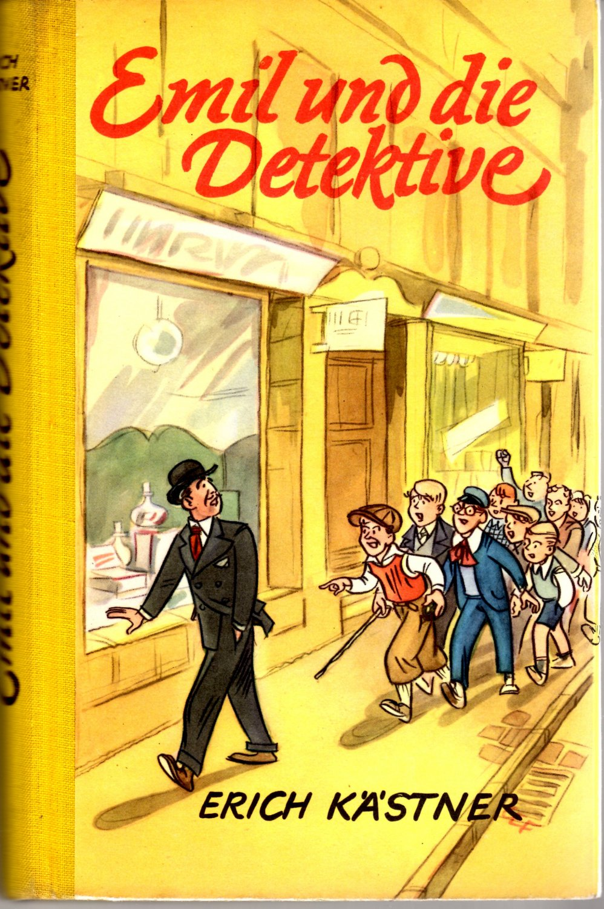

0
стр. з
0
сторінок

завантаження...

Эрих Кестнер
Эмиль и сыщики
Текст адаптировали Екатерина Макаренко и Илья Франк
Метод чтения Ильи Франка
Inhalt
Emil hilft Köpfe waschenWachtmeister Jeschke bleibt stummDie Reise nach Berlin kann losgehenEin Traum, in dem viel gerannt wirdEmil steigt an der falschen Station ausStraßenbahnlinie 177Große Aufregung in der SchumannstraßeDer Junge mit der Hupe taucht aufDie Detektive versammeln sichEine Autodroschke wird verfolgtEin Spion schleicht ins HotelEin grüner Liftboy entpuppt sichHerr Grundeis kriegt eine EhrengardeStecknadeln haben auch ihr GutesEmil besucht das PolizeipräsidiumDer Kriminalkommissar lässt grüßenFrau Tischbein ist so aufgeregtLässt sich daraus was lernen
Erstes Kapitel
(первая глава; das Kapítel).
Emil hilft Köpfe waschen (Эмиль помогает мыть головы; helfen; der Kopf).
«So», sagte Frau Tischbein (так, — сказала госпожа Тишбайн; der Tisch — стол; das Bein — нога), «und nun bringe mir mal den Krug mit dem warmen Wasser nach (а теперь принеси-ка мне кувшин с горячей водой вслед /за мной/; mal — частица -ка; раз, разок; warm — теплый; горячий; das Wasser; nachbringen; nach — после; вслед)!» Sie selber nahm einen anderen Krug und den kleinen blauen Topf (сама она взяла другой кувшин и маленький синий горшок; nehmen; der Topf — горшок; кастрюля) mit der flüssigen Kamillenseife (с жидким ромашковым мылом; die Kamílle — ромашка; die Seife — мыло) und spazierte aus der Küche in die Stube (и прошла/прошествовала из кухни в комнату; spazieren — гулять, прогуливаться). Emil packte seinen Krug an (Эмиль схватил свой кувшин; anpacken — хватать) und lief hinter der Mutter her (и побежал = поспешил вслед за матерью; laufen).
«So», sagte Frau Tischbein, «und nun bringe mir mal den Krug mit dem warmen Wasser nach!» Sie selber nahm einen anderen Krug und den kleinen blauen Topf mit der flüssigen Kamillenseife und spazierte aus der Küche in die Stube. Emil packte seinen Krug an und lief hinter der Mutter her.
In der Stube saß eine Frau (в комнате сидела женщина; sitzen) und hielt den Kopf über das weiße Waschbecken gebückt (и держала голову склоненной над белой раковиной/тазом; halten; waschen — стирать; das Becken — таз; sich bücken — нагибаться, склоняться).
Ihre Frisur war aufgelöst (ее волосы были распущены; die Frisúr — прическа) und hing wie drei Pfund Wolle nach unten (и свисали вниз как три фунта шерсти; hängen; das Pfund; die Wolle). Emils Mutter goss die Kamillenseife in das blonde Haar (мать Эмиля налила ромашкого мыла в белокурые волосы; gießen) und begann den fremden Kopf zu waschen (и начала мыть чужую голову; beginnen), dass es schäumte (так что /все/ вспенилось; schäumen — пениться; der Schaum — пена).
In der Stube saß eine Frau und hielt den Kopf über das weiße Waschbecken gebückt.
Ihre Frisur war aufgelöst und hing wie drei Pfund Wolle nach unten. Emils Mutter goss die Kamillenseife in das blonde Haar und begann den fremden Kopf zu waschen, dass es schäumte.
«Ist es nicht zu heiß (не слишком горячо)?» fragte sie (спросила она).
«Nein, es geht (нет, все в порядке/годится: «оно идет») », antwortete der Kopf (ответила голова).
«Ach, das ist ja Frau Bäckermeister Wirth (ах, да это ведь жена булочника Вирт; der Bäcker — пекарь, булочник; backen — печь, выпекать; der Meister — мастер, специалист)! Guten Tag (добрый день; der Tag)!» sagte Emil und schob seinen Krug unter die Waschtoilette (сказал Эмиль и задвинул свой кувшин под туалетный столик; schieben — толкать, двигать; waschen — мыть; sich waschen — мыться; die Toilétte [туалэтэ] — трельяж; туалет).
«Ist es nicht zu heiß?» fragte sie.
«Nein, es geht», antwortete der Kopf.
«Ach, das ist ja Frau Bäckermeister Wirth! Guten Tag!» sagte Emil und schob seinen Krug unter die Waschtoilette.
«Du hast's gut, Emil (тебе повезло, Эмиль: «ты имеешь это хорошо»). Du fährst nach Berlin (ты едешь в Берлин; fahren), wie ich höre (как я слышу) », meinte der Kopf (сказала: «выразила мнение» голова; meinen — полагать, думать, иметь в виду; выражать мнение). Und es klang (это прозвучало /так/; klingen), als spräche wer (как если бы /это/ сказал кто-то; sprechen; er sprach — он сказал; er spräche — он сказал бы), der in Schlagsahne untergetaucht worden ist (кого погрузили: «кто/который стал погружен» во взбитые сливки; die Schlagsahne — взбитые сливки; schlagen — бить; unter — вниз, tauchen — нырять; погружать).
«Du hast's gut, Emil. Du fährst nach Berlin, wie ich höre», meinte der Kopf. Und es klang, als spräche wer, der in Schlagsahne untergetaucht worden ist.
«Erst hatte er zwar keine rechte Lust (сперва, правда, у него не было: «он /не/ имел» никакого настоящего желания) », sagte die Mutter und schrubbte die Bäckermeisterin (сказала мама и продолжила тереть: «драить» жену булочника; schrubben — мыть шваброй, чистить, скоблить). «Aber wozu soll der Junge die Ferien hier totschlagen (но для чего/зачем же мальчик должен убивать каникулы здесь, tot — мертвый; schlagen — бить)? Er kennt Berlin überhaupt noch nicht (он еще вообще не знает Берлин). Und meine Schwester Martha hat uns schon immer mal einladen wollen (а моя сестра Марта уж всегда/все время хотела нас пригласить; mal — частица -ка; раз, разок).
«Erst hatte er zwar keine rechte Lust», sagte die Mutter und schrubbte die Bäckermeisterin. «Aber wozu soll der Junge die Ferien hier totschlagen? Er kennt Berlin überhaupt noch nicht. Und meine Schwester Martha hat uns schon immer mal einladen wollen.
Ihr Mann verdient ganz anständig (ее муж вполне прилично зарабатывает; ganz — весь, целый; совсем, совершенно; anständig — порядочный, приличный, удовлетворительный; der Anstand — приличие). Er ist bei der Post (он служит на почте: «есть при почте»; die Post). Im Innendienst (во внутренней службе /т.е. не почтальоном/; innen — внутри; der Dienst — служба; dienen — служить). Ich kann freilich nicht mitfahren (я, конечно, не могу поехать вместе с ним; mit — с, вместе с). Vor den Feiertagen gibt's viel zu tun (перед праздниками имеется /очень/ много дел/много работы: «много чего сделать»; die Feier — празднество, праздник; der Feiertag — праздничный день; es gibt — иметься, быть в наличии). Na, er ist ja groß genug (ну, он ведь /уже/ достаточно большой) und muss eben unterwegs gut aufpassen (и как раз должен быть очень внимательным/осторожным во время поездки: «дорóгой хорошо наблюдать»; unterwegs — в пути, по пути, во время пути; der Weg — дорога, путь). Außerdem holt ihn meine Mutter am Bahnhof Friedrichstraße ab (кроме того, моя мать встретит его на вокзале/станции Фридрихштрассе; abholen — заходить, заезжать; забирать; jemanden am Bahnhof abholen — встречать кого-либо на вокзале; der Bahnhof). Sie treffen sich am Blumenkiosk (они встречаются у цветочного киоска; die Blume — цветок; der Kíosk).»
Ihr Mann verdient ganz anständig. Er ist bei der Post. Im Innendienst. Ich kann freilich nicht mitfahren. Vor den Feiertagen gibt's viel zu tun. Na, er ist ja groß genug und muss eben unterwegs gut aufpassen. Außerdem holt ihn meine Mutter am Bahnhof Friedrichstraße ab. Sie treffen sich am Blumenkiosk.»
«Berlin wird ihm sicher gefallen (Берлин ему конечно/наверняка понравится). Das ist was für Kinder (это нечто для детей = детям это как раз интересно). Wir waren vor anderthalb Jahren mit dem Kegelklub drüben (мы там были полтора года назад: «перед полутора годами» с кегельным клубом; der Kegel; der Klub; drüben — по ту сторону, там). So ein Rummel (такая сутолока; der Rummel — ярмарка, гулянье /с балаганами, с аттракционами/; суматоха, шум)! Da gibt es doch wirklich Straßen (там, однако же, действительно есть улицы; doch — все-таки, все же; однако, но; же, ведь; die Straße), die nachts genauso hell sind wie am Tage (которые по ночам точно так же светлы = освещены, как /и/ днем; der Tag). Und die Autos (а машины; das Auto)!» berichtete Frau Wirth aus der Tiefe des Waschbeckens (сообщала/рассказывала госпожа Вирт из глубины таза; das Waschbecken — таз, умывальник; waschen — стирать; das Becken — таз).
«Berlin wird ihm sicher gefallen. Das ist was für Kinder. Wir waren vor anderthalb Jahren mit dem Kegelklub drüben. So ein Rummel! Da gibt es doch wirklich Straßen, die nachts genauso hell sind wie am Tage. Und die Autos!» berichtete Frau Wirth aus der Tiefe des Waschbeckens.
«Sehr viele ausländische Wagen (очень много иностранных машин; der Wagen; das Ausland — заграница)?» fragte Emil (спросил Эмиль).
«Woher soll ich denn das wissen (откуда же мне это знать: «откуда я должна это знать»; denn — же, все же /при вопросе/)?» sagte Frau Wirth und musste niesen (сказала госпожа Вирт и невольно чихнула: «должна была чихнуть»). Ihr war Seifenschaum in die Nase gekommen (ей в нос попала: «пришла» мыльная пена; die Seife — мыло; der Schaum — пена; kommen).
«Sehr viele ausländische Wagen?» fragte Emil.
«Woher soll ich denn das wissen?» sagte Frau Wirth und musste niesen. Ihr war Seifenschaum in die Nase gekommen.
«Na, nun mach aber, dass du fertig wirst (ну, а теперь сделай /так/, что ты станешь/будешь готовым = давай-ка поживей переоденься; aber — но, а; werden — становиться) », drängte die Mutter (торопила: «теснила» мама; drängen — напирать, теснить; торопить).
«Deinen guten Anzug hab' ich im Schlafzimmer zurechtgelegt (твой хороший костюм я приготовила: «положила как надо» в спальной комнате; der Anzug; das Schlafzimmer; schlafen — спать; das Zimmer — комната; zurechtlegen — приводить в порядок, приготовить; legen — класть, укладывать). Zieh ihn an (надень его; anziehen), damit wir dann sofort essen können (чтобы мы затем сразу же смогли поесть), wenn ich Frau Wirth frisiert habe (когда я сделаю прическу госпоже Вирт; frisieren — причесывать, делать прическу).»
«Na, nun mach aber, dass du fertig wirst», drängte die Mutter.
«Deinen guten Anzug hab' ich im Schlafzimmer zurechtgelegt. Zieh ihn an, damit wir dann sofort essen können, wenn ich Frau Wirth frisiert habe.»
«Was für'n Hemd (что за рубашка = какую взять рубашку; was für'n = was für ein; das Hemd)?» erkundigte sich Emil (осведомился Эмиль).
«Liegt alles auf dem Bett (всё лежит на кровати; das Bett). Und zieh die Strümpfe vorsichtig an (и осторожно надевай носки; etwas anziehen — надевать что-либо; der Strumpf — чулок). Und wasch dich erst gründlich (и сперва как следует помойся/вымойся; gründlich — основательно; der Grund — почва, грунт; основа). Und ziehe dir neue Schnürsenkel in die Schuhe (и вдень себе: «тебе» новые шнурки в туфли/ботинки; der Schnürsenkel; der Schuh). Dalli, dalli (живо, давай)!»
«Puh! (да ну /ладно/; puh — фу!, ух! /на что-либо неприятное/) » bemerkte Emil und trollte sich (заметил Эмиль и смылся; trollen — бежать рысью; sich trollen — убираться, уходить).
«Was für'n Hemd?» erkundigte sich Emil.
«Liegt alles auf dem Bett. Und zieh die Strümpfe vorsichtig an. Und wasch dich erst gründlich. Und ziehe dir neue Schnürsenkel in die Schuhe. Dalli, dalli!»
«Puh!» bemerkte Emil und trollte sich.
Als Frau Wirth, schön onduliert (когда госпожа Вирт, прекрасно завитая) und mit ihrem Spiegelbild zufrieden (и довольная своим отражением; der Spiegel — зеркало; das Bild — картина), gegangen war (ушла; gehen), trat die Mutter ins Schlafzimmer und sah (мама вошла в спальную комнату и увидела; treten — ступать, вступать, входить; das Schlafzimmer; sehen), wie Emil unglücklich herumlief (как Эмиль /с/ несчастным /видом/ мечется: «кругом бегал» по комнате; glücklich — счастливый; herumlaufen; herum — вокруг, кругом; laufen — бежать).
Als Frau Wirth, schön onduliert und mit ihrem Spiegelbild zufrieden, gegangen war, trat die Mutter ins Schlafzimmer und sah, wie Emil unglücklich herumlief.
«Kannst du mir nicht sagen (ты не можешь мне сказать), wer die guten Anzüge erfunden hat (кто изобрел = придумал эти хорошие костюмы; der Anzug; erfinden — изобретать; выдумывать)?»
«Nein, tut mir Leid (нет, сожалею: «делает мне жалость/сожаление»; das Leid — страдание). Aber warum willst du's wissen (но почему ты хочешь это знать = зачем тебе это; wollen — хотеть, желать; du's = du es)?»
«Gib mir die Adresse (дай мне адрес; geben), und ich erschieße den Kerl (и я застрелю этого парня; schießen — стрелять; erschießen — застрелить).»
«Kannst du mir nicht sagen, wer die guten Anzüge erfunden hat?»
«Nein, tut mir Leid. Aber warum willst du's wissen?»
«Gib mir die Adresse, und ich erschieße den Kerl.»
«Ach, hast du's schwer (ах ты бедняжка: «имеешь ты это тяжело»)! Andere Kinder sind traurig (другие дети огорчаются; das Kind; traurig — грустный, печальный; die Trauer — печаль, скорбь), weil sie keinen guten Anzug haben (потому что они не имеют = у них нет хорошего костюма). So hat jeder seine Sorgen (итак, каждый имеет свои заботы = у каждого свои проблемы; die Sorge) … Ehe ich's vergesse (прежде чем я это забуду = пока не забыла; ich's = ich es): heute Abend lässt du dir von Tante Martha einen Kleiderbügel geben (сегодня вечером попросишь тетю Марту, чтобы она дала тебе вешалку для одежды: «пустишь/позволишь ты тебе от тети Марты вешалку для одежды дать»; der Abend; lassen — оставлять; заставлять, велеть; допускать, позволять; das Kleid — платье, одежда; der Bügel — ручка, скоба) und hängst den Anzug ordentlich auf (и аккуратно повесишь костюм; etwas aufhängen — вешать что-либо; ordentlich — аккуратный; упорядоченный; в надлежащем порядке; хорошенько, изрядно, как следует; die Ordnung — порядок). Vorher wird er mir aber ausgebürstet (но перед этим/предварительно чтоб он мне был вычищен /щеткой/: «будет он мне, однако, вычищен»; die Bürste — щетка).
«Ach, hast du's schwer! Andere Kinder sind traurig, weil sie keinen guten Anzug haben. So hat jeder seine Sorgen … Ehe ich's vergesse: heute Abend lässt du dir von Tante Martha einen Kleiderbügel geben und hängst den Anzug ordentlich auf. Vorher wird er mir aber ausgebürstet.
Vergiss es nicht (не забудь это; vergessen)! Und morgen kannst du schon wieder deinen Pullover, dieses Räuberjackett, anziehen (а завтра ты уже снова сможешь надеть свой свитер, этот разбойничий пиджак/китель; der Räuber — разбойник, грабитель; das Jackétt [жакет]). Sonst noch was (кроме этого/помимо этого еще что = что же еще)? Der Koffer ist gepackt (чемодан уложен; packen — паковать, укладывать /вещи/). Die Blumen für die Tante sind eingewickelt (цветы для тети завернуты; die Blume). Das Geld für Großmutter gebe ich dir nachher (деньги для бабушки я тебе дам потом; nachher — после /этого/; потом, затем, впоследствии, позже). Und nun wollen wir essen (а теперь давай поедим: «хотим мы поесть»). Kommen Sie, junger Mann (приходите/идите /сюда/ = пойдемте, молодой человек)!»
Vergiss es nicht! Und morgen kannst du schon wieder deinen Pullover, dieses Räuberjackett, anziehen. Sonst noch was? Der Koffer ist gepackt. Die Blumen für die Tante sind eingewickelt. Das Geld für Großmutter gebe ich dir nachher. Und nun wollen wir essen. Kommen Sie, junger Mann!»
Frau Tischbein legte den Arm um seine Schulter (госпожа Тишбайн обняла его за плечи: « положила руку вокруг его плеча») und transportierte ihn nach der Küche (и препроводила его на кухню). Es gab Makkaroni mit Schinken und geriebenem Parmesankäse (/там/ имелись = были приготовлены макароны с ветчиной и тертым пармезанским сыром; es gibt — иметься, быть в наличии; der Schinken; reiben — тереть; der Käse). Emil futterte wie ein Scheunendrescher (Эмиль уплетал, как амбарный молотильщик = за троих; das Futter — корм; die Scheune — сарай, dreschen — молотить).
Frau Tischbein legte den Arm um seine Schulter und transportierte ihn nach der Küche. Es gab Makkaroni mit Schinken und geriebenem Parmesankäse. Emil futterte wie ein Scheunendrescher.
Nur manchmal setzte er ab (только иногда он прерывался = останавливался; absetzen — прерывать, прекращать) und blickte zur Mutter hinüber (и смотрел = бросал взгляд на мать: «к матери туда-через»), als fürchte er (как будто/словно опасался), sie könne ihm, so kurz vor dem Abschied (/что/ она могла бы так коротко = так незадолго до расставания; der Abschied; sie kann — она может; sie könne — /что/ она может /т.е. в косвенной речи/), seinen Appetit übel nehmen (обидеться на него за его аппетит: «его аппетит взять/принять плохо»; übel — дурной, плохой).
Nur manchmal setzte er ab und blickte zur Mutter hinüber, als fürchte er, sie könne ihm, so kurz vor dem Abschied, seinen Appetit übel nehmen.
«Und schreib sofort eine Karte (и сразу же напиши открытку). Ich habe sie dir zurechtgelegt (я ее тебе подготовила/уложила). Im Koffer, gleich obenauf (в чемодане, сразу наверху; der Koffer).»
«Wird gemacht (будет сделано) », sagte Emil und schob (сказал Эмиль и смахнул: «сдвинул/столкнул»; schieben), möglichst unauffällig (как только мог: «возможнейше» незаметно; auffallen — бросаться в глаза; auffällig — бросающийся в глаза), einen Makkaroni vom Knie (макаронину с колена; das Knie).
«Und schreib sofort eine Karte. Ich habe sie dir zurechtgelegt. Im Koffer, gleich obenauf.»
«Wird gemacht», sagte Emil und schob, möglichst unauffällig, einen Makkaroni vom Knie.
Die Mutter merkte glücklicherweise nichts (мама, к счастью, ничего не заметила; glücklicherweise — к счастью; das Glück — счастье; die Weise — способ, манера).
«Grüße sie alle schön von mir (поприветствуй их всех от меня хорошенько = передай им всем большой привет; schön — прекрасно; хорошенько). Und pass gut auf (будь очень внимателен/осторожен: «смотри хорошо /за всем/»; aufpassen — быть внимательным, осторожным; pass auf! — внимание!, осторожно!, смотри!). In Berlin geht es anders zu als bei uns in Neustadt (в Берлине /всё/ происходит не так: «по-другому», как у нас в Нейштадте) Und am Sonntag gehst du mit Onkel Robert ins Kaiser-Friedrich-Museum (а в воскресенье ты пойдешь с дядей Робертом в музей кайзера Фридриха; der Tag).
Die Mutter merkte glücklicherweise nichts.
«Grüße sie alle schön von mir. Und pass gut auf. In Berlin geht es anders zu als bei uns in Neustadt. Und am Sonntag gehst du mit Onkel Robert ins Kaiser-Friedrich-Museum.
Und benimm dich anständig (и веди себя прилично; sich benehmen), damit es nicht heißt (чтобы не говорили: «чтобы это не называлось»), wir hier wüssten nicht (/что/ мы здесь якобы не знаем; wissen — знать; wussten — знали; wüssten — знали бы; /что/ знаем), was sich gehört (что прилично/подобает: «что себе принадлежит»).»
«Mein großes Ehrenwort (мое большое честное слово; die Ehre — честь; das Wort — слово) », sagte Emil (сказал Эмиль).
Und benimm dich anständig, damit es nicht heißt, wir hier wüssten nicht, was sich gehört.»
«Mein großes Ehrenwort», sagte Emil.
Nach dem Essen zogen beide in die Stube (после еды оба перешли в комнату; das Essen; ziehen). Die Mutter holte einen Blechkasten aus dem Schrank (мама достала из шкафа жестяную коробку; das Blech — жесть; der Kasten — ящик, коробка; der Schrank) und zählte Geld (и подсчитала деньги; das Geld; zählen — считать). Dann schüttelte sie den Kopf und zählte noch einmal (затем она покачала головой и посчитала еще раз). Dann fragte sie (после этого она спросила): «Wer war eigentlich gestern Nachmittag da, hm (кто, собственно, был здесь вчера после полудня; der Nachmittag; nach — после; der Mittag — полдень)?»
Nach dem Essen zogen beide in die Stube. Die Mutter holte einen Blechkasten aus dem Schrank und zählte Geld. Dann schüttelte sie den Kopf und zählte noch einmal. Dann fragte sie: «Wer war eigentlich gestern Nachmittag da, hm?»
«Fräulein Thomas», sagte er, «und Frau Homburg (барышня/фройляйн Томас, — сказал он, — и госпожа/фрау Хомбург).»
«Ja. Aber es stimmt noch nicht (да, но все равно не сходится: «но оно не соответствует еще»).» Sie dachte nach (она подумала/поразмыслила; nachdenken), suchte den Zettel (поискала/выискала записку), auf dem sie die Geschäftseinnahmen notierte (на которой: «на котором» она записывала доходы от «бизнеса»; das Geschäft — дело; занятие; фирма, предприятие; торговля; магазин; die Einnahme — выручка, сбор, доход), rechnete und meinte schließlich (повычисляла и, наконец, сказала: «высказала мнение»; meinen — полагать, думать, иметь в виду, высказывать мнение): Es fehlen acht Mark (не хватает: «отсутствуют» восемь марок; die Mark).»
«Fräulein Thomas», sagte er, «und Frau Homburg.»
«Ja. Aber es stimmt noch nicht.» Sie dachte nach, suchte den Zettel, auf dem sie die Geschäftseinnahmen notierte, rechnete und meinte schließlich: Es fehlen acht Mark.»
«Der Gasmann war heute früh hier (сегодня рано = утром здесь был газовщик; das Gas — газ).»
«Richtig (правильно)! Nun stimmt es leider (теперь все сходится: «соответствует оно», к сожалению).» Die Mutter pfiff sich eins (мама разок присвистнула: «свистнула себе разок»; pfeifen), vermutlich, um ihre Sorgen zu ärgern (вероятно, чтобы рассердить свои заботы = чтобы подразнить свои заботы, т.е. чтобы их преодолеть; vermutlich — наверно, предположительно, вероятно; vermuten — предполагать; die Sorge), und holte drei Scheine aus dem Blechkasten (и достала из жестяного ящичка три купюры; der Schein; das Blech — листовой металл; листовая сталь; жесть; der Kasten — ящик).
«Der Gasmann war heute früh hier.»
«Richtig! Nun stimmt es leider.» Die Mutter pfiff sich eins, vermutlich, um ihre Sorgen zu ärgern, und holte drei Scheine aus dem Blechkasten.
«So, Emil (/и/так, Эмиль)! Hier sind hundertvierzig Mark (здесь есть = вот тебе сто сорок марок). Ein Hundertmarkschein und zwei Zwanzigmarkscheine (одна стомарковая купюра и две по двадцать марок; der Schein). Hundertzwanzig Mark gibst du der Großmutter (сто двадцать марок ты /от/дашь бабушке; geben) und sagst ihr (и скажешь ей), sie solle nicht böse sein (/что/ она не должна обижаться: «быть злой» /на то/), dass ich voriges Mal nichts geschickt hätte (что я в прошлый раз ничего не послала). Da wäre ich zu knapp gewesen (тогда я не свела бы концы с концами: «тут я была бы слишком сжатой/ограниченной = нуждающейся»; sein /war-gewesen/ — быть; war — был; wäre — был бы).
«So, Emil! Hier sind hundertvierzig Mark. Ein Hundertmarkschein und zwei Zwanzigmarkscheine. Hundertzwanzig Mark gibst du der Großmutter und sagst ihr, sie solle nicht böse sein, dass ich voriges Mal nichts geschickt hätte. Da wäre ich zu knapp gewesen.
Und dafür brächtest du es diesmal selber (и /передай ей, что/ зато ты привез это на сей раз сам; bringen /brachte-gebracht/– приносить, дотавлять; brächte — принес бы; /что/ принес /здесь используется для передачи косвенной речи/). Verstanden (понял; verstehen)? Die zwanzig Mark, die übrig bleiben (двадцать марок, которые останутся: «остаются лишними/сверх»; übrig — остальной, /из/лишний; übrig bleiben — оставаться), behältst du (оставишь себе; behalten — оставлять, удерживать, сохранять). Davon kaufst du dir die Fahrkarte (на них: «от этого» ты купишь себе билет /на поезд/; fahren — ехать; die Fahrkarte — проездной билет), wenn du wieder heimfährst (когда ты снова поедешь домой; heim — домой; fahren — ехать). Das macht zehn Mark ungefähr (это составит: «делает» = обойдется тебе в десять марок приблизительно). Genau weiß ich's nicht (точно я этого не знаю; wissen — знать; ich's = ich es). Und von dem Rest bezahlst du (а из остатка ты оплатишь; der Rest), wenn ihr ausgeht (когда/если вы /куда-нибудь/ пойдете: «выйдете»), was du isst und trinkst (/то/, что ты будешь есть и пить; essen).
Und dafür brächtest du es diesmal selber. Verstanden? Die zwanzig Mark, die übrig bleiben, behältst du. Davon kaufst du dir die Fahrkarte, wenn du wieder heimfährst. Das macht ungefähr zehn Mark. Genau weiß ich's nicht. Und von dem Rest bezahlst du, wenn ihr ausgeht, was du isst und trinkst.
Außerdem ist es immer gut (кроме того, это всегда хорошо), wenn man ein paar Mark in der Tasche hat (когда/если имеешь несколько марок в кармане; die Tasche), die man nicht braucht (в которых не нуждаешься) und für alle Fälle parat hält (и держишь наготове на всякий случай: «на все случаи»; der Fall; parát halten — держать наготове). Ja. Und hier ist das Kuvert von Tante Marthas Brief (а здесь — конверт от письма тети Марты; das Kuvért; der Brief). Da stecke ich das Geld hinein (в него я вложу деньги; hinein — внутрь). Pass mir ja gut auf (будь же очень осторожен/внимателен = смотри, проследи мне; aufpassen — быть внимательным, осторожным; pass auf! — внимание!, осторожно!, смотри!), dass du es nicht verlierst (чтобы ты его не потерял)! Wo willst du es hintun (куда ты хочешь его положить; wollen — хотеть, желать; hin — туда; tun — делать; класть)?»
Außerdem ist es immer gut, wenn man ein paar Mark in der Tasche hat, die man nicht braucht und für alle Fälle parat hält. Ja. Und hier ist das Kuvert von Tante Marthas Brief. Da stecke ich das Geld hinein. Pass mir ja gut auf, dass du es nicht verlierst! Wo willst du es hintun?»
Sie legte die drei Scheine in den seitlich aufgeschnittenen Briefumschlag (она положила эти три купюры в надрезанный сбоку конверт; der Schein; seitlich — боковой; die Seite — сторона, бок; schneiden — резать; aufschneiden — разрезать, надрезать; der Brief — письмо; der Umschlag — конверт), knickte ihn in der Mitte um (сложила его в середине = пополам; umknicken; um — отделяемая глагольная приставка, указывает на поворот; knicken — надламывать; сгибать) und gab ihn Emil (и дала его Эмилю; geben).
Der besann sich erst eine Weile (тот сперва некоторое время подумал/поразмыслил; sich besinnen — раздумывать; die Weile — промежуток времени; eine Weile — некоторое время).
Sie legte die drei Scheine in den seitlich aufgeschnittenen Briefumschlag, knickte ihn in der Mitte um und gab ihn Emil.
Der besann sich erst eine Weile.
Dann schob er ihn in die rechte innere Tasche (затем сунул его в правый внутренний карман; schieben — толкать), tief hinunter (поглубже вниз; hin — туда; unter — внизу), klopfte sich, zur Beruhigung, noch einmal von außen auf die blaue Jacke (похлопал себя для успокоения еще раз снаружи по синей курточке/по синему пиджаку; die Beruhigung; ruhig — спокойный) und sagte überzeugt (и убежденно сказал; überzeugen — убеждать): «So, da klettert es nicht heraus (так /вот/, отсюда он: «оно» не выберется: «не выкарабкается наружу»; klettern — карабкаться, лезть).»
Dann schob er ihn in die rechte innere Tasche, tief hinunter, klopfte sich, zur Beruhigung, noch einmal von außen auf die blaue Jacke und sagte überzeugt: «So, da klettert es nicht heraus.»
«Und erzähle keinem Menschen im Coupé (и не рассказывай никому: «никакому человеку» в купе; der Mensch; das Coupé), dass du so viel Geld bei dir hast (что у тебя с собой так много денег: «ты так много денег при себе имеешь»; das Geld)!»
«Aber Muttchen (но мамочка = ну что ты)!» Emil war geradezu beleidigt (Эмиль был прямо-таки обижен; gerade — прямо; geradezu — прямо-таки; beleidigen — обижать; оскорблять). Ihm so eine Dummheit zuzutrauen (приписывать ему /способность на/ такую глупость = считать его способным на такую глупость; jemandem etwas zutrauen — считать кого-либо способным на что-либо; trauen — верить, доверять; du — глупый)! Frau Tischbein tat noch etwas Geld in ihr Portemonnaie (госпожа/фрау Тишбайн положила еще немного денег в свой: «ее» бумажник; tun — делать; класть; das Portemonnáie [портмонэ]).
«Und erzähle keinem Menschen im Coupé, dass du so viel Geld bei dir hast!»
«Aber Muttchen!» Emil war geradezu beleidigt. Ihm so eine Dummheit zuzutrauen! Frau Tischbein tat noch etwas Geld in ihr Portemonnaie.
Dann trug sie den Blechkasten wieder zum Schrank (затем она отнесла жестяной ящичек снова/обратно к шкафу; tragen; der Schrank) und las rasch noch einmal den Brief (и еще раз быстро прочитала письмо; lesen), den sie von ihrer Schwester aus Berlin erhalten hatte (которое она получила от своей сестры из Берлина; erhalten — получать; halten — держать) und in dem die genauen Abfahrtszeiten und Ankunftszeiten des Zuges standen (и в котором стояли точные времена отправления и прибытия поезда; die Abfahrt — отправление, отъезд; die Zeit; die Ankunft — прибытие, приход; stehen), mit dem Emil fahren sollte (на котором: «с которым» Эмиль должен был ехать) …
Dann trug sie den Blechkasten wieder zum Schrank und las rasch noch einmal den Brief, den sie von ihrer Schwester aus Berlin erhalten hatte und in dem die genauen Abfahrtszeiten und Ankunftszeiten des Zuges standen, mit dem Emil fahren sollte …
Manche von euch werden sicher der Ansicht sein (некоторые из вас будут, конечно, того мнения/точки зрения; sicher — наверно, непременно, твердо, наверняка; die Ansicht), man brauche sich wegen hundertvierzig Mark wahrhaftig nicht so gründlich zu unterhalten (/что вот уж/ действительно не нужно так основательно беседовать из-за /каких-то/ ста сорока марок; gründlich — основательно; der Grund — почва, грунт; основа; sich unterhalten — беседовать; wahrhaftig — поистине, действительно; wahr — истинный) wie Frau Friseuse Tischbein mit ihrem Jungen (как госпожа парикмахер Тишбайн со своим мальчиком; der Junge). Und wenn jemand zweitausend oder zwanzigtausend oder gar hunderttausend Mark im Monat verdient (и если кто-либо зарабатывает две тысячи, или двадцать тысяч, или даже вообще сто тысяч марок в месяц; der Monat; verdienen — зарабатывать; dienen — служить), hat er das ja auch nicht nötig (то ему это также и не нужно: «имеет он это ведь также ненужным»).
Manche von euch werden sicher der Ansicht sein, man brauche sich wegen hundertvierzig Mark wahrhaftig nicht so gründlich zu unterhalten wie Frau Friseuse Tischbein mit ihrem Jungen. Und wenn jemand zweitausend oder zwanzigtausend oder gar hunderttausend Mark im Monat verdient, hat er das ja auch nicht nötig.
Aber, falls ihr es nicht wissen solltet (однако, в /том/ случае, если вы этого не знаете: «должны бы не знать»): Die meisten Leute verdienen viel, viel weniger (большинство людей зарабатывают намного, /значительно/ намного меньше). Und wer pro Woche fünfunddreißig Mark verdient (а кто зарабатывает тридцать пять марок в неделю; die Woche), der muss (тот должен/тому приходится), ob es euch gefällt oder nicht (нравится ли это вам или нет; gefallen), hundertvierzig Mark, die er gespart hat (сто сорок марок, которые он сэкономил; sparen — копить, откладывать /деньги/; беречь, экономить), für sehr viel Geld halten (считать очень большими деньгами: «держать за очень много денег»).
Aber, falls ihr es nicht wissen solltet: Die meisten Leute verdienen viel, viel weniger. Und wer pro Woche fünfunddreißig Mark verdient, der muss, ob es euch gefällt oder nicht, hundertvierzig Mark, die er gespart hat, für sehr viel Geld halten.
Für zahllose Menschen sind hundert Mark fast so viel wie eine Million (для бесчисленных людей сто марок /значат/ почти так же много, как миллион; die Zahl — число; der Mensch; die Millión), und sie schreiben hundert Mark sozusagen mit sechs Nullen (и они пишут сто марок, так сказать, с шестью нулями; die Null). Und wie viel eine Million in Wirklichkeit ist (а сколько составляет один миллион в действительности; die Wirklichkeit; wirklich — действительный; wirken — действовать), das können sie nicht einmal vorstellen, wenn sie träumen (этого они даже во сне не могут себе представить: «этого не могут они даже представить, когда видят сны»; nicht einmal — даже не; träumen — видеть во сне; грезить, мечтать; der Traum — сновидение; мечта).
Für zahllose Menschen sind hundert Mark fast so viel wie eine Million, und sie schreiben hundert Mark sozusagen mit sechs Nullen. Und wie viel eine Million in Wirklichkeit ist, das können sie nicht einmal vorstellen, wenn sie träumen.
Emil hatte keinen Vater mehr (у Эмиля больше не было отца). Doch seine Mutter hatte zu tun (однако его мать была очень занята = много трудилась: «имела /что/ делать»), frisierte in ihrer Stube (делала прически в своей комнате), wusch blonde Köpfe und braune Köpfe (мыла /и/ белокурые головы, и коричневые= и блондинок, и шатенок; waschen; der Kopf) und arbeitete unermüdlich (и работала неустанно = не покладая рук; müde — уставший, ermüden — утомлять), damit sie zu essen hatten (чтобы они имели /что/ поесть) und die Gasrechnung, die Kohlen, die Miete, die Kleidung, die Bücher und das Schulgeld bezahlen konnten (и могли оплатить счет за газ, угли, аренду квартиры, одежду, книги и /внести/ плату за обучение: «школьные деньги»; das Gas; die Rechnung — счет; rechnen — считать; вычислять; die Kohle — уголь; das Buch — книга; die Schule — школа). Nur manchmal war sie krank (только иногда/временами она была больна) und lag zu Bett (и лежала в постели; liegen; das Bett).
Emil hatte keinen Vater mehr. Doch seine Mutter hatte zu tun, frisierte in ihrer Stube, wusch blonde Köpfe und braune Köpfe und arbeitete unermüdlich, damit sie zu essen hatten und die Gasrechnung, die Kohlen, die Miete, die Kleidung, die Bücher und das Schulgeld bezahlen konnten. Nur manchmal war sie krank und lag zu Bett.
Der Doktor kam und verschrieb Medikamente (приходил доктор и прописывал лекарства; kommen; verschreiben; das Medikamént). Und Emil machte der Mutter heiße Umschläge (а Эмиль делал матери горячие компрессы; der Umschlag) und kochte in der Küche für sie und sich (готовил: «варил» на кухне для нее и себя; die Küche). Und wenn sie schlief (а когда она спала; schlafen), wischte er sogar die Fußböden mit dem nassen Scheuerlappen (/то/ он даже протирал полы влажной половой тряпкой; der Fußboden; der Fuß — нога /ступня/; der Boden — грунт; дно; пол; scheuern — тереть, мыть, чистить, скрести; der Lappen — тряпка), damit sie nicht sagen sollte (чтобы ей не пришлось сказать): «Ich muss aufstehen (я должна/мне надо встать). Die Wohnung verkommt ganz und gar (квартира совершенно запущена: «приходит в упадок полностью и совсем»; verkommen — приходить в упадок).»
Der Doktor kam und verschrieb Medikamente. Und Emil machte der Mutter heiße Umschläge und kochte in der Küche für sie und sich. Und wenn sie schlief, wischte er sogar die Fußböden mit dem nassen Scheuerlappen, damit sie nicht sagen sollte: «Ich muss aufstehen. Die Wohnung verkommt ganz und gar.»
Könnt ihr es begreifen (вы можете это понять) und werdet ihr nicht lachen (и не будете смеяться), wenn ich euch jetzt erzähle (если я вам сейчас расскажу), dass Emil ein Musterknabe war (что Эмиль был образцовым мальчиком; das Muster — образец; der Knabe — мальчик)? Seht, er hatte seine Mutter sehr lieb (видите /ли/, он очень любил свою мать: «имел очень любимой»; liebhaben — любить). Und er hätte sich zu Tode geschämt (и он бы до смерти устыдился; sich schämen), wenn er faul gewesen wäre (если бы он был ленивым; sein /war-gewesen/ — быть; war — был; wäre — был бы), während sie arbeitete (в то время как она работала), rechnete (подсчитывала: «вычисляла») und wieder arbeitete (и снова/опять работала).
Könnt ihr es begreifen und werdet ihr nicht lachen, wenn ich euch jetzt erzähle, dass Emil ein Musterknabe war? Seht, er hatte seine Mutter sehr lieb. Und er hätte sich zu Tode geschämt, wenn er faul gewesen wäre, während sie arbeitete, rechnete und wieder arbeitete.
Da hätte er seine Schularbeiten verbummeln (/и/ тут = и при этом он прогуливал бы свои школьные работы = задания; die Schule — школа; die Arbeit — работа; bummeln — гулять, шататься; болтаться), oder von Naumanns Richard abschreiben sollen (или должен был бы списывать у Рихарда Наумана: «у Рихарда из семьи Науманов»; schreiben — писать; abschreiben — списывать)? Da hätte er, wenn es sich machen ließ (/и/ тут он, если бы это было возможно: «если бы это давало бы/позволяло бы себя сделать»; lassen — оставлять, пускать; позволять, побуждать), die Schule schwänzen sollen (должен был бы = смог бы позволить себе прогуливать школу; der Schwanz — хвост)?
Da hätte er seine Schularbeiten verbummeln oder von Naumanns Richard abschreiben sollen? Da hätte er, wenn es sich machen ließ, die Schule schwänzen sollen?
Er sah, wie sie sich bemühte (он видел, как она старается/какие она прилагает усилия; sehen; die Mühe — усилие, труд), ihn nichts von dem entbehren zu lassen (чтобы не дать ему быть лишенным ничего из того; entbehren — быть лишенным; lassen — оставлять, пускать; позволять, побуждать), was die andern Realschüler bekamen und besaßen (что получали и чем владели/обладали другие ученики реального училища/общеобразовательной школы; der Realschüler; bekommen — получать; besitzen). Und da hätte er sie beschwindeln und ihr Kummer machen sollen (и тут он должен был бы = смог бы ее обманывать и ее огорчать: «делать горе/огорчение»; der Schwindel — мошенничество; der Kummer)?
Er sah, wie sie sich bemühte, ihn nichts von dem entbehren zu lassen, was die andern Realschüler bekamen und besaßen. Und da hätte er sie beschwindeln und ihr Kummer machen sollen?
Emil war ein Musterknabe (Эмиль был образцовым мальчиком; das Muster — образец; der Knabe — мальчик). So ist es (это так: «так оно есть»). Aber er war keiner von der Sorte (но он был не из тех: «не /от/ того сорта»; die Sorte), die nichts anders kann (которые ничего другого /не/ могут), weil sie feig ist und geizig (потому что они трусливые и жадные; geizig — скупой) und nicht richtig jung (и не по-настоящему: «не правильно/подлинно» молоды). Er war ein Musterknabe, weil er einer sein wollte (он был образцовым мальчиком, потому что он хотел быть им: «одним /из образцовых мальчиков/»)!
Emil war ein Musterknabe. So ist es. Aber er war keiner von der Sorte, die nichts anders kann, weil sie feig ist und geizig und nicht richtig jung. Er war ein Musterknabe, weil er einer sein wollte!
Er hatte sich dazu entschlossen (он решился на это; sich entschließen), wie man sich etwa dazu entschließt (как решаешься, например, на то), nicht mehr ins Kino zu gehen (/чтобы/ не ходить больше в кино) oder keine Bonbons mehr zu essen (или не есть больше конфеты; der/das Bonbón). Er hatte sich dazu entschlossen (он решился на это), und oft fiel es ihm recht schwer (и часто ему было весьма трудно это выполнять: «выпадало это ему весьма/довольно тяжело»; fallen — падать; schwerfallen —даваться тяжело/с трудом).
Er hatte sich dazu entschlossen, wie man sich etwa dazu entschließt, nicht mehr ins Kino zu gehen oder keine Bonbons mehr zu essen. Er hatte sich dazu entschlossen, und oft fiel es ihm recht schwer.
Wenn er aber zu Ostern nach Hause kam (но когда он под Пасху приходил домой; kommen) und sagen konnte (и мог сказать): «Mutter, da sind die Zensuren (мама, вот оценки; die Zensúr), und ich bin wieder der Beste (я снова/опять лучший /ученик/)!» dann war er sehr zufrieden (тогда он был очень доволен). Er liebte das Lob (он любил похвалу), das er in der Schule und überall erhielt (которую получал в школе и /вообще/ повсюду; erhalten), nicht deshalb, weil es ihm (не потому, что она ему), sondern weil es seiner Mutter Freude machte (а потому, что она доставляла: «делала» радость его матери; die Freude).
Wenn er aber zu Ostern nach Hause kam und sagen konnte: «Mutter, da sind die Zensuren, und ich bin wieder der Beste!» dann war er sehr zufrieden. Er liebte das Lob, das er in der Schule und überall erhielt, nicht deshalb, weil es ihm, sondern weil es seiner Mutter Freude machte.
Er war stolz darauf (он гордился тем: «был горд на то»), dass er ihr (что он ей), auf seine Weise (по-своему = /доступным/ ему образом: «на свой образ/манер») , ein bisschen vergelten konnte (мог немножко отплатить /за то/), was sie für ihn (что она для него), ihr ganzes Leben lang (в течение всей своей жизни), ohne müde zu werden, tat (делала, не уставая: «без /того чтобы/ становиться усталой»; tun — делать) …
Er war stolz darauf, dass er ihr, auf seine Weise, ein bisschen vergelten konnte, was sie für ihn, ihr ganzes Leben lang, ohne müde zu werden, tat …
«Hoppla (ой) », rief die Mutter (крикнула/воскликнула мама; rufen), «wir müssen zum Bahnhof (нам нужно на вокзал: «к вокзалу»; der Bahnhof; die Bahn — путь, дорога; железная дорога; der Hof — двор). Es ist schon Viertel nach eins (уже четверть второго: «четверть после одного = после часа»; das Viertel). Und der Zug geht kurz vor zwei Uhr (а поезд уходит/отправляется незадолго: «коротко» до двух часов = без чего-то два/без нескольких минут два; die Uhr).»
«Also los, Frau Tischbein (итак, давай/пошли, фрау Тишбайн; los — непривязанный, свободный; los! — давай!, пошли!)!» sagte Emil zu seiner Mutter (сказал Эмиль своей матери), «aber, dass Sie nur wissen (но имейте в виду: «чтобы вы только знали»), den Koffer trage ich selber (чемодан я понесу сам)!»
«Hoppla», rief die Mutter, «wir müssen zum Bahnhof. Es ist schon Viertel nach eins. Und der Zug geht kurz vor zwei Uhr.»
«Also los, Frau Tischbein!» sagte Emil zu seiner Mutter, «aber, dass Sie nur wissen, den Koffer trage ich selber!»
Zweites Kapitel
(вторая глава).
Wachtmeister Jeschke bleibt stumm (вахмистр /унтер-офицер полиции/ Йешке молчит: «остается нем» ).
Vor dem Hause sagte die Mutter (перед домом мама сказала; das Haus): «Falls die Pferdebahn kommt (если подойдет/приедет конка; das Pferd — лошадь; die Bahn — рельсовая дорога), fahren wir bis zum Bahnhof (мы поедем до самого вокзала: «до к вокзалу»; der Bahnhof).»
Wer von euch weiß (кто из вас знает; wissen), wie eine Pferdebahn aussieht (как выглядит конка; aussehen)? Aber da sie gerade um die Ecke biegt und hält (но поскольку она как раз: «прямо» поворачивает из-за угла и останавливается; halten), weil Emil winkt (потому что Эмиль машет /рукой/), will ich sie euch rasch beschreiben (я хочу ее вам быстренько описать). Bevor sie weiterzuckelt (прежде чем она потрусит/побредет дальше; zuckeln — трусить /о лошади/; идти/ехать трусцой; медленно брести, плестись).
Vor dem Hause sagte die Mutter: «Falls die Pferdebahn kommt, fahren wir bis zum Bahnhof.»
Wer von euch weiß, wie eine Pferdebahn aussieht? Aber da sie gerade um die Ecke biegt und hält, weil Emil winkt, will ich sie euch rasch beschreiben. Bevor sie weiterzuckelt.
Also, die Pferdebahn ist, zunächst mal (итак, конка, прежде всего), ein tolles Ding (невероятная штука: «сумасшедшая вещь»). Ferner, sie läuft auf Schienen (далее, она бежит по рельсам; fern — далеко; laufen; die Schiene), wie eine richtige erwachsene Straßenbahn (как настоящий: «правильный» взрослый трамвай; erwachsen — взрослый; wachsen — расти) und hat ganz ähnliche Wagen (и имеет совершенно похожие вагоны; der Wagen), aber es ist eben doch nur ein Droschkengaul vorgespannt (/разница состоит/ только лишь в том, что туда запряжена лошадь; eben — только что; именно, как раз; doch — же, ведь; die Droschke — дрожки, пролётка; der Gaul — конь, лошадь; vor — перед, впереди; spannen — запрягать).
Also, die Pferdebahn ist, zunächst mal, ein tolles Ding. Ferner, sie läuft auf Schienen, wie eine richtige erwachsene Straßenbahn und hat ganz ähnliche Wagen, aber es ist eben doch nur ein Droschkengaul vorgespannt.
Für Emil und seine Freunde war der Droschkengaul einfach ein Skandal (для Эмиля и его друзей конка была просто скандалом = настоящим недоразумением; der Skandál), und sie fantasierten von elektrischen Bahnen (и они мечтали об электрических трамваях; die Bahn) mit Ober- und Unterleitung (с верхним и нижним проводом = с верхней и нижней подачей тока; die Leitung — провод; проводка; линия; leiten — вести) und fünf Scheinwerfern vorn (и пятью прожекторами спереди; der Scheinwerfer; der Schein — свет; werfen — бросать) und drei hinten (и тремя сзади), aber der Magistrat von Neustadt fand (однако городской совет Нейштадта считал: «находил»; finden; der Magistrát), dass die vier Kilometer Schienenstrang (что четыре километра рельсовой линии; das Kilométer; die Schiene — рельс; der Strang — веревка; рельсовая нить) ganz gut von einer lebenden Pferdekraft bewältigt werden konnten (могут: «могли» совершенно удовлетворительно: «хорошо» преодолеваться: «становиться преодоленными» живой лошадиной силой; das Pferd — лошадь; die Kraft — сила).
Für Emil und seine Freunde war der Droschkengaul einfach ein Skandal, und sie fantasierten von elektrischen Bahnen mit Ober- und Unterleitung und fünf Scheinwerfern vorn und drei hinten, aber der Magistrat von Neustadt fand, dass die vier Kilometer Schienenstrang ganz gut von einer lebenden Pferdekraft bewältigt werden konnten.
Bis jetzt konnte also von Elektrizität gar keine Rede sein (до сих пор, таким образом, об электричестве не могло быть и речи: «вовсе никакой речи»; die Elektrizität), und der Wagenführer hatte nicht das Geringste mit irgendwelchen Kurbeln und Hebeln zu tun (и вагоновожатый не имел ни малейшего дела с какими-то ни было рукоятками/пусковыми ручками и рычагами; führen — вести; gering — маленький, незначительный; die Kurbel; der Hebel; tun — делать, совершать; mit etwas zu tun haben — иметь дело с чем-либо), sondern er hielt in der linken Hand die Zügel (а держал в левой руке вожжи; halten; der Zügel — повод, узда) und in der rechten die Peitsche (а в правой — кнут). Hü hott (но-о, /пошла, пошла/)!
Bis jetzt konnte also von Elektrizität gar keine Rede sein, und der Wagenführer hatte nicht das Geringste mit irgendwelchen Kurbeln und Hebeln zu tun, sondern er hielt in der linken Hand die Zügel und in der rechten die Peitsche. Hü hott!
Und wenn jemand in der Rathausstraße 12 wohnte (и если кто-нибудь жил на Ратхаусштрассе, 12: «улице ратуши/городского совета»; das Rathaus — ратуша, городской совет; der Rat — совет), und er saß in der Pferdebahn (и сидел в конке; sitzen) und wollte aussteigen (и хотел сойти), so klopfte er ganz einfach an die Scheibe (то он просто-напросто: «совершенно просто» стучал по стеклу; die Scheibe — диск, круг; пластинка; шайба; оконное стекло). Dann machte der Herr Schaffner (тогда господин кондуктор делал = говорил) «Brrr (Тпру)!» und der Fahrgast war zu Hause (и пассажир был дома; fahren — ехать; der Gast — гость). Die richtige Haltestelle war vielleicht erst vor der Hausnummer 30 oder 46 (настоящая остановка была, возможно, только перед номером дома 30 или 46; halten — останавливаться; die Stelle — место; das Haus; die Nummer).
Und wenn jemand in der Rathausstraße 12 wohnte, und er saß in der Pferdebahn und wollte aussteigen, so klopfte er ganz einfach an die Scheibe. Dann machte der Herr Schaffner «Brrr!» und der Fahrgast war zu Hause. Die richtige Haltestelle war vielleicht erst vor der Hausnummer 30 oder 46.
Aber das war der Neustädter Straßenbahn GmbH. ganz egal (но нейштадскому трамваю ТОО это было совершенно безразлично; GmbH = Gesellschaft mit begrenzter Haftung = товарищество с ограниченной ответственностью; egál — всё равно, безразлично). Sie hatte Zeit (у него было время = он не спешил; die Zeit). Das Pferd hatte Zeit (у лошади было время). Der Schaffner hatte Zeit (у кондуктора было время). Die Neustädter Einwohner hatten Zeit (у жителей Нейштадта было время). Und wenn es wirklich einmal jemand besonders eilig hatte (а если уж кто-нибудь когда-нибудь: «один раз/однажды» действительно особенно спешил; es eilig haben — спешить), ging er zu Fuß (то он шел/отправлялся пешком; der Fuß — нога /стопа/; zu Fuß gehen — идти пешком) …
Aber das war der Neustädter Straßenbahn GmbH. ganz egal. Sie hatte Zeit. Das Pferd hatte Zeit. Der Schaffner hatte Zeit. Die Neustädter Einwohner hatten Zeit. Und wenn es wirklich einmal jemand besonders eilig hatte, ging er zu Fuß …
Auf dem Bahnhofsplatze 12 stiegen Frau Tischbein und Sohn aus (на вокзальной площади — 12 фрау Тишбайн и сын вышли; der Bahnhof — вокзал; der Platz — площадь; aussteigen). Und während Emil den Koffer von der Plattform angelte (и в то время как/пока Эмиль выуживал чемодан с площадки/платформы; angeln — удить /рыбу/, ловить на удочку; die Angel — удочка), brummte eine dicke Stimme hinter ihnen (за ними = у них за спиной прогудел густой бас: «толстый голос»): «Na, Sie fahren wohl in die Schweiz (ну, вы едете, видимо/пожалуй в Швейцарию = вы что, в Швейцарию собрались)?»
Auf dem Bahnhofsplatze 12 stiegen Frau Tischbein und Sohn aus. Und während Emil den Koffer von der Plattform angelte, brummte eine dicke Stimme hinter ihnen: «Na, Sie fahren wohl in die Schweiz?»
Das war der Polizeiwachtmeister Jeschke (это был сержант: «вахмистр/унтер-офицер полиции» Йешке; die Wacht — караул; охрана; вахта). Die Mutter antwortete (мать ответила): «Nein, mein Junge fährt für eine Woche nach Berlin zu Verwandten (нет, мой мальчик едет на одну неделю в Берлин к родственникам; der/die Verwandte).» Und Emil wurde es dunkelblau, beinаhe schwarz vor Augen (и Эмилю стало темно-сине, почти черно перед глазами = у него в глазах потемнело; das Auge). Denn er hatte ein sehr schlechtes Gewissen (так как совесть его была не чиста: «он имел очень плохую совесть»).
Das war der Polizeiwachtmeister Jeschke. Die Mutter antwortete: «Nein, mein Junge fährt für eine Woche nach Berlin zu Verwandten.» Und Emil wurde es dunkelblau, beinahe schwarz vor Augen. Denn er hatte ein sehr schlechtes Gewissen.
Neulich hatte ein Dutzend Realschüler (недавно/на днях дюжина учеников реального училища/общеобразовательной школы; das Dutzend), nach der Turnstunde (после урока физкультуры; turnen — заниматься гимнастикой /преимущественно на перекладине/; die Stunde — час, урок) auf den Flusswiesen (на приречных лугах; der Fluss — река; die Wiese — луг), dem Denkmal des Großherzogs (памятнику великого герцога; das Denkmal; der Herzog), der Karl mit der schiefen Backe hieß (который назывался Карлом с кривой щекой; heißen), heimlich einen alten Filzhut aufs kühle Haupt gedrückt (тайком нахлобучили: «надавили» старую фетровую шляпу на /его/ холодную: «прохладную» голову; der Filz — войлок, фетр; der Hut — шляпа; das Haupt — голова; глава).
Neulich hatte ein Dutzend Realschüler, nach der Turnstunde auf den Flusswiesen, dem Denkmal des Großherzogs, der Karl mit der schiefen Backe hieß, heimlich einen alten Filzhut aufs kühle Haupt gedrückt.
Und dann war Emil (а затем Эмиль), weil er gut zeichnen konnte (так как он умел хорошо рисовать), von den anderen hochgestemmt worden (был высоко поднят/приподнят: «высоко подперт» другими /мальчишками/; hoch — высоко; stemmen — подпирать), und er hatte dem Großherzog mit Buntstiften eine rote Nase und einen pechschwarzen Schnurrbart ins Gesicht malen müssen (и он должен был цветными карандашами нарисовать на лице: «в лицо» великого герцога красный нос и смоляно-черные/черные как смола усы; der Buntstift — цветной карандаш; bunt — пестрый, разноцветный; das Pech — смола; der Schnurrbart). Und während er noch malte (и в то время как он еще рисовал), war Wachtmeister Jeschke am anderen Ende des Obermarkts aufgetaucht (на другом конце Базарной площади: «верхнего рынка» появился: «вынырнул» вахмистр/унтер-офицер полиции Йешке; das Ende — конец; der Markt — базар, рынок; auftauchen — выныривать; появляться; tauchen — нырять)!
Und dann war Emil, weil er gut zeichnen konnte, von den anderen hochgestemmt worden, und er hatte dem Großherzog mit Buntstiften eine rote Nase und einen pechschwarzen Schnurrbart ins Gesicht malen müssen. Und während er noch malte, war Wachtmeister Jeschke am anderen Ende des Obermarkts aufgetaucht!
Sie waren blitzartig davongesaust (они молниеносно удрали оттуда; der Blitz — молния; die Art — вид, способ; sausen — промчаться, пронестись). Doch es stand zu befürchten (однако следовало: «стояло» опасаться; stehen — стоять), dass er sie erkannt hatte (что он их узнал; erkennen — узнавать; kennen — знать).
Aber er sagte nichts (но он ничего не сказал), sondern wünschte dem Emil gute Reise (а пожелал Эмилю хорошей поездки) und erkundigte sich bei der Frau Mutter nach dem werten Befinden (и осведомился у фрау/госпожи мамы о /ее/ ценном самочувствии = как она себя чувствует; das Befinden) und dem Geschäftsgang (и о ходе дел = о том, как идут дела; das Geschäft — дело, бизнес; der Gang — ход).
Sie waren blitzartig davongesaust. Doch es stand zu befürchten, dass er sie erkannt hatte.
Aber er sagte nichts, sondern wünschte dem Emil gute Reise und erkundigte sich bei der Frau Mutter nach dem werten Befinden und dem Geschäftsgang.
Emil war trotz alledem nicht wohl zu Mute (несмотря на все это Эмилю было нехорошо на душе = ему было не по себе; der Mut — мужество, храбрость; расположение духа, настроение, самочувствие; mir ist wohl zumute — у меня хорошо на душе). Und als er seinen Koffer über den freien Platz weg zum Bahnhof transportierte (и когда он переносил свой чемодан через свободную = безлюдную площадь к вокзалу; weg — прочь; der Bahnhof), war ihm flau in den Knien (у него подкашивались коленки: «было ему слабо/вяло в коленях; das Knie). Und jeden Augenblick rechnete er damit (каждое мгновение он рассчитывал на то = ожидал того; das Auge — глаз; der Blick — взгляд), Jeschke werde plötzlich hinter ihm her brüllen (/что/ Йешке вдруг закричит/зарычит позади него = ему вслед): «Emil Tischbein, du bist verhaftet (Эмиль Тишбайн, ты арестован)! Hände hoch (руки вверх; die Hand — рука /кисть руки/; hoch — высоко)!»
Doch es geschah gar nichts (однако ничего этого вовсе не произошло; geschehen). Vielleicht wartete der Wachtmeister nur (возможно, сержант только ожидал), bis Emil wiederkam (пока Эмиль вернется: «вернулся»; wiederkommen; wieder — снова, опять; kommen — приходить, прибывать)?
Emil war trotz alledem nicht wohl zu Mute. Und als er seinen Koffer über den freien Platz weg zum Bahnhof transportierte, war ihm flau in den Knien. Und jeden Augenblick rechnete er damit, Jeschke werde plötzlich hinter ihm her brüllen: «Emil Tischbein, du bist verhaftet! Hände hoch!»
Doch es geschah gar nichts. Vielleicht wartete der Wachtmeister nur, bis Emil wiederkam?
Dann kaufte die Mutter am Schalter den Fahrschein (затем мама купила у окошка = в окошке/в кассе билет; der Schalter — окошко, касса; fahren — ехать; der Schein — свидетельство) — Holzklasse natürlich (жесткий, конечно; das Holz — древесина) — und eine Bahnsteigkarte (и перронный билет; der Bahnsteig — перрон; steigen — подниматься). Und dann gingen sie auf den Bahnsteig 1 (и затем они пошли на перрон №1; gehen) — bitte sehr (пожалуйста: «пожалуйста очень» = да, да, вот так-то), Neustadt hat vier Bahnsteige (Нейштадт имеет = в Нейштадте есть /целых/ четыре перрона) — und warteten auf den Zug nach Berlin (и стали ожидать: «ждали» поезд на Берлин). Es fehlten nur noch ein paar Minuten (оставалось: «не хватало/отсутствовали» только еще несколько/пара минут; die Minúte).
Dann kaufte die Mutter am Schalter den Fahrschein (Holzklasse natürlich) und eine Bahnsteigkarte. Und dann gingen sie auf den Bahnsteig 1 — bitte sehr, Neustadt hat vier Bahnsteige — und warteten auf den Zug nach Berlin. Es fehlten nur noch ein paar Minuten.
«Lass nichts liegen, mein Junge (/не/ оставляй ничего лежать = ничего не оставляй /в купе/, мой мальчик)! Und setz dich nicht auf den Blumenstrauß (и не сядь на цветочный букет; die Blume — цветок; der Strauß — букет)! Und den Koffer lässt du dir von jemandem ins Gepäcknetz heben (а чемодан попросишь: «побудишь/пустишь» кого-нибудь: «кем-нибудь» поднять в багажную сетку; lassen — оставлять; заставлять, велеть; побуждать, пускать; допускать, позволять; das Gepäck — багаж; das Netz — сетка, сеть). Sei aber höflich und bitte erst darum (но будь вежлив и попроси сперва об этом)!»
«Den Koffer krieg' ich selber hoch (чемодан я сам подниму наверх = с чемоданом я сам управлюсь: «получу я сам вверх/высоко»; kriegen — получать). Ich bin doch nicht aus Pappe (я же ведь не из картона = не развалюсь/не лыком шит; die Pappe)!»
«Lass nichts liegen, mein Junge! Und setz dich nicht auf den Blumenstrauß! Und den Koffer lässt du dir von jemandem ins Gepäcknetz heben. Sei aber höflich und bitte erst darum!»
«Den Koffer krieg' ich selber hoch. Ich bin doch nicht aus Pappe!»
«Na schön (ну ладно: «прекрасно»). Und verpass nicht auszusteigen (не пропусти/не опоздай выйти /из поезда/). Du kommst 18.17 Uhr in Berlin an (ты прибываешь в Берлин в 18.17; ankommen). Am Bahnhof Friedrichstraße (на вокзале/на станции Фридрихштрассе; der Bahnhof). Steige ja nicht vorher aus (не сойди же раньше времени; aussteigen; ja — ведь, же; vorher — до этого, предварительно), etwa am Bahnhof Zoo (например, на станции Зоопарк; der Zoo) oder auf einer anderen Station (или на другой какой станции/остановке)!»
«Nur keine Bange, junge Frau (только никакого страха = не бойся/не бойтесь/без паники, юная леди; bange — боязливый, робкий).»
«Na schön. Und verpass nicht auszusteigen. Du kommst 18.17 Uhr in Berlin an. Am Bahnhof Friedrichstraße. Steige ja nicht vorher aus, etwa am Bahnhof Zoo oder auf einer anderen Station!»
«Nur keine Bange, junge Frau.»
«Und sei vor allem zu den anderen Leuten nicht so frech (и прежде всего не будь так дерзок/нахален с другими людьми: «к другим людям») wie zu deiner Mutter (как со своей матерью: «к твоей матери»). Und wirf das Papier nicht auf den Fußboden (и не бросай бумагу на пол; werfen), wenn du deine Wurststullen isst (когда ешь/будешь есть свои: «твои» бутерброды с колбасой; die Wurst — колбаса; die Stulle — бутерброд; essen). Und — verliere das Geld nicht (и — не потеряй деньги)!»
«Und sei vor allem zu den anderen Leuten nicht so frech wie zu deiner Mutter. Und wirf das Papier nicht auf den Fußboden, wenn du deine Wurststullen isst. Und — verliere das Geld nicht!»
Emil fasste sich entsetzt an die Jacke (Эмиль в ужасе схватился за курточку/пиджачок; das Entsetzen — ужас) und in die rechte Brusttasche (и /сунул руку/ в правый нагрудный карман; die Brust — грудь). Dann atmete er erleichtert auf und meinte (затем он облегченно вздохнул и сказал; aufatmen; leicht — легкий; erleichtern — облегчать; meinen — полагать, думать, иметь в виду; выражать мнение): «Alle Mann an Bord (все на борту = все на месте; der Mann, pl. die Männer — человек; мужчина; der Bord; alle Mann an Bord! — /мор./ все наверх!).»
Er fasste die Mutter am Arm (он взял мать за руку; der Arm — рука /от плеча до кисти/) und spazierte mit ihr auf dem Bahnsteig hin und her (и /стал/ прогуливаться с ней туда-сюда по перрону; der Bahnsteig).
Emil fasste sich entsetzt an die Jacke und in die rechte Brusttasche. Dann atmete er erleichtert auf und meinte: «Alle Mann an Bord.»
Er fasste die Mutter am Arm und spazierte mit ihr auf dem Bahnsteig hin und her.
«Und überarbeite dich nicht, Muttchen (и не перетруждайся, мамочка; die Mutter — мама; das Muttchen — мамочка)! Und werde ja nicht krank (и не заболей: «не становись ведь больной» = и смотри, не болей)! Du hättest ja niemanden (у тебя ведь никого нет = с тобой ведь не будет никого), der dich pflegen könnte (кто смог бы за тобой ухаживать). Ich nähme auf der Stelle ein Flugzeug und käme nach Hause (я бы тут же: «на месте» взял самолет = сел бы на самолет и прилетел бы: «пришел/прибыл бы» домой; nehmen; das Flugzeug; kommen — приходить, прибывать; ich nahm, ich kam — я пришел, я взял; ich nähme, ich käme — я бы пришел, я бы взял). Und schreib mir auch einmal (и пиши мне тоже как-нибудь/время от времени: «разок/один раз»). Und ich bleibe höchstens eine Woche (и/а я останусь = пробуду /там/ самое большее/максимум неделю), dass du's nur weißt (чтобы ты это только знала = так и знай; du's = du es; wissen).» Er drückte die Mutter fest an sich (он крепко прижал мать к себе = крепко обнял ее). Und sie gab ihm einen Kuss auf die Nase (а она поцеловала его в нос: «дала ему поцелуй на нос»; geben — давать; küssen — целовать).
«Und überarbeite dich nicht, Muttchen! Und werde ja nicht krank! Du hättest ja niemanden, der dich pflegen könnte. Ich nähme auf der Stelle ein Flugzeug und käme nach Hause. Und schreib mir auch einmal. Und ich bleibe höchstens eine Woche, dass du's nur weißt.» Er drückte die Mutter fest an sich. Und sie gab ihm einen Kuss auf die Nase.
Dann kam der Personenzug nach Berlin (затем подошел пассажирский поезд на Берлин; kommen), mit Heulen und Zischen (с ревом и шипением; das Heulen; das Zischen; heulen — реветь; zischen — шипеть), und hielt (и остановился; halten — держать; останавливаться). Emil fiel der Mutter noch ein bisschen um den Hals (Эмиль еще раз обнял мать: «упал матери еще немножко вокруг шеи»; fallen). Dann kletterte er mit seinem Koffer in ein Abteil (затем взобрался: «залез/вскарабкался» со своим чемоданом в купе; der Koffer; das Abteil). Die Mutter reichte ihm die Blumen und das Stullenpaket nach (мать протянула ему цветы и сверток с бутербродами; die Blume; die Stulle — бутерброд; das Pakét) und fragte, ob er Platz hätte (и спросила, есть ли у него место; der Platz). Er nickte (он кивнул).
Dann kam der Personenzug nach Berlin, mit Heulen und Zischen, und hielt. Emil fiel der Mutter noch ein bisschen um den Hals. Dann kletterte er mit seinem Koffer in ein Abteil. Die Mutter reichte ihm die Blumen und das Stullenpaket nach und fragte, ob er Platz hätte. Er nickte.
«Also, Friedrichstraße aussteigen (итак, сойти на Фридрихштрассе)!»
Er nickte (он кивнул).
«Und die Großmutter wartet am Blumenkiosk (а бабушка ждет у цветочного киоска; der Kíosk).»
Er nickte (он кивнул).
«Und benimm dich (и веди себя /хорошо/; sich benehmen), du Schurke (разбойник ты /такой/; der Schurke — негодяй, мошенние, плут)!»
«Also, Friedrichstraße aussteigen!»
Er nickte.
«Und die Großmutter wartet am Blumenkiosk.»
Er nickte.
«Und benimm dich, du Schurke!»
Er nickte (он кивнул).
«Und sei nett zu Pony Hütchen (и будь мил/любезен с Пони Хютхен; das Hütchen — шляпка, шапочка; der Hut — шляпа). Ihr werdet euch gar nicht mehr kennen (вы, небось, уж и вовсе не узнаете друг друга: « вы будете вас вовсе не знать больше»).»
Er nickte (он кивнул).
«Und schreib mir (и пиши мне).»
«Du mir auch (ты мне тоже).»
Er nickte.
«Und sei nett zu Pony Hütchen. Ihr werdet euch gar nicht mehr kennen.»
Er nickte.
«Und schreib mir.»
«Du mir auch.»
So wäre es wahrscheinlich noch stundenlang fortgegangen (так это, вероятно, продолжалось бы еще часами; die Stunde — час; lang — долгий, длинный; fortgehen; fort — вперед; gehen — идти), wenn es nicht den Eisenbahnfahrplan gegeben hätte (если бы не имелось/не было железнодорожного расписания; das Eisen — железо; die Bahn — дорога; das Eisen — железо; geben /gab-gegeben/ — давать; es gibt — быть, иметься в наличии). Der Zugführer mit dem roten Ledertäschchen rief (водитель поезда/машинист с красной кожаной сумочкой крикнул; führen — вести; das Leder — /выделанная/ кожа; die Tasche — сумка; das Täschchen — сумочка; rufen): «Alles einsteigen (всем садиться: «всё заходить»)! Alles einsteigen!» Die Wagentüren klappten (вагонные двери захлопнулись: «стукнули/щелкнули»; der Wagen; die Tür). Die Lokomotíve ruckte an (паровоз рывком тронулся с места; die Lokomotíve; anrucken; der Ruck — толчок). Und fort ging's (и поезд ушел: «и прочь пошло оно»; gehen).
So wäre es wahrscheinlich noch stundenlang fortgegangen, wenn es nicht den Eisenbahnfahrplan gegeben hätte. Der Zugführer mit dem roten Ledertäschchen rief: «Alles einsteigen! Alles einsteigen!» Die Wagentüren klappten. Die Lokomotive ruckte an. Und fort ging's.
Die Mutter winkte noch lange mit dem Taschentuch (мать еще долго махала платком; die Tasche — карман; сумка; das Tuch — платок). Dann drehte sie sich langsam um (затем она медленно повернулась; sich umdrehen — поворачиваться; drehen — крутить, вращать; um — вокруг) und ging nach Hause (и пошла домой; gehen). Und weil sie das Taschentuch sowieso schon in der Hand hielt (а поскольку она так или иначе уже держала в руке платок; halten), weinte sie gleich ein bisschen (/то/ она заодно: «сразу» немножко поплакала).
Aber nicht lange (но недолго). Denn zu Hause wartete schon Frau Fleischermeister Augustin (так как дома /ее/ ждала уже госпожа Августин, жена мясника; der Fleischermeister — мясник; das Fleisch — мясо) und wollte gründlich den Kopf gewaschen haben (и хотела, чтобы ей основательно вымыли голову: «хотела голову иметь основательно помытой»; gründlich — основательно; der Grund — почва, грунт; основа; waschen).
Die Mutter winkte noch lange mit dem Taschentuch. Dann drehte sie sich langsam um und ging nach Hause. Und weil sie das Taschentuch sowieso schon in der Hand hielt, weinte sie gleich ein bisschen.
Aber nicht lange. Denn zu Hause wartete schon Frau Fleischermeister Augustin und wollte gründlich den Kopf gewaschen haben.
Drittes Kapitel
(третья глава).
Die Reise nach Berlin kann losgehen (поездка в Берлин может начаться; losgehen — уходить, отправляться; начинаться).
Emil nahm seine Schülermütze ab und sagte (Эмиль снял свою школьную фуражку и сказал; der Schüler — ученик; die Mütze — шапка; abnehmen): «Guten Tag, meine Herrschaften (добрый день, господа: «мои господа»; die Herrschaft — господство, власть; die Herrschaften — господа, хозяева). Ist vielleicht noch ein Plätzchen frei (может быть, еще одно местечко свободно; der Platz — место; das Plätzchen — местечко)?»
Natürlich war noch ein Platz frei (конечно же, еще одно место было свободным = оказалось незанятым).
Emil nahm seine Schülermütze ab und sagte: «Guten Tag, meine Herrschaften. Ist vielleicht noch ein Plätzchen frei?»
Natürlich war noch ein Platz frei.
Und eine dicke Dame (а одна толстая = полная дама), die sich den linken Schuh ausgezogen hatte (которая сняла левую туфлю; ausziehen), weil er drückte (потому что та жала), sagte zu ihrem Nachbarn (сказала своему соседу; der Nachbar), einem Mann, der beim Atmen schrecklich schnaufte (мужчине, который при дыхании = дыша ужасно сопел/фыркал; der Atem): «Solche höflichen Kinder sind heutzutage selten (такие вежливые дети в настоящее время/на сегодняшний день являются редкостью: «редки»; das Kind). Wenn ich da an meine Jugend zurückdenke (вот когда я вспоминаю о своей: «моей» юности; da — вот; там; тут, здесь; zurück — назад; denken — думать), Gott (Боже; der Gott)! da herrschte ein andrer Geist (тогда господствовал /совсем/ другой дух).»
Und eine dicke Dame, die sich den linken Schuh ausgezogen hatte, weil er drückte, sagte zu ihrem Nachbarn, einem Mann, der beim Atmen schrecklich schnaufte: «Solche höflichen Kinder sind heutzutage selten. Wenn ich da an meine Jugend zurückdenke, Gott! da herrschte ein andrer Geist.»
Dabei turnte sie im Takte mit den gequetschten Zehen im linken Strumpf herum (при этом она вращала в такт затекшими пальцами ног в левом чулке; turnen — заниматься гимнастикой; der Takt; die Zehe — палец /на ноге/; quetschen — сдавить, прищемить; der Strumpf). Emil schaute interessiert zu (Эмиль с интересом: «заинтересованно» наблюдал /за этим/; zuschauen — присматриваться /к чему-либо/; schauen — смотреть). Und der Mann konnte vor Schnaufen kaum nicken (а мужчина из-за сопения едва смог кивнуть; das Schnaufen).
Dabei turnte sie im Takte mit den gequetschten Zehen im linken Strumpf herum. Emil schaute interessiert zu. Und der Mann konnte vor Schnaufen kaum nicken.
Dass es Leute gibt (/о том/, что есть люди; es gibt — иметься, быть в наличии), die immer sagen (которые всё время говорят): Gott, früher war alles besser (Боже /мой/, раньше все было лучше), das wusste Emil längst (это Эмиль знал /уже/ давно; wissen). Und er hörte überhaupt nicht mehr hin (и он вообще больше не прислушивался: «не слушал туда» = пропускал мимо ушей; hinhören; hin — туда; hören — слушать), wenn jemand erklärte (когда/если кто-нибудь заявлял; erklären — объяснять; объявлять; заявлять; klar — ясный), früher sei die Luft gesünder gewesen (/что/ раньше, якобы, воздух был здоровее; gesund — здоровый), oder die Ochsen hätten größere Köpfe gehabt (или у быков, якобы, были: «быки имели» бóльшие головы; der Ochse; der Kopf). Denn das war meistens nicht wahr (так как в основном/по большей части это было неправдой; wahr — истинный, правдивый), und die Leute gehörten bloß zu der Sorte (и эти люди относились, просто-/напросто/, к тому разряду: «сорту»; bloß — только, лишь), die nicht zufrieden sein wollen (которые хотят быть недовольными), weil sie sonst zufrieden wären (потому что иначе/в противном случае они были бы = им пришлось бы быть довольными; war — был; wäre — был бы).
Dass es Leute gibt, die immer sagen: Gott, früher war alles besser, das wusste Emil längst. Und er hörte überhaupt nicht mehr hin, wenn jemand erklärte, früher sei die Luft gesünder gewesen, oder die Ochsen hätten größere Köpfe gehabt. Denn das war meistens nicht wahr, und die Leute gehörten bloß zu der Sorte, die nicht zufrieden sein wollen, weil sie sonst zufrieden wären.
Er tastete die rechte Jackentasche ab (он ощупал правый карман пиджачка; die Jacke — куртка; die Tasche — карман; abtasten — ощупать; tasten — щупать) und gab erst Ruhe (и успокоился тогда только: «дал только /тогда/ покой»; geben; die Ruhe), als er das Kuvert knistern hörte (когда услышал, как шуршит конверт: «конверт шуршать услышал»). Die Mitreisenden sahen so weit ganz vertrauenerweckend und nicht gerade wie Räuber und Mörder aus (путешествующие с ним/попутчики выглядели пока совершенно вызывающими доверие, а не прямо как разбойники и убийцы; aussehen — выглядеть; mit — вместе, с; reisen — путешествовать; der/die Reisende — путешественник/путешественница; der/die Mitreisende — попутчик/попутчица; das Vertrauen — доверие; vertrauen — доверять; erwecken — пробуждать; wecken — будить; der Räuber; der Mörder; rauben — грабить; der Mord — убийство). Neben dem schrecklich schnaufenden Mann saß eine Frau (возле ужасно сопящего человека сидела женщина; schnaufen — сопеть; sitzen), die an einem Schal häkelte (которая вязала крючком шарф; häkeln — вязать крючком; der Schal — шаль; шарф; der Haken — крючок). Und am Fenster, neben Emil, las ein Herr im steifen Hut die Zeitung (а у окна, рядом с Эмилем, какой-то господин в котелке: «в жесткой шляпе» читал газету; das Fenster; lesen; steif — жесткий, твёрдый; негнущийся; der Hut).
Er tastete die rechte Jackentasche ab und gab erst Ruhe, als er das Kuvert knistern hörte. Die Mitreisenden sahen so weit ganz vertrauenerweckend und nicht gerade wie Räuber und Mörder aus. Neben dem schrecklich schnaufenden Mann saß eine Frau, die an einem Schal häkelte. Und am Fenster, neben Emil, las ein Herr im steifen Hut die Zeitung.
Plötzlich legte er das Blatt beiseite (вдруг он отложил газету: «листок» в сторону), holte aus seiner Tasche eine Ecke Schokolade (достал из своего кармана плиточку: «угол» шоколада; die Schokolade), hielt sie dem Knaben hin und sagte (протянул ее мальчику и сказал; hinhalten — подавать, протягивать; halten — держать): «Na, junger Mann, wie wär's (ну, молодой человек, как насчет этого: «как было бы оно»; wär's = wäre es)?»
«Ich bin so frei (спасибо, не откажусь: «я так свободен») », antwortete Emil und nahm die Schokolade (ответил Эмиль и взял шоколад; nehmen).
Plötzlich legte er das Blatt beiseite, holte aus seiner Tasche eine Ecke Schokolade, hielt sie dem Knaben hin und sagte: «Na, junger Mann, wie wär's?»
«Ich bin so frei», antwortete Emil und nahm die Schokolade.
Dann zog er, hinterher erst, hastig seine Mütze (затем он, только /чуть/ с запозданием: «только потом», поспешно стянул /с головы/ свою фуражку; hinterher — после, потом; ziehen — тянуть; hastig — торопливый; поспешно; die Hast — спешка, поспешность; hasten — спешить, торопиться, суетиться), verbeugte sich und meinte (поклонился и сказал; meinen — полагать, думать, иметь в виду; выражать мнение): «Emil Tischbein ist mein Name (мои имя и фамилия: «мое имя» — Эмиль Тишбайн; der Name).»
Die Reisegefährten lächelten (попутчики заулыбались; die Reise — путешествие, поездка; der Gefährte — спутник; товарищ). Der Herr lüftete seinerseits ernst den steifen Hut und sagte (господин, в свою очередь: «со своей стороны», серьезно приподнял котелок: «жесткую шляпу» и сказал; die Seite сторона; lüften — проветривать; die Luft — воздух; den Hut lüften — приподнять шляпу): «Sehr angenehm, ich heiße Grundeis (очень приятно, меня зовут Грундайс; das Grundeis — донный лед; das Eis — лед).»
Dann zog er, hinterher erst, hastig seine Mütze, verbeugte sich und meinte: «Emil Tischbein ist mein Name.»
Die Reisegefährten lächelten. Der Herr lüftete seinerseits ernst den steifen Hut und sagte: «Sehr angenehm, ich heiße Grundeis.»
Dann fragte die dicke Dame (затем полная дама спросила), die den linken Schuh ausgezogen hatte (/та/, которая сняла левую туфлю; ausziehen): «Lebt denn in Neustadt der Schnittwarenhändler Kurzhals noch (живет ли еще в Нейштадте торговец готовым платьем Курцхальс; der Schnitt — покрой, выкройка; schneiden /schnitt-geschnitten/ — резать; die Ware — товар; kurz — короткий; der Hals — шея)?»
«Ja freilich lebt Herr Kurzhals noch (да, конечно, господин Курцхальс еще живет) », berichtete Emil (сообщил Эмиль), «kennen Sie ihn (вы его знаете)? Er hat jetzt das Grundstück gekauft (он сейчас купил тот участок; der Grund — почва, грунт; основа; das Stück — кусок, часть; штука), auf dem sein Geschäft ist (на котором находится его магазин; das Geschäft).»
Dann fragte die dicke Dame, die den linken Schuh ausgezogen hatte: «Lebt denn in Neustadt der Schnittwarenhändler Kurzhals noch?»
«Ja freilich lebt Herr Kurzhals noch», berichtete Emil, «kennen Sie ihn? Er hat jetzt das Grundstück gekauft, auf dem sein Geschäft ist.»
«So, na grüß ihn schön von Frau Jakob aus Groß-Grünau (так = смотри-ка, ну /тогда/ поприветствуй его как следует: «прекрасно» = передай ему большой привет от фрау/госпожи Якоб из Грос-Грюнау).»
«Ich fahre doch aber nach Berlin (но я же ведь еду в Берлин).»
«Das hat ja auch Zeit (это не к спеху: «это имеет ведь также время» = это подождет; die Zeit), bis du zurückkommst (пока ты вернешься; zurück — назад, обратно; kommen — приходить, прибывать, приезжать), sagte Frau Jakob, turnte wieder mit den Zehen (сказала фрау Якоб, покрутила опять пальцами ног; die Zehe) und lachte, dass ihr der Hut ins Gesicht rutschte (и /так/ рассмеялась, что шляпа съехала: «соскользнула» ей на лицо: «в лицо»).
«So, na grüß ihn schön von Frau Jakob aus Groß-Grünau.»
«Ich fahre doch aber nach Berlin.»
«Das hat ja auch Zeit, bis du zurückkommst», sagte Frau Jakob, turnte wieder mit den Zehen und lachte, dass ihr der Hut ins Gesicht rutschte.
«So, so, nach Berlin fährst du (так-так, ты едешь в Берлин)?» fragte Herr Grundeis (спросил господин Грундайс).
«Jawohl (так точно/вот именно/ага), und meine Großmutter wartet am Bahnhof Friedrichstraße am Blumenstand (и моя бабушка ждет на вокзале= на станции Фридрихштрассе у цветочного киоска; der Bahnhof; die Blume — цветок; der Stand — ларек, киоск) », antwortete Emil und fasste sich wieder ans Jackett (ответил Эмиль и снова схватился за пиджак; fassen — хватать, схватить). Und das Kuvert knisterte, Gott sei Dank, noch immer (и конверт, слава Богу: «Богу да будет благодарность» все еще хрустел; knistern — потрескивать, трещать, хрустеть, шелестеть).
«Kennst du Berlin schon (ты уже знаешь Берлин = знаком с Берлином)?»
«Nein (нет) ».
«So, so, nach Berlin fährst du?» fragte Herr Grundeis.
«Jawohl, und meine Großmutter wartet am Bahnhof Friedrichstraße am Blumenstand», antwortete Emil und fasste sich wieder ans Jackett. Und das Kuvert knisterte, Gott sei Dank, noch immer.
«Kennst du Berlin schon?»
«Nein».
«Na, da wirst du aber staunen (да, ну и удивишься же ты: «ну, тут будешь ты, однако, удивляться»)! In Berlin gibt es neuerdings Häuser (в Берлине в настоящее время/теперь есть /такие/ дома; es gibt — имеется, есть в наличии; das Haus), die sind hundert Stockwerke hoch (в которых сто этажей: «которые являются сто этажей высокими»; der Stock/das Stockwerk), und die Dächer hat man am Himmel festbinden müssen (а крыши пришлось: «должны были» привязать к небу; das Dach; fest — крепко; binden — связывать, завязывать, привязывать), damit sie nicht fortwehen (чтобы их не сдуло; fort — прочь; wehen — дуть; сдувать) …
«Na, da wirst du aber staunen! In Berlin gibt es neuerdings Häuser, die sind hundert Stockwerke hoch, und die Dächer hat man am Himmel festbinden müssen, damit sie nicht fortwehen …
Und wenn es jemand besonders eilig hat (а если кто-то особенно спешит; es eilig haben — спешить: «иметь это поспешно»), und er will in ein anderes Stadtviertel (и хочет /попасть/ в другой городской квартал; die Stadt — город; das Viertel — четверть; квартал), so packt man ihn auf dem Postamt rasch in eine Kiste (то /тогда/ его на почте быстренько упаковывают в ящик; die Post — почта; das Amt — служба, учреждение), steckt die in eine Röhre (суют/помещают его /т.е. ящик/ в трубу) und schießt sie wie einen Rohrpostbrief (и выстреливают его, как пневматическое письмо; das Rohr — труба; die Rohrpost — пневматическая почта), zu dem Postamt (к тому почтовому отделению), das in dem Viertel liegt (которое расположено: «лежит» в том квартале; das Viertel), wo der Betreffende hin möchte (куда ему было надо: «куда соответствующий = тот, о ком речь/кого это касается хотел»; betreffen — касаться чего-либо, относиться к чему-либо /о каком-либо деле/; betreffend — относящийся к чему-либо) …
Und wenn es jemand besonders eilig hat, und er will in ein anderes Stadtviertel, so packt man ihn auf dem Postamt rasch in eine Kiste, steckt die in eine Röhre und schießt sie, wie einen Rohrpostbrief, zu dem Postamt, das in dem Viertel liegt, wo der Betreffende hin möchte …
Und wenn man kein Geld hat (а если у кого нет денег), geht man auf die Bank (он идет в банк) und lässt sein Gehirn als Pfand dort (и оставляет там свой мозг в качестве залога; das Pfand), und da kriegt man tausend Mark (и за это: «тут» получает тысячу марок). Der Mensch kann nämlich nur zwei Tage ohne Gehirn leben (человек, знаешь ли, может только два дня жить без мозга; nämlich — а именно, то есть; так как, ибо; знаете, знаешь /в обращении/; der Tag; das Gehirn); und er kriegt es von der Bank erst wieder (и он снова получает его /т.е. мозг/ от банка только /тогда/; wieder — снова. опять), wenn er zwölfhundert Mark zurückzahlt (когда/если выплатит назад = вернет двенадцать сотен = тысячу двести марок; zurück — назад; zahlen — платить). Es sind jetzt kolossal moderne medizinische Apparate erfunden worden und (сейчас были изобретены невероятно современные медицинские аппараты и…; kolossál — колоссальный, огромный, гигантский; грандиозный; /разг./ необыкновенный, колоссальный; der Apparát; erfinden) …»
Und wenn man kein Geld hat, geht man auf die Bank und lässt sein Gehirn als Pfand dort, und da kriegt man tausend Mark. Der Mensch kann nämlich nur zwei Tage ohne Gehirn leben; und er kriegt es von der Bank erst wieder, wenn er zwölfhundert Mark zurückzahlt. Es sind jetzt kolossal moderne medizinische Apparate erfunden worden und …»
«Sie haben wohl Ihr Gehirn auch gerаde auf der Bank (ваш мозг, видимо, тоже как раз: «прямо» в таком банке; das Gehirn) », sagte der Mann, der so schrecklich schnaufte (сказал мужчина, который так ужасно сопел), zu dem Herrn im steifen Hut und fügte hinzu (господину в котелке и добавил к этому; der Hut; hinzufügen — добавлять к этому; fügen — прилаживать, пригонять): «Lassen Sie doch den Blödsinn (оставьте же = прекратите же эту глупость/чепуху; blöd — глупый; der Sinn — смысл)!»
«Sie haben wohl Ihr Gehirn auch gerade auf der Bank», sagte der Mann, der so schrecklich schnaufte, zu dem Herrn im steifen Hut und fügte hinzu: «Lassen Sie doch den Blödsinn!»
Der dicken Frau Jakob standen vor Angst die Zehen still (/у/ полной госпожи: «полной госпоже» пальцы ног остановились = замерли от страха; die Angst; still — тихо, безмолвно, неподвижно; stehen — стоять; die Zehe — палец ноги). Und die Dame, die den Schal häkelte (а дама, которая вязала шарф), hielt inne (прервала /вязание/; mit etwas innehalten — останавливаться на чем-либо; прекращать, прерывать что-либо).
Emil lachte gezwungen (Эмиль принужденно/натянуто засмеялся; zwingen — принуждать). Und zwischen den Herren kam es zu einer längeren Auseinandersetzung (а между мужчинами дошло до довольно продолжительного разбирательства/выяснения отношений; kommen; auseinandersetzen — излагать, разъяснять, объяснять, растолковывать; sich mit jemandem auseinandersetzen — объясняться/спорить/иметь столкновение с кем-либо; auseinander — врозь; setzen — сажать; помещать, устанавливать).
Der dicken Frau Jakob standen vor Angst die Zehen still. Und die Dame, die den Schal häkelte, hielt inne.
Emil lachte gezwungen. Und zwischen den Herren kam es zu einer längeren Auseinandersetzung.
Emil dachte (Эмиль подумал; denken): Ihr könnt mich gern haben (так просто меня не купишь: «вы можете меня охотно иметь = т.е. хотите мне голову заморочить»)! und packte seine Wurststullen aus (и развернул свои бутерброды с колбасой; die Wurst — колбаса; die Stulle — бутерброд; auspacken; packen — упаковывать), obwohl er eben erst Mittag gegessen hatte (хотя как раз только /что/ пообедал: «в полдень поел»; der Mittag; essen). Als er die dritte Stulle kauerte (когда он жевал третий бутерброд), hielt der Zug auf einem großen Bahnhof (поезд остановился на каком-то большом вокзале; halten; der Bahnhof). Emil sah kein Stationsschild (Эмиль не увидел вывески = названия станции; das Schild; sehen), und er verstand auch nicht (и также = к тому же не понял; verstehen), was der Schaffner vor dem Fenster brüllte (что кондуктор прокричал: «прорычал» под окном: «перед окном»; das Fenster).
Emil dachte: Ihr könnt mich gern haben! und packte seine Wurststullen aus, obwohl er eben erst Mittag gegessen hatte. Als er die dritte Stulle kauerte, hielt der Zug auf einem großen Bahnhof. Emil sah kein Stationsschild, und er verstand auch nicht, was der Schaffner vor dem Fenster brüllte.
Fast alle Fahrgäste stiegen aus (почти все пассажиры сошли; der Fahrgast; fahren — ехать; der Gast — гость, клиент; aussteigen): der schnaufende Mann (сопящий мужчина; schnaufen — сопеть), die häkelnde Dame und auch Frau Jakob (вяжущая дама = дама с вязанием, а также и фрау Якоб; häkeln — вязать крючком). Sie wäre beinahe zu spät gekommen (она чуть было не опоздала: «она почти/чуть было слишком поздно пришла»; kommen), weil sie ihren Schuh nicht wieder zukriegte (потому что все никак не могла = у нее не получалось опять одеть/застегнуть свою туфлю: «она ее туфлю снова/опять не получала»; zu — приставка, указывает на приближение к определенной цели, на добавление чего-либо; kriegen — получать).
«Also grüße Herrn Kurzhals schön (итак, передавай большой привет господину Курцхальсу: «поприветствуй его прекрасно = как следует») », sagte sie noch (сказала она еще). Emil nickte (Эмиль кивнул).
Fast alle Fahrgäste stiegen aus: der schnaufende Mann, die häkelnde Dame und auch Frau Jakob. Sie wäre beinahe zu spät gekommen, weil sie ihren Schuh nicht wieder zukriegte.
«Also grüße Herrn Kurzhals schön», sagte sie noch. Emil nickte.
Und dann waren er und der Herr mit dem steifen Hut allein (а затем он и господин в котелке остались: «были» одни; der Hut). Das gefiel Emil nicht sehr (это не очень понравилось Эмилю; gefallen). Ein Mann, der Schokolаde verteilt und verrückte Geschichten erzählt (человек, который раздает шоколад и рассказывает сумасшедшие истории; die Schokoláde; die Geschichte), ist nichts Genaues (не внушает доверия: «/не/ является ничем точным; genau — точно). Emil wollte (Эмилю захотелось), zur Abwechslung (для разнообразия: «к смене/перемене»; abwechseln — менять; разнообразить; wechseln — менять), wieder einmal nach dem Kuvert fassen (снова разок потрогать конверт; fassen — хватать).
Und dann waren er und der Herr mit dem steifen Hut allein. Das gefiel Emil nicht sehr. Ein Mann, der Schokolade verteilt und verrückte Geschichten erzählt, ist nichts Genaues. Emil wollte, zur Abwechslung, wieder einmal nach dem Kuvert fassen.
Er wagte es aber nicht (но он не решился /на/ это), sondern ging, als der Zug weiterfuhr, auf die Toilette (а пошел в туалет, когда поезд поехал дальше; gehen; weiterfahren; weiter — дальше), holte dort das Kuvert aus der Tasche (достал там из кармана конверт), zählte das Geld (подсчитал деньги) — es stimmte immer noch (они были все еще в целости и сохранности: «оно соответствовало все еще») — und war ratlos (и стал думать: «был без-советен»; ratlos — беспомощный, растерянный; der Rat — совет), was er machen sollte (что бы ему сделать: «что он сделать должен был бы»). Endlich kam ihm ein Gedanke (наконец у него появилась идея: «пришла ему одна мысль»; kommen; der Gedanke).
Er wagte es aber nicht, sondern ging, als der Zug weiterfuhr, auf die Toilette, holte dort das Kuvert aus der Tasche, zählte das Geld — es stimmte immer noch — und war ratlos, was er machen sollte. Endlich kam ihm ein Gedanke.
Er nahm eine Nadel (он взял булавку; nehmen; die Nadel — иголка, булавка), die er im Jackettkragen fand (которую нашел в воротнике пиджака; das Jackétt; der Kragen; finden), steckte sie erst durch die drei Scheine (просунул/проткнул ее сначала через три купюры; der Schein), dann durch das Kuvert (затем через конверт) und schließlich durch das Anzugfutter durch (и наконец/в конце концов через подкладку; der Anzug — одежда, костюм; das Futter — подкладка; durch — через, насквозь). Er nagelte sozusagen sein Geld fest (он, так сказать, крепко пригвоздил свои деньги; festnageln; fest — прочный, крепкий; der Nagel — гвоздь). So, dachte er (так, подумал он), nun kann nichts mehr passieren (теперь ничего /не/ может больше случиться = теперь все будет в порядке). Und dann ging er wieder ins Coupé (и затем он снова пошел в купе; gehen).
Er nahm eine Nadel, die er im Jackettkragen fand, steckte sie erst durch die drei Scheine, dann durch das Kuvert und schließlich durch das Anzugfutter durch. Er nagelte sozusagen sein Geld fest. So, dachte er, nun kann nichts mehr passieren. Und dann ging er wieder ins Coupé.
Herr Grundeis hatte es sich in einer Ecke gemütlich gemacht und schlief (господин Грундайс уютно расположился/устроился в углу: «это себе в углу уютно сделал» и спал; schlafen).
Emil war froh (Эмиль был рад), dass er sich nicht zu unterhalten brauchte (что ему не нужно беседовать = поддерживать разговор; etwas brauchen — нуждаться в чем-либо), und blickte durchs Fenster (и смотрел через окно = и стал смотреть в окно). Bäume (деревья; der Baum), Windmühlen (ветряные мельницы; der Wind — ветер; die Mühle — мельница), Felder (поля; das Feld), Fabriken (фабрики/заводы; die Fabrík), Kuhherden (стада коров; die Kuh — корова; die Herde — стадо) zogen draußen vorbei (тянулись мимо снаружи; vorbeiziehen; vorbei — мимо; ziehen — тянуть/ся/).
Herr Grundeis hatte es sich in einer Ecke gemütlich gemacht und schlief.
Emil war froh, dass er sich nicht zu unterhalten brauchte, und blickte durchs Fenster. Bäume, Windmühlen, Felder, Fabriken, Kuhherden zogen draußen vorbei.
Und es war hübsch anzusehen (это было здорово «красиво» смотреть на /то/; etwas ansehen — смотреть на что-либо), wie sich alles vorüberdrehte (как все вертелось: «мимо вращалось»; vorüber — мимо), fast wie auf einer Grammofonplatte (почти как на граммофонной пластинке; die Platte). Aber schließlich kann man nicht stundenlang durchs Fenster starren (но в конце концов невозможно часами глядеть в окно; die Stunde — час; lang — долгий, длинный; starren — пристально смотреть, уставиться, смотреть неподвижным взглядом).
Und es war hübsch anzusehen, wie sich alles vorüberdrehte, fast wie auf einer Grammofonplatte. Aber schließlich kann man nicht stundenlang durchs Fenster starren.
Herr Grundeis schlief immer weiter (спал все еще спал: «спал все дальше»; schlafen) und schnarchte ein bisschen (и немножко храпел). Emil wäre gern auf und ab marschiert (Эмиль походил бы охотно взад-вперед: «вверх и вниз»), aber dann hätte er den andern geweckt (но тогда он разбудил бы его: «другого»), und das wollte er ganz und gar nicht (а этого он совсем: «совсем и вовсе» не хотел). Er lehnte sich also in die entgegengesetzte Ecke des Coupés (итак, он прислонился к противоположному углу: «в противоположный угол» купе; also — итак; entgegen — напротив; das Coupé) und betrachtete den Schläfer (и /стал/ рассматривать спящего).
Herr Grundeis schlief immer weiter und schnarchte ein bisschen. Emil wäre gern auf und ab marschiert, aber dann hätte er den andern geweckt, und das wollte er ganz und gar nicht. Er lehnte sich also in die entgegengesetzte Ecke des Coupés und betrachtete den Schläfer.
Warum der Mann nur immer den Hut aufbehielt (почему только этот мужчина/человек все время: «всегда» в шляпе: «шляпу оставляет надетой»; aufbehalten; auf — на; behalten — оставлять)? Und ein längliches Gesicht hatte er (и у него: «он имеет» продолговатое лицо), einen ganz schmalen schwarzen Schnurrbart (очень: «совсем/совершенно» узкие черные усы) und hundert Falten um den Mund (и сотни: «сто» складок вокруг рта; die Falte; falten — складывать), und die Ohren waren sehr dünn (а уши были очень тонкими; das Ohr) und standen weit ab (и оттопыривались: «далеко отстояли»; abstehen).
Warum der Mann nur immer den Hut aufbehielt? Und ein längliches Gesicht hatte er, einen ganz schmalen schwarzen Schnurrbart und hundert Falten um den Mund, und die Ohren waren sehr dünn und standen weit ab.
Wupp (хлоп; wupp! — хлоп!, трах!)! Emil zuckte zusammen und erschrak (Эмиль вздрогнул и испугался; zusammen — вместе; zucken — дернуть; erschrecken). Beinahe wäre er eingeschlafen (он чуть было не заснул; einschlafen)! Das durfte er unter keinen Umständen (этого ему нельзя было /делать/ ни при каких обстоятельствах; der Umstand, pl. die Umstände). Wenn doch wenigstens noch irgend jemand zugestiegen wäre (если бы, по меньшей мере, еще хотя бы кто-нибудь подсел бы /в вагон/; zusteigen — подсаживаться /в транспорт/; zu — приставка, указывает на приближение к определенной цели; на добавление чего-либо; steigen — подниматься, взбираться; einsteigen — заходить /в транспорт/)!
Wupp! Emil zuckte zusammen und erschrak. Beinahe wäre er eingeschlafen! Das durfte er unter keinen Umständen. Wenn doch wenigstens noch irgend jemand zugestiegen wäre!
Der Zug hielt ein paarmal (поезд останавливался несколько раз; halten), aber es kam kein Mensch (но не зашел ни один человек = никто; kommen). Dabei war es erst vier Uhr (при этом было еще только четыре часа; die Uhr), und Emil hatte noch über zwei Stunden zu fahren (и Эмилю нужно было ехать еще более двух часов: «имел еще свыше двух часов ехать»; die Stunde). Er kniff sich in die Beine (он ущипнул себя за ноги: «в ноги»; kneifen; das Bein). In der Schule half das immer (в школе это всегда помогало; helfen), wenn Herr Bremser Geschichte gab (когда господин Бремзер преподавал: «давал» историю; die Geschichte; geben; die Bremse — тормоз; bremsen — тормозить).
Der Zug hielt ein paarmal, aber es kam kein Mensch. Dabei war es erst vier Uhr, und Emil hatte noch über zwei Stunden zu fahren. Er kniff sich in die Beine. In der Schule half das immer, wenn Herr Bremser Geschichte gab.
Eine Weile ging's (какое-то время это помогало/срабатывало: «шло оно»; gehen). Und Emil überlegte sich (и Эмиль размышлял = старался представить), wie Pony Hütchen jetzt aussähe (как бы могла сейчас выглядеть: «выглядела бы» Пони Хютхен; aussehen; sah aus — выглядел/а/; sähe aus — выглядел/а/ бы). Aber er konnte sich gar nicht mehr auf ihr Gesicht besinnen (но он больше совсем не мог вспомнить ее лицо; das Gesicht). Er wusste nur (он только знал; wissen), dass sie während des letzten Besuchs (что она во время последнего посещения; der Besuch; besuchen — посещать, навещать) — als sie und die Großmutter und Tante Martha in Neustadt gewesen waren (когда она, и бабушка, и тетя Марта были в Нейштадте) — mit ihm hatte boxen wollen (хотела с ним побоксировать).
Eine Weile ging's. Und Emil überlegte sich, wie Pony Hütchen jetzt aussähe. Aber er konnte sich gar nicht mehr auf ihr Gesicht besinnen. Er wusste nur, dass sie während des letzten Besuchs — als sie und die Großmutter und Tante Martha in Neustadt gewesen waren — mit ihm hatte boxen wollen.
Er hatte natürlich abgelehnt (он, конечно, отказался; ablehnen — отказываться, отклонять), weil sie Papiergewicht war (потому что она была бумажного веса; das Papíer — бумага; das Gewicht) und er mindestens Halbschwergewicht (а у него, по меньшей мере, полутяжелый вес; halb — половинный; schwer — тяжелый). Das wäre unfair (это было бы нечестно [унфэр]), hatte er damals gesagt (сказал он тогда/в то время). Und wenn er ihr einen Uppercut geben würde (и если бы он дал ей один апперкот), müsse man sie hinterher von der Wand runterkratzen (то ее после этого пришлось бы соскребать со стены: «соскребать вниз»; runter — вниз; kratzen — царапать, скрести). Sie hatte aber erst Ruhe gegeben (но она только /тогда/ отстала: «покой дала»; die Ruhe; geben) als Tante Martha dazwischen kam (когда вмешалась: «между пришла» тетя Марта; kommen).
Er hatte natürlich abgelehnt, weil sie Papiergewicht war und er mindestens Halbschwergewicht. Das wäre unfair, hatte er damals gesagt. Und wenn er ihr einen Uppercut geben würde, müsse man sie hinterher von der Wand runterkratzen. Sie hatte aber erst Ruhe gegeben, als Tante Martha dazwischen kam.
Schwupp (трах!; schwupp! — хлоп!, щёлк!)! Er fiel fast von der Bank (он чуть было: «почти» /не/ упал со скамьи; fallen). Schon wieder eingeschlafen (уже снова заснул; einschlafen)? Er kniff und kniff sich in die Beine (он щипал и щипал себя за ноги: «в ноги»; kneifen; das Bein). Sicher hatte er schon überall blaue und grüne Flecken (наверняка у него уже повсюду были синие и зеленые пятна = он был уже весь в синяках; der Fleck/en/). Und trotzdem wollte es nichts nützen (и несмотря на это ничто не помогало: «не хотело это приносить пользу/быть полезным»; nichts — ничего, ничто; nützen — годиться, быть полезным; der Nutzen — польза, выгода).
Schwupp! Er fiel fast von der Bank. Schon wieder eingeschlafen? Er kniff und kniff sich in die Beine. Sicher hatte er schon überall blaue und grüne Flecken. Und trotzdem wollte es nichts nützen.
Er versuchte es mit Knopfzählen (он попробовал/попытался считать пуговицы; der Knopf — пуговица; zählen — считать). Er zählte von oben nach unten (он считал сверху вниз) und dann noch einmal von unten nach oben (а затем еще раз снизу вверх). Von oben nach unten waren es dreiundzwanzig Knöpfe (сверху вниз было двадцать три пуговицы). Und von unten nach oben vierundzwanzig (а снизу вверх — двадцать четыре). Emil lehnte sich zurück und überlegte (Эмиль откинулся назад и /стал/ размышлять), woran das wohl liegen könnte (в чем же тут дело: «при чем это, пожалуй, лежать могло бы»).
Und dabei schlief er ein (и на этом: «при этом» он заснул; einschlafen).
Er versuchte es mit Knopfzählen. Er zählte von oben nach unten und dann noch einmal von unten nach oben. Von oben nach unten waren es dreiundzwanzig Knöpfe. Und von unten nach oben vierundzwanzig. Emil lehnte sich zurück und überlegte, woran das wohl liegen könnte.
Und dabei schlief er ein.
Viertes Kapitel
(четвертая глава).
Ein Traum, in dem viel gerannt wird (сон, в котором много беготни: «много бегается = много бегают»; rennen-rannte-gerannt).
Plötzlich war es Emil (вдруг Эмилю показалось: «было оно Эмилю»), als führe der Zug immer im Kreise herum (как будто поезд ездит все время по кругу; herumfahren — ехать по кругу; herum — вокруг, кругом; er fuhr — он ехал; er führe — он ехал бы; /что/ он ехал; der Kreis — круг, окружность), wie die kleinen Eisenbahnen tun (как /это/ делают маленькие железные дороги; die Eisenbahn; das Eisen — железо; die Bahn — дорога), mit denen die Kinder im Zimmer spielen (c которыми дети играют в комнате; das Kind; das Zimmer). Er sah zum Fenster hinaus (он посмотрел в окно: «к окну туда-наружу»; sehen; das Fenster) und fand das sehr seltsam (и нашел это = ему это показалось очень странным; finden). Der Kreis wurde immer enger (круг становился все уже; werden; eng — узкий). Die Lokomotive kam dem letzten Wagen immer näher (паровоз все ближе подходил/подъезжал к последнему вагону; kommen; der Wagen; nah — близкий).
Plötzlich war es Emil, als führe der Zug immer im Kreise herum, wie die kleinen Eisenbahnen tun, mit denen die Kinder im Zimmer spielen. Er sah zum Fenster hinaus und fand das sehr seltsam. Der Kreis wurde immer enger. Die Lokomotive kam dem letzten Wagen immer näher.
Und es schien (и казалось; scheinen — казаться; иметь вид), als täte sie das mit Absicht (как будто он делает это с намерением/с умыслом; tun /tat-getan/; tat — делал; täte — делал бы; будто бы делает; die Absicht)! Der Zug drehte sich um sich selber wie ein Hund (поезд кружился вокруг себя самого, как собака; der Hund), der sich in den Schwanz beißen will (которая хочет укусить себя в хвост = схватить себя за хвост; wollen — хотеть). Und in dem schwarzen rasenden Kreise standen Bäume (а в этом черном мчащемся круг e стояли деревья; rasen — мчаться; der Kreis; der Baum) und eine Mühle aus Glas (и мельница из стекла; das Glas) und ein großes Haus mit zweihundert Stockwerken (и большой дом в двести этажей; der Stock / das Stockwerk — этаж).
Und es schien, als täte sie das mit Absicht! Der Zug drehte sich um sich selber wie ein Hund, der sich in den Schwanz beißen will. Und in dem schwarzen rasenden Kreise standen Bäume und eine Mühle aus Glas und ein großes Haus mit zweihundert Stockwerken.
Emil wollte nach der Zeit sehen (Эмиль захотел посмотреть время) und zog die Uhr aus der Tasche (вытащил из кармана часы; ziehen — тянуть, тащить). Er zog und zog (он тащил и тащил), und schließlich war es die Standuhr aus Mutters Stube (и в конце концов это оказались: «были» стенные часы: «стоячие часы» из маминой комнаты; stehen /stand-gestanden/ — стоять; die Uhr — часы; die Stube). Er sah aufs Zifferblatt (он поглядел на циферблат; die Ziffer — цифра; das Blatt — лист; пластина) und da stand drauf (и на нем было написано: «там стояло на этом»; drauf = darauf): 185 Stunden-km (185 километров в час; die Stunde). Es ist bei Lebensgefahr verboten (при опасности для жизни = поскольку это опасно для жизни запрещено; das Leben — жизнь; die Gefahr — опасность; verbieten — запрещать), auf den Fußboden zu spucken (плевать на пол).
Emil wollte nach der Zeit sehen und zog die Uhr aus der Tasche. Er zog und zog, und schließlich war es die Standuhr aus Mutters Stube. Er sah aufs Zifferblatt und da stand drauf: 185 Stunden-km. Es ist bei Lebensgefahr verboten, auf den Fußboden zu spucken.
Er blickte wieder aus dem Fenster (Эмиль снова выглянул в окно: «из окна»; das Fenster). Die Lokomotive kam dem letzten Wagen immer näher (паровоз все ближе подходил к последнему вагону; kommen). Und er hatte große Angst (и он очень испугался: «имел большой страх»). Denn wenn die Lokomotive gegen den letzten Wagen fuhr (так как когда/если паровоз наедет на последний вагон: «против последнего вагона»; fahren), gab es natürlich ein Zugunglück (/то/ произойдет: «будет иметься», конечно, крушение поезда; es gibt — имеется, есть в наличии; der Zug — поезд; das Glück — удача, счастье; das Unglück — несчастье, несчастный случай). Das war klar (это было ясно). Emil wollte das unter keinen Umständen abwarten (Эмилю не хотелось дожидаться этого ни при каких обстоятельствах; der Umstand, pl. die Umstände; abwarten — ждать, выжидать).
Er blickte wieder aus dem Fenster. Die Lokomotive kam dem letzten Wagen immer näher. Und er hatte große Angst. Denn wenn die Lokomotive gegen den letzten Wagen fuhr, gab es natürlich ein Zugunglück. Das war klar. Emil wollte das unter keinen Umständen abwarten.
Er öffnete die Tür und lief auf der Trittleiste entlang (он открыл дверь и побежал вдоль по приступке: «на приступке вдоль»; laufen; treten — ступать; der Tritt — шаг; die Leiste — планка). Vielleicht war der Lokomotivführer eingeschlafen (возможно, машинист заснул; einschlafen)? Emil blickte (Эмиль заглядывал), während er nach vorn kletterte (когда/пока карабкался/лез вперед), in die Coupéfenster (в окна /других/ купе; das Coupé; das Fenster). Nirgends saß jemand (нигде никто не сидел; sitzen; jemand — кто-нибудь). Der Zug war leer (поезд был пуст).
Er öffnete die Tür und lief auf der Trittleiste entlang. Vielleicht war der Lokomotivführer eingeschlafen? Emil blickte, während er nach vorn kletterte, in die Coupéfenster. Nirgends saß jemand. Der Zug war leer.
Nur einen einzigen Mann sah Emil (Эмиль увидел только одного единственного человека; sehen), der hatte einen steifen Hut aus Schokolade auf (тот был в котелке из шоколада; aufhaben — иметь на себе; den Hut aufhaben — быть в шляпе; die Schokoláde), brach ein großes Stück von der Hutkrempe ab (отломил большой кусок от полей шляпы; brechen — ломать; abbrechen — отламывать; die Krempe — поля /шляпы/) und verschlang es (и проглотил его; verschlingen). Emil pochte an die Scheibe und zeigte nach der Lokomotive (Эмиль постучал по /оконному/ стеклу и показал на паровоз). Aber der Mann lachte nur (но мужчина только засмеялся), brach sich noch ein Stück Schokolаde ab (отломил себе еще один кусок шоколада; abbrechen) und strich sich über den Magen (и погладил себя по животу; streichen), weil es ihm so gut schmeckte (так ему было вкусно: «потому что оно ему так хорошо было вкусным»; / gut/ schmecken — быть вкусным; es schmeckt! — вкусно!).
Nur einen einzigen Mann sah Emil, der hatte einen steifen Hut aus Schokolade auf, brach ein großes Stück von der Hutkrempe ab und verschlang es. Emil pochte an die Scheibe und zeigte nach der Lokomotive. Aber der Mann lachte nur, brach sich noch ein Stück Schokolаde ab und strich sich über den Magen, weil es ihm so gut schmeckte.
Endlich war Emil am Kohlentender (наконец Эмиль оказался: «был» у угольного тендера; die Kohle — уголь; der Tender). Dann kletterte er (затем он вскарабкался), mit einem tüchtigen Klimmzug (ловко подтянувшись: «ловким подтягиванием»; tüchtig — дельный, хороший; умелый; klimmen — карабкаться, взбираться, лезть; der Zug — тяга; подтягивание; поезд — от: ziehen — тянуть/ся/), zum Lokomotivführer hinauf (наверх к машинисту; der Führer; führen — вести, управлять). Der hockte auf einem Kutschbock (тот восседал на козлах; der Kutschbock; die Kutsche — карета; der Bock — козел), schwang die Peitsche (размахивал кнутом; schwingen) und hielt Zügel (и держал вожжи; halten; der Zügel), als seien Pferde vor den Zug gespannt (как будто бы перед поездом: «перед поезд» были запряжены лошади; das Pferd).
Endlich war Emil am Kohlentender. Dann kletterte er, mit einem tüchtigen Klimmzug, zum Lokomotivführer hinauf. Der hockte auf einem Kutschbock, schwang die Peitsche und hielt Zügel, als seien Pferde vor den Zug gespannt.
Und so war es tatsächlich (и так оно на самом деле и было; die Tatsache — факт; tatsächlich — фактический, действительный)! Drei mal drei Pferde zogen den Zug (трижды три = три тройки лошадей тянули поезд; das Pferd; ziehen). Sie hatten silberne Rollschuhe an den Hufen (у них на копытах были серебряные ролики; der Huf — копыто; rollen — катить; der Schuh — ботинок, туфля), fuhren darauf über die Schienen und sangen (/они/ на них ехали по рельсам и пели; fahren; die Schiene; singen): Muss i denn, muss i denn, muss i denn zum Städtele hinaus (надо мне, надо в городок /попасть/; i = ich — диалект; die Stadt — город; hinaus — наружу: «туда-наружу»).
Und so war es tatsächlich! Drei mal drei Pferde zogen den Zug. Sie hatten silberne Rollschuhe an den Hufen, fuhren darauf über die Schienen und sangen: Muss i denn, muss i denn, muss i denn zum Städtele hinaus.
Emil rüttelte den Kutscher und schrie (Эмиль потряс/потормошил возницу и крикнул; schreien): «Durchparieren (осадить /лошадей/)! Sonst gibt's ein Unglück (не то/иначе случится: «будет иметься» несчастье = не то произойдет катастрофа; das Glück — удача; счастье)!» Da sah er (тут он увидел; sehen), dass der Kutscher niemand anders war als Herr Wachtmeister Jeschke (что кучером был не кто иной, как вахмистр /унтер-офицер полиции/ = сержант Йешке).
Emil rüttelte den Kutscher und schrie: «Durchparieren! Sonst gibt's ein Unglück!» Da sah er, dass der Kutscher niemand anders war als Herr Wachtmeister Jeschke.
Der blickte ihn durchdringend an und rief (тот проницательно/пронзительно на него взглянул и крикнул; durch — через, насквозь; dringen — проникать; rufen): «Wer waren die anderen Jungens (кто были другие мальчишки; der Junge)? Wer hat den Großherzog Karl angeschmiert (кто размалевал великого герцога Карла; schmieren — смазывать, мазать; намазывать)?»
«Ich!» sagte Emil (я, — сказал Эмиль).
«Wer noch (кто еще)?»
«Das sage ich nicht (этого я не скажу)!»
«Dann fahren wir eben weiter im Kreise (тогда мы поедем/будем ездить как раз-таки дальше по кругу; der Kreis)!»
Der blickte ihn durchdringend an und rief: «Wer waren die anderen Jungens? Wer hat den Großherzog Karl angeschmiert?»
«Ich!» sagte Emil.
«Wer noch?»
«Das sage ich nicht!»
«Dann fahren wir eben weiter im Kreise!»
Und Wachtmeister Jeschke schlug auf seine Gäule los (и сержант Йешке ударил кнутом по своим лошадям; / los/schlagen — ударять, бить; der Gaul — конь), dass sie sich aufbäumten (так что они встали на дыбы) und dann noch schneller als vorher auf den letzten Wagen losflogen (и затем еще быстрее, чем до этого, понеслись на последний вагон: «на последний вагон полетели»; fliegen). Auf dem letzten Wagen aber saß Frau Jakob (на последнем же вагоне сидела фрау Якоб; sitzen) und fuchtelte mit den Schuhen in der Hand (и размахивала туфлями в руке; der Schuh, pl. die Schuhe) und hatte gräßliche Angst (и умирала от страха: «имела ужасный страх»), weil die Pferde schon nach ihren Zehen schnappten (потому что лошади уже пытались схватить ее пальцы ног; das Pferd; die Zehe — палец ноги; schnappen — защелкиваться; хватать ртом).
Und Wachtmeister Jeschke schlug auf seine Gäule los, dass sie sich aufbäumten und dann noch schneller als vorher auf den letzten Wagen losflogen. Auf dem letzten Wagen aber saß Frau Jakob und fuchtelte mit den Schuhen in der Hand und hatte gräßliche Angst, weil die Pferde schon nach ihren Zehen schnappten.
«Ich gebe Ihnen zwanzig Mark, Herr Wachtmeister (дам вам двадцать марок, господин сержант) », schrie Emil (крикнул Эмиль; schreien).
«Lass gefälligst den Blödsinn (оставь, пожалуйста, эту глупость/чепуху; gefälligst — пожалуйста, если угодно; blöd — слабоумный, глупый; der Sinn — смысл, значение)!» rief Jeschke und hieb mit der Peitsche wie verrückt auf die Pferde ein (воскликнул Йешке и как сумасшедший ударил: «рубанул» кнутом по лошадям; / ein/hauen).
«Ich gebe Ihnen zwanzig Mark, Herr Wachtmeister», schrie Emil.
«Lass gefälligst den Blödsinn!» rief Jeschke und hieb mit der Peitsche wie verrückt auf die Pferde ein.
Da hielt es Emil nicht länger aus (тут Эмиль больше: «дольше» не выдержал; aushalten — выдерживать; halten — держать) und sprang aus dem Zug (и выпрыгнул из поезда; springen; der Zug). Er schlug zwanzig Purzelbäume den Abhang hinunter (он двадцать раз перекувырнулся вниз по откосу; schlagen — бить, ударять; einen Purzelbaum schlagen — кувыркаться), aber es schadete ihm nichts (но это ему никак не повредило; nichts — ничто). Er stand auf und hielt nach dem Zug Umschau (он встал и поискал поезд глазами; aufstehen; die Umschau — обозрение; Umschau halten — обозревать, осматривать: «держать обзор»). Der stand still (тот остановился: «стоял тихо»; stillstehen — останавливаться; стоять, не работать, бездействовать), und die neun Pferde drehten die Köpfe nach Emil um (а девять лошадей повернули головы в сторону Эмиля = оглядывались на Эмиля; das Pferd; der Kopf; umdrehen — поворачивать, оборачивать, вращать).
Da hielt es Emil nicht länger aus und sprang aus dem Zug. Er schlug zwanzig Purzelbäume den Abhang hinunter, aber es schadete ihm nichts. Er stand auf und hielt nach dem Zug Umschau. Der stand still, und die neun Pferde drehten die Köpfe nach Emil um.
Wachtmeister Jeschke war aufgesprungen (сержант Йешке вскочил; aufspringen — вскакивать; springen — прыгать), schlug die Tiere mit der Peitsche und brüllte (ударил животных кнутом и проревел; das Tier; schlagen): «Hü (эй/ноо)! Los (пошли/давай)! Hinter ihm her (вслед за ним)!» Und da sprangen die neun Pferde aus den Schienen (и тогда все девять лошадей соскочили с рельсов; springen; die Schiene), sprengten auf Emil zu (помчались на Эмиля; sprengen — скакать; zu — обозначает направление движения к определенной цели), und die Wagen hüpften wie Gummibälle (а вагоны запрыгали, как резиновые мячики; der Wagen; der Ball).
Wachtmeister Jeschke war aufgesprungen, schlug die Tiere mit der Peitsche und brüllte: «Hü! Los! Hinter ihm her!» Und da sprangen die neun Pferde aus den Schienen, sprengten auf Emil zu, und die Wagen hüpften wie Gummibälle.
Emil überlegte nicht lange (Эмиль недолго раздумывал), sondern rannte, was er konnte, davon (а побежал/помчался прочь что было духу: «что он мог = как только мог»; rennen). Über eine Wiese (по лугу/лужайке), an vielen Bäumen vorbei (мимо многих деревьев; der Baum), durch einen Bach (через ручей), dem Wolkenkratzer zu (к небоскребу; die Wolke — облако; kratzen — скрести). Manchmal sah er sich um (иногда он оглядывался; sich umsehen); der Zug donnerte hinter ihm her (поезд гремел/грохотал вслед за ним; donnern; der Donner — гром), ohne abzulassen (не останавливаясь/не сдаваясь; lassen — оставлять).
Emil überlegte nicht lange, sondern rannte, was er konnte, davon. Über eine Wiese, an vielen Bäumen vorbei, durch einen Bach, dem Wolkenkratzer zu. Manchmal sah er sich um; der Zug donnerte hinter ihm her, ohne abzulassen.
Die Bäume wurden über den Haufen gerannt und zersplitterten (деревья падали, сбитые поездом: «становились сбиваемы», и раскалывались; der Haufen — куча, груда; rennen — бежать, мчаться; jemanden über den Haufen rennen — сбить кого-либо с ног). Nur eine Rieseneiche war stehen geblieben (лишь один огромный дуб остался стоять; der Riese — великан, гигант; die Eiche; bleiben), und auf ihrem höchsten Aste saß die dicke Frau Jakob (а на его самой высокой ветке сидела толстая фрау Якоб; hoch — высокий; der Ast; sitzen), wehte im Winde (раскачивалась: «развевалась» на ветру; der Wind), weinte und kriegte ihren Schuh nicht zu (плакала и не могла застегнуть свою туфлю; kriegen — получать). Emil lief weiter (Эмиль побежал дальше; laufen).
Die Bäume wurden über den Haufen gerannt und zersplitterten. Nur eine Rieseneiche war stehen geblieben, und auf ihrem höchsten Aste saß die dicke Frau Jakob, wehte im Winde, weinte und kriegte ihren Schuh nicht zu. Emil lief weiter.
In dem Haus, das zweihundert Stockwerke hoch war (в доме, который был высотой в двести этажей; das Haus; das Stockwerk), befand sich ein großes schwarzes Tor (находились большие черные ворота; sich befinden). Er rannte hinein und hindurch (он забежал внутрь, /промчался/ через /двор/; rennen) und am andern Ende wieder hinaus (и /выбежал/ наружу с другой стороны: «на другом конце снова наружу»; das Ende). Der Zug kam hinter ihm her (поезд ехал за ним; herkommen — приходить, подходить).
In dem Haus, das zweihundert Stockwerke hoch war, befand sich ein großes schwarzes Tor. Er rannte hinein und hindurch und am andern Ende wieder hinaus. Der Zug kam hinter ihm her.
Emil hätte sich am liebsten in eine Ecke gesetzt und geschlafen (Эмиль охотнее всего уселся бы в угол = забрался бы в уголок и поспал; schlafen), denn er war so schrecklich müde (потому что он так ужасно устал) und zitterte am ganzen Leibe (и дрожал всем телом = весь дрожал; das Leib). Aber er durfte nicht einschlafen (но ему нельзя было заснуть)! Der Zug ratterte schon durchs Haus (поезд громыхал уже по дому: «через дом»).
Emil hätte sich am liebsten in eine Ecke gesetzt und geschlafen, denn er war so schrecklich müde und zitterte am ganzen Leibe. Aber er durfte nicht einschlafen! Der Zug ratterte schon durchs Haus.
Emil sah eine Eisenleiter (Эмиль увидел железную лестницу; sehen; das Eisen — железо; die Leiter — приставная лестница). Die ging am Hause hoch, bis zum Dach (она шла вверх по дому до /самой/ крыши; gehen; das Dach). Und er begann zu klettern (и он начал карабкаться = взбираться /по ней/; beginnen). Zum Glück war er ein guter Turner (к счастью он был хорошим гимнастом; das Glück; turnen — заниматься гимнастикой). Während er kletterte (пока он лез), zählte er die Stockwerke (он считал этажи; das Stockwerk). In der 50. Etage wagte er es, sich umzudrehen (на 50-ом этаже он осмелился обернуться).
Emil sah eine Eisenleiter. Die ging am Hause hoch, bis zum Dach. Und er begann zu klettern. Zum Glück war er ein guter Turner. Während er kletterte, zählte er die Stockwerke. In der 50. Etage wagte er es, sich umzudrehen.
Die Bäume waren ganz klein geworden (деревья стали совсем маленькими; werden — становиться), und die gläserne Mühle war kaum noch zu erkennen (а стеклянная мельница была уже едва различима: «была едва еще узнаваема»; das Glas — стекло). Aber, o Schreck (но, о ужас; der Schreck)! die Eisenbahn kam das Haus hinauf gefahren (поезд стал подниматься вверх по дому; kommen — приходить, прибывать; hinauf — вверх: «туда-наверх»; fahren — ехать; gefahren kommen — приехать, подъехать; die Eisenbahn — железная дорога)! Emil kletterte weiter und immer höher (лез дальше все выше и выше: «дальше и все выше»). Und der Zug stampfte und knatterte die Leitersprossen empor (а поезд гремел и грохотал вверх /по/ перекладинам лестницы; die Leiter — приставная лестница; die Sprosse — ступенька; empór — вверх, кверху), als wären es Schienen (как будто это были рельсы; die Schiene).
Die Bäume waren ganz klein geworden, und die gläserne Mühle war kaum noch zu erkennen. Aber, o Schreck! die Eisenbahn kam das Haus hinauf gefahren! Emil kletterte weiter und immer höher. Und der Zug stampfte und knatterte die Leitersprossen empor, als wären es Schienen.
100. Etage, 120. Etage, 160. Etage, 180. Etage, 190. Etage, 200. Etage! Emil stand auf dem Dach und wusste nicht mehr (Эмиль стоял на крыше и уже: «больше» не знал; stehen; das Dach; wissen), was er beginnen sollte (что ему делать: «что он должен был начать /делать/»). Schon war das Wiehern der Pferde zu hören (уже было слышно ржание лошадей; das Pferd). Da lief der Junge über das Dach hin bis zum anderen Ende (тут мальчик побежал по крыше к другому краю: «концу»; laufen; das Ende; hin — туда), zog sein Taschentuch aus dem Anzug (вытащил из костюма свой носовой платок; ziehen; die Tasche — карман; das Tuch — платок; der Anzug) und breitete es aus (и развернул его; ausbreiten — расстилать, раскладывать; распространять; breit — широкий).
100. Etage, 120. Etage, 160. Etage, 180. Etage, 190. Etage, 200. Etage! Emil stand auf dem Dach und wusste nicht mehr, was er beginnen sollte. Schon war das Wiehern der Pferde zu hören. Da lief der Junge über das Dach hin bis zum anderen Ende, zog sein Taschentuch aus dem Anzug und breitete es aus.
Und als die Pferde schwitzend über den Dachrand krochen (и когда взмыленные лошади: «потея» стали перебираться/карабкаться через край крыши/по краю крыши; schwitzen — потеть; das Dach — крыша; der Rand — край, кайма; kriechen — ползти) und der Zug hinterher (а следом /за ними/ поезд), hob Emil sein ausgebreitetes Taschentuch hoch über den Kopf (Эмиль поднял высоко над головой свой развернутый носовой платок; heben; ausbreiten — расстилать, раскладывать; распространять; breit — широкий) und sprang ins Leere (и прыгнул в пустоту; springen; leer — пустой). Er hörte noch (он еще услышал), wie der Zug die Schornsteine über den Haufen fuhr (как поезд сбивал: «через кучу ехал» дымовые трубы; der Schornstein). Dann verging ihm für eine Weile Hören und Sehen (затем он на какой-то промежуток времени лишился слуха и зрения = у него голова пошла кругом; vergehen — проходить, пропадать; es verging ihm Hören und Sehen — у него голова пошла кругом; das Hören; das Sehen).
Und dann plumpste er, krach! auf eine Wiese (а затем — бум/бац! — /и/ он плюхнулся на лужайку; plumpsen — шлепнуться).
Und als die Pferde schwitzend über den Dachrand krochen und der Zug hinterher, hob Emil sein ausgebreitetes Taschentuch hoch über den Kopf und sprang ins Leere. Er hörte noch, wie der Zug die Schornsteine über den Haufen fuhr. Dann verging ihm für eine Weile Hören und Sehen.
Und dann plumpste er, krach! auf eine Wiese.
Erst blieb er müde liegen (сначала он лежал обессиленный: «он оставался усталым лежать»; bleiben), mit geschlossenen Augen (с закрытыми глазами; schließen; das Auge), und hatte eigentlich Lust (и хотел, собственно говоря: «имел, собственно, желание»; die Lust), einen schönen Traum zu träumen (/заснуть и/ увидеть прекрасный сон; träumen — видеть во сне; мечтать, грезить). Doch weil er noch nicht ganz beruhigt war (но поскольку он был еще не совсем успокоен = он не чувствовал себя в полной безопасности), blickte er an dem großen Hause hinauf und sah (/то/ устремил взгляд: «взглянул» наверх по высокому дому и увидел; sehen), wie die zwölf Pferde oben auf dem Dach Regenschirme aufspannten (как двенадцать лошадей наверху на крыше раскрыли зонтики; das Pferd; das Dach; der Regen — дождь; der Schirm — зонт).
Erst blieb er müde liegen, mit geschlossenen Augen, und hatte eigentlich Lust, einen schönen Traum zu träumen. Doch weil er noch nicht ganz beruhigt war, blickte er an dem großen Hause hinauf und sah, wie die zwölf Pferde oben auf dem Dach Regenschirme aufspannten.
Und der Wachtmeister Jeschke hatte auch einen Schirm (и у сержанта Йешке тоже был зонтик) und trieb damit die Pferde an (и /он/ погонял им лошадей; antreiben — погонять; treiben — гнать). Sie setzten sich auf die Hinterbeine (они присели на задние ноги; hinter — за, позади; das Bein), gaben sich einen Ruck (рванулись/оттолкнулись: «дали себе рывок/толчок»; geben) und sprangen in die Tiefe (и прыгнули в глубину = вниз; springen; tief — глубокий). Und nun segelte die Eisenbahn auf die Wiese herab (и вот/и теперь поезд плавно спускался вниз на лужайку; Eisenbahn — железная дорога; segeln — плыть, идти под парусами; das Segel — парус) und wurde immer größer und größer (и становился все больше и больше; werden).
Und der Wachtmeister Jeschke hatte auch einen Schirm und trieb damit die Pferde an. Sie setzten sich auf die Hinterbeine, gaben sich einen Ruck und sprangen in die Tiefe. Und nun segelte die Eisenbahn auf die Wiese herab und wurde immer größer und größer.
Emil sprang wieder auf und rannte quer über die Wiese (Эмиль снова вскочил и помчался через лужайку/по лужайке; aufspringen; rennen; quer — поперек) auf die gläserne Mühle los (к стеклянной мельнице). Sie war durchsichtig (она была прозрачна; durch — через, насквозь; die Sicht — вид, видимость; sehen — видеть), und er sah seine Mutter drinnen (и внутри он увидел свою мать; sehen), wie sie gerade Frau Augustin die Haare wusch (как она как раз мыла волосы госпоже Августине; gerade — прямо; как раз; das Haar — волос; волосы; waschen). Gott sei Dank (слава Богу: «Богу да будет благодарность»; der Gott; der Dank), dachte er (подумал он; denken), und rannte durch die Hintertür in die Mühle (и вбежал через заднюю дверь в мельницу).
Emil sprang wieder auf und rannte quer über die Wiese auf die gläserne Mühle los. Sie war durchsichtig, und er sah seine Mutter drinnen, wie sie gerade Frau Augustin die Haare wusch. Gott sei Dank, dachte er, und rannte durch die Hintertür in die Mühle.
«Muttchen (мамочка)!» rief er (крикнул он; rufen), «was mach' ich bloß (что же мне делать: «что сделаю я только»)?»
«Was ist denn los, mein Junge (что же случилось, мой мальчик; der Junge; was ist los? — что случилось?; los — отвязанный, незакрепленный)?» fragte die Mutter und wusch weiter (спросила мать и продолжала мыть: «мыла дальше»; waschen).
«Sieh nur mal durch die Wand (ты только посмотри сквозь стену: «погляди только разок сквозь стену»; sehen; mal — разок, -ка)!» Frau Tischbein blickte hinaus und sah gerade (фрау Тишбайн глянула наружу и как раз увидела), wie die Pferde und der Zug auf der Wiese landeten (как лошади и поезд приземлились на лужайке; das Land — земля) und auf die Mühle loshetzten (и погнали к мельнице; los — приставка, указывающая на начало действия; hetzen — травить, натравливать).
«Muttchen!» rief er, «was mach' ich bloß?»
«Was ist denn los, mein Junge?» fragte die Mutter und wusch weiter.
«Sieh nur mal durch die Wand!»
Frau Tischbein blickte hinaus und sah gerade, wie die Pferde und der Zug auf der Wiese landeten und auf die Mühle loshetzten.
«Das ist doch Wachtmeister Jeschke (это же сержант Йешке) », sagte die Mutter und schüttelte erstaunt den Kopf (сказала мать и удивленно покачала головой; staunen — удивляться; erstaunen — удивлять, изумлять).
«Er saust schon die ganze Zeit wie blödsinnig hinter mir her (он уже все время как бешеный мчится вслед за мной; sausen — мчаться, нестись; blödsinnig — безумный; слабоумный, тупой; blöd — глупый; der Sinn — смысл)!»
«Na und (ну и что: «ну и»)?»
«Das ist doch Wachtmeister Jeschke», sagte die Mutter und schüttelte erstaunt den Kopf.
«Er saust schon die ganze Zeit wie blödsinnig hinter mir her!»
«Na und?»
«Ich habe neulich dem Großherzog Karl mit der schiefen Backe auf dem Obermarkt eine rote Nase und einen Schnurrbart ins Gesicht gemalt (недавно/на днях я намалевал красный нос и усы на лице великого герцога Карла: «в лицо великому герцогу» с кривой щекой на Bерхнем рынке; der Markt — рынок; der Obermarkt — название площади).»
«Ja, wo solltest du denn den Schnurrbart sonst hinmalen (да, /а/ куда же еще ты должен был намалевать усы; hin — туда; sonst — кроме того, еще, иначе)?» fragte Frau Augustin und prustete (спросила фрау/госпожа Августина и прыснула).
«Nirgends hin, Frau Augustin (никуда, госпожа Августина). Aber das ist nicht das Schlimmste (но это не самое плохое; schlimm — плохой).
«Ich habe neulich dem Großherzog Karl mit der schiefen Backe auf dem Obermarkt eine rote Nase und einen Schnurrbart ins Gesicht gemalt.»
«Ja, wo solltest du denn den Schnurrbart sonst hinmalen?» fragte Frau Augustin und prustete.
«Nirgends hin, Frau Augustin. Aber das ist nicht das Schlimmste.
Er wollte auch wissen (он хотел также знать), wer mit dabei war (кто был со мной/был соучастником: «был с/вместе при этом»; dabei — при этом; bei — при). Und das kann ich ihm nicht sagen (а этого я не могу ему сказать). Das ist doch Ehrensache (это же дело чести; die Ehre — честь; die Sache — дело, вещь).»
«Da hat Emil Recht (тут Эмиль прав; das Recht — право, закон; Recht haben — быть правым) », meinte die Mutter (сказала мать; meinen — полагать, думать, иметь в виду; выражать мнение), «aber was machen wir nun (но что мы теперь будем делать)?»
«Stellen Sie mal den Motor an, liebe Frau Tischbein (включите-ка мотор, дорогая фрау Тишбайн; anstellen) », sagte Frau Augustin.
Er wollte auch wissen, wer mit dabei war. Und das kann ich ihm nicht sagen. Das ist doch Ehrensache.»
«Da hat Emil Recht», meinte die Mutter, «aber was machen wir nun?»
«Stellen Sie mal den Motor an, liebe Frau Tischbein», sagte Frau Augustin.
Emils Mutter drückte am Tisch einen Hebel herunter (мама Эмиля нажала на один рычаг у/возле стола; der Tisch — стол; herunter — вниз), und da begannen sich die vier Mühlenflügel zu drehen (и тут четыре мельничных крыла начали вращаться; beginnen; der Flügel), und weil sie aus Glas waren und weil die Sonne schien (а поскольку они были из стекла, и светило солнце; das Glas; scheinen), schimmerten und glänzten sie so sehr (/то/ они засияли и засверкали/заблестели так сильно: «так очень»; schimmern — мерцать, блестеть, поблескивать), dass man überhaupt kaum hinblicken konnte (что туда = на них вообще едва можно было глядеть; hin — туда; blicken — смотреть, глядеть).
Emils Mutter drückte am Tisch einen Hebel herunter, und da begannen sich die vier Mühlenflügel zu drehen, und weil sie aus Glas waren und weil die Sonne schien, schimmerten und glänzten sie so sehr, dass man überhaupt kaum hinblicken konnte.
Und als die zwölf Pferde mit ihrer Eisenbahn angerannt kamen (и когда примчались: «примчавшись пришли» двенадцать лошадей со своим: «с их» поездом; rennen — бежать, мчаться; kommen — приходить, прибывать), wurden sie scheu (/то/ они стали они робкими = оробели/испугались; werden), bäumten sich hoch auf (встали высоко на дыбы; sich aufbäumen — вставать на дыбы) und wollten keinen Schritt weiter (не хотели /делать/ ни шагу дальше). Wachtmeister Jeschke fluchte (сержант Йешке ругался /так/; fluchen — ругаться, сквернословить; проклинать), dass man es durch die gläsernen Wände hörte (что это было слышно сквозь стеклянные стены; die Wand). Aber die Pferde wichen nicht von der Stelle (но лошади не двигались с места; weichen — отклоняться, отступать, подаваться назад).
Und als die zwölf Pferde mit ihrer Eisenbahn angerannt kamen, wurden sie scheu, bäumten sich hoch auf und wollten keinen Schritt weiter. Wachtmeister Jeschke fluchte, dass man es durch die gläsernen Wände hörte. Aber die Pferde wichen nicht von der Stelle.
«So, und nun waschen Sie mir meinen Schädel ruhig weiter (так = ну вот, а теперь спокойно продолжайте мыть мою голову: «мойте мне мой череп = мою башку дальше») », sagte Frau Augustin (сказала госпожа Августина), «Ihrem Jungen kann nichts mehr passieren (с вашим мальчиком больше ничего не случится; der Junge).»
Frau Friseuse Tischbein ging also wieder an die Arbeit (таким образом/итак, госпожа парикмахер Тишбайн снова принялась/взялась: «пошла» за работу; gehen). Emil setzte sich auf einen Stuhl (Эмиль уселся на стул), der war auch aus Glas (который тоже был из стекла; das Glas), und pfiff sich eins (и стал насвистывать /песенку/: «и засвистел себе одну»; pfeifen; das Lied — песня).
«So, und nun waschen Sie mir meinen Schädel ruhig weiter», sagte Frau Augustin, «Ihrem Jungen kann nichts mehr passieren.»
Frau Friseuse Tischbein ging also wieder an die Arbeit. Emil setzte sich auf einen Stuhl, der war auch aus Glas, und pfiff sich eins.
Dann lachte er laut und sagte (затем он громко рассмеялся и сказал): «Das ist ja großartig (это же великолепно/здорово). Wenn ich früher gewusst hätte (если бы я раньше знал; wissen), dass du hier bist (что ты здесь), wäre ich doch gar nicht erst das verflixte Haus hochgeklettert (/то/ я бы вначале вовсе не лез бы вверх /по/ этому проклятому дому; doch — же, все же; erst — прежде, сперва; gar — вовсе).»
«Hoffentlich hast du dir nicht den Anzug zerrissen (надеюсь/будем надеяться, /что/ ты не порвал себе костюм; hoffen — надеяться; hoffentlich — надеюсь/будем надеяться: «надеятельно»; zerreißen — разорвать; reißen — рвать)!» sagte die Mutter (сказала мама).
Dann lachte er laut und sagte: «Das ist ja großartig. Wenn ich früher gewusst hätte, dass du hier bist, wäre ich doch gar nicht erst das verflixte Haus hochgeklettert.»
«Hoffentlich hast du dir nicht den Anzug zerrissen!» sagte die Mutter.
Dann fragte sie (затем она спросила): «Hast du auf das Geld gut Obacht gegeben (ты хорошо присмотрел за деньгами; die Obacht — внимание, наблюдение; Obacht geben — обращать внимание, следить: «давать внимание»)?»
Da gab es Emil einen riesigen Ruck (тут Эмиля сильно качнуло: «тут дало это Эмилю огромный = мощный толчок/рывок»; geben). Und mit einem Krach fiel er von dem gläsernen Stuhl herunter (и он с шумом свалился/упал со стеклянного стула; der Krach — треск, грохот; der Stuhl; herunterfallen; herunter — вниз: «сюда-вниз»).
Und wachte auf (и проснулся; aufwachen — просыпаться; wachen — бодрствовать).
Dann fragte sie: «Hast du auf das Geld gut Obacht gegeben?»
Da gab es Emil einen riesigen Ruck. Und mit einem Krach fiel er von dem gläsernen Stuhl herunter.
Und wachte auf.
Fünftes Kapitel
(пятая глава).
Emil steigt an der falschen Station aus (Эмиль сходит не на той остановке; aussteigen; falsch — ошибочный, неправильный).
Als er aufwachte (когда он проснулся), setzte sich die Bahn eben wieder in Bewegung (поезд как раз снова пришел в движение; die Bewegung; sich bewegen — двигаться). Er war, während er schlief, von der Bank gefallen (пока он спал, он упал со скамьи; schlafen; fallen), lag jetzt am Boden (лежал теперь на полу; liegen; der Boden) und war sehr erschrocken (и был очень напуган; erschrecken — пугаться). Er wusste nur noch nicht recht, weswegen (только он еще точно не знал, почему; wissen; recht — правый; правильный, верный; настоящий). Sein Herz pochte wie ein Dampfhammer (его сердце стучало, как паровой молот; das Herz; der Dampf — пар, дым; der Hammer).
Als er aufwachte, setzte sich die Bahn eben wieder in Bewegung. Er war, während er schlief, von der Bank gefallen, lag jetzt am Boden und war sehr erschrocken. Er wusste nur noch nicht recht, weswegen. Sein Herz pochte wie ein Dampfhammer.
Da hockte er nun in der Eisenbahn (вот он сидел на корточках в поезде; hocken — сидеть на корточках) und hatte fast vergessen, wo er war (и почти забыл, где он был). Dann fiel es ihm, portionsweise, wieder ein (затем, постепенно, он снова /все/ вспомнил: «затем частями/по частям это пришло ему на ум»; portiónsweise — порциями, долями, частями; die Portion — порция; einfallen — приходить на ум: «западать внутрь»). Richtig, er fuhr nach Berlin (правильно, он ехал в Берлин; fahren). Und war eingeschlafen (и заснул). Genau wie der Herr im steifen Hut (точно как господин в котелке; der Hut — шляпа) …
Da hockte er nun in der Eisenbahn und hatte fast vergessen, wo er war. Dann fiel es ihm, portionsweise, wieder ein. Richtig, er fuhr nach Berlin. Und war eingeschlafen. Genau wie der Herr im steifen Hut …
Emil setzte sich mit einem Ruck bolzengerade und flüsterte (одним рывком Эмиль выпрямился: «сел рывком прямо, как болт» и прошептал; der Ruck; der Bolzen — болт; gerade — прямо): «Er ist ja fort (его ведь нет: «он ведь прочь»)!» Die Knie zitterten ihm (у него дрожали колени; das Knie, pl. die Knie). Ganz langsam stand er auf (он очень: «совершенно» медленно встал; aufstehen) und klopfte sich mechanisch den Anzug sauber (и машинально отряхнул свой костюм: «постучал себе машинально костюм /чтобы стал/ чистым»). Jetzt war die nächste Frage (теперь был = стоял следующий вопрос): Ist das Geld noch da (деньги еще здесь)? Und vor dieser Frage hatte er eine unbeschreibliche Angst (и перед этим вопросом у него был неописуемый страх = этого вопроса он боялся больше всего; beschreiben — описывать; schreiben — писать).
Emil setzte sich mit einem Ruck bolzengerade und flüsterte: «Er ist ja fort!» Die Knie zitterten ihm. Ganz langsam stand er auf und klopfte sich mechanisch den Anzug sauber. Jetzt war die nächste Frage: Ist das Geld noch da? Und vor dieser Frage hatte er eine unbeschreibliche Angst.
Lange Zeit stand er an die Tür gelehnt (долгое время он стоял, прислонившись к двери; stehen; sich an etwas lehnen — прислониться к чему-либо) und wagte nicht, sich zu rühren (и не решался/не отваживался пошевелиться = тронуться с места). Dort drüben hatte der Mann, der Grundeis hieß, gesessen und geschlafen und geschnarcht (вон там сидел, спал и храпел человек, которого звали Грундайс; heißen — называться; sitzen — сидеть; schlafen — спать). Und nun war er fort (а теперь он исчез: «он был прочь»).
Lange Zeit stand er an die Tür gelehnt und wagte nicht, sich zu rühren. Dort drüben hatte der Mann, der Grundeis hieß, gesessen und geschlafen und geschnarcht. Und nun war er fort.
Natürlich konnte alles in Ordnung sein (конечно, все могло быть в порядке; die Ordnung). Denn eigentlich war es albern (так как, собственно говоря, было глупо), gleich ans Schlimmste zu denken (сразу думать о худшем; schlimm — плохой, скверный). Es mussten ja nun nicht gleich alle Menschen nach Berlin-Friedrichstraße fahren (ну не должны же ведь сразу все люди ехать в Берлин /на станцию/ Фридрихштрассе), nur weil er hinfuhr (только потому, что он туда ехал; fahren). Und das Geld war gewiss noch an Ort und Stelle (и деньги были, конечно же, еще на месте; der Ort — место, местность, населенный пункт; die Stelle — место; an Ort und Stelle sein — быть на месте).
Natürlich konnte alles in Ordnung sein. Denn eigentlich war es albern, gleich ans Schlimmste zu denken. Es mussten ja nun nicht gleich alle Menschen nach Berlin-Friedrichstraße fahren, nur weil er hinfuhr. Und das Geld war gewiss noch an Ort und Stelle.
Erstens steckte es in der Tasche (во-первых, они находились в кармане; stecken — совать; торчать; находиться). Zweitens steckte es im Briefumschlag (во-вторых, они находились в конверте; der Brief — письмо; der Umschlag — конверт). Und drittens war es mit einer Nadel am Futter befestigt (и в-третьих, они были булавкой прикреплены к подкладке; das Futter; fest — прочный, твердый, крепкий). Also, er griff sich langsam in die rechte innere Tasche (итак, он медленно сунул руку: «хватился» в правый внутренний карман; greifen).
Die Tasche war leer (корман был пуст)! Das Geld war fort (деньги пропали: «были прочь»)!
Erstens steckte es in der Tasche. Zweitens steckte es im Briefumschlag. Und drittens war es mit einer Nadel am Futter befestigt. Also, er griff sich langsam in die rechte innere Tasche.
Die Tasche war leer! Das Geld war fort!
Emil durchwühlte die Tasche mit der linken Hand (Эмиль перерыл карман левой рукой; durch — насквозь; wühlen — рыться в чем-либо, копаться). Er befühlte und presste das Jackett von außen mit der rechten (он прощупал: «ощупывал и нажимал» пиджак снаружи правой /рукой/; fühlen — щупать; чувствовать; befühlen — ощупывать). Es blieb dabei (результат был все тот же: «оставалось при этом/при том же»; bleiben): die Tasche war leer, und das Geld war weg (карман был пуст, а деньги исчезли: «были прочь»).
Emil durchwühlte die Tasche mit der linken Hand. Er befühlte und presste das Jackett von außen mit der rechten. Es blieb dabei: die Tasche war leer, und das Geld war weg.
«Au (ай)!» Emil zog die Hand aus der Tasche (Эмиль вытащил руку из кармана; ziehen — тянуть, тащить). Und nicht bloß die Hand (и не только руку), sondern die Nadel dazu (но к тому же /еще/ и булавку), mit der er das Geld vorhin durchbohrt hatte (которой он до этого проткнул деньги; durchbohren — пронзать; durch — через, насквозь; bohren — сверлить, буравить). Nichts als die Stecknadel war übrig geblieben (кроме булавки больше ничего не осталось; übrig — остальной; излишний; ich habe nichts mehr übrig — у меня ничего больше не осталось; bleiben). Und sie saß im linken Zeigefinger (она сидела/засела в левом указательном пальце = в указательном пальце левой руки; sitzen — сидеть; zeigen — показывать, указывать; der Finger — палец), dass er blutete (так что он кровоточил; das Blut — кровь).
«Au!» Emil zog die Hand aus der Tasche. Und nicht bloß die Hand, sondern die Nadel dazu, mit der er das Geld vorhin durchbohrt hatte. Nichts als die Stecknadel war übrig geblieben. Und sie saß im linken Zeigefinger, dass er blutete.
Er wickelte das Taschentuch um den Finger und weinte (он обмотал платок вокруг пальца и заплакал). Natürlich nicht wegen des lächerlichen bisschen Bluts (конечно не из-за смешной чуточки крови; lachen — смеяться; das Blut). Vor vierzehn Tagen war er gegen den Latеrnenpfahl gerannt (четырнадцать дней назад: «перед четырнадцатью днями» он налетел на фонарный столб: «против столба ударился/наскочил»; die Latérne — фонарь; der Pfahl; rennen — бежать, мчаться; наскочить, удариться), dass der bald umgeknickt wäre (так что тот чуть было не опрокинулся: «скоро был бы опрокинут/сломан»; um — приставка, указывающая на поворот; перемещение; завершение действия; knicken — надламывать; war — был; wäre — был бы), und Emil hatte noch jetzt einen Buckel auf der Stirn (и у Эмиля еще и сейчас была шишка на лбу; haben — иметь; der Buckel — горб). Aber geheult hatte er keine Sekunde (но он не ревел ни секунды; heulen — выть, реветь).
Er wickelte das Taschentuch um den Finger und weinte. Natürlich nicht wegen des lächerlichen bisschen Bluts. Vor vierzehn Tagen war er gegen den Laternenpfahl gerannt, dass der bald umgeknickt wäre, und Emil hatte noch jetzt einen Buckel auf der Stirn. Aber geheult hatte er keine Sekunde.
Er weinte wegen des Geldes (он плакал из-за денег; das Geld). Und er weinte wegen seiner Mutter (и /еще/ он плакал из-за своей матери). Wer das nicht versteht (кто этого не понимает), und wäre er noch so tapfer (каким бы он ни был смелым: «был бы он еще так храбр»), dem ist nicht zu helfen (тому /ничем нельзя/ помочь = тот безнадежен). Emil wusste (Эмиль знал; wissen), wie seine Mutter monatelang geschuftet hatte (как его мать месяцами вкалывала; der Monat — месяц; lange — долго; monatelang — месяцами; schuften — работать, не разгибая спины, надрываться), um die hundertvierzig Mark für die Großmutter zu sparen (чтобы сэкономить для бабушки эти сто сорок марок) und um ihn nach Berlin schicken zu können (и чтобы смочь отправить/послать его в Берлин).
Er weinte wegen des Geldes. Und er weinte wegen seiner Mutter. Wer das nicht versteht, und wäre er noch so tapfer, dem ist nicht zu helfen. Emil wusste, wie seine Mutter monatelang geschuftet hatte, um die hundertvierzig Mark für die Großmutter zu sparen und um ihn nach Berlin schicken zu können.
Und kaum saß der Herr Sohn im Zug (и едва /только/ господин сын оказался: «сидел» в поезде; sitzen; der Zug), so lehnte er sich in eine Ecke (как прислонился в угол), schlief ein (заснул; einschlafen), träumte verrücktes Zeug (видел во сне безумные вещи = какие-то глупости; das Zeug — снаряжение, оснащение; штука, штуковина; ерунда, чепуха; verrückt — безумный, сумасшедший; «сдвинутый»; rücken — двигать) und ließ sich von einem Schweinehund das Geld stehlen (и позволил какому-то негодяю украсть у себя: «себе» деньги; lassen — пускать; оставлять; допускать, позволять; das Schwein — свинья; der Hund — собака; der Schweinehund — /бран./ сволочь; собака, собачье отродье; свинья; подлец). Und da sollte er nicht weinen (как же ему тут не плакать: «и тут он не должен был плакать»)? Was sollte er nun anfangen (что ему теперь было делать: «что он должен был теперь начать»)?
Und kaum saß der Herr Sohn im Zug, so lehnte er sich in eine Ecke, schlief ein, träumte verrücktes Zeug und ließ sich von einem Schweinehund das Geld stehlen. Und da sollte er nicht weinen? Was sollte er nun anfangen?
In Berlin aussteigen und zur Großmutter sagen (выйти в Берлине и сказать бабушке: «к бабушке»): «Da bin ich (вот и я). Aber Geld kriegst du keins (но денег ты не получишь никаких), dass du es weißt (чтобы ты это знала = так и знай; wissen). Gib mir lieber rasch das Reisegeld (дай мне лучше быстро деньги на проезд; geben; reisen — ездить, путешествовать), damit ich wieder nach Neustadt fahren kann (чтобы я опять смог поехать = вернуться в Нейштадт). Sonst muss ich laufen (не пешком же мне идти: «иначе/в противном случае я должен пешком идти»; laufen — бежать; идти)?
In Berlin aussteigen und zur Großmutter sagen: «Da bin ich. Aber Geld kriegst du keins, dass du es weißt. Gib mir lieber rasch das Reisegeld, damit ich wieder nach Neustadt fahren kann. Sonst muss ich laufen?
Prachtvoll war das (это было великолепно, /ничего не скажешь/; prachtvoll — роскошный; великолепный: «полный великолепия»; die Pracht — великолепие, пышность, роскошь; voll — полный)! Die Mutter hatte umsonst gespart (мама напрасно/зря экономила/копила). Die Großmutter bekam keinen Pfennig (бабушка не получила ни пфеннига; bekommen). In Berlin konnte er nicht bleiben (в Берлине он не мог остаться). Nach Hause durfte er nicht fahren (домой нельзя было ехать). Und alles das wegen eines Kerls (все это из-за одного парня/типа; der Kerl), der den Kindern Schokolade schenkte (который раздаривал детям шоколад; das Kind; die Schokolade) und tat, als ob er schliefe (и делал /вид/, как будто он спит; tun; schlafen). Und zu guter Letzt raubte er sie aus (а напоследок он их грабил; der/die Letzte — последний/последняя; zu guter Letzt — напоследок, в заключение; ausrauben). Pfui Spinne (тьфу, блин: «тьфу, паук»; die Spinne), war das eine feine Welt (ну и прекрасный же это был мир = ну и дела)!
Prachtvoll war das! Die Mutter hatte umsonst gespart. Die Großmutter bekam keinen Pfennig. In Berlin konnte er nicht bleiben. Nach Hause durfte er nicht fahren. Und alles das wegen eines Kerls, der den Kindern Schokolade schenkte und tat, als ob er schliefe. Und zu guter Letzt raubte er sie aus. Pfui Spinne, war das eine feine Welt!
Emil schluckte die Tränen, die noch ins Freie wollten, hinunter (Эмиль проглотил слезы, которые еще хотели /выйти/ наружу: «на свободу»; die Träne; das Freie — свободное пространство, простор; frei — свободный; hinunter — вниз; hinunter schlucken — проглатывать: «глотать вниз»; hinunter — «туда-вниз») und sah sich um (и огляделся; sich umsehen). Wenn er die Notleine zog (если /бы/ он дернул за тормоз = стоп-кран; die Not — нужда; die Leine — веревка; ziehen — тянуть, тащить), würde der Zug sofort stehen bleiben (поезд бы тут же остановился: «остался стоять»; stehen bleiben — останавливаться). Und dann käme ein Schaffner (а затем пришел бы кондуктор/проводник; kommen; kam — пришел; käme — пришел бы; der Schaffner). Und noch einer (и еще один). Und immer noch einer (и еще и еще: «и все время еще один»). Und alle würden fragen (и все бы спрашивали: «стали бы спрашивать»): Was ist los (что случилось)?
Emil schluckte die Tränen, die noch ins Freie wollten, hinunter und sah sich um. Wenn er die Notleine zog, würde der Zug sofort stehen bleiben. Und dann käme ein Schaffner. Und noch einer. Und immer noch einer. Und alle würden fragen: Was ist los?
Mein Geld ist gestohlen worden (мои деньги были: «стали» украдены; stehlen — красть), spräche er (сказал бы он; sprechen; sprach — сказал; spräche — сказал бы).
Ein andres Mal passt du besser auf (в другой раз ты будешь более внимательным; aufpassen — быть внимательным, следить; besser — лучше), würden sie antworten (ответили бы они), steige gefälligst wieder ein (заходи, будь любезен, обратно /в поезд/; einsteigen — садиться /в транспорт/; steigen — подниматься; gefälligst — пожалуйста, если угодно)! Wie heißt du (как тебя зовут)? Wo wohnst du (где ты живешь)? Einmal Notleine ziehen kostet hundert Mark (один раз дернуть за тормоз стоит сто марок; die Notleine; ziehen — тянуть). Die Rechnung wird geschickt (счет будет прислан; rechnen — считать, вычислять; schicken — посылать).
Mein Geld ist gestohlen worden, spräche er.
Ein andres Mal passt du besser auf, würden sie antworten, steige gefälligst wieder ein! Wie heißt du? Wo wohnst du? Einmal Notleine ziehen kostet hundert Mark. Die Rechnung wird geschickt.
In Schnellzügen konnte man wenigstens durch die Wagen laufen (в скорых поездах можно было по меньшей мере пройти/пробежать сквозь вагоны; schnell — быстрый; der Zug; wenigstens — по меньшей мере, хотя бы; wenig — мало; der Wagen), von einem Ende des Zuges zum andern (от одного конца поезда к другому; das Ende), bis ins Dienstabteil (до служебного отделения; der Dienst — служба; das Abteil — купе), und Diebstähle melden (и заявить о кражах; der Diebstahl; der Dieb — вор; stehlen — красть; melden — сообщать, извещать, докладывать). Aber hier (но здесь)! In so einem Bummelzug (в таком пассажирском поезде; bummeln — бродить, гулять; медлить)!
In Schnellzügen konnte man wenigstens durch die Wagen laufen, von einem Ende des Zuges zum andern, bis ins Dienstabteil, und Diebstähle melden. Aber hier! In so einem Bummelzug!
Da musste man bis zur nächsten Station warten (тут нужно было ждать до следующей станции), und inzwischen war der Mensch im steifen Hut über alle Berge (а тем временем человек в котелке /уже/ смылся: «был через все горы»; der Hut; der Berg). Nicht einmal die Station, wo der Kerl ausgestiegen war, wusste Emil (Эмиль даже не знал, на какой станции сошел этот тип: «ни разу станцию, где этот тип вышел, знал Эмиль»; nicht einmal — даже не: «не один раз»; aussteigen; wissen; der Kerl — парень). Wie spät mochte es sein (интересно, который час: «как поздно могло оно быть»; mögen — мочь; mag — может; mochte — могло)? Wann kam Berlin (когда будет: «приходил» Берлин; kommen)?
Da musste man bis zur nächsten Station warten, und inzwischen war der Mensch im steifen Hut über alle Berge. Nicht einmal die Station, wo der Kerl ausgestiegen war, wusste Emil. Wie spät mochte es sein? Wann kam Berlin?
An den Fenstern des Zuges wanderten große Häuser vorbei (мимо окон поезда проплывали: «брели» большие дома; das Fenster; das Haus; wandern — странствовать, кочевать, бродить) und Villen mit bunten Gärten (и виллы с разноцветными/пестрыми садами; die Villa; der Garten) und dann wieder hohe schmutzigrote Schornsteine (а потом снова высокие грязно-красные /кирпичные/ дымовые трубы; schmutzig — грязный; der Schornstein). Wahrscheinlich war das schon Berlin (вероятно, это уже был Берлин; wahrscheinlich — вероятный, правдоподобный; wahr — истинный; scheinen — казаться). An der nächsten Station musste er den Schaffner rufen und ihm alles erzählen (на следующей станции он должен был позвать кондуктора и все ему рассказать). Und der würde es schleunigst der Polizei melden (и тот тут же/немедленно заявил бы об этом полиции)!
An den Fenstern des Zuges wanderten große Häuser vorbei und Villen mit bunten Gärten und dann wieder hohe schmutzigrote Schornsteine. Wahrscheinlich war das schon Berlin. An der nächsten Station musste er den Schaffner rufen und ihm alles erzählen. Und der würde es schleunigst der Polizei melden!
Auch das noch (еще и это: «также это еще» = только этого не хватало). Jetzt kriegte er es auch noch mit der Polizei zu tun (сейчас ему придется иметь дело еще и с полицией: «получил он это также еще с полицией делать»; tun — делать; mit jemandem zu tun haben — иметь дело с кем-либо). Nun konnte Wachtmeister Jeschke natürlich nicht mehr schweigen (теперь сержант Йешке конечно не сможет: «не мог» больше молчать), sondern musste dienstlich melden (а должен будет: «должен был» служебно заявить; der Dienst — служба, должность): Ich weiß nicht (я не знаю; wissen), aber der Realschüler Emil Tischbein aus Neustadt gefällt mir nicht (но ученик реального училища Эмиль Тишбайн из Нейштадта мне не нравится; gefallen).
Auch das noch. Jetzt kriegte er es auch noch mit der Polizei zu tun. Nun konnte Wachtmeister Jeschke natürlich nicht mehr schweigen, sondern musste dienstlich melden: Ich weiß nicht, aber der Realschüler Emil Tischbein aus Neustadt gefällt mir nicht.
Erst schmiert er ehrwürdige Denkmäler voll (сперва он размалевывает почтенные: «достойные чести» памятники; die Ehre — честь; würdig — достойный; das Denkmal; vollschmieren — размалевывать; voll — полный; schmieren — мазать, пачкать, марать). Und dann lässt er sich hundertvierzig Mark stehlen (а потом дает украсть у себя сто сорок марок). Vielleicht sind sie ihm gar nicht gestohlen worden (может быть, они вовсе не были у него украдены; stehlen)? Wer Denkmäler beschmiert (кто пачкает памятники), der lügt auch (тот также и лжет). Da habe ich meine Erfahrungen (это я знаю по опыту: «тут имею я мои опыты»; die Erfahrung; erfahren — узнавать).
Erst schmiert er ehrwürdige Denkmäler voll. Und dann lässt er sich hundertvierzig Mark stehlen. Vielleicht sind sie ihm gar nicht gestohlen worden? Wer Denkmäler beschmiert, der lügt auch. Da habe ich meine Erfahrungen.
Wahrscheinlich hat er das Geld im Walde vergraben (вероятно/возможно, он закопал деньги в лесу; der Wald; graben — копать, рыть; vergraben — закопать, зарыть) oder verschluckt und will damit nach Amerika (или проглотил и хочет с ними: «с этим» в Америку; schlucken — глотать; verschlucken — проглатывать)? Den Dieb zu verfolgen hat nicht den mindesten Sinn (преследовать вора нет ни малейшего смысла). Der Realschüler Tischbein ist selber der Dieb (ученик реального училища Тишбайн сам вор). Bitte, Herr Polizeipräsident, verhaften Sie ihn (пожалуйста, господин начальник полиции, арестуйте его; die Haft — лишение свободы, арест; der Präsidént).
Schrecklich (ужасно; der Schreck — ужас). Nicht einmal der Polizei konnte er sich anvertrauen (он не мог довериться даже полиции; nicht einmal — даже не; vertrauen — доверять; sich anvertrauen — доверяться)!
Wahrscheinlich hat er das Geld im Walde vergraben oder verschluckt und will damit nach Amerika? Den Dieb zu verfolgen hat nicht den mindesten Sinn. Der Realschüler Tischbein ist selber der Dieb. Bitte, Herr Polizeipräsident, verhaften Sie ihn.
Schrecklich. Nicht einmal der Polizei konnte er sich anvertrauen!
Er holte den Koffer aus dem Gepäcknetz (он достал чемодан из багажной сетки; das Gepäck; packen — паковать, укладывать /вещи/; das Netz), setzte die Mütze auf (надел фуражку; aufsetzen — надевать /о шапке, очках/: «насаживать»), steckte die Nadel wieder in den Jackettaufschlag (воткнул иголку обратно в лацкан пиджака) und machte sich fertig (и приготовился /к выходу/: «сделал себя готовым»). Er hatte keine Ahnung (он понятия не имел; die Ahnung — предчувствие; представление, понятие; ahnen — предчувствовать), was er beginnen sollte (что ему делать: «что он должен был начать»). Aber hier, in diesem Coupé (но здесь, в этом купе; das Coupé), hielt er es keine fünf Minuten länger aus (он не выдержит: «выдержал» и дольше пяти минут; aushalten). Das stand fest (это точно: «это стояло крепко»; stehen).
Er holte den Koffer aus dem Gepäcknetz, setzte die Mütze auf, steckte die Nadel wieder in den Jackettaufschlag und machte sich fertig. Er hatte keine Ahnung, was er beginnen sollte. Aber hier, in diesem Coupé, hielt er es keine fünf Minuten länger aus. Das stand fest.
Inzwischen verlangsamte der Zug seine Geschwindigkeit (между тем поезд замедлил свою скорость; langsam — медленный; verlangsamen — замедлять). Emil sah draußen viele Gleise glänzen (Эмиль увидел, /как/ снаружи блестит много рельсов; das Gleis — рельсовый путь). Dann fuhr man an Bahnsteigen vorbei (затем проехали мимо перронов; fahren; der Bahnsteig; steigen — подниматься). Ein paar Gepäckträger liefen, weil sie was verdienen wollten, neben den Wagen her (рядом с вагонами побежали несколько носильщиков, поскольку они хотели что-нибудь/кое-что заработать; laufen; das Gepäck — багаж; tragen — нести; der Wagen).
Inzwischen verlangsamte der Zug seine Geschwindigkeit. Emil sah draußen viele Gleise glänzen. Dann fuhr man an Bahnsteigen vorbei. Ein paar Gepäckträger liefen, weil sie was verdienen wollten, neben den Wagen her.
Der Zug hielt (поезд остановился; halten)!
Emil schaute durchs Fenster und erblickte hoch über den Schienen ein Schild (Эмиль посмотрел в окно: «через окно» и увидел высоко над рельсами вывеску/табличку; die Schiene; das Schild). Darauf stand (на ней стояло = было написано; stehen): ZOOLOGISCHER GARTEN (зоопарк: «зоологический сад»; der Garten). Die Türen flogen auf (двери распахнулись: «разлетелись»; die Tür; auffliegen; fliegen — летать). Leute kletterten aus den Abteilen (люди повыходили: «вылезли» из купе; das Abteil). Andere warteten schon und breiteten froh die Arme aus (другие уже ждали /их/ и радостно распахнули объятия: «расширили руки»; ausbreiten; breit — широкий; der Arm).
Der Zug hielt!
Emil schaute durchs Fenster und erblickte hoch über den Schienen ein Schild. Darauf stand: ZOOLOGISCHER GARTEN. Die Türen flogen auf. Leute kletterten aus den Abteilen. Andere warteten schon und breiteten froh die Arme aus.
Emil beugte sich weit aus dem Fenster (Эмиль далеко высунулся: «наклонился» из окна; das Fenster) und suchte den Zugführer (и поискал начальника поезда; führen — вести; der Führer — вождь, начальник; der Zugführer — начальник поезда; /разг./ машинист). Da erblickte er (тут он увидел), in einiger Entfernung (в некотором отдалении; die Entfernung; entfernen — удалять; fern — далекий; далеко) und zwischen vielen Menschen (посреди многих людей = в толпе; der Mensch), einen steifen schwarzen Hut (черный котелок). Wenn das der Dieb war (/а что/, если это был вор)? Vielleicht war er, nachdem er Emil bestohlen hatte, gar nicht ausgestiegen (возможно, /что/ после того, как он обокрал Эмиля, он вовсе не сошел; bestehlen; aussteigen), sondern nur in einen anderen Wagen gegangen (а только прошел в другой вагон; gehen)?
Emil beugte sich weit aus dem Fenster und suchte den Zugführer. Da erblickte er, in einiger Entfernung und zwischen vielen Menschen, einen steifen schwarzen Hut. Wenn das der Dieb war? Vielleicht war er, nachdem er Emil bestohlen hatte, gar nicht ausgestiegen, sondern nur in einen anderen Wagen gegangen?
Im nächsten Augenblick stand Emil auf dem Bahnsteig (в следующее мгновениеЭмиль /уже/ стоял на перроне; der Bahnsteig), setzte den Koffer hin (поставил чемодан: «поставил туда»), stieg noch einmal ein (еще раз залез /в вагон/; einsteigen), weil er die Blumen, die im Gepäcknetz lagen, vergessen hatte (потому что забыл цветы, которые лежали в багажной сетке; die Blume; das Gepäck; das Netz; liegen), stieg wieder aus (снова вылез/сошел /с поезда/; aussteigen), packte den Koffer kräftig an (крепко схватил чемодан; anpacken — схватывать, хватать; die Kraft — сила), hob ihn hoch (поднял его: «поднял высоко»; heben) und rannte, so sehr er konnte, dem Ausgang zu (и как можно быстрее побежал к выходу: «побежал, насколько он мог, к выходу»; rennen; sehr — очень, весьма; so sehr — настолько, до такой степени; der Ausgang; ausgehen — выходить).
Im nächsten Augenblick stand Emil auf dem Bahnsteig, setzte den Koffer hin, stieg noch einmal ein, weil er die Blumen, die im Gepäcknetz lagen, vergessen hatte, stieg wieder aus, packte den Koffer kräftig an, hob ihn hoch und rannte, so sehr er konnte, dem Ausgang zu.
Wo war der steife Hut (где был котелок)? Der Junge stolperte den Leuten vor den Beinen herum (мальчик путался у людей под ногами: «спотыкался людям перед ногами вокруг»; das Bein, pl. die Beine), stieß wen mit dem Koffer (толкал кое-кого из них: «кого» чемоданом; stoßen; der Koffer), rannte weiter (мчался дальше; rennen). Die Menschenmenge wurde immer dichter und undurchdringlicher (толпа: «количество/масса людей» становилась все гуще и непробиваемей/непроницаемей = непроходимее; der Mensch; die Menge; werden; durchdringen — проникать, пробиваться).
Wo war der steife Hut? Der Junge stolperte den Leuten vor den Beinen herum, stieß wen mit dem Koffer, rannte weiter. Die Menschenmenge wurde immer dichter und undurchdringlicher.
Da (вон)! Dort war der steife Hut (там был котелок)! Himmel (/о/ небо; der Himmel), da drüben war noch einer (вон там был еще один)! Emil konnte den Koffer kaum noch schleppen (Эмиль едва еще мог тащить/волочить = едва тащил чемодан). Am liebsten hätte er ihn einfach hingestellt und stehen lassen (охотнее всего он бы его просто поставил и оставил стоять). Doch dann wäre ihm auch der noch gestohlen worden (но тогда у него бы украли еще и его: «также /и/ этот еще был бы ему = у него украден»; stehlen)!
Da! Dort war der steife Hut! Himmel, da drüben war noch einer! Emil konnte den Koffer kaum noch schleppen. Am liebsten hätte er ihn einfach hingestellt und stehen lassen. Doch dann wäre ihm auch der noch gestohlen worden!
Endlich hatte er sich bis dicht an die steifen Hüte herangedrängt (наконец он протиснулся к котелкам почти вплотную: «до плотно к»; dicht — густой, плотный; dicht an etwas — вплотную к чему-либо; heran — приставка, указывающая на движение к какой-либо цели;drängen — напирать, теснить).
Der konnte es sein (может, этот: «этот мог бы этим быть»)!
War er's (это был он)?
Nein (нет).
Dort war der Nächste (там был следующий).
Nein. Der Mann war zu klein (мужчина был слишком маленький = низкого роста).
Emil schlängelte sich wie ein Indianer durch die Menschenmassen (Эмиль, как индеец, пробирался через человеческие массы = через толпу; sich schlängeln — извиваться, изгибаться; die Schlange — змея; der Mensch; die Masse).
Endlich hatte er sich bis dicht an die steifen Hüte herangedrängt.
Der konnte es sein!
War er's?
Nein.
Dort war der Nächste.
Nein. Der Mann war zu klein.
Emil schlängelte sich wie ein Indianer durch die Menschenmassen.
Dort (там). Dort!
Das war der Kerl (это был тот /самый/ тип; der Kerl — парень). Gott sei Dank (слава Богу: «Богу да будет благодарность»; der Gott)!
Das war der Grundeis (это был этот Грундайс). Eben schob er sich durch die Sperre (он как раз протискивался/продвигался через турникет: «заграждение»; schieben — двигать, толкать; sperren — загораживать) und schien es eilig zu haben (и, казалось, спешил; scheinen — казаться; eilig — спешный; es eilig haben — спешить: «это спешно иметь»).
«Warte nur, du Kanaille (/ну/ подожди только, каналья; [канáлье]) », knurrte Emil (прорычал/проворчал Эмиль), «dich kriegen wir (не уйдешь: «тебя мы получим»)!»
Dort. Dort!
Das war der Kerl. Gott sei Dank!
Das war der Grundeis. Eben schob er sich durch die Sperre und schien es eilig zu haben.
«Warte nur, du Kanaille», knurrte Emil, «dich kriegen wir!»
Dann gab er seine Fahrkarte ab (затем он сдал свой билет; abgeben — сдавать; geben — давать), nahm den Koffer in die andre Hand (взял чемодан в другую руку; nehmen), klemmte den Blumenstrauß unter den rechten Arm (зажал букет под правую руку = под правую подмышку) und lief hinter dem Mann die Treppe hinunter (и побежал вслед за мужчиной вниз по лестнице; laufen; hinunter — вниз: «туда-вниз»).
Jetzt kam's drauf an (теперь все зависело от этого = от него самого; es kommt darauf an — это зависит: «это приходит на это»; darauf — на это; auf etwas ankommen — зависеть от чего-либо).
Dann gab er seine Fahrkarte ab, nahm den Koffer in die andre Hand, klemmte den Blumenstrauß unter den rechten Arm und lief hinter dem Mann die Treppe hinunter.
Jetzt kam's drauf an.
Sechstes Kapitel
(шестая глава).
Straßenbahnlinie 177 (трамвай 177; die Straßenbahn — трамвай; die Linie — линия, путь).
Am liebsten wäre er auf den Kerl losgerannt (охотнее всего он подбежал бы к этому парню; losrennen), hätte sich vor ihm aufpostiert (встал бы перед ним /как на посту = крепко и внушительно/; der Posten — пост) und gerufen (и крикнул /бы/): Her mit dem Geld (гони деньги: «сюда с деньгами»)! Doch der sah nicht so aus (однако тот не выглядел так; aussehen), als würde er dann antworten (как будто бы он тогда ответил): aber gern, mein gutes Kind (охотно, детка: «мой хороший ребенок»). Hier hast du's (вот, возьми: «здесь ты имеешь это — т.е. деньги, das Geld»). Ich will es bestimmt nicht wieder tun (я, конечно, не буду больше: «снова» этого делать; wollen — хотеть, желать; значение будущего времени). Ganz so einfach lag die Sache nicht (совсем так просто дело не обстояло: «не лежало»; liegen). Zunächst war es das Wichtigste (для начала/прежде всего самым важным было /то/; wichtig — важный), den Mann nicht aus den Augen zu verlieren (не потерять этого человека из виду: «из глаз»; das Auge, pl. die Augen).
Am liebsten wäre er auf den Kerl losgerannt, hätte sich vor ihm aufpostiert und gerufen: Her mit dem Geld! Doch der sah nicht so aus, als würde er dann antworten: aber gern, mein gutes Kind. Hier hast du's. Ich will es bestimmt nicht wieder tun. Ganz so einfach lag die Sache nicht. Zunächst war es das Wichtigste, den Mann nicht aus den Augen zu verlieren.
Emil versteckte sich hinter einer großen, breiten Dame (Эмиль спрятался за большой, широкой дамой), die vor ihm ging (которая шла перед ним; gehen), und guckte manchmal links und manchmal rechts an ihr vorbei (и выглядывал то слева, то справа из-за нее: «мимо нее»; manchmal — иногда), ob der andere noch zu sehen war (был ли тот: «другой» еще виден) und nicht plötzlich im Dauerlauf davonrannte (и не сбежал ли внезапно, /словно/ в забеге на длинную дистанцию = и не бросился ли наутек; die Dauer — продолжительность; dauern — длиться, продолжаться; der Lauf — бег; davon — оттуда; rennen).
Emil versteckte sich hinter einer großen, breiten Dame, die vor ihm ging, und guckte manchmal links und manchmal rechts an ihr vorbei, ob der andere noch zu sehen war und nicht plötzlich im Dauerlauf davonrannte.
Der Mann war mittlerweile am Bahnhofsportal angelangt (мужчина тем временем дошел: «достиг» до вокзального подъезда; der Bahnhof; das Portál; angelangen — прибывать), blieb stehen (остановился: «остался стоять»; stehen bleiben), blickte sich um (огляделся; sich umblicken) und musterte die Leute (и внимательно осмотрел людей; mustern — осматривать; обозревать; разглядывать; окидывать взглядом), die hinter ihm drängten (которые напирали за ним/толкались за ним), als suche er wen (как будто кого-то разыскивая). Emil presste sich ganz dicht an die große Dame (Эмиль совсем вплотную прижался к большой даме) und kam dem andern immer näher (и подходил к тому человеку: «другому» все ближе; nah — близко; kommen). Was sollte jetzt werden (что теперь будет: «что должно было бы сейчас стать»)?
Der Mann war mittlerweile am Bahnhofsportal angelangt, blieb stehen, blickte sich um und musterte die Leute, die hinter ihm drängten, als suche er wen. Emil presste sich ganz dicht an die große Dame und kam dem andern immer näher. Was sollte jetzt werden?
Gleich würde er an ihm vorbei müssen (/вот/ сейчас он должен будет /пройти/ мимо него; gleich — сразу, /прямо/ сейчас; vorbei — мимо), und dann war es aus mit den Heimlichkeiten (и тогда прятки окончены: «и тогда было оно покончено с таинственностями»; die Heimlichkeit; heimlich — тайный; aus sein — закончиться: «быть из»). Ob ihm die Dame helfen würde (поможет ли ему эта дама: «стала бы помогать»; würde — стала бы)? Aber sie würde ihm sicher nicht glauben (но она ему, конечно = скорее всего, не поверит). Und der Dieb würde sagen (а вор, пожалуй, скажет): Erlauben Sie mal, meine Dame (позвольте-ка, сударыня: «моя дама»), was fällt Ihnen eigentlich ein (что это вам, собственно говоря, взбрело в голову; einfallen — приходить в голову: «западать внутрь»; fallen — падать)? Habe ich es etwa nötig (мне что, очень нужно; etwa — что ли), kleine Kinder auszurauben (грабить маленьких детей; rauben — грабить; ausrauben — ограбить)?
Gleich würde er an ihm vorbei müssen, und dann war es aus mit den Heimlichkeiten. Ob ihm die Dame helfen würde? Aber sie würde ihm sicher nicht glauben. Und der Dieb würde sagen: Erlauben Sie mal, meine Dame, was fällt Ihnen eigentlich ein? Habe ich es etwa nötig, kleine Kinder auszurauben?
Und dann würden alle den Jungen ansehen und schreien (а затем все посмотрят на мальчика и закричат: «посмотрели бы и закричали»): Das ist doch der Gipfel (это же верх /наглости/: «это же вершина»)! Verleumdet erwachsene Menschen (клевещет на взрослых людей; erwachsen — взрослый; wachsen — расти)! Nein, die Jugend von heute ist doch zu frech (нет, сегодняшняя молодежь все же слишком наглая/нахальная)! Emil klapperte schon mit den Zähnen (Эмиль уже стучал зубами /от страха/; der Zahn, pl. die Zähne).
Und dann würden alle den Jungen ansehen und schreien: Das ist doch der Gipfel! Verleumdet erwachsene Menschen! Nein, die Jugend von heute ist doch zu frech! Emil klapperte schon mit den Zähnen.
Da drehte der Mann seinen Kopf glücklicherweise wieder weg (тут мужчина, к счастью, опять отвернулся: «повернул свою голову снова прочь»; das Glück — удача; счастье; die Weise — образ, способ; wegdrehen; weg — прочь; drehen — вращать, поворачивать) und trat ins Freie (и вышел на улицу: «вступил в свободное /пространство/»; treten; frei — свободный). Der Junge sprang blitzrasch hinter die Tür (мальчик молниеносно: «с быстротой молнии» прыгнул за дверь; der Blitz — молния; rasch — быстро; springen), stellte seinen Koffer nieder (поставил свой чемодан: «поставил вниз») und blickte durch die vergitterte Scheibe (и поглядел сквозь зарешеченное стекло; das Gitter — решетка). Alle Wetter (черт побери: «все погоды»; das Wetter), tat ihm der Arm weh (как же у него болела рука: «делала ему рука больно»; tun — делать; der Arm tut mir weh — у меня болит рука)!
Da drehte der Mann seinen Kopf glücklicherweise wieder weg und trat ins Freie. Der Junge sprang blitzrasch hinter die Tür, stellte seinen Koffer nieder und blickte durch die vergitterte Scheibe. Alle Wetter, tat ihm der Arm weh!
Der Dieb ging langsam über die Straße (вор медленно перешел через улицу), sah noch einmal rückwärts (еще один раз оглянулся: «посмотрел обратно»; rückwärts — обратно, назад; sehen) und spazierte ziemlich beruhigt weiter (и, довольно успокоенный, пошел: «пошел не спеша, прогуливаясь» дальше; spazieren — гулять, прогуливаться; beruhigen — успокаивать; ruhig — спокойный). Dann kam eine Straßenbahn, mit der Nummer 177, von links angefahren und hielt (затем слева подъехал: «слева едучи» трамвай №177 и остановился; angefahren kommen — приехать, подъехать; halten — держать; останавливаться). Der Mann überlegte einen Augenblick (мужчина поразмыслил одно мгновение = на миг задумался), stieg auf den Vorderwagen und setzte sich an einen Fensterplatz (зашел в передний вагон и сел на место у окна; steigen — подниматься; das Fenster — окно; der Platz).
Der Dieb ging langsam über die Straße, sah noch einmal rückwärts und spazierte ziemlich beruhigt weiter. Dann kam eine Straßenbahn, mit der Nummer 177, von links angefahren und hielt. Der Mann überlegte einen Augenblick, stieg auf den Vorderwagen und setzte sich an einen Fensterplatz.
Emil packte wieder seinen Koffer an (Эмиль снова схватил свой чемодан; anpacken), lief geduckt an der Tür vorbei (пригнувшись побежал мимо двери; laufen), die Halle entlang (по вестибюлю: «вдоль вестибюля/холла»), fand eine andere Tür (нашел другую дверь; finden), rannte auf die Straße (выбежал на улицу; rennen) und erreichte, von hinten her, den Anhängewagen gerade (и настиг сзади прицепной вагон как раз /в тот момент/: «прямо»; hängen — вешать; anhängen — навешивать), als die Bahn losfuhr (когда трамвай тронулся; losfahren — выезжать, отъезжать). Er warf den Koffer hinauf (он забросил туда чемодан: «бросил наверх»; werfen), kletterte nach (вскарабкался вслед /за ним/), schob ihn in eine Ecke (задвинул его в угол; schieben — двигать, толкать), stellte sich davor (встал перед ним) und atmete auf (и вздохнул = перевел дух; aufatmen — /облегченно/ вздохнуть; atmen — дышать). So, das war überstanden (так, это было преодолено = с этим он справился; überstehen — выдерживать, выносить, переносить; преодолевать /трудности/: «перестоять»)!
Emil packte wieder seinen Koffer an, lief geduckt an der Tür vorbei, die Halle entlang, fand eine andere Tür, rannte auf die Straße und erreichte, von hinten her, den Anhängewagen gerade, als die Bahn losfuhr. Er warf den Koffer hinauf, kletterte nach, schob ihn in eine Ecke, stellte sich davor und atmete auf. So, das war überstanden!
Doch was sollte nun werden (но что будет дальше: «что должно было теперь стать»)? Wenn der andere während der Fahrt absprang (если /тот/ другой во время поездки спрыгнет: «спрыгнул»; abspringen — спрыгивать; springen — прыгать), war das Geld endgültig weg (/то/ деньги окончательно пропадут: «были прочь»). Denn mit dem Koffer abspringen (так как спрыгивать с чемоданом), das ging nicht (не годилось: «не шло»; das geht nicht! — не годится/не пойдет!). Das war zu gefährlich (это было слишком опасно; die Gefahr — опасность).
Doch was sollte nun werden? Wenn der andere während der Fahrt absprang, war das Geld endgültig weg. Denn mit dem Koffer abspringen, das ging nicht. Das war zu gefährlich.
Diese Autos (/ох уж/ эти машины; das Auto)! Sie drängten sich hastig an der Straßenbahn vorbei (они поспешно проезжали: «толпились/теснились» мимо трамвая = создавали спешашую сутолоку; sich drängen — толпиться, толкаться, протискиваться; vorbei — мимо); hupten (гудели), quiekten (пищали/визжали), streckten rote Zeiger links und rechts heraus (выставляли наружу слева и справа красные стрелки/указатели; der Zeiger; zeigen — показывать; heraus — наружу: «сюда наружу»; strecken — вытягивать), bogen um die Ecke (поворачивали за угол; biegen); andere Autos schoben sich nach (другие машины продвигались/тащились вслед; schieben — двигать, толкать). So ein Krach (такой шум; der Krach — треск, грохот)! Und die vielen Menschen auf den Fußsteigen (а сколько людей: «эти многие люди» на тротуарах; der Mensch; der Fußsteig; der Fuß — нога /стопа/; der Steig — тропинка; steigen — подниматься)! Und von allen Seiten Straßenbahnen (и со всех сторон трамваи), Fuhrwerke (экипажи; das Fuhrwerk), zweistöckige Autobusse (двухэтажные автобусы; der Stock — этаж; der Bus — автобус)!
Diese Autos! Sie drängten sich hastig an der Straßenbahn vorbei; hupten, quiekten, streckten rote Zeiger links und rechts heraus, bogen um die Ecke; andere Autos schoben sich nach. So ein Krach! Und die vielen Menschen auf den Fußsteigen! Und von allen Seiten Straßenbahnen, Fuhrwerke, zweistöckige Autobusse!
Zeitungsverkäufer an allen Ecken (продавцы газет на каждом углу: «на всех углах»; die Zeitung — газета; der Verkäufer — продавец; verkaufen — продавать; die Ecke). Wunderbare Schaufenster mit Blumen (чудесные витрины с цветами; schauen — смотрет; das Fenster — окно), Früchten (плодами/фруктами; die Frucht), Büchern (книгами; das Buch), goldenen Uhren (золотыми часами; die Uhr), Kleidern (одеждой: «платьями»; das Kleid) und seidener Wäsche (и шелковым бельем; die Seide — шелк).
Und hohe, hohe Häuser (и высокие-превысокие дома; das Haus).
Das war also Berlin (итак, это /и/ был Берлин).
Zeitungsverkäufer an allen Ecken. Wunderbare Schaufenster mit Blumen, Früchten, Büchern, goldenen Uhren, Kleidern und seidener Wäsche.
Und hohe, hohe Häuser.
Das war also Berlin.
Emil hätte sich gern alles in größter Ruhe betrachtet (Эмиль охотно рассмотрел бы всё в более спокойной обстановке: «в наибольшем покое»). Aber er hatte keine Zeit dazu (но у него на это: «к этому» не было времени). Im vorderen Wagen saß ein Mann (в переднем вагоне сидел человек; sitzen), der hatte Emils Geld (у которого были деньги Эмиля; das Geld), konnte jeden Augenblick aussteigen und im Gedränge verschwinden (/который/ мог в любое: «каждое» мгновение = в любой момент выйти/сойти и исчезнуть в толпе/в толкотне; das Gedränge; sich drängen — толпиться, толкаться). Dann war es aus (тогда всё пропало: «было оно кончено»; aussein — окончиться; es ist aus — кончено).
Emil hätte sich gern alles in größter Ruhe betrachtet. Aber er hatte keine Zeit dazu. Im vorderen Wagen saß ein Mann, der hatte Emils Geld, konnte jeden Augenblick aussteigen und im Gedränge verschwinden. Dann war es aus.
Denn dort hinten (так как вон там; hinten — позади, сзади), zwischen den Autos und Menschen und Autobussen (между машинами, и людьми, и автобусами; das Auto; der Mensch; der Autobus), da fand man niemanden wieder (тут никого не отыщешь: «не нашел» снова; finden — находить). Emil steckte den Kopf hinaus (Эмиль высунул голову: «сунул наружу»). Wenn nun der Kerl schon weg war (что если этот тип уже исчез: «был прочь»)?
Denn dort hinten, zwischen den Autos und Menschen und Autobussen, da fand man niemanden wieder. Emil steckte den Kopf hinaus. Wenn nun der Kerl schon weg war?
Dann fuhr er hier oben allein weiter (тогда /получалось, что/ он ехал дальше здесь наверху один; fahren), wusste nicht wohin (не знал куда; wissen), wusste nicht warum (не знал почему = зачем), und die Großmutter wartete unterdessen am Bahnhof Friedrichstraße, am Blumenstand (а бабушка ждала тем временем на вокзале = станции Фридрихштрассе у цветочного киоска; der Bahnhof; die Blume; der Stand), und hatte keine Ahnung (и /даже/ понятия не имела), dass ihr Enkel inzwischen auf der Linie 177 quer durch Berlin gondelte (что ее внук тем временем катит через весь Берлин: «поперек через Берлин» /на трамвае/ по маршруту 177; quer — поперек; die Gondel — гондола; gondeln — плыть в гондоле; /шутл./ ходить, ездить /без определенной цели/) und großen Kummer hatte (и что с ним стряслась беда: «имел большую беду»). Es war zum Platzen (хоть лопни с досады: «это было к лопанью»; das Platzen; platzen — лопаться)!
Dann fuhr er hier oben allein weiter, wusste nicht wohin, wusste nicht warum, und die Großmutter wartete unterdessen am Bahnhof Friedrichstraße, am Blumenstand, und hatte keine Ahnung, dass ihr Enkel inzwischen auf der Linie 177 quer durch Berlin gondelte und großen Kummer hatte. Es war zum Platzen!
Da hielt die Straßenbahn zum ersten Mal (тут трамвай в первый раз остановился; halten; das Mal). Emil ließ den Triebwagen nicht aus den Augen (Эмиль не упускал из вида: «из глаз» моторный вагон; lassen — оставлять; заставлять, велеть; допускать, позволять; der Trieb — импульс; der Wagen; treiben — гнать; das Auge). Doch es stieg niemand aus (но никто /не/ сошел; aussteigen). Nur viele neue Fahrgäste drängten in die Bahn (только много новых пассажиров протиснулись/затолкались в трамвай; der Fahrgast; fahren — ехать; der Gast — гость). Auch an Emil vorbei (также и мимо Эмиля). Ein Herr zankte (один господин /стал/ ругаться/браниться), weil der Junge den Kopf herausstreckte und im Wege war (потому что мальчик высунул голову и мешал: «был на пути» = стоял на проходе; heraus — наружу; strecken — протягивать, вытягивать; der Weg).
Da hielt die Straßenbahn zum ersten Mal. Emil ließ den Triebwagen nicht aus den Augen. Doch es stieg niemand aus. Nur viele neue Fahrgäste drängten in die Bahn. Auch an Emil vorbei. Ein Herr zankte, weil der Junge den Kopf herausstreckte und im Wege war.
«Siehst du nicht (ты не видишь; sehen), dass Leute 'rauf wollen (что люди хотят сесть /в трамвай/: «хотят наверх»; ' rauf = herauf/hinauf — наверх)?» brummte er ärgerlich (ворчал он сердито; der Ärger — гнев, досада, раздражение).
Der Schaffner, der im Innern des Wagens Fahrscheine verkaufte (кондуктор, который внутри вагона продавал билеты; das Innere — внутренняя часть; der Fahrschein; fahren — ехать; der Schein — свидетельство), zog an einer Schnur (потянул за шнур; ziehen). Es klingelte (зазвонило = прозвенел звонок). Und die Straßenbahn fuhr weiter (и трамвай поехал дальше; fahren).
«Siehst du nicht, dass Leute 'rauf wollen?» brummte er ärgerlich.
Der Schaffner, der im Innern des Wagens Fahrscheine verkaufte, zog an einer Schnur. Es klingelte. Und die Straßenbahn fuhr weiter.
Emil stellte sich wieder in seine Ecke (Эмиль снова встал в свой угол), wurde gedrückt und auf die Füße getreten (его теснили и наступали на ноги: «становился тесним/сдавливаем и наступаем на ноги»; der Fuß; treten) und dachte erschrocken (и /он/ испуганно думал; denken — думать; erschrecken — пугаться): Ich habe ja kein Geld (у меня ведь нет денег)! Wenn der Schaffner herauskommt (если кондуктор выйдет /на площадку/; heraus — наружу), muss ich einen Fahrschein lösen (я должен буду взять билет; einen Fahrschein lösen — взять /пробить/ билет в транспорте; lösen — распускать; развязывать, отвязывать; погашать, отменять). Und wenn ich es nicht kann (если я этого не смогу), schmeißt er mich 'raus (он меня выбросит/вышвырнет = прогонит; ' raus = heraus/hinaus — наружу). Und dann kann ich mich gleich begraben lassen (а тогда я могу /лучше/ сразу дать себя: «меня» похоронить; begraben — зарывать, закапывать; хоронить; graben — копать).
Emil stellte sich wieder in seine Ecke, wurde gedrückt und auf die Füße getreten und dachte erschrocken: Ich habe ja kein Geld! Wenn der Schaffner herauskommt, muss ich einen Fahrschein lösen. Und wenn ich es nicht kann, schmeißt er mich 'raus. Und dann kann ich mich gleich begraben lassen.
Er sah sich die Leute an (он посмотрел на людей; ansehen), die neben ihm standen (которые стояли возле него; stehen). Konnte er einen von ihnen am Mantel zupfen und sagen (мог ли он дернуть за пальто одного из них и сказать; der Mantel): Borgen Sie mir doch, bitte, das Fahrgeld (одолжите же мне, пожалуйста, деньги на проезд; fahren — ехать)? Ach, die Menschen hatten so ernste Gesichter (ах, у этих людей были такие серьезные лица; das Gesicht)! Der Eine las Zeitung (один читал газету; lesen; die Zeitung). Zwei andere unterhielten sich über einen großen Bankeinbruch (двое других беседовали об одном крупном банковском ограблении; sich unterhalten; die Bank; der Einbruch — взлом, вторжение; einbrechen — взламывать; врываться, вторгаться; brechen — ломать).
Er sah sich die Leute an, die neben ihm standen. Konnte er einen von ihnen am Mantel zupfen und sagen: Borgen Sie mir doch, bitte, das Fahrgeld? Ach, die Menschen hatten so ernste Gesichter! Der Eine las Zeitung. Zwei andere unterhielten sich über einen großen Bankeinbruch.
«Einen richtigen Schacht haben sie gegraben (они вырыли настоящий подкоп/настоящую шахту; graben) », erzählte der Erste (рассказывал первый), «da sind sie hinein (тут они /проникли/ внутрь) und haben alle Tresorfächer ausgeräumt (и опустошили все ящики сейфов; der Tresór — несгораемый шкаф; das Fach — ящик; /aus/räumen — убирать, освобождать, опорожнять; der Raum — пространство, помещение). Der Schaden beläuft sich vermutlich auf mehrere Millionen (потери: «вред» составляют предположительно несколько миллионов; schaden — вредить; sich belaufen — составлять, достигать какой-либо суммы; vermuten — предполагать; die Millión).»
«Einen richtigen Schacht haben sie gegraben», erzählte der Erste, «da sind sie hinein und haben alle Tresorfächer ausgeräumt. Der Schaden beläuft sich vermutlich auf mehrere Millionen.»
«Es wird kolossal schwierig sein, festzustellen (будет ужасно/крайне трудно установить; feststellen — установить; fest — крепко; stellen — ставить), was in den Schränken eigentlich drin war (что, собственно, было в этих шкафах внутри; der Schrank, pl. die Schränke; drin = darin — внутри) », sagte der Zweite (сказал второй), «denn die Tresormieter sind doch der Bank keine Auskunft darüber schuldig gewesen (так как съемщики сейфов ведь не обязаны: «не повинны» сообщать банку справку/сведения о том; der Tresór — несгораемый шкаф; mieten — снимать, брать напрокат; schuldig –виновный, виноватый; schuldig sein — быть обязанным что-либо сделать; die Schuld — вина), was sie in ihren Fächern verschlossen hatten (что они заперли в своих ящиках; das Fach — ящик, pl. die Fächer; verschließen — запирать; schließen — закрывать, запирать).»
«Es wird kolossal schwierig sein, festzustellen, was in den Schränken eigentlich drin war», sagte der Zweite, «denn die Tresormieter sind doch der Bank keine Auskunft darüber schuldig gewesen, was sie in ihren Fächern verschlossen hatten.»
«Da wird mancher erklären (тут кое-кто из них: «некоторый» заявит; erklären — объяснять; объявлять; заявлять), er hätte für hunderttausend Mark Brillаnten eingeschlossen gehabt (что у него было заперто на сто тысяч марок бриллиантов; die Mark; der Brillánt; einschließen), und in Wirklichkeit war nur ein Haufen wertloses Papiergeld drin (а в действительности там внутри была только кучка не имеющих ценности/малоценных бумажных денег; die Wirklichkeit; der Haufen; der Wert — ценность; das Papier — бумага) oder ein Dutzend Alpakalöffel (или же дюжина мельхиоровых ложек; das Dutzend; der Löffel) », meinte der Erste (сказал/высказал свое мнение первый). Und beide lachten ein bisschen (и оба посмеялись немножко).
«Da wird mancher erklären, er hätte für hunderttausend Mark Brillanten eingeschlossen gehabt, und in Wirklichkeit war nur ein Haufen wertloses Papiergeld drin oder ein Dutzend Alpakalöffel», meinte der Erste. Und beide lachten ein bisschen.
Ganz genau so wird es mir gehen (вот так точно будет = произойдет и со мной: «совершенно точно так будет оно мне идти»), dachte Emil traurig (с грустью подумал Эмиль; denken; traurig — грустный, печальный; die Trauer — печаль, скорбь). Ich werde sagen (я скажу), Herr Grundeis hat mir hundertvierzig Mark gestohlen (/что/ господин Грундайс украл у меня сто сорок марок; stehlen). Und niemand wird es mir glauben (и никто мне не поверит). Und der Dieb wird sagen (а вор скажет), das sei eine Frechheit von mir (/что/ это хамство/дерзость с мой стороны; frech — дерзкий, нахальный; das ist — это есть; das sei — /что/ это есть /sei — передает косвенную речь/), und es wären nur drei Mark fünfzig gewesen (и что было только три марки пятьдесят; waren — были; wären — были бы; /что/ были, якобы были). So eine verdammte Geschichte (такая проклятая история)!
Ganz genau so wird es mir gehen, dachte Emil traurig. Ich werde sagen, Herr Grundeis hat mir hundertvierzig Mark gestohlen. Und niemand wird es mir glauben. Und der Dieb wird sagen, das sei eine Frechheit von mir, und es wären nur drei Mark fünfzig gewesen. So eine verdammte Geschichte!
Der Schaffner kam der Tür immer näher (кондуктор подходил к двери все ближе; kommen). Jetzt stand er schon im Türrahmen und fragte laut (теперь он уже стоял в дверях: «в дверной раме» и громко спрашивал; stehen; die Tür — дверь; der Rahmen): «Wer hat noch keinen Fahrschein (у кого еще нет билета)?»
Er riss große weiße Zettel ab (он отрывал большие белые листочки; abreißen — отрывать; reißen — рвать; der Zettel — листок/клочок бумаги, бумажка; записка) und machte mit einer Zange eine Reihe Löcher hinein (и проделывал в них: «внутрь» щипцами = компостером ряд дырок; das Loch). Die Leute auf dem Perron gaben ihm Geld (люди на площадке давали ему деньги; geben; das Geld; der Perrón) und bekamen dafür Fahrscheine (и получали за это билеты; bekommen; der Fahrschein).
Der Schaffner kam der Tür immer näher. Jetzt stand er schon im Türrahmen und fragte laut: «Wer hat noch keinen Fahrschein?»
Er riss große weiße Zettel ab und machte mit einer Zange eine Reihe Löcher hinein. Die Leute auf dem Perron gaben ihm Geld und bekamen dafür Fahrscheine.
«Na, und du (ну, а ты)?» fragte er den Jungen (спросил он мальчика).
«Ich habe mein Geld verloren, Herr Schaffner (я потерял мои деньги, господин кондуктор; verlieren) », antwortete Emil (ответил Эмиль). Denn den Diebstahl hätte ihm keiner geglaubt (так как о воровстве: «воровство» ему бы никто не поверил).
«Geld verloren (потерял деньги)? Das kenn ich (знаю я это). Und wo willst du hin (и куда же ты хочешь)?»
«Das … das weiß ich noch nicht (этого я еще не знаю; wissen) », stotterte Emil (пролепетал Эмиль; stottern — заикаться, лепетать).
«Na, und du?» fragte er den Jungen.
«Ich habe mein Geld verloren, Herr Schaffner», antwortete Emil.
Denn den Diebstahl hätte ihm keiner geglaubt.
«Geld verloren? Das kenn ich. Und wo willst du hin?»
«Das … das weiß ich noch nicht», stotterte Emil.
«So (так). Na, da steige mal an der nächsten Station wieder ab (ну что ж, тогда сойди-ка на следующей остановке снова; absteigen) und überlege dir erst (и подумай/поразмысли сначала), wo du hin willst (куда ты хочешь).»
«Nein, das geht nicht (нет, так не пойдет: «это не идет»). Ich muss hier bleiben, Herr Schaffner (я должен остаться здесь, господин кондуктор). Bitte schön (пожалуйста, прошу вас; schön — красивый, прекрасный; очень /сильно/).»
«Wenn ich dir sage (если/когда я тебе говорю), du sollst absteigen (/что/ ты должен сойти), steigst du ab (ты сходишь). Verstanden (понял/понятно; verstehen)?»
«So. Na, da steige mal an der nächsten Station wieder ab und überlege dir erst, wo du hin willst.»
«Nein, das geht nicht. Ich muss hier bleiben, Herr Schaffner. Bitte schön.»
«Wenn ich dir sage, du sollst absteigen, steigst du ab. Verstanden?»
«Geben Sie dem Jungen einen Fahrschein (дайте мальчику билет)!» sagte da der Herr (сказал тут господин), der Zeitung gelesen hatte (который /до этого/ читал газету; die Zeitung; lesen). Er gab dem Schaffner Geld (он дал кондуктору деньги; geben). Und der Schaffner gab Emil einen Fahrschein und erzählte dem Herrn (а кондуктор дал Эмилю билет и стал рассказывать господину): «Was glauben Sie (если бы вы только знали: «что вы думаете/полагаете»; glauben — верить; думать, полагать), wie viele Jungen da täglich raufkommen (сколько: «как много» мальчишек тут ежедневно садятся /в трамвай/: «заходят наверх»; raufkommen = heraufkommen; herauf — сюда наверх) und einem weismachen (и уверяют тебя; weismachen — пытаться убедить, заставлять верить; внушать; einem — одному /зд. — Dat. от ‘man’ /неопределенно-личн. местоимение/), sie hätten das Geld vergessen (/что/ они якобы забыли деньги). Hinterher lachen sie uns aus (а потом они нас высмеивают = смеются над нами; auslachen — высмеивать; lachen — смеяться).»
«Geben Sie dem Jungen einen Fahrschein!» sagte da der Herr, der Zeitung gelesen hatte. Er gab dem Schaffner Geld. Und der Schaffner gab Emil einen Fahrschein und erzählte dem Herrn: «Was glauben Sie, wie viele Jungen da täglich raufkommen und einem weismachen, sie hätten das Geld vergessen. Hinterher lachen sie uns aus.»
«Der hier lacht uns nicht aus (вот этот не будет над нами смеяться) », antwortete der Herr (ответил господин).
Der Schaffner stieg wieder ins Wageninnere (кондуктор снова вошел во внутреннюю часть вагона; steigen — подниматься, садиться в транспорт; das Innere — внутренняя часть).
«Haben Sie vielen, vielen Dank, mein Herr (огромное вам спасибо, сударь: «имейте многую, многую благодарность, мой господин»)!» sagte Emil.
«Bitte schön (пожалуйста), nichts zu danken (не стоит благодарности: «нечего благодарить») », meinte der Herr und schaute wieder in seine Zeitung (ответил господин и снова уткнулся: «стал смотреть» в свою газету; meinen — полагать, думать, иметь в виду; выражать мнение).
«Der hier lacht uns nicht aus», antwortete der Herr.
Der Schaffner stieg wieder ins Wageninnere.
«Haben Sie vielen, vielen Dank, mein Herr!» sagte Emil.
«Bitte schön, nichts zu danken», meinte der Herr und schaute wieder in seine Zeitung.
Dann hielt die Straßenbahn von neuem (затем трамвай остановился снова; halten). Emil beugte sich hinaus (Эмиль выгнулся наружу), ob der Mann im steifen Hut ausstiege (/чтобы посмотреть/, не выходит ли человек в котелке; aussteigen). Doch es war nichts zu sehen (но ничего не было видно).
«Darf ich vielleicht um Ihre Adresse bitten (можно мне попросить ваш адрес: «могу я, может быть, попросить о вашем адресе»; die Adrésse)?» fragte Emil den Herrn (спросил Эмиль господина).
«Wozu denn (зачем же)?»
Dann hielt die Straßenbahn von neuem. Emil beugte sich hinaus, ob der Mann im steifen Hut ausstiege. Doch es war nichts zu sehen.
«Darf ich vielleicht um Ihre Adresse bitten?» fragte Emil den Herrn.
«Wozu denn?»
«Damit ich Ihnen das Geld zurückgeben kann (чтобы я мог вернуть: «обратно отдать» вам деньги; zurück — назад, обратно), sobald ich welches habe (как только они у меня будут: «как скоро я какие-нибудь имею = получу»). Ich bleibe vielleicht eine Woche in Berlin (я пробуду: «останусь», возможно, одну неделю в Берлине), und da komme ich mal bei Ihnen vorbei (и тут я зайду как-нибудь к вам; vorbeikommen; vorbei — мимо; kommen — приходить; bei jemandem vorbeikommen — зайти к кому-либо). Tischbein ist mein Name (моя фамилия Тишбайн; der Name). Emil Tischbein aus Neustadt (Эмиль Тишбайн из Нейштадта).»
«Damit ich Ihnen das Geld zurückgeben kann, sobald ich welches habe. Ich bleibe vielleicht eine Woche in Berlin, und da komme ich mal bei Ihnen vorbei. Tischbein ist mein Name. Emil Tischbein aus Neustadt.»
«Nein», sagte der Herr, «den Fahrschein habe ich dir selbstverständlich geschenkt (нет = не надо, — сказал господин, — билет я тебе, само собой разумеется, подарил; selbstverständlich — само собой разумеется; selbst — сам; verständlich — понятный, ясный; verstehen — понимать). Soll ich dir noch etwas geben (должен я тебе еще что-нибудь дать = может, дать тебе еще немного)?»
«Unter keinen Umständen (ни при каких обстоятельствах; der Umstand, pl. die Umstände) », erklärte Emil (заявил Эмиль), das nähme ich nicht an (этого я бы не принял; nehmen — брать; annehmen — принимать; ich nahm an — я принял; ich nähme an — я бы принял)!»
«Wie du willst (как хочешь) », meinte der Herr und guckte wieder in die Zeitung (сказал господин и стал снова глядеть = уткнулся в газету).
«Nein», sagte der Herr, «den Fahrschein habe ich dir selbstverständlich geschenkt. Soll ich dir noch etwas geben?»
«Unter keinen Umständen», erklärte Emil, das nähme ich nicht an!»
«Wie du willst», meinte der Herr und guckte wieder in die Zeitung.
Und die Straßenbahn fuhr (а трамвай /все/ ехал; fahren). Und sie hielt (и останавливался; halten). Und sie fuhr weiter (и ехал дальше). Emil las den Namen der schönen breiten Straße (Эмиль прочитал название красивой широкой улицы; lesen). Kaiserallee hieß sie (она называлась Кайзераллее: «Императорская аллея/Аллея кайзера»; heißen; der Kaiser; die Allée). Er fuhr und wusste nicht, wohin (он ехал и не знал, куда; wissen). Im andern Wagen saß ein Dieb (в другом /же/ вагоне сидел вор; sitzen).
Und die Straßenbahn fuhr. Und sie hielt. Und sie fuhr weiter. Emil las den Namen der schönen breiten Straße. Kaiserallee hieß sie. Er fuhr und wusste nicht, wohin. Im andern Wagen saß ein Dieb.
Und vielleicht saßen und standen noch andere Diebe in der Bahn (и /вполне/ возможно, /что/ в трамвае сидели и стояли еще и другие воры; sitzen; stehen). Niemand kümmerte sich um ihn (никто не заботился о нем = никому не было до него никакого дела; sich um jemanden kümmern — заботиться о ком-либо). Ein fremder Herr hatte ihm zwar einen Fahrschein geschenkt (правда, один чужой господин подарил ему билет; zwar — правда). Doch nun las er schon wieder Zeitung (но теперь он уже снова читал газету; lesen; die Zeitung).
Und vielleicht saßen und standen noch andere Diebe in der Bahn. Niemand kümmerte sich um ihn. Ein fremder Herr hatte ihm zwar einen Fahrschein geschenkt. Doch nun las er schon wieder Zeitung.
Die Stadt war so groß (город был таким большим). Und Emil war so klein (а Эмиль был таким маленьким). Und kein Mensch wollte wissen (и никто: «никакой/ни один человек» /не/ хотел знать), warum er kein Geld hatte (почему у него не было денег), und warum er nicht wusste (и почему он не знал), wo er aussteigen sollte (где он должен бы сойти). Vier Millionen Menschen lebten in Berlin (четыре миллиона человек жили в Берлине; die Millión; der Mensch), und keiner interessierte sich für Emil Tischbein (и никто не интересовался Эмилем Тишбайном). Niemand will von den Sorgen des andern etwas wissen (никто не хочет что-либо знать о заботах другого = никого не интересуют чужие проблемы; die Sorge — забота, беспокойство).
Die Stadt war so groß. Und Emil war so klein. Und kein Mensch wollte wissen, warum er kein Geld hatte, und warum er nicht wusste, wo er aussteigen sollte. Vier Millionen Menschen lebten in Berlin, und keiner interessierte sich für Emil Tischbein. Niemand will von den Sorgen des andern etwas wissen.
Jeder hat mit seinen eigenen Sorgen und Freuden genug zu tun (каждый имеет достаточно дел со своими собственными заботами и радостями; die Sorge; die Freude; mit etwas zu tun haben — иметь дело с чем-либо). Und wenn man sagt (и если кто-либо говорит): Das tut mir aber wirklich Leid (мне действительно жалко: «это делает/причиняет мне действительно страдание» = я вам от души сочувствую; das Leid — горе, печаль, страдание), so meint man meistens gar nichts weiter als (то подразумевают, в основном/по большей части, вовсе ничего дальше, чем = не что иное, как): Mensch, lass mich bloß in Ruhe (приятель: «человек», оставь меня только в покое = отвяжись от меня; die Ruhe)!
Was würde werden (что же будет: «что стало бы быть»; wurde — стало; würde — стало бы)? Emil schluckte schwer (Эмиль тяжело = судорожно сглотнул; schlucken — глотать). Und er fühlte sich sehr, sehr allein (и он почувствовал себя совсем: «очень-очень» одиноким).
Jeder hat mit seinen eigenen Sorgen und Freuden genug zu tun. Und wenn man sagt: Das tut mir aber wirklich Leid, so meint man meistens gar nichts weiter als: Mensch, lass mich bloß in Ruhe!
Was würde werden? Emil schluckte schwer. Und er fühlte sich sehr, sehr allein.
Siebentes Kapitel
(седьмая глава).
Große Aufregung in der Schumannstraße (большое волнение на Шуманштрассе: «улице Шумана»).
Während Emil auf der Straßenbahn 177 stand (пока Эмиль стоял на площадке трамвая 17; stehen), die Kaiserallee lang fuhr (который ехал по: «ехал вдоль» Кайзераллее; fahren) und nicht wusste (и не знал; wissen), wo er landen würde (где высадится: «приземлится»; das Land — земля), warteten die Großmutter und Pony Hütchen, seine Kusine, im Bahnhof Friedrichstraße auf ihn (бабушка и Пони Хютхен, его двоюродная сестра, ждали его на вокзале Фридрихштрассе; der Hut — шляпа; das Hütchen — шапочка).
Während Emil auf der Straßenbahn 177 stand, die Kaiserallee lang fuhr und nicht wusste, wo er landen würde, warteten die Großmutter und Pony Hütchen, seine Kusine, im Bahnhof Friedrichstraße auf ihn.
Sie hatten sich am Blumenkiosk, wie es ausgemacht war, aufgestellt (они, как и было договорено/условлено, встали: «установили себя» у цветочного киоска; der Kiosk) und blickten dauernd nach der Uhr (и все время бросали взгляды/смотрели/поглядывали на часы; dauern — длиться; dauernd — продолжительно, длительно; непрерывно). Viele Leute kamen vorüber (мимо проходило много людей; kommen). Mit Koffern (с чемоданами; der Koffer) und Kisten (и ящиками; die Kiste) und Schachteln (и коробками; die Schachtel) und Ledertaschen (и кожаными сумками; das Leder — кожа; die Tasche) und Blumensträußen (и цветочными букетами; die Blume; der Strauß, pl. die Sträuße). Doch Emil war nicht dabei (однако Эмиля среди них не было: «Эмиль не был при этом»).
Sie hatten sich am Blumenkiosk, wie es ausgemacht war, aufgestellt und blickten dauernd nach der Uhr. Viele Leute kamen vorüber. Mit Koffern und Kisten und Schachteln und Ledertaschen und Blumensträußen. Doch Emil war nicht dabei.
«Wahrscheinlich ist er mächtig gewachsen, was (вероятно/наверное, он сильно: «мощно» вырос, да/не так ли: «что»; wachsen — расти; die Macht — мощь)?» fragte Pony Hütchen (спросила Пони Хютхен) und schob ihr kleines vernickeltes Fahrrad hin und her (и подвигала свой маленький никелированный велосипед туда и сюда; schieben; fahren — ехать;das Rad — колесо). Sie hatte es ja eigentlich nicht mitnehmen sollen (она ведь, собственно говоря, не должна была брать его с собой; mit — с, вместе с; nehmen — брать). Doch sie hatte so lange gemauzt (но она так долго канючила: «мяукала»; mauzen — мяукать; скулить; ныть, хныкать), bis die Großmutter erklärte (пока бабушка /не/ заявила): «Nimm's mit, alberne Liese (бери его с собой, глупая Лиза = дурочка/своевольница/капризуля; mitnehmen)!»
«Wahrscheinlich ist er mächtig gewachsen, was?» fragte Pony Hütchen und schob ihr kleines vernickeltes Fahrrad hin und her. Sie hatte es ja eigentlich nicht mitnehmen sollen. Doch sie hatte so lange gemauzt, bis die Großmutter erklärte: «Nimm's mit, alberne Liese!»
Nun war die alberne Liese guter Laune (теперь эта капризуля: «глупая Лиза» была в хорошем настроении; die Laune) und freute sich auf Emils respektvollen Blick (и /заранее/ радовалась полному уважения взгляду Эмиля; der Respékt — уважение; voll — полный). «Sicher findet er es oberfein (конечно/наверняка он найдет его сверхшикарным; ober — верхний; fein — тонкий, изящный, изысканный) », sagte sie und war ihrer Sache völlig gewiss (сказала она и была полностью в этом: «в ее деле» уверена; die Sache — вещь; дело; gewiss /Gen./ sein — быть уверенным в чем-либо).
Nun war die alberne Liese guter Laune und freute sich auf Emils respektvollen Blick. «Sicher findet er es oberfein», sagte sie und war ihrer Sache völlig gewiss.
Die Großmutter wurde unruhig (бабушка стала беспокоиться: «стала беспокойной»; werden; ruhig — спокойный): «Ich möchte bloß wissen (хотела бы я только знать), was das heißen soll (что это должно означать). Jetzt ist es schon 18 Uhr 20 (сейчас уже 18:20; die Uhr — часы; час, время). Der Zug müsste doch längst da sein (поезд должен бы уже давно быть здесь).»
Sie lauerten noch ein paar Minuten (они подождали еще несколько минут; lauern — поджидать, подстерегать; die Minúte). Dann schickte die Großmutter das kleine Mädchen fort, sich zu erkundigen (затем бабушка отослала/отправила маленькую девочку разузнать /обо всем/; fortschicken; fort — прочь; schicken — посылать; sich erkundigen — справляться, осведомляться; die Kunde — известие, весть).
Die Großmutter wurde unruhig: «Ich möchte bloß wissen, was das heißen soll. Jetzt ist es schon 18 Uhr 20. Der Zug müsste doch längst da sein.»
Sie lauerten noch ein paar Minuten. Dann schickte die Großmutter das kleine Mädchen fort, sich zu erkundigen.
Pony Hütchen nahm natürlich ihr Rad mit (Пони Хютхен взяла, конечно, свой велосипед с собой; mitnehmen). «Können Sie mir nicht erklären (вы не можете мне сказать: «объяснить»), wo der Zug aus Neustadt bleibt, Herr Inspektor (куда подевался: «где остается» поезд из Нейштадта, господин инспектор)?» fragte sie den Beamten (спросила она служащего; der Beamte; das Amt — служба, учреждение), der mit einer Lochzange an der Sperre stand (который стоял у турникета: «заграждения» со щипцами для дырок = с компостером; stehen) und Obacht gab (и следил /за тем/; / die/Obacht geben — «давать внимание»), dass jeder, der an ihm vorbei wollte (чтобы каждый, кто хотел /пройти/ мимо него), ein Billett mitbrachte (приносил с собой билет; mitbringen; das Billétt).
Pony Hütchen nahm natürlich ihr Rad mit. «Können Sie mir nicht erklären, wo der Zug aus Neustadt bleibt, Herr Inspektor?» fragte sie den Beamten, der mit einer Lochzange an der Sperre stand und Obacht gab, dass jeder, der an ihm vorbei wollte, ein Billett mitbrachte.
«Neustadt? Neustadt?» überlegte er (подумал он), «ach so (ах так), 18 Uhr 17! Der Zug ist längst 'rein (поезд давным-давно прибыл: «сюда-внутрь»; ' rein = herein — внутрь: «сюда-внутрь»).»
«Ach, das ist aber schade (ах, как жалко). Wir warten nämlich dort drüben am Blumenstand auf meinen Vetter Emil (мы ждем именно = дело в том, что мы ждем вон там у цветочного киоска моего двоюродного брата Эмиля; der Stand).»
«Neustadt? Neustadt?» überlegte er, «ach so, 18 Uhr 17! Der Zug ist längst 'rein.»
«Ach, das ist aber schade. Wir warten nämlich dort drüben am Blumenstand auf meinen Vetter Emil.»
«Freut mich, freut mich», sagte der Mann (очень рад: «радует меня», — сказал мужчина).
«Wieso freut Sie denn das, Herr Inspektor (как это = почему же это вас радует, господин инспектор)?» fragte Pony neugierig (с любопытством: «любопытно» спросила Пони; neu — новый; gierig — жадный; die Neugier любопытство: «жадность до нового») und spielte mit ihrer Radklingel (и поиграла = звякнула своим велосипедным звонком; das Rad — колесо; велосипед; die Klingel — звонок; klingeln — звенеть, звучать).
Der Beamte antwortete nicht (служащий не ответил) und drehte ihr den Rücken zu (и повернулся к ней спиной: «повернул ей спину»).
«Freut mich, freut mich», sagte der Mann.
«Wieso freut Sie denn das, Herr Inspektor?» fragte Pony neugierig und spielte mit ihrer Radklingel.
Der Beamte antwortete nicht und drehte ihr den Rücken zu.
«Na, Sie sind aber ein ulkiger Knabe (ну и забавный же вы парень) », sagte Pony beleidigt (сказала Пони обиженно; beleidigen — обижать, оскорблять). «Auf Wiedersehen (до свидания)!»
Ein paar Leute lachten (несколько людей засмеялись). Der Beamte biss sich ärgerlich auf die Lippen (служащий сердито прикусил губу: «укусил себя в губы»; beißen; die Lippe). Und Pony Hütchen trabte zum Blumenstand (а Пони Хютхен помчалась: «вернулась рысью» к киоску; traben — бежать рысью).
«Na, Sie sind aber ein ulkiger Knabe», sagte Pony beleidigt. «Auf Wiedersehen!»
Ein paar Leute lachten. Der Beamte biss sich ärgerlich auf die Lippen. Und Pony Hütchen trabte zum Blumenstand.
«Der Zug ist längst 'rein, Großmutter (поезд давно уже прибыл, бабушка; ' rein = herein — внутрь).»
«Was mag da passiert sein (что же тут могло случиться/произойти)?» überlegte die alte Dame (размышляла старая дама). «Wenn er überhaupt nicht abgefahren wäre (если бы он вообще не выехал; abfahren), hätte seine Mutter doch depeschiert (тогда его мать послала бы телеграмму: «его мать ведь телеграфировала бы»; die Depésche — телеграмма; doch — все-таки, все же, же, ведь). Ob er verkehrt ausgestiegen ist (не сошел ли он ошибочно /не на той остановке/; verkehrt — превратный, неверный; kehren — поворачивать; verkehren — извращать, искажать; aussteigen)? Aber wir haben es doch ganz genau beschrieben (но мы ведь так: «совершенно» точно все: «это» описали; beschreiben — описывать; schreiben — писать)!»
«Der Zug ist längst 'rein, Großmutter.»
«Was mag da passiert sein?» überlegte die alte Dame. «Wenn er überhaupt nicht abgefahren wäre, hätte seine Mutter doch depeschiert. Ob er verkehrt ausgestiegen ist? Aber wir haben es doch ganz genau beschrieben!»
«Ich werde daraus nicht gescheit (я ничего не понимаю: «я из этого не становлюсь умной»; gescheit — умный, разумный, смышленый) », behauptete Pony und tat sich wichtig (заявила Пони, приняв важный вид: «и сделала себя важной»; tun). «Sicher ist er verkehrt ausgestiegen (наверняка он сошел не там, где надо). Jungens sind manchmal furchtbar blöde (мальчишки иногда ужасно глупые/бестолковые; der Junge, pl. die Jungen — мальчики; Jungens — мальчишки). Ich möchte wetten (я готова держать пари: «хотела бы держать пари»; wetten — держать пари, биться об заклад)! Du wirst noch sehen, dass ich Recht habe (ты еще увидишь, что я права; das Recht — право; правота).»
Und weil ihnen nichts anders übrig blieb (и поскольку им ничего другого не оставалось; übrig — остальной, /из/лишний; übrigbleiben — оставаться), warteten sie von neuem (/то/они опять стали ждать; von neuem — снова). Fünf Minuten (пять минут).
«Ich werde daraus nicht gescheit», behauptete Pony und tat sich wichtig. «Sicher ist er verkehrt ausgestiegen. Jungens sind manchmal furchtbar blöde. Ich möchte wetten! Du wirst noch sehen, dass ich Recht habe.»
Und weil ihnen nichts anders übrig blieb, warteten sie von neuem. Fünf Minuten.
Noch mal fünf Minuten (еще раз пять минут).
«Das hat nun aber wirklich keinen Zweck (но это теперь действительно не имеет смысла: «цели»; der Zweck — цель) », sagte Pony zur Großmutter (сказала Пони бабушке). «Da können wir ja hier stehen bleiben (так мы ведь можем здесь оставаться стоять), bis wir schwarz werden (пока не станем черными = до посинения). Ob es noch einen anderen Blumenstand gibt (есть ли еще другой цветочный киоск = нет ли здесь еще какого-нибудь цветочного киоска; es gibt — имеется, есть в наличии)?»
Noch mal fünf Minuten.
«Das hat nun aber wirklich keinen Zweck», sagte Pony zur Großmutter. «Da können wir ja hier stehen bleiben, bis wir schwarz werden. Ob es noch einen anderen Blumenstand gibt?»
«Du kannst ja mal zusehen (ты ведь можешь посмотреть). Aber bleibe nicht so lange (но не задерживайся: «не оставайся так долго»)!»
Hütchen nahm wieder ihr Rad (Хютхен снова взяла свой велосипед; nehmen; das Rad — колесо; велоипед = das Fahrrad) und inspizierte den Bahnhof (и обследовала вокзал). Es gab weiter keinen zweiten Blumenstand (второго цветочного киоска больше не было; weiter — далее). Dann fragte sie noch rasch zwei Eisenbahnbeamten Löcher in den Bauch (затем она замучила/достала своими расспросами еще двоих железнодорожных служащих: «затем она спросила еще быстро двум железнодорожным служащим дырки в живот»; der Beamte; das Loch) und kam stolz zurück (и гордо вернулась; zurückkommen).
«Du kannst ja mal zusehen. Aber bleibe nicht so lange!»
Hütchen nahm wieder ihr Rad und inspizierte den Bahnhof. Es gab weiter keinen zweiten Blumenstand. Dann fragte sie noch rasch zwei Eisenbahnbeamten Löcher in den Bauch und kam stolz zurück.
«Also (итак) », erzählte sie (рассказала она), Blumenstände gibt's keine sonst (цветочных киосков помимо /этого больше/ нет; der Stand). Wäre ja auch komisch (это было бы даже и странно). Was sollte ich noch sagen (что я еще хотела: «должна была» сказать)? Richtig, der nächste Zug aus Neustadt kommt hier 20 Uhr 33 an (правильно, следующий поезд из Нейштадта прибывает сюда в 20 часов 33 /минуты/; ankommen). Das ist kurz nach halb neun (это чуть позже: «коротко» после половины девятого). Wir gehen jetzt hübsch nach Hause (мы сейчас прекрасно пойдем домой = можно спокойно отправляться домой; hübsch — красивый).
«Also», erzählte sie, Blumenstände gibt's keine sonst. Wäre ja auch komisch. Was sollte ich noch sagen? Richtig, der nächste Zug aus Neustadt kommt hier 20 Uhr 33 an. Das ist kurz nach halb neun. Wir gehen jetzt hübsch nach Hause.
Und Punkt acht fahre ich mit meinem Rad wieder hierher (а ровно в восемь я снова приеду сюда на моем велосипеде). Wenn er dann immer noch nicht da ist (если его и тогда все еще здесь не будет), kriegt er einen hundsgemeinen Brief von mir (/то/ он получит от меня такое письмо, что будь здоров: «по-собачьи мерзкое письмо»; der Hund — собака; gemein — подлый, мерзкий).»
«Drücke dich etwas gewählter aus, Pony (выражайся немного повежливее: «несколько изысканнее»; sich ausdrücken; wählen — выбирать; gewählt — избранный /об обществе/; изысканный)!»
«Kriegt er einen Brief, der sich gewaschen hat (он получит такое письмо, что закачаешься: «которое помылось» = строгое; waschen; das hat sich gewaschen — это здорово получилось, это превосходно), kann man auch sagen (можно также сказать = выражаясь другими словами).»
Und Punkt acht fahre ich mit meinem Rad wieder hierher. Wenn er dann immer noch nicht da ist, kriegt er einen hundsgemeinen Brief von mir.»
«Drücke dich etwas gewählter aus, Pony!»
«Kriegt er einen Brief, der sich gewaschen hat, kann man auch sagen.»
Die Großmutter machte ein besorgtes Gesicht und schüttelte den Kopf (бабушка сделала озабоченное лицо и покачала головой; die Sorge — забота, беспокойство). «Die Sache gefällt mir nicht (мне не нравится это дело; gefallen). Die Sache gefällt mir nicht», erklärte sie (заявила она; erklären — объяснять; заявлять, объявлять; klar — ясный, понятный). Wenn sie aufgeregt war (когда она была взволнована; sich aufregen — волноваться, возбуждаться), sagte sie nämlich alles zweimal (/то/ говорила все именно по два раза).
Die Großmutter machte ein besorgtes Gesicht und schüttelte den Kopf. «Die Sache gefällt mir nicht. Die Sache gefällt mir nicht», erklärte sie. Wenn sie aufgeregt war, sagte sie nämlich alles zweimal.
Sie gingen langsam nach Hause (они медленно пошли домой; gehen). Unterwegs, an der Weidendammer Brücke, fragte Pony Hütchen (по дороге, на Вайдендаммеровском мосту: «мосту ивовой запруды/дамбы/плотины» Пони Хютхен спросила; der Weg — путь, дорога; die Weide — ива; der Damm, pl. die Dämme — дамба, мол, плотина): «Großmutter, willst du dich auf die Lenkstange setzen (бабушка, хочешь сесть на раму; lenken — управлять /машиной/, die Stange — шест, жердь; die Lenkstange — руль велосипеда; продольная рулевая тяга, зд.: верхняя часть велосипедной рамы)?»
«Halte den Mund (придержи язык: «держи рот»)!»
Sie gingen langsam nach Hause. Unterwegs, an der Weidendammer Brücke, fragte Pony Hütchen: «Großmutter, willst du dich auf die Lenkstange setzen?»
«Halte den Mund!»
«Wieso (как так = почему)? Schwerer als Zicklers Arthur bist du auch nicht (ты ведь не тяжелей, чем Артур Циклер: «Артур Циклеров, из семьи Циклеров»). Und der setzt sich oft drauf, wenn ich fahre (а он часто садится на нее, когда я еду).»
«Wenn das noch ein einziges Mal vorkommt (если это еще хоть один единственный раз случится), nimmt dir dein Vater das Rad für immer weg (/то/ твой отец навсегда заберет у тебя велосипед; weg — прочь; nehmen — брать).»
«Ach, euch darf man aber auch gar nichts erzählen (ой, вам же вовсе ничего нельзя рассказать) », schimpfte Pony (ругалась/стала ругаться = огрызнулась Пони).
«Wieso? Schwerer als Zicklers Arthur bist du auch nicht. Und der setzt sich oft drauf, wenn ich fahre.»
«Wenn das noch ein einziges Mal vorkommt, nimmt dir dein Vater das Rad für immer weg.»
«Ach, euch darf man aber auch gar nichts erzählen», schimpfte Pony.
Als sie zu Hause — Schumannstraße 15 — angekommen waren (когда они прибыли домой — на Шуманштрассе: «улицу Шумана», 15; die Straße; ankommen), gab es bei Ponys Eltern, Heimbold hießen sie, große Aufregung (у родителей Пони — их звали Геймбольд — началось: «было» большое волнение; heißen — зваться; sich aufregen — волноваться). Jeder wollte wissen, wo Emil war (каждый хотел знать, где был Эмиль), und keiner wusste es (и никто этого не знал).
Der Vater riet, an Emils Mutter zu depeschieren (отец посоветовал дать/послать телеграмму матери Эмиля; raten).
Als sie zu Hause — Schumannstraße 15 — angekommen waren, gab es bei Ponys Eltern, Heimbold hießen sie, große Aufregung. Jeder wollte wissen, wo Emil war, und keiner wusste es.
Der Vater riet, an Emils Mutter zu depeschieren.
«Um Gottes willen (ради Бога = ни в коем случае/да что ты)!» rief seine Frau, Ponys Mutter (воскликнула его жена, мама Пони; rufen — звать; кричать, восклицать), «sie würde sich zu Tode erschrecken (она, пожалуй, испугается до смерти; der Tod). Wir gehen gegen acht noch einmal auf den Bahnhof (к восьми часам мы еще раз пойдем на вокзал). Vielleicht kommt er mit dem nächsten Zug (возможно, он приедет со следующим поездом; der Zug).»
«Um Gottes willen!» rief seine Frau, Ponys Mutter, «sie würde sich zu Tode erschrecken. Wir gehen gegen acht noch einmal auf den Bahnhof. Vielleicht kommt er mit dem nächsten Zug.»
«Hoffentlich (будем надеяться; hoffen — надеяться; hoffentlich — будем надеяться: «надеятельно») », jammerte die Großmutter (жаловалась = жалобно бормотала бабушка), «aber ich kann mir nicht helfen (но я ничего не могу с собой поделать: «не могу себе помочь»): die Sache gefällt mir nicht, die Sache gefällt mir nicht (не нравится мне это дело)!»
«Die Sache gefällt mir nicht», sagte Pony Hütchen und wiegte bedenklich ihr kleines Haupt hin und her (сказала Пони Хютхен и задумчиво покачала туда-сюда своей маленькой головкой; bedenken — обдумывать, размышлять; denken — думать).
«Hoffentlich», jammerte die Großmutter, «aber ich kann mir nicht helfen: die Sache gefällt mir nicht, die Sache gefällt mir nicht!»
«Die Sache gefällt mir nicht», sagte Pony Hütchen und wiegte bedenklich ihr kleines Haupt hin und her.
Achtes Kapitel
(восьмая глава).
Der Junge mit der Hupe taucht auf (появляется мальчик с клаксоном: «выныривает»; die Hupe — гудок, сирена; auftauchen).
In der Trautenstraße, Ecke Kaiserallee (на Траутенштрассе, /на/ углу Кайзераллеи; die Ecke), verließ der Mann im steifen Hut die Straßenbahn (мужчина в котелке вышел из трамвая: «покинул трамвай»; verlassen). Emil sah's (Эмиль увидел это; sehen), nahm Koffer und Blumenstrauß (взял чемодан и букет цветов; nehmen; der Koffer; der Strauß), sagte zu dem Herrn, der die Zeitung las (сказал господину, который читал газету; lesen): «Haben Sie nochmals verbindlichen Dank, mein Herr (еще раз большое спасибо: «обязывающее спасибо», сударь; verbinden — соединять, связывать)!» und kletterte vom Wagen (и вылез из вагона; der Wagen).
In der Trautenstraße, Ecke Kaiserallee, verließ der Mann im steifen Hut die Straßenbahn. Emil sah's, nahm Koffer und Blumenstrauß, sagte zu dem Herrn, der die Zeitung las: «Haben Sie nochmals verbindlichen Dank, mein Herr!» und kletterte vom Wagen.
Der Dieb ging am Vorderwagen vorbei (вор прошел мимо переднего вагона; an etwas vorbeigehen — пройти мимо чего-либо), überquerte die Gleise (пересек рельсы; das Gleis — рельсовый путь; quer — поперечный) und steuerte nach der anderen Seite der Straße (и направился на другую сторону улицы; steuern — управлять; направляться, держать путь; das Steuer — кормило; руль). Dann fuhr die Bahn weiter (затем трамвай поехал дальше; fahren), gab den Blick frei (освободил вид = обзор; freigeben; frei — свободный; geben — давать; der Blick — взгляд, взор), und Emil bemerkte (и Эмиль заметил), dass der Mann zunächst unschlüssig stehen blieb (что мужчина сначала в нерешительно cти остановился; unschlüssig — нерешительный; stehen bleiben — останавливаться: «оставаться стоять») und dann die Stufen zu einer Caféterrasse hinaufschritt (а затем поднялся по ступенькам на террасу кафе; die Stufe — ступенька; hinauf — наверх; schreiten — шагать; das Café; die Terrásse).
Der Dieb ging am Vorderwagen vorbei, überquerte die Gleise und steuerte nach der anderen Seite der Straße. Dann fuhr die Bahn weiter, gab den Blick frei, und Emil bemerkte, dass der Mann zunächst unschlüssig stehen blieb und dann die Stufen zu einer Caféterrasse hinaufschritt.
Jetzt hieß es wieder einmal vorsichtig sein (теперь нужно было опять: «это значило снова разок» быть осторожным; heißen — называться; означать; die Vorsicht — осторожность; die Sicht — видение, зрение). Wie ein Detektiv, der Flöhe fängt (/прямо/ как сыщик, который ловит блох; der Floh, fangen). Emil orientierte sich flink (Эмиль ловко/быстро сориентировался), entdeckte an der Ecke einen Zeitungskiosk (обнаружил на углу газетный киоск) und lief, so rasch er konnte, dahinter (и побежал за него так быстро, /как/ только мог; laufen). Das Versteck war ausgezeichnet (укрытие было отличным; verstecken — прятать; stecken — совать). Es lag zwischen dem Kiosk und einer Litfaßsäule (оно находилось: «лежало» между киоском и рекламной тумбой/колонкой для афиш: «колонкой Литфаса»; liegen; der Kiosk).
Jetzt hieß es wieder einmal vorsichtig sein. Wie ein Detektiv, der Flöhe fängt. Emil orientierte sich flink, entdeckte an der Ecke einen Zeitungskiosk und lief, so rasch er konnte, dahinter. Das Versteck war ausgezeichnet. Es lag zwischen dem Kiosk und einer Litfaßsäule.
Der Junge stellte sein Gepäck hin (мальчик поставил свой багаж; hinstellen — поставить: «поставить туда»), nahm die Mütze ab und witterte (снял фуражку и стал следить; abnehmen — снимать /о шапке, очках/; die Mütze — шапка, фуражка, картуз).
Der Mann hatte sich auf die Terrasse gesetzt (мужчина сел на террасу), dicht ans Geländer (вплотную к перилам; dicht — густой, плотный), rauchte eine Zigarette (/он/ курил сигарету) und schien seelenvergnügt (и, казалось, был в отличном настроении: «душевно удовлетворенным/довольным»; die Seele — душа; vergnügt — довольный; scheinen — казаться). Emil fand es abscheulich (Эмиль находил это отвратительным; finden; die Abscheu — отвращение), dass ein Dieb überhaupt vergnügt sein kann (что вор вообще может быть довольным) und dass der Bestohlene betrübt sein muss (и что обворованному приходится быть таким огорченным; bestehlen — обкрадывать; trübe — мутный; мрачный, печальный; betrüben — печалить, огорчать; омрачать), und wusste sich keinen Rat (и /он/ не знал ,что делать: «не знал себе совета»; wissen).
Der Junge stellte sein Gepäck hin, nahm die Mütze ab und witterte.
Der Mann hatte sich auf die Terrasse gesetzt, dicht ans Geländer, rauchte eine Zigarette und schien seelenvergnügt. Emil fand es abscheulich, dass ein Dieb überhaupt vergnügt sein kann und dass der Bestohlene betrübt sein muss, und wusste sich keinen Rat.
Was hatte es denn im Grunde für einen Sinn (какой же смысл имело, в сущности/в принципе/, /то/; der Grund — почва, грунт; основание; im Grunde — в сущности), dass er sich hinter einem Zeitungskiosk verbarg (что он спрятался за газетным киоском; sich verbergen — прятаться, укрываться), als wäre er selber der Dieb (как будто бы он сам был вором) und nicht der andere (а не тот другой)? Was hatte es für Zweck, dass er wusste (какую имело цель = что толку, что он знал; der Zweck; wissen), der Mann säße im Café Josty an der Kaiserallee (/что/ этот человек сидит в кафе Йости на Кайзераллее; sitzen; das Café), tränke helles Bier und rauchte Zigaretten (пьет светлое пиво и курит сигареты; trinken; die Zigarétte)?
Was hatte es denn im Grunde für einen Sinn, dass er sich hinter einem Zeitungskiosk verbarg, als wäre er selber der Dieb und nicht der andere? Was hatte es für Zweck, dass er wusste, der Mann säße im Café Josty an der Kaiserallee, tränke helles Bier und rauchte Zigaretten?
Wenn der Kerl jetzt aufstand (если бы этот парень/тип сейчас встал; aufstehen), konnte die Rennerei weitergehen (беготня/погоня могла бы продолжиться дальше; rennen — бежать, мчаться). Blieb er aber (однако если бы он остался; bleiben), dann konnte Emil hinter dem Kiosk stehen (тогда Эмиль мог стоять за киоском; der Kiosk), bis er einen langen grauen Bart kriegte (пока у него не выросла бы длинная седая борода: «пока не получил длинную серую бороду»). Es fehlte wirklich nur noch (не хватало, действительно, только еще /того/; fehlen — недоставать, не хватать), dass ein Schupomann angerückt kam und sagte (чтобы подошел полицейский и сказал; = der Schutzpolizist; der Schutz — защита; anrücken — придвигать, приближаться; rücken — двигать; kommen — приходить): Mein Sohn, du machst dich verdächtig (сынок, ты вызываешь подозрение: «ты делаешь себя подозрительным»; der Verdacht — подозрение). Los, folge mir mal unauffällig (давай, следуй-ка незаметно за мной; auffallen — бросаться в глаза: «падать на»). Sonst muss ich dir leider Handschellen anlegen (иначе/в противном случае я, к сожалению, должен буду надеть: «наложить» на тебя наручники; die Hand — рука /кисть/; die Schellen — кандалы; legen — класть).
Wenn der Kerl jetzt aufstand, konnte die Rennerei weitergehen. Blieb er aber, dann konnte Emil hinter dem Kiosk stehen, bis er einen langen grauen Bart kriegte. Es fehlte wirklich nur noch, dass ein Schupomann angerückt kam und sagte: Mein Sohn, du machst dich verdächtig. Los, folge mir mal unauffällig. Sonst muss ich dir leider Handschellen anlegen.
Plötzlich hupte es dicht hinter Emil (вдруг прямо: «вплотную» за Эмилем раздался гудок; hupfen — гудеть)! Er sprang erschrocken zur Seite (он испуганно отскочил в сторону; springen), fuhr herum (/быстро/ обернулся; herum — вокруг; fahren — ехать; совершать быстрое движение) und sah einen Jungen stehen (и увидел стоящего /перед ним/ мальчика: «увидел мальчика стоять»; sehen), der ihn auslachte (который смеялся над ним/высмеивал его; lachen — смеяться; auslachen — высмеивать).
«Na Mensch (ну, парень: «человек»; der Mensch), fall nur nicht gleich vom Stühlchen (не падай только сразу со стульчика; der Stuhl — стул; das Stühlchen — стульчик) », sagte der Junge (сказал мальчик).
«Wer hat denn eben hinter mir gehupt (кто же только что за мной прогудел)?» fragte Emil (спросил Эмиль).
Plötzlich hupte es dicht hinter Emil! Er sprang erschrocken zur Seite, fuhr herum und sah einen Jungen stehen, der ihn auslachte.
«Na Mensch, fall nur nicht gleich vom Stühlchen», sagte der Junge.
«Wer hat denn eben hinter mir gehupt?» fragte Emil.
«Na, Mensch, ich natürlich (ну, парень, я, конечно). Du bist wohl nicht aus Wilmersdorf, wie (ты, видимо, не из Вильмерсдорфа, не так ли: «как»)? Sonst wüsstest du längst (иначе бы ты давным-давно знал; wissen), dass ich 'ne Hupe in der Hosentasche habe (что в кармане брюк у меня есть клаксон; die Hose — брюки; die Tasche — карман). Ich bin hier nämlich bekannt wie 'ne Missgeburt (дело в том, что я здесь очень известен: «я здесь именно известен как выродок/урод»; die Geburt — роды, рождение; новорожденный; gebähren — рожать).»
«Na, Mensch, ich natürlich. Du bist wohl nicht aus Wilmersdorf, wie? Sonst wüsstest du längst, dass ich 'ne Hupe in der Hosentasche habe. Ich bin hier nämlich bekannt wie 'ne Missgeburt.»
«Ich bin aus Neustadt (я из Нейштадта). Und ich komme grade vom Bahnhof (я /только что/ приехал прямо с вокзала; der Bahnhof; grade = gerade).»
«So, aus Neustadt (так, из Нейштадта)? Deswegen hast du so 'nen doofen Anzug an (/это/ поэтому на тебе такой дурацкий костюм; anhaben — иметь надетым).»
«Nimm das zurück (возьми свои слова обратно: «возьми это обратно»; nehmen)! Sonst kleb' ich dir eine (иначе я тебе врежу/вмажу: «влеплю я тебе одну»; kleben — клеить), dass du scheintot hinfällst (так что ты свалишься замертво: «словно мертвый/кого ошибочно можно принять за мертвого»; scheinen — казаться; tot — мертвый; hinfallen — упасть: «упасть туда»).»
«Ich bin aus Neustadt. Und ich komme grade vom Bahnhof.»
«So, aus Neustadt? Deswegen hast du so 'nen doofen Anzug an.»
«Nimm das zurück! Sonst kleb' ich dir eine, dass du scheintot hinfällst.»
«Na Mensch», sagte der andere gutmütig (ну, парень, — сказал тот другой добродушно), «bist du böse (ты зол = рассердился)? Das Wetter ist mir zum Boxen zu vornehm (слишком хороша для меня погода для боксирования; vornehm — знатный; аристократический; благородный, возвышенный). Aber von mir aus, bitte (впрочем, с моей стороны: «от меня из» = что касается меня — пожалуйста)!»
«Verschieben wir's auf später (перенесем на потом: «передвинем мы это на позже»; schieben — двигать) », erklärte Emil (заявил Эмиль), «ich hab' jetzt keine Zeit für so was (у меня сейчас нет времени для всякого такого; was = etwas).» Und er blickte nach dem Café hinüber (он взглянул по направлению к кафе; das Café; hinüberblicken; hinüber — туда: «туда-через»), ob Grundeis noch dort säße (/чтобы проверить/, сидел ли там еще Грундайс; sitzen).
«Na Mensch», sagte der andere gutmütig, «bist du böse? Das Wetter ist mir zum Boxen zu vornehm. Aber von mir aus, bitte!
«Verschieben wir's auf später», erklärte Emil, «ich hab' jetzt keine Zeit für so was.» Und er blickte nach dem Café hinüber, ob Grundeis noch dort säße.
«Ich dachte sogar (я даже думал = а я подумал; denken), du hättest viel Zeit (/что/ у тебя много времени)! Stellt sich mit Koffer und Blumenkohl hinter die Zeitungsbude (становится с чемоданом и цветной капустой за газетный киоск: «будку»; der Koffer; der Kohl) und spielt mit sich selber Verstecken (и играет сам с собой в прятки; verstecken — прятать; das Verstecken)! Da muss man doch glatt zehn bis zwanzig Meter Zeit übrig haben (тут ведь нужно иметь не менее чем от десяти до двадцати метров свободного времени: «тут нужно же гладко от десяти до двадцати метров времени в излишке иметь»).»
«Nein», sagte Emil, «ich beobachte einen Dieb (нет, — сказал Эмиль, — я наблюдаю за вором).»
«Ich dachte sogar, du hättest viel Zeit! Stellt sich mit Koffer und Blumenkohl hinter die Zeitungsbude und spielt mit sich selber Verstecken! Da muss man doch glatt zehn bis zwanzig Meter Zeit übrig haben.»
«Nein», sagte Emil, «ich beobachte einen Dieb.»
«Was (что)? Ich verstehe fortwährend: Dieb (я понимаю пока = мне что, послышалось/я правильно понимаю: за вором; fortwährend — беспрестанный, беспрерывный, постоянный, продолжительный; währen — продолжаться, длиться; fort — дальше) », meinte der andre Junge (сказал другой мальчик), «wen hat er denn beklaut (кого же он обокрал; klauen — красть, тырить; стащить)?»
«Mich (меня)!» sagte Emil und war direkt stolz darauf (сказал Эмиль и был прямо-таки горд этим). «In der Eisenbahn (в поезде). Während ich schlief (пока я спал; schlafen). Hundertvierzig Mark (сто сорок марок). Die sollte ich meiner Großmutter hier in Berlin geben (я должен был отдать их моей бабушке здесь, в Берлине).
«Was? Ich verstehe fortwährend: Dieb», meinte der andre Junge, «wen hat er denn beklaut?»
«Mich!» sagte Emil und war direkt stolz darauf. «In der Eisenbahn. Während ich schlief. Hundertvierzig Mark. Die sollte ich meiner Großmutter hier in Berlin geben.
Dann ist er in ein andres Abteil geturnt (затем он перебрался в другое купе; turnen — заниматься гимнастикой) und am Bahnhof Zoo ausgestiegen (и сошел на вокзале = на станции Зоопарк; der Bahnhof; der Zoo; aussteigen). Ich natürlich hinterher (я, конечно, — следом за ним), kannst du dir denken (можешь себе подумать = сам понимаешь). Dann auf die Straßenbahn (затем — на трамвай). Und jetzt sitzt er drüben im Café, mit seinem steifen Hut (а сейчас он сидит вон там в кафе в своем котелке: «со своим котелком»), und ist guter Laune (и пребывает в хорошем настроении: «и есть хорошего настроения»; die Laune).»
Dann ist er in ein andres Abteil geturnt und am Bahnhof Zoo ausgestiegen. Ich natürlich hinterher, kannst du dir denken. Dann auf die Straßenbahn. Und jetzt sitzt er drüben im Café, mit seinem steifen Hut, und ist guter Laune.»
«Na Mensch, das ist ja großartig (но дружище, это же ведь великолепно)!» rief der Junge (воскликнул мальчик; rufen), «das ist ja wie im Kino (это ведь как в кино; das Kíno)! Und was willst du nun anstellen (и что ты хочешь = собираешься теперь сделать/учинить)?»
«Keine Ahnung (понятия не имею). Immer hinterher (все время /идти/ вслед за ним). Weiter weiß ich vorderhand nichts (дальше я пока ничего не знаю; wissen; vorder — передний).»
«Sag's doch dem Schupo dort (скажи же об этом вон тому полицейскому: «т oму полицейскому там»; der Schupo = der Schutzpolizist; der Schutz — защита). Der nimmt ihn hopp (он его живо схватит; nehmen — брать; hopp — гоп!, прыг!; давай!, пошел!; hopp nehmen — схватить, арестовать).»
«Na Mensch, das ist ja großartig!» rief der Junge, «das ist ja wie im Kino! Und was willst du nun anstellen?»
«Keine Ahnung. Immer hinterher. Weiter weiß ich vorderhand nichts.»
«Sag's doch dem Schupo dort. Der nimmt ihn hopp.»
«Ich mag nicht (не хочу = лучше не буду). Ich habe bei uns in Neustadt was ausgefressen (я у себя: «у нас» в Нейштадте кое-что натворил; etwas ausgefressen haben — сделать что-либо запрещенное, fressen — жрать). Da sind sie nun vielleicht scharf auf mich (и вот они сейчас, возможно, остры на меня = я на учете/на подозрении; scharf — острый; auf jemanden scharf sein — очень интересоваться кем-либо). Und wenn ich (и если я) …»
«Verstehe, Mensch (понимаю, дружище: «человек»)!»
«Und am Bahnhof Friedrichstraße wartet meine Großmutter (а у вокзала Фридрихштрассе ждет моя бабушка; der Bahnhof).»
«Ich mag nicht. Ich habe bei uns in Neustadt was ausgefressen. Da sind sie nun vielleicht scharf auf mich. Und wenn ich …»
«Verstehe, Mensch!»
«Und am Bahnhof Friedrichstraße wartet meine Großmutter.»
Der Junge mit der Hupe dachte ein Weilchen nach (мальчик с клаксоном на минутку: «промежуточек времени» задумался; nachdenken — размышлять, задуматься; denken — думать; eine Weile — промежуток времени; das Weilchen — минутка). Dann sagte er (затем он сказал):
«Also, ich finde die Sache mit dem Dieb knorke (итак, я нахожу это дело с вором классным/отличным). Ganz große Klasse, Ehrenwort (просто первоклассным/первосортным: «совсем большого класса», честное слово; die Ehre — честь; das Wort)! Und, Mensch, wenn du nichts dagegen hast (и, дружище, если ты не имеешь ничего против), helfe ich dir (я тебе помогу).»
«Da wär ich dir kolossal dankbar (тут я был бы тебе колоссально = премного благодарен)!»
Der Junge mit der Hupe dachte ein Weilchen nach. Dann sagte er:
«Also, ich finde die Sache mit dem Dieb knorke. Ganz große Klasse, Ehrenwort! Und, Mensch, wenn du nichts dagegen hast, helfe ich dir.»
«Da wär ich dir kolossal dankbar!»
«Quatsch nicht, Krause (не болтай чушь, умник; der Quatsch — вздор, ерунда; quatschen — болтать ерунду; die Krause — рюш, оборка; завивка, завиток, kraus — кудрявый; витиеватый)! Das ist doch klar (это же ясно), dass ich hier mitmache (что я здесь = в этом участвую: «делаю вместе»). Ich heiße Gustav (меня зовут Густав).»
«Und ich Emil (а меня — Эмиль).»
Sie gaben sich die Hand (они подали друг другу руки: «себе руку»; geben) und gefielen einander ausgezeichnet (и очень/чрезвычайно понравились один одному; gefallen; ausgezeichnet — отличный, превосходный; zeichnen — рисовать, чертить; auszeichnen — отличать, награждать).
«Quatsch nicht, Krause! Das ist doch klar, dass ich hier mitmache. Ich heiße Gustav.»
«Und ich Emil.»
Sie gaben sich die Hand und gefielen einander ausgezeichnet.
«Nun aber los (ну, а теперь давай = за дело) », sagte Gustav (сказал Густав), «wenn wir hier nichts weiter machen (если мы здесь ничего больше: «дальше» не будем делать) als rumstehen (как просто так стоять: «стоять вокруг»; rumstehen = herumstehen; herum — вокруг), geht uns der Schuft durch die Lappen (этот негодяй уйдет у нас прямо из-под носа: «через тряпки»; der Lappen — тряпка; jemandem durch die Lappen gehen — удрать, улизнуть от кого-либо). Hast du noch etwas Geld (у тебя еще есть немного денег; etwas — что-то; кое-что; немного)?»
«Keinen Sechser (ни гроша: «ни пяти пфеннигов»; der Sechser — шесть, шестерка; монета в пять пфеннигов).»
Gustav hupte leise (Густав тихо погудел), um sein Denken anzuregen (чтобы пробудить свою мысль: «возбудить свое думанье»). Es half nichts (это не помогло; helfen).
«Nun aber los», sagte Gustav, «wenn wir hier nichts weiter machen als rumstehen, geht uns der Schuft durch die Lappen. Hast du noch etwas Geld?»
«Keinen Sechser.»
Gustav hupte leise, um sein Denken anzuregen. Es half nichts.
«Wie wäre denn das (как насчет того: «как было бы же это») », fragte Emil (спросил Эмиль), «wenn du noch ein paar Freunde herholtest (если бы ты привел сюда еще несколько друзей; her — сюда; holen — доставать, приводить; der Freund)?»
«Mensch, die Idee ist hervorragend (дружище, /это просто/ выдающаяся идея; hervor — наружу; ragen — возвышаться, торчать)!» rief Gustav begeistert (восторженно/воодушевленно крикнул Густав; der Geist — дух; begeistern — воодушевлять, вдохновлять), das mach' ich (я это сделаю)! Ich brauch' bloß mal durch die Höfe zu sausen und zu hupen (мне нужно только разок промчаться через дворы = по дворам и погудеть; der Hof), gleich ist der Laden voll (и тут же: «сразу» лавочка будет полна).»
«Wie wäre denn das», fragte Emil, «wenn du noch ein paar Freunde herholtest?»
«Mensch, die Idee ist hervorragend!» rief Gustav begeistert, das mach' ich! Ich brauch' bloß mal durch die Höfe zu sausen und zu hupen, gleich ist der Laden voll.»
«Tu das mal (сделай-ка это; tun)!» riet Emil (посоветовал Эмиль; raten), «aber komme bald wieder (но возвращайся скорее; wieder — снова; wiederkommen — возвращаться). Sonst läuft der Kerl da drüben weg (иначе этот парень /который/ на той стороне сбежит; weg — прочь; laufen — бежать; weglaufen — убежать, сбежать; drüben — по ту сторону, там). Und da muss ich selbstverständlich hinterher (и тогда я, само собой разумеется, должен буду /отправиться/ следом; selbst — сам; verständlich — понятный, ясный; verstehen — понимать). Und wenn du wiederkommst (и когда ты вернешься), bin ich über alle Berge (я буду уже далеко = меня уже будет не найти/не догнать: «я буду через все горы»; der Berg).»
«Tu das mal!» riet Emil, «aber komme bald wieder. Sonst läuft der Kerl da drüben weg. Und da muss ich selbstverständlich hinterher. Und wenn du wiederkommst, bin ich über alle Berge.»
«Klar, Mensch (ясно/ясное дело, дружище)! Ich mache schnell (я /все/ сделаю быстро)! Verlass dich drauf (положись на это; sich auf etwas verlassen — полагаться на что-либо). Übrigens isst der Mausehaken im Café Josty drüben Eier im Glas und solche Sachen (кстати/между прочим, этот тип: «мышиный крючок» вон там в кафе Йости уплетает яйца в стакане и прочие: «такие» вещи; die Maus — мышь; der Haken — крючок; das Ei — яйцо; das Glas; die Sache). Der bleibt noch 'ne Weile (он останется еще какое-то время). Also, Wiedersehen, Emil (итак, до свидания, Эмиль)! Mensch, ich freu' mich noch halb dämlich (дружище, я безумно рад: «радуюсь еще наполовину глупо = до полоумия»). Das wird eine tolle Kiste (это будет отличная история: «бешеный ящик»)!» Und damit fegte er fort (и с этим = с этими словами он умчался прочь; fegen — мести; fortfegen — смести; нестись, пронестись).
«Klar, Mensch! Ich mache schnell! Verlass dich drauf. Übrigens isst der Mausehaken im Café Josty drüben Eier im Glas und solche Sachen. Der bleibt noch 'ne Weile. Also, Wiedersehen, Emil! Mensch, ich freu' mich noch halb dämlich. Das wird eine tolle Kiste!» Und damit fegte er fort.
Emil fühlte sich wunderbar erleichtert (Эмиль ощутил удивительную легкость: «почувствовал себя удивительно облегченным»; leicht — легкий). Denn Pech bleibt nun zwar auf alle Fälle Pech (ведь беда в любом случае: «во всех случаях» остается бедой; das Pech — смола, вар; неудача; der Fall; zwar — правда, хотя). Aber ein paar Kameraden zu haben (но иметь несколько товарищей; der Kamerád), die freiwillig mit von der Partie sind (которые добровольно действуют вместе с тобой; frei — свободный; der Wille — воля; die Partíe — партия /в игре/), das ist kein kleiner Trost (это немалое утешение; der Trost; trösten — утешать).
Emil fühlte sich wunderbar erleichtert. Denn Pech bleibt nun zwar auf alle Fälle Pech. Aber ein paar Kameraden zu haben, die freiwillig mit von der Partie sind, das ist kein kleiner Trost.
Er behielt den Dieb scharf im Auge (он пристально следил за вором: «удерживал/сохранял вора остро в глазу»; behalten; das Auge), der sich's — wahrscheinlich noch dazu von Mutters Erspartem — gut schmecken ließ (который — вероятно, еще к тому же из сэкономленного матерью — как следует угощался: «это себе давал/позволял быть хорошо вкусным»; sparen — экономить), und hatte nur eine Angst (и он /Эмиль/ боялся только одного: «имел только один страх»): dass der Lump dort aufstehen und fortlaufen könne (что этот негодяй может встать и удрать; dort — там; fort — прочь). Dann waren Gustav und die Hupe und alles umsonst (/а/ тогда /и/ Густав, и клаксон, и все остальное было напрасным).
Er behielt den Dieb scharf im Auge, der sich's — wahrscheinlich noch dazu von Mutters Erspartem — gut schmecken ließ, und hatte nur eine Angst: dass der Lump dort aufstehen und fortlaufen könne. Dann waren Gustav und die Hupe und alles umsonst.
Aber Herr Grundeis tat ihm den Gefallen und blieb (однако господин Грундайс сделал ему одолжение и остался; tun; bleiben). Wenn er freilich von der Verschwörung etwas geahnt hätte (если бы он, правда, что-нибудь подозревал/предчувствовал бы о заговоре; schwören, verschwören — клясться, давать клятву), die sich über ihm wie ein Sack zusammenzog (который затягивался над ним, как мешок; der Sack; sich zusammenziehen; zusammen — вместе; ziehen — тянуть, тащить), dann hätte er sich mindestens ein Flugzeug bestellt (тогда он бы себе, по меньшей мере, заказал самолет). Denn nun wurde die Sache langsam brenzlich (так как теперь дело постепенно: «медленно» становилось нешуточным = принимало другой оборот; werden — становиться; brenzlich — пригорелый; подозрительный) …
Aber Herr Grundeis tat ihm den Gefallen und blieb. Wenn er freilich von der Verschwörung etwas geahnt hätte, die sich über ihm wie ein Sack zusammen zog, dann hätte er sich mindestens ein Flugzeug bestellt. Denn nun wurde die Sache langsam brenzlich …
Zehn Minuten später hörte Emil die Hupe wieder (десять минут спустя: «позже» Эмиль снова услышал клаксон). Er drehte sich um und sah (он обернулся и увидел; sich umdrehen; um — вокруг; drehen — вращать, поворачивать; sehen), wie mindestens zwei Dutzend Jungen (как по меньшей мере две дюжины мальчиков; das Dutzend), Gustav allen voran (впереди всех: «всем впереди» Густав), die Trautenstraße heraufmarschiert kamen (приближались, маршируя по Траутенштрассе; herauf — наверх; kommen).
«Das Ganze halt (всем: «всё/целое» стоп)! Na, was sagst du nun (ну, что ты теперь скажешь)?» fragte Gustav und strahlte übers ganze Gesicht (спросил Густав с сияющим лицом: «и просиял через все лицо»; strahlen — сиять, лучиться; der Strahl — луч).
Zehn Minuten später hörte Emil die Hupe wieder. Er drehte sich um und sah, wie mindestens zwei Dutzend Jungen, Gustav allen voran, die Trautenstraße heraufmarschiert kamen.
«Das Ganze halt! Na, was sagst du nun?» fragte Gustav und strahlte übers ganze Gesicht.
«Ich bin gerührt (я тронут) », sagte Emil und stieß Gustav vor Wonne in die Seite (сказал Эмиль и толкнул Густава в бок от блаженства; stoßen; die Wonne — блаженство, наслаждение).
«Also, meine Herrschaften (итак, господа; die Herrschaft — господство, власть; die Herrschaften — господа, хозяева)! Das hier ist Emil aus Neustadt (вот это — Эмиль из Нейштадта). Das andre hab' ich euch schon erzählt (остальное: «другое» я вам уже рассказал). Dort drüben sitzt der Schweinehund (вон там сидит тот подлец; das Schwein — свинья; der Hund — собака), der ihm das Geld geklaut hat (который украл у него деньги). Der rechts an der Kante (тот справа у края), mit der schwarzen Melone auf dem Dach (с черным котелком на крыше = на башке; das Dach; die Melóne — дыня; котелок /шляпа/). Wenn wir den Bruder entwischen lassen (если мы дадим этому братцу улизнуть), nennen wir uns alle von morgen ab nur noch Moritz (/то/ с завтрашнего дня мы все будем называться только Мориц = Иванушками-дурачками; der kleine Moritz — наивный обыватель). Verstanden (понятно; verstehen — понимать)?»
«Ich bin gerührt», sagte Emil und stieß Gustav vor Wonne in die Seite.
«Also, meine Herrschaften! Das hier ist Emil aus Neustadt. Das andre hab' ich euch schon erzählt. Dort drüben sitzt der Schweinehund, der ihm das Geld geklaut hat. Der rechts an der Kante, mit der schwarzen Melone auf dem Dach. Wenn wir den Bruder entwischen lassen, nennen wir uns alle von morgen ab nur noch Moritz. Verstanden?»
«Aber Gustav, den kriegen wir doch (но Густав, мы ведь его /наверняка/ поймаем: «получим»)!» sagte ein Junge mit einer Hornbrille (сказал мальчик в очках с роговой оправой; das Horn — рог; die Brille — очки).
«Das ist der Professor (это — Профессор) », erläuterte Gustav (пояснил Густав). Und Emil gab ihm die Hand (и Эмиль дал ему руку; geben).
Dann wurde ihm, der Reihe nach, die ganze Bande vorgestellt (затем ему, по очереди, была представлена вся компания; die Reihe — ряд; очередь; die Bande — шайка, банда; vorstellen — представлять).
«Aber Gustav, den kriegen wir doch!» sagte ein Junge mit einer Hornbrille.
«Das ist der Professor», erläuterte Gustav. Und Emil gab ihm die Hand.
Dann wurde ihm, der Reihe nach, die ganze Bande vorgestellt.
«So», sagte der Professor, «nun wollen wir mal auf den Akzelerator treten (так, — сказал Профессор, — а теперь давайте-ка нажмем на газ: «теперь хотим-ка мы наступить на ускоритель»; der Akzelerátor). Los (давай/начали)! Erstens, Geld her (во-первых, деньги сюда; das Geld)!»
Jeder gab, was er besaß (каждый дал, чем он владел = что у него было; geben; besitzen). Die Münzen fielen in Emils Mütze (монеты падали в фуражку Эмиля; die Münze — монета; fallen; die Mütze). Sogar ein Markstück war dabei (среди них: «при этом» была даже монета в одну марку; das Stück — штука; монета).
«So», sagte der Professor, «nun wollen wir mal auf den Akzelerator treten. Los! Erstens, Geld her!»
Jeder gab, was er besaß. Die Münzen fielen in Emils Mütze. Sogar ein Markstück war dabei.
Es stammte von einem sehr kleinen Jungen (она была: «происходила» от одного очень маленького мальчика), der Dienstag hieß (которого звали Вторник; heißen). Er sprang vor Freude von einem Bein aufs andre (он прыгал от радости с одной ноги на другую; die Freude; das Bein; springen) und durfte das Geld zählen (и и мог = ему разрешили сосчитать деньги).
«Unser Kapital beträgt (наш капитал составляет; das Kapitál) », berichtete er den Zuhörern (сообщил он слушателям; zuhören — слушать, прислушиваться), «fünf Mark und siebzig Pfennige (пять марок и семьдесят пфеннигов; die Mark; der Pfennig). Das Beste wird sein (самое лучшее будет), wir verteilen das Geld an drei Leute (/если/ мы разделим/распределим деньги на троих; der Teil — часть, доля). Für den Fall (на тот случай), dass wir uns mal trennen müssen (если нам придется разойтись/разделиться; trennen — отделять, разделять, разъединять; sich trennen — расставаться).»
Es stammte von einem sehr kleinen Jungen, der Dienstag hieß. Er sprang vor Freude von einem Bein aufs andre und durfte das Geld zählen.
«Unser Kapital beträgt», berichtete er den Zuhörern, «fünf Mark und siebzig Pfennige. Das Beste wird sein, wir verteilen das Geld an drei Leute. Für den Fall, dass wir uns mal trennen müssen.»
«Sehr gut (очень хорошо) », sagte der Professor (сказал Профессор). Er und Emil kriegten je zwei Mark (он и Эмиль получили по две марки /каждый/). Gustav bekam eine Mark und siebzig (Густав получил одну марку семьдесят /пфеннигов/; bekommen).
«Habt vielen Dank (большое вам спасибо: «имейте большое спасибо») », sagte Emil (сказал Эмиль), «wenn wir ihn haben (когда мы его поймаем: «будем иметь»), geb' ich euch das Geld wieder (я вам отдам/верну деньги; wieder — снова, опять; geben — давать; wiedergeben — отдавать). Was machen wir nun (что мы будем делать теперь)? Am liebsten würde ich erst mal meinen Koffer und die Blumen irgendwo unterbringen (охотнее всего я бы сначала где-нибудь разместил свой чемодан и цветы). Denn wenn die Rennerei losgeht (так как когда начнется беготня/погоня; rennen — бежать, мчаться), ist mir das Zeug mächtig im Wege (это барахло будет мне здорово мешать: «эти вещи будут мне мощно в дороге/на пути»; das Zeug — вещи; der Weg — путь; die Macht — мощь).»
«Sehr gut», sagte der Professor. Er und Emil kriegten je zwei Mark. Gustav bekam eine Mark und siebzig.
«Habt vielen Dank», sagte Emil, «wenn wir ihn haben, geb' ich euch das Geld wieder. Was machen wir nun? Am liebsten würde ich erst mal meinen Koffer und die Blumen irgendwo unterbringen. Denn wenn die Rennerei losgeht, ist mir das Zeug mächtig im Wege.»
«Mensch, gib den Kram her (дружище, давай это барахло сюда; geben) », meinte Gustav (сказал Густав). «Den bring' ich gleich 'rüber ins Café Josty (я отнесу его сразу вон туда в кафе Йости), geb' ihn am Büffet ab (сдам его у буфета; abgeben; das Büffet) und beschnuppere bei der Gelegenheit mal den Herrn Dieb (и при возможности разгляжу-ка получше: «обнюхаю» господина вора).»
«Mensch, gib den Kram her», meinte Gustav. «Den bring' ich gleich 'rüber ins Café Josty, geb' ihn am Büffet ab und beschnuppere bei der Gelegenheit mal den Herrn Dieb.»
«Aber mache es geschickt (но проделай это ловко = будь осторожен) », riet der Professor (посоветовал Профессор; raten). «Der Halunke braucht nicht zu merken (этому негодяю не нужно замечать = он не должен заметить; brauchen — нуждаться; der Halúnke), dass ihm Detektive auf der Spur sind (что по его следам идут детективы: «что ему детективы по следу есть»; der Detektív). Denn das würde die Verfolgung erschweren (так как это затруднило бы преследование; verfolgen — преследовать; folgen — следовать; schwer — тяжелый).»
«Aber mache es geschickt», riet der Professor. «Der Halunke braucht nicht zu merken, dass ihm Detektive auf der Spur sind. Denn das würde die Verfolgung erschweren.»
«Hältst du mich für dusslich (ты держишь меня за очень глупого = за дурака принимаешь; halten)?» knurrte Gustav und schob ab (проворчал Густав и умчался/смылся: «сдвинул»; knurren — ворчать; рычать; schieben — двигать; abschieben — отодвигать; убираться восвоясь) …
«Ein feines Fotografiergesicht hat der Herr (у этого господина приятное/изящное лицо для фотографирования = ну и рожа, так и просится на фотографию) », sagte er, als er zurückkam (сказал он, когда вернулся; zurückkommen — возвращаться: «приходить назад»). «Und die Sachen sind gut aufgehoben (а вещи хорошо пристроены; aufheben — поднимать; сохранять). Die können wir holen (мы сможем их забрать), wenn's uns passt (когда нам будет удобно: «когда это нам подходит»).»
«Hältst du mich für dusslich?» knurrte Gustav und schob ab …
«Ein feines Fotografiergesicht hat der Herr», sagte er, als er zurückkam. «Und die Sachen sind gut aufgehoben. Die können wir holen, wenn's uns passt.»
«Jetzt wäre es gut (сейчас было бы хорошо) », schlug Emil vor (предложил Эмиль; vorschlagen), «wenn wir einen Kriegsrat abhielten (если бы мы провели/держали военный совет; der Krieg — война; der Rat — совет; abhalten). Aber nicht hier (но не здесь). Das fällt zu sehr auf (это слишком заметно/бросается в глаза; auffallen — бросаться в глаза).»
«Wir gehen nach dem Nikolsburger Platz (мы пойдем на Никольсбургскую площадь; der Platz) », riet der Professor (посоветовал Профессор; raten). «Zwei von uns bleiben hier am Zeitungskiosk und passen auf (двое из нас останутся здесь у газетного киоска и проследят; der Kiosk; aufpassen), dass der Kerl nicht durchbrennt (чтобы парень не удрал: «перегорел»; durch — через, насквозь; brennen — гореть; durchbrennen — прогорать, перегорать; удирать). Fünf oder sechs stellen wir als Stafetten auf (пятерых или шестерых поставим в качестве эстафеты; die Stafétte; aufstellen — ставить, устанавливать; расставлять, располагать; stellen — ставить), die sofort die Nachricht durchgeben (которые сразу же/тотчас же передадут сообщение), wenn's so weit ist (если до этого дойдет: «если это будет так далеко»). Dann kommen wir im Dauerlauf zurück (тогда мы бегом: «в продолжительном беге» вернемся; zurückkommen; die Dauer — продолжительность; der Lauf).»
«Jetzt wäre es gut», schlug Emil vor, «wenn wir einen Kriegsrat abhielten. Aber nicht hier. Das fällt zu sehr auf.»
«Wir gehen nach dem Nikolsburger Platz», riet der Professor. «Zwei von uns bleiben hier am Zeitungskiosk und passen auf, dass der Kerl nicht durchbrennt. Fünf oder sechs stellen wir als Stafetten auf, die sofort die Nachricht durchgeben, wenn's soweit ist. Dann kommen wir im Dauerlauf zurück.»
«Lass mich nur machen, Mensch (предоставь это мне: «пусти меня только сделать», дружище)!» rief Gustav und begann, den Nachrichtendienst zu organisieren (воскликнул Густав и начал организовывать службу связи = разведку; rufen; beginnen; die Nachricht — весть, донесение; der Dienst — служба; der Nachrichtendienst — служба информации, справочная служба; разведка, разведывательная служба). «Ich bleibe mit hier bei den Vorposten (я останусь здесь вместе /с ними/ на форпостах; der Vorposten; der Posten — пост) », sagte er zu Emil (сказал он Эмилю), «mach dir keine Sorgen (не беспокойся: «не делай себе забот»; die Sorge)! Wir lassen ihn nicht fort (мы его не не упустим: «мы не пустим его прочь»). Und beeilt euch ein bisschen (и поспешите/поторопитесь немножко). Es ist schon ein paar Minuten nach sieben (уже несколько минут после семи = уже начало восьмого). So, und nun haut gefälligst ab (так, а теперь будьте любезны, отваливайте: «отрубайте»; abhauen — отвалить, проваливать, смываться)!»
Er stellte die Stafetten auf (он установил эстафеты; aufstellen). Und die andern zogen (а остальные отправились; ziehen — тянуть; отправляться, переходить, переезжать), mit Emil und dem Professor an der Spitze (с Эмилем и Профессором во главе: «на кончике/наконечнике»), zum Nikolsburger Platz (на Никольсбургскую площадь; der Platz).
«Lass mich nur machen, Mensch!» rief Gustav und begann, den Nachrichtendienst zu organisieren. «Ich bleibe mit hier bei den Vorposten», sagte er zu Emil, «mach dir keine Sorgen! Wir lassen ihn nicht fort. Und beeilt euch ein bisschen. Es ist schon ein paar Minuten nach sieben. So, und nun haut gefälligst ab!»
Er stellte die Stafetten auf. Und die andern zogen, mit Emil und dem Professor an der Spitze, zum Nikolsburger Platz.
Neuntes Kapitel
(девятая глава).
Die Detektive versammeln sich (сыщики собираются; sammeln — собирать).
Sie setzten sich auf die zwei weißen Bänke (они сели/уселись на две белые скамейки; die Bank), die in den Anlagen stehen (что /обычно/ стоят в скверах/парках; die Anlage — устройство; сквер, парк), und auf das niedrige eiserne Gitter (и на низкую железную решетку; das Gitter), das den Rasen einzäunt (которая огораживает газон; der Zaun — забор), und zogen ernste Gesichter (и сделали: «натянули» серьезные лица; das Gesicht; ziehen). Der Junge, der Professor genannt wurde (мальчик, которого звали Профессором; nennen), hatte anscheinend auf diesen Tag gewartet (видимо/кажется ждал этого дня; scheinen — казаться; anscheinend — по-видимому, видимо). Er griff sich, wie sein Vater, der Justizrat, an die Hornbrille (он схватился, /прямо/ как его отец, советник юстиции, за очки в роговой оправе; die Justíz; greifen — хватать; das Horn — рог), und entwickelte sein Programm (и начал развивать свою программу; das Prográmm).
Sie setzten sich auf die zwei weißen Bänke, die in den Anlagen stehen, und auf das niedrige eiserne Gitter, das den Rasen einzäunt, und zogen ernste Gesichter. Der Junge, der Professor genannt wurde, hatte anscheinend auf diesen Tag gewartet. Er griff sich, wie sein Vater, der Justizrat, an die Hornbrille, und entwickelte sein Programm.
«Es besteht die Möglichkeit (существует возможность; bestehen — состоять; существовать) », begann er (начал он; beginnen), «dass wir uns nachher aus praktischen Gründen trennen müssen (что мы позже по практическим причинам = из практических соображений должны будем разделиться; der Grund, pl. die Gründe). Deshalb brauchen wir eine Telefonzentrale (поэтому нам нужна телефонная служба = диспетчерский пункт; die Telefonzentrále). Wer von euch hat Telefon (у кого из вас есть телефон; das Télefon)?»
Zwölf Jungen meldeten sich (вызвались двенадцать мальчиков).
«Es besteht die Möglichkeit», begann er, «dass wir uns nachher aus praktischen Gründen trennen müssen. Deshalb brauchen wir eine Telefonzentrale. Wer von euch hat Telefon?»
Zwölf Jungen meldeten sich.
«Und wer von denen (а кто из тех), die ein Telefon haben (у кого есть телефон), hat die vernünftigsten Eltern (имеет самых разумных/благоразумных родителей; die Vernunft — разум; vernünftig — разумный)?»
«Vermutlich ich (предположительно я; vermuten — предполагать)!» rief der kleine Dienstag (крикнул маленький Вторник; rufen).
«Eure Telefonnummer (ваш номер)?»
«Bavaria 0579».
«Und wer von denen, die ein Telefon haben, hat die vernünftigsten Eltern?»
«Vermutlich ich!» rief der kleine Dienstag.
«Eure Telefonnummer?»
«Bavaria 0579».
«Hier sind Bleistift und Papier (вот карандаш и бумага; der Bleistift; das Blei — свинец; das Papíer). Krummbiegel, mach dir zwanzig Zettel zurecht (Круммбигель, заготовь себе двадцать записок; der Zettel; zurechtmachen — приготавливать) und schreibe auf jeden Dienstags Telefonnummer (и запиши на каждой номер телефона Вторника; die Nummer). Aber gut leserlich (но очень разборчиво = чтобы можно было хорошо прочитать; lesen — читать)! Und dann gibst du jedem von uns einen Zettel (а затем ты дашь каждому из нас записку). Die Telefonzentrale wird immer wissen (диспетчерский пункт всегда будет знать), wo sich die Detektive aufhalten (где пребывают сыщики) und was los ist (что случается/что происходит). Und wer das erfahren will (и кто захочет это узнать), der ruft ganz einfach den kleinen Dienstag an (тот совершенно просто = просто-напросто позвонит маленькому Вторнику; anrufen) und erhält von ihm genauen Bescheid (и получит от него точную справку/информацию; erhalten; der Bescheid).»
«Hier sind Bleistift und Papier. Krummbiegel, mach dir zwanzig Zettel zurecht und schreibe auf jeden Dienstags Telefonnummer. Aber gut leserlich! Und dann gibst du jedem von uns einen Zettel. Die Telefonzentrale wird immer wissen, wo sich die Detektive aufhalten und was los ist. Und wer das erfahren will, der ruft ganz einfach den kleinen Dienstag an und erhält von ihm genauen Bescheid.»
«Ich bin doch aber nicht zu Hause (но меня ведь нет дома) », sagte der kleine Dienstag (сказал маленький Вторник).
«Doch, du bist zu Hause (да нет же/напротив, ты будешь дома) », antwortete der Professor (ответил Профессор). «Sobald wir hier mit Ratschlagen fertig sind (как только мы здесь будем готовы = управимся/закончим с нашим совещанием; der Rat — совет; ratschlagen — советоваться, совещаться), gehst du heim (ты пойдешь домой) und bedienst das Telefon (и будешь обслуживать телефон; bedienen — обслуживать; dienen — служить).»
«Ach, ich möchte lieber dabei sein (ах, но я хотел бы охотнее быть = присутствовать при том), wenn der Verbrecher gefangen wird (когда преступник будет пойман; fangen — ловить). Kleine Jungen kann man bei so was sehr gut verwenden (маленьких мальчиков можно очень хорошо применять/использовать в таких случаях/ситуациях: «при таком нечто»).»
«Ich bin doch aber nicht zu Hause», sagte der kleine Dienstag.
«Doch, du bist zu Hause», antwortete der Professor. «Sobald wir hier mit Ratschlagen fertig sind, gehst du heim und bedienst das Telefon.»
«Ach, ich möchte lieber dabei sein, wenn der Verbrecher gefangen wird. Kleine Jungen kann man bei so was sehr gut verwenden.»
«Du gehst nach Hause und bleibst am Telefon (ты пойдешь домой и останешься у телефона). Es ist ein sehr verantwortungsvoller Posten (это очень ответственный пост; die Verantwortung — ответственность; etwas verantworten — отвечать, нести ответственность за что-либо; voll — полный).»
«Na schön, wenn ihr wollt (ну ладно, если вы /так/ хотите).»
Krummbiegel verteilte die Telefonzettel (Круммбигель раздал записки с номером телефона; der Zettel — бумажка, записка). Und jeder Junge steckte sich den seinen vorsichtig in die Tasche (и каждый мальчик сунул себе свою /записку/ осторожно в карман; die Vorsicht — осторожность). Ein paar besonders Gründliche lernten gleich die Nummer auswendig (несколько особенно основательных = старательных/ответственных сразу выучили номер наизусть; der Grund — дно; основа).
«Du gehst nach Hause und bleibst am Telefon. Es ist ein sehr verantwortungsvoller Posten.»
«Na schön, wenn ihr wollt.»
Krummbiegel verteilte die Telefonzettel. Und jeder Junge steckte sich den seinen vorsichtig in die Tasche. Ein paar besonders Gründliche lernten gleich die Nummer auswendig.
«Wir werden auch eine Art Bereitschaftsdienst einrichten müssen (мы должны будем также учредить что-то вроде: «один вид» службы готовности = резервный отряд; bereit — готовый; die Bereitschaft; der Dienst — служба, должность; dienen — служить) », meinte Emil (сказал: «выразил мнение» Эмиль).
«Selbstredend (само собой разумеется; selbst — сам; reden — говорить). Wer bei der Jagd nicht unbedingt gebraucht wird (кто не будет обязательно востребован при охоте; gebrauchen — использовать), bleibt hier am Nikolsburger Platz (останется здесь на Никольсбургской площади; der Platz). Ihr geht abwechselnd nach Hause und erzählt dort (вы по очереди: «сменяясь» пойдете домой и расскажете там), ihr würdet heute vielleicht sehr spät heimkommen (что вы сегодня, возможно, очень поздно вернетесь домой).
«Wir werden auch eine Art Bereitschaftsdienst einrichten müssen», meinte Emil.
«Selbstredend. Wer bei der Jagd nicht unbedingt gebraucht wird, bleibt hier am Nikolsburger Platz. Ihr geht abwechselnd nach Hause und erzählt dort, ihr würdet heute vielleicht sehr spät heimkommen.
Ein paar können ja auch sagen (несколько = некоторые могут ведь также сказать), sie blieben zur Nacht bei einem Freund (/что/ они останутся на ночь у друга; bleiben; er blieb — он остался; er bliebe — он остался бы; /что/ он остался; der Freund). Damit wir Ersatzleute haben und Verstärkung (чтобы у нас были запасные люди и подкрепление; der Ersatz — замена, возмещение; ersetzen — заменять, замещать; stark — сильный; verstärken — усиливать, укреплять), falls die Jagd bis morgen dauert (в том случае, если охота продлится до завтра). Gustav, Krummbiegel, Arnold Mittenzwey, sein Bruder und ich rufen von unterwegs an (Густав, Круммбигель, Арнольд Миттенцвей, его брат и я позвоним /домой/ дорóгой = с улицы, из автомата; anrufen), dass wir wegblieben (что мы не придем/что нас не будет: «останемся прочь»; wegbleiben) …
Ein paar können ja auch sagen, sie blieben zur Nacht bei einem Freund. Damit wir Ersatzleute haben und Verstärkung, falls die Jagd bis morgen dauert. Gustav, Krummbiegel, Arnold Mittenzwey, sein Bruder und ich rufen von unterwegs an, dass wir wegblieben …
Ja, und Traugott geht mit zu Dienstags, als Verbindungsmann (да, а Трауготт отправится: «пойдет вместе» в семью/в дом Вторника: «ко Вторникам» как связной; verbinden — соединять), und rennt zum Nikolsburger Platz, wenn wir wen brauchen (и побежит на площадь Никольсбург, если нам кто-нибудь понадобится; brauchen — нуждаться). Da hätten wir also die Detektive (таким образом у нас есть сыщики), den Bereitschaftsdienst (резервная служба: «служба готовности»; der Dienst), die Telefonzentrale (диспетчерский пункт) und den Verbindungsmann (и связной; die Verbindung — связь; verbinden — связывать). Das sind vorläufig die nötigsten Abteilungen (это предварительно = для начала дела самые необходимые подразделения, die Abteilung — отдел, отделение; teilen — делить).»
Ja, und Traugott geht mit zu Dienstags, als Verbindungsmann, und rennt zum Nikolsburger Platz, wenn wir wen brauchen. Da hätten wir also die Detektive, den Bereitschaftsdienst, die Telefonzentrale und den Verbindungsmann. Das sind vorläufig die nötigsten Abteilungen.»
«Was zum Essen werden wir brauchen (нам потребуется что-нибудь поесть: «к еде/для еды»; das Essen) », mahnte Emil (напомнил/предупредил Эмиль). «Vielleicht rennen ein paar von euch nach Hause und holen Stullen ran (может быть, кое-кто из вас сбегает домой и принесет сюда бутерброды; die Stulle; ran = heran — сюда).»
«Wer wohnt am nächsten (кто живет ближе всех)?» fragte der Professor (спросил Профессор). «Los (давайте-ка)! Mittenzwey, Gerold, Friedrich der Erste (Фридрих Первый), Brunot, Zerlett, schwirrt ab (слетайте-ка; schwirren — носиться с жужжанием /в воздухе/, просвистеть) und bringt paar Fresspakete mit (и принесите с собой несколько пакетов со жратвой; fressen — есть /о животных/; жрать; das Pakét; das Fresspaket — /разг./ продовольственный пакет; сверток с едой)!»
«Was zum Essen werden wir brauchen», mahnte Emil. «Vielleicht rennen ein paar von euch nach Hause und holen Stullen ran.»
«Wer wohnt am nächsten?» fragte der Professor. «Los! Mittenzwey, Gerold, Friedrich der Erste, Brunot, Zerlett, schwirrt ab und bringt paar Fresspakete mit!»
Die fünf Jungen rannten auf und davon (пятеро мальчиков умчались так, что их и след простыл: «вверх и оттуда»; rennen; er lief auf und davon — его и след простыл; davonlaufen — убегать).
«Ihr Holzköppe (/эх/ вы, деревянные головы; das Holz — древесина; der Kopp = Kopf — голова — диалект), ihr quatscht dauernd von Essen (вы трепетесь постоянно о еде; das Essen), Telefon und Auswärtsschlafen (телефоне и спанье вне дома; das Telefon; auswärts — снаружи; вне дома; schlafen — спать; das Schlafen). Aber wie ihr den Kerl kriegt (но как вы этого типа поймаете: «получите»), das besprecht ihr nicht (это вы не обсуждаете). Ihr … ihr Studienräte (вы … учителя: «советники по учебной части»; das Studium, pl. die Studien — учеба; der Rat — совет; советник; der Studienrat — штудиенрат /звание учителя полной средней школы/)!» grollte Traugott (возмутился Трауготт; grollen — питать злобу; громыхать). Ihm fiel kein ärgeres Schimpfwort ein (ему не пришло в голову = он не смог придумать худшее ругательство: «ругательное слово»; einfallen — приходить на ум/в голову: «падать внутрь, западать»; schimpfen — ругаться).
Die fünf Jungen rannten auf und davon.
«Ihr Holzköppe, ihr quatscht dauernd von Essen, Telefon und Auswärtsschlafen. Aber wie ihr den Kerl kriegt, das besprecht ihr nicht. Ihr … ihr Studienräte!» grollte Traugott. Ihm fiel kein ärgeres Schimpfwort ein.
«Habt ihr denn einen Apparat für Fingerabdrücke (есть ли у вас аппарат для отпечатков пальцев; der Apparát; der Finger — палец /руки/; der Abdruck — отпечаток; drucken — печатать)?» fragte Petzold (спросил Петцольд). «Vielleicht hat er sogar, wenn er gerissen war, Gummihandschuhe getragen (возможно, /что/ он даже, если он был хитер, был в резиновых перчатках: «носил резиновые перчатки»; gerissen — рваный; хитрый; reißen — рвать; der Handschuh; die Hand — рука /кисть/; der Schuh — ботинок, туфля; tragen). Und dann kann man ihm überhaupt nichts nachweisen (и тогда /по отношению к/ нему вообще ничего не удастся доказать; nachweisen — доказать, подтвердить /документально, экспериментально/; показать, обнаружить; weisen — указывать).» Petzold hatte schon zweiundzwanzig Kriminalfilme gesehen (Петцольд посмотрел уже двадцать два детектива; der Kriminálfilm). Und das war ihm (и это ему), wie man merkt (как заметно/как можно заметить), nicht gut bekommen (не пошло на пользу; bekommen — получать; gut bekommen — идти/служить на пользу; schlecht bekommen — быть во вред: das bekommt ihm nicht — это ему не впрок).
«Habt ihr denn einen Apparat für Fingerabdrücke?» fragte Petzold. «Vielleicht hat er sogar, wenn er gerissen war, Gummihandschuhe getragen. Und dann kann man ihm überhaupt nichts nachweisen.» Petzold hatte schon zweiundzwanzig Kriminalfilme gesehen. Und das war ihm, wie man merkt, nicht gut bekommen.
«Du kriegst die Motten (да ты что, с ума сошел: «ты получаешь моль = у тебя завелась моль»; die Motte)!» sagte Traugott empört (возмущенно сказал = возмутился Трауготт; sich empören — возмущаться; empor — вверх). «Wir werden ganz einfach die Gelegenheit abpassen (мы просто-напросто: «совсем просто» улучим возможность; abpassen — выжидать) und ihm das Geld, das er geklaut hat, wieder klauen (и опять стащим у него: «ему» те деньги, которые он стащил)!»
«Quatsch (чепуха)!» erklärte der Professor (заявил Профессор). «Wenn wir ihm das Geld klauen (если мы у него украдем деньги), sind wir ganz genau solche Diebe (тогда мы точно такие же воры), wie er selber einer ist (как и он сам)!»
«Du kriegst die Motten!» sagte Traugott empört. «Sie werden ganz einfach die Gelegenheit abpassen und ihm das Geld, das er geklaut hat, wieder klauen!»
«Quatsch!» erklärte der Professor. «Wenn wir ihm das Geld klauen, sind wir ganz genau solche Diebe, wie er selber einer ist!»
«Werde bloß nicht drollig (только не становись забавным/смешным = не смеши меня)!» rief Traugott (воскликнул Трауготт; rufen). «Wenn mir jemand was stiehlt (если у меня кто-то что-нибудь крадет; stehlen), und ich stehl's ihm wieder (и я снова краду это у него), bin ich doch kein Dieb (то я же не вор)!»
«Doch (да нет же/напротив), dann bist du ein Dieb (тогда ты вор) », behauptete der Professor (заявил Профессор; behaupten — утверждать).
«Quatsch dir keine Fransen (не трепись: «не болтай себе бахрому = не болтай чепуху до такой степени, что с языка будет свисать бахрома»; quatschen — болтать чепуху; die Franse — бахрома) », murrte Traugott (проворчал Трауготт).
«Werde bloß nicht drollig!» rief Traugott. «Wenn mir jemand was stiehlt, und ich stehl's ihm wieder, bin ich doch kein Dieb!»
«Doch, dann bist du ein Dieb», behauptete der Professor.
«Quatsch dir keine Fransen», murrte Traugott.
«Der Professor hat sicher Recht (Профессор, конечно, прав; Recht haben — быть правым: «право/правоту иметь»; das Recht) », griff Emil ein (вмешался Эмиль; eingreifen — вмешиваться: «хватать внутрь»; nach etwas greifen — хватать — протягивать руку за чем-либо, хватать что-либо). «Wenn ich jemandem heimlich was wegnehme (если я у кого-нибудь тайно что-то забираю; weg — прочь; nehmen — брать; wegnehmen — забирать, отнимать), bin ich ein Dieb (то я — вор). Ob es ihm gehört (принадлежит ли это ему) oder ob er es mir erst gestohlen hat (или же он это сначала украл у меня; stehlen), ist egal (/это уже/ безразлично; egál).»
«Der Professor hat sicher Recht», griff Emil ein. «Wenn ich jemandem heimlich was wegnehme, bin ich ein Dieb. Ob es ihm gehört oder ob er es mir erst gestohlen hat, ist egal.»
«Genau so ist es (точно так это и есть) », sagte der Professor (сказал Профессор). «Tut mir den Gefallen (сделайте мне одолжение), und haltet hier keine klugen Reden (и не держите здесь умных речей; die Rede), die nichts nützen (которые не приносят никакой пользы/ни на что не годятся; nützen — годиться, быть полезным; nichts — ничто). Der Laden ist eingerichtet (лавочка устроена/обставлена = все уже решено). Wie wir uns den Halunken kaufen (как мы этого мерзавца себе заполучим: «купим»; der Halunke), können wir noch nicht wissen (/этого/ мы еще не знаем: «не можем знать»). Das werden wir schon deichseln (это уж мы /потом/ отточим; deichseln — тесать /доски/; обтяпать /дело/). Jedenfalls steht fest (во всяком случае несомненным является /то/; feststehen — быть установленным, несомненным; fest — крепкий, прочный; stehen — стоять), dass er es freiwillig wieder hergeben muss (что он их должен вернуть: «сюда дать» добровольно; frei — свободный; der Wille — воля; her — сюда). Stehlen wäre idiotisch (красть было бы идиотизмом: «по-идиотски»; war — было; wäre — было бы).»
«Genau so ist es», sagte der Professor. «Tut mir den Gefallen, und haltet hier keine klugen Reden, die nichts nützen. Der Laden ist eingerichtet. Wie wir uns den Halunken kaufen, können wir noch nicht wissen. Das werden wir schon deichseln. Jedenfalls steht fest, dass er es freiwillig wieder hergeben muss. Stehlen wäre idiotisch.»
«Das versteh' ich nicht (я этого не понимаю) », meinte der kleine Dienstag (сказал маленький Вторник; meinen — полагать, думать, иметь в виду; выражать мнение). «Was mir gehört (/если/ мне что-то принадлежит), kann ich doch nicht stehlen können (я же не могу /это/ украсть)! Was mir gehört (/то/, что принадлежит мне), gehört eben mir (принадлежит именно мне), auch wenn's in einer fremden Tasche steckt (даже если это находится в чужом кармане; stecken — торчать; находиться)!»
«Das versteh' ich nicht», meinte der kleine Dienstag. «Was mir gehört, kann ich doch nicht stehlen können! Was mir gehört, gehört eben mir, auch wenn's in einer fremden Tasche steckt!»
«Das sind Unterschiede (это различия; der Unterschied; unterscheiden — различать), die sich schwer begreifen lassen (которые трудно осознать = которые с трудом поддаются пониманию) », dozierte der Professor (наставительно, словно читая лекцию, сказал Профессор; dozieren — преподавать; читать лекции /кому-либо — в вузе/; неодобр.: читать наставления /кому-либо/; поучать), «moralisch bist du meinetwegen im Recht (как по мне, то морально ты, пожалуй, прав: «в праве/в правоте»; meinetwegen — ради меня; пожалуй, я не возражаю, по мне, ладно; das Recht — право). Aber das Gericht verurteilt dich trotzdem (но, несмотря на это, суд приговорит тебя; trotzdem — несмотря на это; das Urteil — суждение; приговор; urteilen — судить, высказывать суждение; verurteilen — приговаривать). Das verstehen sogar viele Erwachsene nicht (этого даже многие взрослые не понимают; erwachsen — взрослый; der/die Erwachsene — взрослый/взрослая). Aber es ist so (но это так).»
«Von mir aus (ну и ладно, мне-то что/как угодно: «от меня из = от меня») », sagte Traugott und zuckte mit den Achseln (сказал Трауготт и пожал: «дернул» плечами; die Achsel).
«Das sind Unterschiede, die sich schwer begreifen lassen», dozierte der Professor, «moralisch bist du meinetwegen im Recht. Aber das Gericht verurteilt dich trotzdem. Das verstehen sogar viele Erwachsene nicht. Aber es ist so.»
«Von mir aus», sagte Traugott und zuckte mit den Achseln.
«Und seid ja recht geschickt (и будьте же как следует ловки)! Könnt ihr gut schleichen (вы умеете хорошо красться)?» fragte Petzold (спросил Петцольд). «Sonst dreht er sich um (иначе он обернется; sich umdrehen; um — вокруг; drehen — поворачивать, вращать), und schon sieht er euch (и сразу же: «уже» вас увидит; sehen). Dann guten Abend (тогда добрый вечер = тогда все пропало).»
«Ja, gut geschlichen muss werden (да, нужно хорошо красться: «хорошо прокрадено должно быть»; schleichen) », bestätigte der kleine Dienstag (подтвердил маленький Вторник; stätig — устойчивый, постоянный; bestätigen — подтверждать). «Deswegen hatte ich ja auch gedacht (поэтому я ведь и подумал; denken), ihr könntet mich brauchen (что я вам пригожусь: «вы могли бы во мне нуждаться»). Ich schleiche wundervoll (я чудесно/превосходно крадусь; das Wunder — чудо; voll — полный). Und ich wäre unerhört als so eine Art Polizeihund (и я был бы неслыхан = неслыханно хорош как своего рода полицейская собака; die Polizei; der Hund). Bellen kann ich auch (лаять я тоже умею).»
«Und seid ja recht geschickt! Könnt ihr gut schleichen?» fragte Petzold. «Sonst dreht er sich um, und schon sieht er euch. Dann guten Abend.»
«Ja, gut geschlichen muss werden», bestätigte der kleine Dienstag. «Deswegen hatte ich ja auch gedacht, ihr könntet mich brauchen. Ich schleiche wundervoll. Und ich wäre unerhört als so eine Art Polizeihund. Bellen kann ich auch.»
«Schleiche mal in Berlin (/попробуй/-ка покрадись в Берлине), dass dich niemand sieht (чтобы тебя никто не увидел; sehen)!» Emil regte sich auf (разволновался Эмиль; sich aufregen). «Wenn du willst, dass dich alle sehen sollen (если ты хочешь, чтобы тебя все заметили: «все /у/видеть должны»), brauchst du nur zu schleichen (тебе нужно только /начать/ красться; brauchen — нуждаться).»
«Schleiche mal in Berlin, dass dich niemand sieht!» Emil regte sich auf. «Wenn du willst, dass dich alle sehen sollen, brauchst du nur zu schleichen.»
«Aber einen Revolver müsstet ihr haben (но револьвер бы иметь не помешало: «должны бы вы иметь»; der Revólver)!» riet Petzold (посоветовал Петцольд; raten). Er war nicht totzukriegen mit seinen Vorschlägen (его невозможно было унять: «он был неуничтожаем» с его предложениями; totkriegen — умертвить, уничтожить; tot — мертвый; kriegen — получать; der Vorschlag, pl. die Vorschläge; vorschlagen — предлагать).
«Nein», sagte der Professor (нет, — сказал Профессор).
«Der Dieb hat sicher einen (у вора наверняка есть револьвер: «один»).» Traugott hätte am liebsten gewettet (Трауготт охотнее всего поспорил бы = готов был биться об заклад; die Wette — пари, заклад; wetten — спорить /биться об заклад/).
«Aber einen Revolver müsstet ihr haben!» riet Petzold. Er war nicht totzukriegen mit seinen Vorschlägen.
«Nein», sagte der Professor.
«Der Dieb hat sicher einen.» Traugott hätte am liebsten gewettet.
«Gefahr ist eben dabei (конечно, есть в этом /деле/ опасность: «опасность есть как раз при этом»; die Gefahr) », erklärte Emil (заявил Эмиль; erklären — объяснять; заявлять, объявлять), «und wer Angst hat (и кто боится: «кто имеет страх»; die Angst), geht am besten schlafen (пусть лучше идет спать).»
«Willst du etwa damit sagen (ты что же, хочешь этим сказать; etwa — около, приблизительно; может быть, разве), dass ich ein Feigling bin (что я трус; feige — трусливый; der Feigling)?» erkundigte sich Traugott (осведомился Трауготт) und trat wie ein Ringkämpfer in die Mitte (и вышел на середину, как боец на ринге; treten — ступать; выходить, выступать, появляться; der Ring — кольцо, круг; ринг; kämpfen — бороться).
«Gefahr ist eben dabei», erklärte Emil, «und wer Angst hat, geht am besten schlafen.»
«Willst du etwa damit sagen, dass ich ein Feigling bin?» erkundigte sich Traugott und trat wie ein Ringkämpfer in die Mitte.
«Ordnung (порядок = прекрати; die Ordnung)!» rief der Professor (крикнул Профессор; rufen), «keilt euch morgen (подеретесь/отдубасите друг друга завтра; der Keil — клин; keilen — расклинивать, расщеплять клином; /от/дубасить)! Was sind das für Zustände (что это за дела; der Zustand — состояние, положение)? Ihr benehmt euch ja wie … wie die Kinder (вы ведете себя прямо как …как дети; sich benehmen; das Kind)!»
«Wir sind doch auch welche (но мы же и есть /дети/: «мы все же также какие = они и есть, дети») », sagte der kleine Dienstag (сказал маленький Вторник). Und da mussten alle lachen (тут все невольно засмеялись: «и тут все должны были засмеяться»).
«Ordnung!» rief der Professor, «keilt euch morgen! Was sind das für Zustände? Ihr benehmt euch ja wie … wie die Kinder!»
«Wir sind doch auch welche», sagte der kleine Dienstag. Und da mussten alle lachen.
«Eigentlich sollte ich meiner Großmutter ein paar Zeilen schreiben (собственно говоря, я должен бы написать несколько строчек моей бабушке; die Zeile). Denn meine Verwandten haben ja keine Ahnung (так как мои родственники ведь/даже понятия не имеют; der/die Verwandte), wo ich bin (где я). Womöglich rennen sie noch zur Polizei (возможно = чего доброго, они еще помчатся в полицию; rennen — бежать, мчаться). Kann mir jemand, während wir den Kerl hetzen, einen Brief besorgen (может мне = для меня кто-нибудь доставить письмо, пока мы гоним/травим этого типа; besorgen — исполнить поручение; die Sorge — забота)? Schumannstraße 15 wohnen sie (они проживают на Шуманштрассе: «улице Шумана» 15). Es wäre sehr freundlich (это было бы очень любезно; freundlich — приветливый, любезный, ласковый).»
«Eigentlich sollte ich meiner Großmutter ein paar Zeilen schreiben. Denn meine Verwandten haben ja keine Ahnung, wo ich bin. Womöglich rennen sie noch zur Polizei. Kann mir jemand, während wir den Kerl hetzen, einen Brief besorgen? Schumannstraße 15 wohnen sie. Es wäre sehr freundlich.»
«Mach' ich (я сделаю) », meldete sich ein Junge, der Bleuer hieß (вызвался мальчик, которого звали Блейер; heißen). «Schreib nur schnell (пиши только быстро)! Damit ich hinkomme (чтобы я попал туда), ehe das Haus geschlossen wird (прежде чем дом будет заперт; schließen). Ich fahre bis zum Oranienburger Tor (я поеду до Ораниенбургских ворот; das Tor). Mit der Untergrund (на подземке/метро; die Untergrundbahn — метро; unter — под; der Grund — земля). Wer gibt mir Pinke (кто даст мне денежку; geben; die Pinke — монеты, деньжата)?»
Der Professor gab ihm Fahrgeld (Профессор дал ему деньги на проезд; fahren — ехать; das Geld; geben). Zwanzig Pfennige, für Hin- und Rückfahrt (двадцать пфеннигов, для поездки туда и обратно; die Fahrt). Emil borgte sich Bleistift und Papier (занял/взял в долг = попросил карандаш и бумагу; der Bleistift; das Papier). Und schrieb (и написал; schreiben):
«Mach' ich», meldete sich ein Junge, der Bleuer hieß. «Schreib nur schnell! Damit ich hinkomme, ehe das Haus geschlossen wird. Ich fahre bis zum Oranienburger Tor. Mit der Untergrund. Wer gibt mir Pinke?»
Der Professor gab ihm Fahrgeld. Zwanzig Pfennige, für Hin- und Rückfahrt. Emil borgte sich Bleistift und Papier. Und schrieb:
Liebe Großmutter (дорогая бабушка)!
Sicher habt Ihr Sorge, wo ich bin (вы, конечно, волнуетесь: «имеете заботу», где я; sicher — наверно, непременно, наверняка; die Sorge). Ich bin in Berlin (я в Берлине). Kann aber leider noch nicht kommen (но, к сожалению, еще не могу прийти/приехать), weil ich vorher was Wichtiges erledigen muss (потому что я предварительно/до этого должен уладить нечто важное; wichtig — важный; erledigen — выполнять, заканчивать; улаживать). Fragt nicht was (не спрашивайте что). Und ängstigt Euch nicht (не пугайтесь = не волнуйтесь /за меня/; die Angst — страх). Wenn alles geordnet ist (когда все будет улажено: «упорядочено»; die Ordnung — порядок), komm' ich und freu' mich schon jetzt (я приду и уже сейчас /заранее этому/ радуюсь; sich freuen — радоваться).
Liebe Großmutter!
Sicher habt Ihr Sorge, wo ich bin. Ich bin in Berlin. Kann aber leider noch nicht kommen, weil ich vorher was Wichtiges erledigen muss. Fragt nicht was. Und ängstigt Euch nicht.
Wenn alles geordnet ist, komm' ich und freu' mich schon jetzt.
Der Junge mit dem Brief ist ein Freund (мальчик с письмом — друг; der Brief) und weiß, wo ich stecke (и /он/ знает, где я нахожусь; wissen; stecken — торчать; находиться, быть). Darf es aber nicht erzählen (но он не может/ему нельзя ничего рассказывать; dürfen — модальный глагол, выражает разрешение /или с отрицанием –запрещение/). Denn es ist ein Amtsgeheimnis (так как это — служебная тайна; das Amt — служба, учреждение; das Geheimnis — тайна; geheim — тайный). Viele Grüße auch an Onkel, Tante und Pony Hütchen (большой привет: «много приветов» также дяде, тете и Пони Хютхен; der Gruß; der Onkel; die Tante).
Dein treuer Enkel Emil (твой верный/преданный внук Эмиль; treu — верный, преданный).
N.B. Mutti lässt vielmals grüßen (P.S.: мама шлет многократный привет: «просит многократно поприветствовать»; N.B. = nach Beschriebenem — после написанного). Blumen hab' ich auch mit (цветы также со мной; die Blume). Die kriegst Du, sobald ich kann (их ты получишь, как только я смогу /прийти/).
Der Junge mit dem Brief ist ein Freund und weiß, wo ich stecke. Darf es aber nicht erzählen. Denn es ist ein Amtsgeheimnis. Viele Grüße auch an Onkel, Tante und Pony Hütchen
Dein treuer Enkel Emil.
N.B. Mutti lässt vielmals grüßen. Blumen hab' ich auch mit. Die kriegst Du, sobald ich kann.
Emil schrieb dann noch die Adresse auf die Rückseite (потом Эмиль написал еще адрес на оборотной: «задней» стороне; schreiben; der Rücken — спина; тыл), kniff das Papier zusammen und sagte (сложил бумагу и сказал; zusammenkneifen — плотно сжать; zusammen — вместе; kneifen — щипать): «Dass du aber niemandem von meinen Leuten erzählst (но чтобы ты никому из моих людей не рассказал = смотри не расскажи/не проболтайся; die Leute), wo ich stecke (где я нахожусь) und dass das Geld futsch ist (и что деньги пропали; futsch! — пропал!, поминай как звали!, тю-тю!). Sonst geht mir's elend (иначе мне туго придется: «пойдет мне бедственно/плачевно»; das Elend — беда, бедствие).»
Emil schrieb dann noch die Adresse auf die Rückseite, kniff das Papier zusammen und sagte: «Dass du aber niemandem von meinen Leuten erzählst, wo ich stecke und dass das Geld futsch ist. Sonst geht mir's elend.»
«Schon gut, Emil (ладно уж/хорошо, Эмиль)!» meinte Bleuer (сказал Блейер), «gib das Telegramm her (давай сюда телеграмму; geben)! Wenn ich zurück bin (когда я вернусь: «буду назад»), klingle ich den kleinen Dienstag an (позвоню маленькому Вторнику; anklingeln), um zu hören (чтобы услышать), was indessen passiert ist (что между тем/тем временем произошло). Und melde mich beim Bereitschaftsdienst (и заявлюсь/доложу /о прибытии/ в службу готовности = резерва; bereit — готовый; die Bereitschaft — готовность; der Dienst — служба, должность; dienen — служить).» Dann rannte er fort (затем он убежал; rennen — бежать; fort — прочь; fortrennen — убегать).
«Schon gut, Emil!» meinte Bleuer, «gib das Telegramm her! Wenn ich zurück bin, klingle ich den kleinen Dienstag an, um zu hören, was indessen passiert ist. Und melde mich beim Bereitschaftsdienst.» Dann rannte er fort.
Inzwischen waren die fünf Jungen wiedergekommen (между тем/тем временем пятеро мальчиков вернулись: «пришли обратно») und brachten Stullenpakete angeschleppt (притащили пакетики с бутербродами: «принесли притащенными»; bringen — приносить; schleppen — тащить, волочить; anschleppen — притаскивать). Gerold lieferte sogar eine ganze Schlackwurst ab (Герольд сдал даже целую колбасу; abliefern — сдавать, доставлять; liefern — поставлять; die Wurst — колбаса; die Schlackwurst — сорт толстой копченой колбасы). Er hätte sie von seiner Mutter gekriegt, erzählte er (он рассказал, что якобы получил ее от своей матери). Na ja (ну ладно = поверим, как же).
Inzwischen waren die fünf Jungen wiedergekommen und brachten Stullenpakete angeschleppt. Gerold lieferte sogar eine ganze Schlackwurst ab. Er hätte sie von seiner Mutter gekriegt, erzählte er. Na ja.
Die fünf hatten zu Hause angedeutet (эти пятеро предупредили дома; andeuten — намекать; deuten — толковать, указывать; намекать), dass sie noch paar Stunden wegblieben (что их не будет: «они останутся прочь» еще несколько часов; wegbleiben). Emil verteilte die Stullen (Эмиль раздал бутерброды; verteilen — распределять, раздавать; die Stulle), und jeder steckte sich eine als Reserve in die Tasche (и каждый сунул себе один /бутерброд/ в качестве резерва/как запас в карман; stecken — совать; торчать; die Resérve). Die Wurst erhielt Emil selber zur Verwaltung (колбасу получил сам Эмиль для распоряжения /ею по своему усмотрению/; erhalten; verwalten — управлять, заведовать).
Die fünf hatten zu Hause angedeutet, dass sie noch paar Stunden wegblieben. Emil verteilte die Stullen, und jeder steckte sich eine als Reserve in die Tasche. Die Wurst erhielt Emil selber zur Verwaltung.
Dann rannten fünf andere Jungen heim (затем пятеро других мальчиков побежали домой; heimrennen; das Heim — /родной, отчий/ дом), um zu bitten, dass sie noch einmal, für längere Zeit, wegdürften (чтобы отпроситься еще на некоторое время: «чтобы они еще раз, на довольно длительное время, могли прочь»; bitten — просить; weg — прочь). Zwei von ihnen kamen nicht wieder (двое из них не вернулись; wiederkommen). Die Eltern hatten es wahrscheinlich verboten (родители, вероятно, запретили это; verbieten).
Dann rannten fünf andere Jungen heim, um zu bitten, dass sie noch einmal, für längere Zeit, wegdürften. Zwei von ihnen kamen nicht wieder. Die Eltern hatten es wahrscheinlich verboten.
Der Professor gab die Parole aus (Профессор объявил пароль; ausgeben — выдавать, выпускать). Damit man immer gleich wüsste (чтобы всегда сразу знать; wissen), wenn jemand käme oder telefonierte (если, /когда/ кто-нибудь пришел бы или позвонил бы), ob er dazugehöre (свой ли это: «принадлежит ли он/относится ли он к этому»; jemandem gehören — принадлежать кому-либо; zu etwas gehören — относиться, иметь отношение, принадлежать к чему-либо). Die Parole lautete (пароль звучал): «Emil!» Das war leicht zu merken (это было легко запомнить; merken — замечать, запоминать).
Der Professor gab die Parole aus. Damit man immer gleich wüsste, wenn jemand käme oder telefonierte, ob er dazugehöre. Die Parole lautete: «Emil!» Das war leicht zu merken.
Dann schob der kleine Dienstag mit Traugott, dem mürrischen Verbindungsmann, ab (затем маленький Вторник с Трауготтом, ворчливым связным, отправился в путь: «двинулся прочь»; abschieben — отодвигать; удалять; убираться /восвояси/; schieben — толкать; murren — роптать; ворчать; verbinden — соединять; die Verbindung — связь, соединение) und wünschte den Detektiven Hals- und Beinbruch (и пожелал сыщикам ни пуха ни пера: «ломку шеи и ноги»; der Hals — шея, das Bein — нога; der Bruch — поломка; brechen — /с/ломать). Der Professor rief ihm noch nach (Профессор крикнул ему еще вслед; nachrufen), er möge doch für ihn zu Hause anrufen und dem Vater sagen (чтобы тот позвонил к нему: «для него» домой и сказал отцу), er, der Professor, habe was Dringendes vor (/что/ у него, Профессора, есть одно неотложное дело: «он имеет нечто срочное впереди»; dringen — настаивать, проникать, dringend — срочно, срочный). «Dann ist er beruhigt (тогда он /отец/ будет спокоен: «успокоен»; die Ruhe — покой; beruhigen — упокаивать) und hat nichts dagegen (и не будет иметь ничего против).»
Dann schob der kleine Dienstag mit Traugott, dem mürrischen Verbindungsmann, ab und wünschte den Detektiven Hals- und Beinbruch. Der Professor rief ihm noch nach, er möge doch für ihn zu Hause anrufen und dem Vater sagen, er, der Professor, habe was Dringendes vor. «Dann ist er beruhigt und hat nichts dagegen.»
«Donnerwetter (черт побери: «громовая погода»; der Donner — гром; das Wetter — погода) », sagte Emil (сказал Эмиль), «gibt's in Berlin famose Eltern (есть же в Берлине мировые же родители; famós — отличный, чудный)!»
«Bilde dir ja nicht ein (только не вообрази себе; sich etwas einbilden — представлять, воображать себе что-либо; bilden — создавать, составлять, формировать, образовывать), dass sie alle so gemütlich sind (что они все такие душевные = так покладисты; gemütlich — уютный; приятный, приветливый; das Gemüt — нрав, характер, душа) », meinte Krummbiegel und kratzte sich hinter den Ohren (произнес Круммбигель и почесал себя за ушами; das Ohr, pl. die Ohren).
«Donnerwetter», sagte Emil, «gibt's in Berlin famose Eltern!»
«Bilde dir ja nicht ein, dass sie alle so gemütlich sind», meinte Krummbiegel und kratzte sich hinter den Ohren.
«Doch, doch (да нет, все же)! Der Durchschnitt ist ganz brauchbar (в среднем с ними можно иметь дело: «срез = средний процент совершенно годен»; durch — через, насквозь; der Schnitt — разрез; schneiden — резать; brauchen — употреблять, применять) », widersprach der Professor (возразил Профессор; widersprechen; wider — против). «Es ist ja auch das Gescheiteste (это ведь и самое разумное = это ведь и разумнее всего с их стороны; gescheit — разумный). Auf diese Weise werden sie nicht belogen (таким образом = в этом случае им не грозит обман: «они не становятся оболганы»; jemanden belügen — налгать кому-либо; jemandem lügen — лгать кому-либо). Ich habe meinem alten Herrn versprochen, nichts zu tun (я обещал своему старику: «моему старому господину» не делать ничего; versprechen), was unanständig oder gefährlich ist (что является непристойным или опасным; anständig — порядочный, приличный; der Anstand — приличие; die Gefahr — опасность). Und solange ich das Versprechen halte (и пока я держу обещание), kann ich machen, was ich will (я могу делать, что хочу). Ist ein glänzender Kerl, mein Vater (отличный парень: «блестящий», мой отец; glänzen — блестеть, сиять; блистать; der Glanz — блеск, сияние; лоск, глянец).»
«Doch, doch! Der Durchschnitt ist ganz brauchbar», widersprach der Professor. «Es ist ja auch das Gescheiteste. Auf diese Weise werden sie nicht belogen. Ich habe meinem alten Herrn versprochen, nichts zu tun, was unanständig oder gefährlich ist. Und solange ich das Versprechen halte, kann ich machen, was ich will. Ist ein glänzender Kerl, mein Vater.»
«Wirklich famos (действительно шикарный; famós — отличный, чудный)!» wiederholte Emil (повторил Эмиль). «Aber höre mal (но послушай-ка), vielleicht wird's heute doch gefährlich (может быть, сегодня будет все же опасно)?»
«Na, da ist's eben aus mit der Erlaubnis (ну, тогда как раз и будет конец разрешению = на этом разрешение закончится; die Erlaubnis, erlauben — разрешать; aus sein — заканчиваться) », erklärte der Professor und zuckte mit den Achseln (заявил Профессор и пожал плечами; die Achsel — плечо /человека/, ср.: das Achselband — аксельбант: «наплечная повязка»). «Er hat gesagt (он /мне/ сказал), ich solle mir immer ausmalen (/что/ я всегда должен себе представлять = постараться вообразить; malen — малевать, писать красками), ob ich genauso handeln würde (точно так же ли я поступил бы), wenn er dabei wäre (если бы он при этом присутствовал). Und das täte ich heute (это я бы сегодня и сделал; tun). So, nun wollen wir aber abhauen (так, ну давайте же свалим /отсюда/; abhauen — отсекать, отрубать; hauen — рубить)!»
«Wirklich famos!» wiederholte Emil. «Aber höre mal, vielleicht wird's heute doch gefährlich?»
«Na, da ist's eben aus mit der Erlaubnis», erklärte der Professor und zuckte mit den Achseln. «Er hat gesagt, ich solle mir immer ausmalen, ob ich genauso handeln würde, wenn er dabei wäre. Und das täte ich heute. So, nun wollen wir aber abhauen!»
Er pflanzte sich vor den Jungens auf (он встал = вышел вперед перед мальчишками; pflanzen — сажать /растения/, die Pflanze — растение; aufpflanzen — водружать; sich vor jemandem aufpflanzen — вырасти, занять позицию, бесцеремонно встать /перед кем-либо/) und rief (и воскликнул/крикнул; rufen): «Die Detektive erwarten, dass ihr funktioniert (сыщики ожидают, что вы сработаете). Die Telefonzentrale ist eingerichtet (диспетчерский пункт устроен/установлен/организован). Mein Geld lasse ich euch da (мои деньги я оставляю вам тут). Es sind noch eine Mark und fünfzig Pfennige (это еще одна марка и пятьдесят пфеннигов). Hier, Gerold, nimm und zähle nach (вот, Герольд, возьми и пересчитай; nachzählen; nehmen)! Proviant ist da (провиант здесь; das Proviánt). Geld haben wir (деньги у нас есть). Die Telefonnummer weiß jeder (номер телефона знает каждый; wissen).
Er pflanzte sich vor den Jungens auf und rief: «Die Detektive erwarten, dass ihr funktioniert. Die Telefonzentrale ist eingerichtet. Mein Geld lasse ich euch da. Es sind noch eine Mark und fünfzig Pfennige. Hier, Gerold, nimm und zähle nach! Proviant ist da. Geld haben wir. Die Telefonnummer weiß jeder.
Noch eins (еще одно), wer nach Hause muss (кому надо домой), saust ab (пусть бежит: «мчится прочь»; absausen; sausen — мчаться, нестись)! Aber mindestens fünf Leute müssen da bleiben (но по меньшей мере пять человек должны оставаться здесь). Wir werden inzwischen unser Möglichstes tun (мы тем временем сделаем все от нас зависящее: «наше возможнейшее»; möglich — возможно). Wenn wir Ersatz brauchen (если нам понадобится пополнение/подкрепление; der Ersatz — замена, возмещение; пополнение; ersetzen — заменять, замещать; setzen — сажать; помещать, устанавливать), schickt der kleine Dienstag den Traugott zu euch (маленький Вторник пришлет к вам Трауготта). Hat wer noch 'ne Frage (у кого-нибудь еще есть вопросы: «вопрос»)? Ist alles klar (все ясно)? Parole Emil (пароль «Эмиль»)!»
Noch eins, wer nach Hause muss, saust ab! Aber mindestens fünf Leute müssen da bleiben. Wir werden inzwischen unser Möglichstes tun. Wenn wir Ersatz brauchen, schickt der kleine Dienstag den Traugott zu euch. Hat wer noch 'ne Frage? Ist alles klar? Parole Emil!»
«Parole Emil!» riefen die Jungen (прокричали мальчики), dass der Nikolsburger Platz wackelte (так что Никольсбургская площадь зашаталась; wackeln) und die Passanten Stielaugen machten (а у прохожих глаза вылезли на лоб: «прохожие сделали глаза на стебельках»; der Stiel — стебель; das Auge — глаз; der Passánt).
Emil war direkt glücklich (был прямо-таки счастлив; dirékt), dass ihm das Geld gestohlen worden war (что у него: «ему» были украдены деньги; stehlen).
«Parole Emil!» riefen die Jungen, das der Nikolsburger Platz wackelte und die Passanten Stielaugen machten.
Emil war direkt glücklich, dass ihm das Geld gestohlen worden war.
Zehntes Kapitel
(десятая глава).
Eine Autodroschke wird verfolgt (такси преследуется = преследование такси; die Autodroschke — таксомотор; die Droschke — дрожки, пролетка).
Da kamen drei Stafettenläufer aus der Trautenaustraße gestürmt (тут с Траутенштрассе примчались: «прибыли мчась» три бегуна эстафеты; der Läufer; laufen — бежать; stürmen — спешить, нестись, устремляться; der Sturm — буря; шторм; штурм) und fuchtelten mit den Armen (размахивая /на ходу/ руками: «и размахивали руками»; der Arm — рука /от кисти до плеча/; fuchteln — махать, размахивать: mit den Händen fuchteln — размахивать руками, сильно жестикулировать).
«Los (давай, /побежали/)!» sagte der Professor (сказал Профессор). Und schon rannten er, Emil, die Brüder Mittenzwey und Krummbiegel nach der Kaiserallee (и /вот/ уже он, Эмиль, братья Миттенцвей и Круммбигель мчались/неслись по направлению к Кайзераллее; rennen; der Bruder), als sollten sie den Weltrekord über hundert Yards brechen (как будто они должны были побить: «сломать» мировой рекорд /в беге/ на сто ярдов; die Welt — мир; das Yard).
Da kamen drei Stafettenläufer aus der Trautenaustraße gestürmt und fuchtelten mit den Armen.
«Los!» sagte der Professor. Und schon rannten er, Emil, die Brüder Mittenzwey und Krummbiegel nach der Kaiserallee, als sollten sie den Weltrekord über hundert Yards brechen.
Die letzten zehn Meter bis zur Zeitungsbude (последние сто метров до газетного киоска; die Zeitung; die Bude) legten sie vorsichtig und im Schritt zurück (они преодолели: «положили назад» осторожно и шагом; zurück — назад; zurücklegen — откладывать; einen Weg zurücklegen — пройти путь; der Schritt; schreiten — шагать), weil Gustav abwinkte (потому что Густав подал /им/ знак: «отмахнул»; winken — махать, делать знак, призывать знаком).
«Zu spät (слишком поздно = опоздали)?» fragte Emil außer Atem (спросил, задыхаясь: «вне дыхания», Эмиль; der Atem).
«Bist du meschugge, Mensch (ты с ума сошел, дружище: «человек»; meschúgge — сумасшедший, взбалмошный, вздорный /из древнеевр./)?» flüsterte Gustav (прошептал Густав; flüstern).
«Wenn ich was mache (если я что-нибудь делаю), mach' ich's richtig (/то/ делаю это правильно).»
Die letzten zehn Meter bis zur Zeitungsbude legten sie vorsichtig und im Schritt zurück, weil Gustav abwinkte.
«Zu spät?» fragte Emil außer Atem.
«Bist du meschugge, Mensch?» flüsterte Gustav.
«Wenn ich was mache, mach' ich's richtig.»
Der Dieb stand, auf der anderen Seite der Straße, vor dem Café Josty (вор стоял на другой стороне улицы перед кафе Йости; stehen; das Café) und betrachtete sich die Gegend (и рассматривал местность), als wäre er in der Schweiz (как будто бы он был в Швейцарии; die Schweiz). Dann kaufte er einem Zeitungsverkäufer ein Abendblatt ab (потом он купил у продавца газет вечернюю газету: «вечерний листок»; der Verkäufer; verkaufen — продавать; der Abend — вечер; das Blatt — лист, листок; abkaufen — скупать, выкупать, покупать) und begann zu lesen (и начал читать; beginnen).
«Wenn er jetzt hier rüber kommt (если он сейчас перейдет сюда через /улицу/; rüber = herüber — сюда, через, на эту сторону), auf uns los (прямо на нас), wird's eklig (будет паршиво; der Ekel — отвращение; мерзость) », meinte Krummbiegel (сказал Круммбигель).
Der Dieb stand, auf der anderen Seite der Straße, vor dem Café Josty und betrachtete sich die Gegend, als wäre er in der Schweiz. Dann kaufte er einem Zeitungsverkäufer ein Abendblatt ab und begann zu lesen.
«Wenn er jetzt hier rüber kommt, auf uns los, wird's eklig», meinte Krummbiegel.
Sie standen hinter dem Kiosk (они стали за киоском; der Kiosk), drängten die Köpfe an der Wand vorbei (прижали головы к стене: «мимо стены»; drängen — напирать, нажимать, прижимать) und zitterten vor Spannung (и дрожали от напряжения; die Spannung; spannen — напрягать). Der Dieb nahm darauf nicht die mindeste Rücksicht (вор не обратил на это ни малейшего внимания: «не взял на это ни малейшей оглядки»; Rücksicht auf etwas nehmen — принимать что-либо во внимание, считаться с чем-либо; nehmen — брать), sondern blätterte mit bewundernswerter Ausdauer in seiner Zeitung (а с упорством, достойным /всякого/ восхищения, перелистывал свою газету: «листал в своей газете»; bewundern — восхищаться; das Wunder — чудо; wert — ценный, достойный; die Ausdauer — выдержка, выносливость, терпение; dauern — длиться, продолжаться; das Blatt, pl die Blätter — лист).
Sie standen hinter dem Kiosk, drängten die Köpfe an der Wand vorbei und zitterten vor Spannung. Der Dieb nahm darauf nicht die mindeste Rücksicht, sondern blätterte mit bewundernswerter Ausdauer in seiner Zeitung.
«Der schielt sicher übern Rand weg (он наверняка косит глазами = поглядывает тайком через край; schielen — косить глазами, коситься; der Rand; weg — прочь), ob ihm jemand auflauert (не следит ли за ним кто-нибудь; lauern — поджидать, подстерегать) », taxierte Mittenzwey der Ältere (рассудил, /внимательно присмотревшись/, Миттенцвей старший; taxieren — определять, оценивать; die Taxe — такса, расценка).
«Hat er oft zu euch hergeblickt (он часто к вам сюда смотрел = в вашу сторону; her — сюда)?» fragte der Professor (спросил Профессор).
«Nicht die Bohne, Mensch (вовсе нет = ни разу: «ни боба», дружище)! Gefuttert hat er (он /так/ уплетал), als hätte er seit drei Tagen nischt gegessen (как будто вот уже три дня как ничего не ел; nischt = nicht /диалект/; essen).»
«Der schielt sicher übern Rand weg, ob ihm jemand auflauert», taxierte Mittenzwey der Ältere.
«Hat er oft zu euch hergeblickt?» fragte der Professor.
«Nicht die Bohne, Mensch! Gefuttert hat er, als hätte er seit drei Tagen nischt gegessen.»
«Achtung (внимание; die Achtung; auf etwas achten — обращать внимание на что-либо)!» rief Emil (крикнул Эмиль; rufen).
Der Mann im steifen Hut faltete die Zeitung wieder zusammen (мужчина в котелке снова свернул/сложил газету; zusammenfalten; zusammen — вместе; die Falte — складка), musterte die Vorübergehenden (внимательно оглядел прохожих: «проходящих мимо»; mustern — осматривать; vorüber — мимо; gehen — идти), winkte dann, blitzartig, einer leeren Autodroschke (затем молниеносно махнул/сделал знак рукой пустому такси; der Blitz — молния; die Art — вид; winken — махать, делать знак, призывать знаком), die an ihm vorbeifuhr (которое ехало мимо него; vorbei — мимо; fahren). Das Auto hielt (машина остановилась; halten — держать; останавливаться), der Mann stieg ein (мужчина сел /в нее/; einsteigen — садиться в транспорт), das Auto fuhr weiter (машина поехала дальше).
«Achtung!» rief Emil.
Der Mann im steifen Hut faltete die Zeitung wieder zusammen, musterte die Vorübergehenden, winkte dann, blitzartig, einer leeren Autodroschke, die an ihm vorbeifuhr. Das Auto hielt, der Mann stieg ein, das Auto fuhr weiter.
Doch da saßen die Jungen schon in einem andren Auto (но тут мальчики сидели уже в другой машине; sitzen; das Auto), und Gustav sagte zu dem Chauffeur (и Густав сказал шоферу): «Sehen Sie die Droschke (вы видите такси), die jetzt zum Prager Platz einbiegt (которое сейчас сворачивает на Пражскую площадь; Prag — Прага; Prager — пражский; der Platz)? Ja? Fahren Sie hinterher, Herr Chauffeur (поезжайте вслед /за ним/, господин шофер). Aber vorsichtig (но осторожно; die Vorsicht — осторожность), dass er es nicht merkt (чтобы он этого не заметил).»
Doch da saßen die Jungen schon in einem andren Auto, und Gustav sagte zu dem Chauffeur: «Sehen Sie die Droschke, die jetzt zum Prager Platz einbiegt? Ja? Fahren Sie hinterher, Herr Chauffeur. Aber vorsichtig, dass er es nicht merkt.»
Der Wagen zog an (машина двинулась; ziehen — тянуть, двигаться; anziehen — трогать с места), überquerte die Kaiserallee und fuhr, in gemessenem Abstand, hinter der anderen Droschke her (пересекла Кайзераллее и, на некотором: «отмеренном» расстоянии, поехала вслед за другим такси; messen — мерить; der Abstand — расстояние, дистанция).
«Was ist denn los (что же случилось)?» fragte der Chauffeur (спросил шофер).
«Ach, Mensch, da hat einer was ausgefressen (тут один кое-что натворил; ausfressen — выедать, выгрызать; вылакать, съесть /всю миску, все корыто — о животных/; etwas ausgefressen haben — натворить что-либо; провиниться в чем-либо; fressen — есть /о животных/; жрать), und dem gehen wir nicht mehr von der Pelle (и мы теперь от него не отстанем: «не отойдем ему больше от кожи»; die Pelle — шелуха, кожица, кожура; кожа /человека/: jemandem nicht von der Pelle gehen — не отходить от ни на шаг от кого-либо, прилипнуть к кому-либо) », erklärte Gustav (объяснил Густав). «Aber das bleibt unter uns, verstanden (но это останется между нами, понятно; verstehen — понимать)?»
Der Wagen zog an, überquerte die Kaiserallee und fuhr, in gemessenem Abstand, hinter der anderen Droschke her.
«Was ist denn los?» fragte der Chauffeur.
«Ach, Mensch, da hat einer was ausgefressen, und dem gehen wir nicht mehr von der Pelle», erklärte Gustav. «Aber das bleibt unter uns, verstanden?»
«Wie die Herren wünschen (как господа пожелают) », antwortete der Chauffeur und fragte noch (ответил шофер и еще спросил): «Habt ihr denn auch Geld (а есть ли у вас также и деньги; das Geld)?»
«Wofür halten Sie uns eigentlich (за кого вы нас, собственно говоря, принимаете: «держите»)?» rief der Professor vorwurfsvoll (с упреком/укоризненно воскликнул Профессор; rufen; der Vorwurf — упрек; etwas vorwerfen — упрекать в чем-либо; voll — полный).
«Na, na (ну-ну /ладно/) », knurrte der Mann (проворчал мужчина; knurren — рычать, ворчать /о собаке/; ворчать, брюзжать; бурчать).
«Wie die Herren wünschen», antwortete der Chauffeur und fragte noch: «Habt ihr denn auch Geld?»
«Wofür halten Sie uns eigentlich?» rief der Professor vorwurfsvoll.
«Na, na», knurrte der Mann.
«IA 3733 ist seine Nummer (его номер — IA 3733) », gab Emil bekannt (сообщил Эмиль; bekanntgeben — объявлять, сообщать; bekannt — известный; geben — давать).
«Sehr wichtig (очень важно) », meinte der Professor und notierte sich die Ziffer (сказал Профессор и записал эту цифру).
«Nicht zu nahe ran an den Kerl (не слишком близко к этому парню; ran = heran — сюда, ближе)!» warnte Krummbiegel (предупредил/предостерег Круммбигель).
«Schon gut (ладно уж: «уж хорошо») », murmelte der Chauffeur (пробормотал шофер).
«IA 3733 ist seine Nummer», gab Emil bekannt.
«Sehr wichtig», meinte der Professor und notierte sich die Ziffer.
«Nicht zu nahe ran an den Kerl!» warnte Krummbiegel.
«Schon gut», murmelte der Chauffeur.
So ging es die Motzstraße lang (так оно шло = так они ехали по Моцштрассе), über den Viktoria-Luise-Platz und die Motzstraße weiter (через площадь Луизы-Виктории и дальше по Моцштрассе). Ein paar Leute blieben auf den Fußsteigen stehen (несколько человек остановились на тротуаре: «на тротуарах»; stehen bleiben; der Fußsteig, pl. die Fußsteige), blickten dem Auto nach (глядели вслед машине; das Auto) und lachten über die komische Herrenpartie (и смеялись над странной компанией господ).
So ging es die Motzstraße lang, über den Viktoria-Luise-Platz und die Motzstraße weiter. Ein paar Leute blieben auf den Fußsteigen stehen, blickten dem Auto nach und lachten über die komische Herrenpartie.
«Ducken (пригнуться)!» flüsterte Gustav (прошептал Густав). Die Jungen warfen sich zu Boden (мальчики бросились на пол; der Boden; werfen) und lagen wie Kraut und Rüben durcheinаnder (и лежали /там/ вперемешку как куча мала: «как капуста и репки перепутанные/вперемешку»; liegen; das Kraut — трава /разнотравье/; капуста; die Rübe — репа; durcheinander wie Kraut und Rüben — вперемежку).
«Was gibt's denn (в чем же дело: «что же имеется»)?» fragte der Professor (спросил Профессор).
«An der Lutherstraße ist rotes Licht, Mensch (на Лютерштрассе: «на улице Лютера» красный свет, дружище)! Wir müssen gleich halten (мы вот-вот должны будем остановиться; gleich — сейчас, немедленно), und der andre Wagen kommt auch nicht rüber (и другая машина также не переедет = не проскочит туда; rüber = herüber/hinüber — через, на эту/на ту сторону: «сюда-через/туда-через»).»
«Ducken!» flüsterte Gustav. Die Jungen warfen sich zu Boden und lagen wie Kraut und Rüben durcheinаnder.
«Was gibt's denn?» fragte der Professor.
«An der Lutherstraße ist rotes Licht, Mensch! Wir müssen gleich halten, und der andre Wagen kommt auch nicht rüber.»
Tatsächlich hielten beide Wagen und warteten hintereinander (/и/ действительно, обе машины остановились и ждали одна за другой; der Wagen; halten; hinter — позади, за; tatsächlich — фактический, действительный; die Tatsache — факт; die Tat — деяние, поступок; die Sache — вещь), bis das grüne Licht wieder aufleuchtete (пока снова не вспыхнул зеленый свет; leuchten — светить; светиться, сиять; aufleuchten — вспыхивать; засветиться) und die Durchfahrt freigab (и /не/ освободил проезд; durch — через; die Fahrt — поездка; путь; freigeben; frei — свободный; geben — давать). Aber niemand konnte merken (но никто не мог заметить = не заметил), dass die zweite Autodroschke besetzt war (что второе такси было занято). Sie schien leer (оно казалось пустым; scheinen). Die Jungen duckten sich geradezu vorbildlich (мальчики прямо-таки образцово пригнулись; das Vorbild — пример, образец; das Bild — картина).
Tatsächlich hielten beide Wagen und warteten hintereinander, bis das grüne Licht wieder aufleuchtete und die Durchfahrt freigab. Aber niemand konnte merken, dass die zweite Autodroschke besetzt war. Sie schien leer. Die Jungen duckten sich geradezu vorbildlich.
Der Chauffeur drehte sich um (шофер обернулся; sich umdrehen), sah die Bescherung (увидел сюрприз; sehen; die Bescherung — раздача /рождественских/ подарков; сюрприз /обычно неприятный/) und musste lachen (и невольно рассмеялся: «вынужден был рассмеяться»). Während der Weiterfahrt krochen sie vorsichtig wieder hoch (во время дальнейшей поездки они осторожно выползли обратно наверх; kriechen — ползать).
«Wenn die Fahrt nur nicht zu lange dauert (только бы поездка длилась не слишком долго) », sagte der Professor und musterte die Taxameteruhr (сказал Профессор и внимательно/пристально посмотрел на счетчик; mustern — осматривать; die Uhr — часы). «Der Spaß kostet schon 80 Pfennige (это удовольствие стоит уже 80 пфеннигов).»
Der Chauffeur drehte sich um, sah die Bescherung und musste lachen. Während der Weiterfahrt krochen sie vorsichtig wieder hoch.
«Wenn die Fahrt nur nicht zu lange dauert», sagte der Professor und musterte die Taxameteruhr. «Der Spaß kostet schon 80 Pfennige.»
Die Fahrt war sogar sehr schnell zu Ende (поездка закончилась: «была к концу» даже очень быстро; das Ende). Am Nollendorfplatz hielt die erste Autodroschke (на площади Ноллендорф первое такси остановилось; halten), direkt vor dem Hotel Kreid (прямо перед гостиницей Крейд; das Hotel). Der zweite Wagen hatte rechtzeitig gebremst (вторая машина вовремя затормозила; die Bremse — тормоз) und wartete, außerhalb der Gefahrenzone (и ждала вне опасной зоны; die Gefahr — опасность), was nun werden würde (что же теперь будет).
Die Fahrt war sogar sehr schnell zu Ende. Am Nollendorfplatz hielt die erste Autodroschke, direkt vor dem Hotel Kreid. Der zweite Wagen hatte rechtzeitig gebremst und wartete, außerhalb der Gefahrenzone, was nun werden würde.
Der Mann im steifen Hut stieg aus (мужчина в котелке вышел /из автомобиля/; aussteigen — сходить с транспорта), zahlte und verschwand im Hotel (заплатил и исчез в гостинице; verschwinden).
«Gustav, hinterher (Густав, за ним; hinterher — следом; позади)!» rief der Professor nervös (взволнованно: «нервно» крикнул Профессор; rufen), «wenn das Ding zwei Ausgänge hat (если у этой штуки: «вещи» два выхода; der Ausgang), ist er futsch (/то/ он смоется/улизнет; futsch sein — пропасть; futsch! — пропал!, поминай как звали!, тю-тю!).»
Gustav verschwand (Густав исчез).
Der Mann im steifen Hut stieg aus, zahlte und verschwand im Hotel.
«Gustav, hinterher!» rief der Professor nervös, «wenn das Ding zwei Ausgänge hat, ist er futsch.»
Gustav verschwand.
Dann stiegen die anderen Jungen aus (затем сошли остальные мальчики; aussteigen). Emil zahlte (Эмиль заплатил). Es kostete eine Mark (это стоило одну марку). Der Professor führte seine Leute rasch durch das eine Tor (Профессор быстро повел своих людей через ворота), das an einem Lichtspieltheater vorbei in einen großen Hof führt (которые, /находясь/ рядом с кинотеатром, ведут в большой двор; das Lichtspiel — кинотеатр; das Licht — свет, das Spiel — игра; das Theáter; vorbei — мимо), der sich hinter dem Kino und dem Theater am Nollendorfplatz ausbreitet (что расположен: «простирается» за кинотеатром и театром на Ноллендорфплац; das Kíno; sich ausbreiten — простираться; шириться, расширяться; breit — широкий). Dann schickte er Krummbiegel vor (затем он послал Круммбигеля вперед), er möge Gustav abfangen (чтобы тот перехватил: «мог бы п eрехватить» Густава; fangen — ловить, поймать).
Dann stiegen die anderen Jungen aus. Emil zahlte. Es kostete eine Mark. Der Professor führte seine Leute rasch durch das eine Tor, das an einem Lichtspieltheater vorbei in einen großen Hof führt, der sich hinter dem Kino und dem Theater am Nollendorfplatz ausbreitet. Dann schickte er Krummbiegel vor, er möge Gustav abfangen.
«Wenn der Kerl in dem Hotel bleibt (если этот парень останется в гостинице), haben wir Glück (нам повезло: «мы имеем удачу»; das Glück — удача; счастье) », urteilte Emil (рассудил Эмиль; das Urteil — мнение, суждение; приговор). «Dieser Hof hier ist ja ein wundervolles Standquartier (этот двор здесь — это же превосходный штаб/штаб-квартира; das Wunder — чудо; voll — полный).»
«Mit allem Komfort der Neuzeit (со всем комфортом/со всеми удобствами современности: «нового времени»; der Komfort [комфóр]) », stimmte der Professor bei (подтвердил Профессор; beistimmen), «Untergrundbahnhof gegenüber (станция метро напротив; unter — под; der Grund — земля; der Bahnhof — вокзал), Anlagen zum Verstecken (зеленые насаждения, чтобы прятаться: «к прятанью»; die Anlage = die Grünanlage; das Verstecken; verstecken — прятать), Lokale zum Telefonieren (кафе, чтобы звонить по телефону; das Lokál — помещение; ресторан, кафе). Besser geht's gar nicht (лучше не бывает: «лучше вообще/совсем не идет»).»
«Wenn der Kerl in dem Hotel bleibt, haben wir Glück», urteilte Emil. «Dieser Hof hier ist ja ein wundervolles Standquartier.»
«Mit allem Komfort der Neuzeit», stimmte der Professor bei, «Untergrundbahnhof gegenüber, Anlagen zum Verstecken, Lokale zum Telefonieren. Besser geht's gar nicht.»
«Hoffentlich benimmt sich Gustav gerissen (будем надеяться, /что/ Густав поведет себя ловко = не даст маху; gerissen — продувной, хитрый; reißen — рвать) », sagte Emil.
«Auf den ist Verlass (на него можно положиться: «на него есть доверие/возможность положиться»; sich auf jemanden verlassen — положиться на кого-либо; der Verlass) », antwortete Mittenzwey der Ältere (ответил Миттенцвей старший). «Der ist gar nicht so ungeschickt, wie er aussieht (он вовсе не так неловок, как выглядит = как кажется; geschickt — искусный, ловкий, умелый; aussehen).»
«Hoffentlich benimmt sich Gustav gerissen», sagte Emil.
«Auf den ist Verlass», antwortete Mittenzwey der Ältere. «Der ist gar nicht so ungeschickt, wie er aussieht.»
«Wenn er nur bald käme (если бы он только = только бы он скоро пришел) », meinte der Professor und setzte sich auf einen Stuhl (сказал Профессор и уселся на стул), der verlassen auf dem Hofe stand (который покинуто = одиноко/заброшено стоял во дворе; verlassen — оставлять, покидать; одиноко, покинуто; stehen). Er sah aus wie Napóleon während der Schlacht bei Leipzig (он выглядел, как Наполеон во время битвы при Лейпциге; die Schlacht; Napóleon).
«Wenn er nur bald käme», meinte der Professor und setzte sich auf einen Stuhl, der verlassen auf dem Hofe stand. Er sah aus wie Napoleon während der Schlacht bei Leipzig.
Und dann kam Gustav wieder (затем Густав вернулся; wiederkommen; wieder — снова, опять). «Den hätten wir (этот /тип/ попался: «этого мы имели бы = наконец-то поймали») », sagte er und rieb sich die Hände (сказал он, потирая руки: «и потер себе руки»; reiben). «Er ist also richtig im Hotel abgestiegen (он на самом деле/по-настоящему остановился в гостинице; im Hotel absteigen — остановиться в гостинице; das Hotél). Ich sah, wie ihn der Boy im Lift hochfuhr (я видел, как мальчишка-лифтер повез его наверх в лифте; sehen; der Lift; hoch — высоко; fahren — ехать; везти). Einen zweiten Ausgang gibt's auch nicht (второго выхода также не имеется). Ich habe mir die Bude von allen Seiten aus betrachtet (я осмотрел эту лавочку: «будку» со всех сторон; die Seite). Wenn er nicht übers Dach davonwandert (если он не убежит через крышу; davon — оттуда; wandern — странствовать, кочевать, бродить), ist er in der Falle (/то/ он в ловушке/западне; die Falle — ловушка, западня; fallen — падать).»
Und dann kam Gustav wieder. «Den hätten wir», sagte er und rieb sich die Hände. «Er ist also richtig im Hotel abgestiegen. Ich sah, wie ihn der Boy im Lift hochfuhr. Einen zweiten Ausgang gibt's auch nicht. Ich habe mir die Bude von allen Seiten aus betrachtet. Wenn er nicht übers Dach davonwandert, ist er in der Falle.»
«Krummbiegel steht Wache (Круммбигель стоит на вахте = караулит; die Wache — караул, вахта; wach — бодрствующий; wachen — бодрствовать)?» fragte der Professor (спросил Профессор).
«Natürlich, Mensch (конечно, дружище)!»
Dann erhielt Mittenzwey der Ältere einen Groschen (затем Миттенцвей старший получил монетку; erhalten; der Groschen — грош /монета в 10 пфеннигов/), rannte in ein Café (забежал в кафе) und telefonierte mit dem kleinen Dienstag (и созвонился с маленьким Вторником).
«Hallo, Dienstag (алло, Вторник)?»
«Krummbiegel steht Wache?» fragte der Professor.
«Natürlich, Mensch!»
Dann erhielt Mittenzwey der Ältere einen Groschen, rannte in ein Café und telefonierte mit dem kleinen Dienstag.
«Hallo, Dienstag?»
«Jawohl, am Apparat (так точно, у аппарата; der Apparát) », krähte der kleine Dienstag am anderen Ende (прокричал: «прокаркал» маленький Вторник на другом конце; das Ende).
«Parole Emil (пароль Эмиль)! Hier Mittenzwey senior (говорит: «здесь» Миттенцвей старший). Der Mann im steifen Hut wohnt im Hotel Kreid, Nollendorfplatz (мужчина в котелке проживает в гостинице Крейд на площади Ноллендорф; das Hotel; der Platz). Das Standquartier befindet sich im Hof der West-Lichtspiele, linkes Tor (штаб-квартира находится во дворе кинотеатра Вест: «Запад», левые ворота; der Hof; das Lichtspiel, pl. die Lichtspiele — кинофильм; das Licht — свет, das Spiel — игра).»
«Jawohl, am Apparat», krähte der kleine Dienstag am anderen Ende.
«Parole Emil! Hier Mittenzwey senior. Der Mann im steifen Hut wohnt im Hotel Kreid, Nollendorfplatz. Das Standquartier befindet sich im Hof der West-Lichtspiele, linkes Tor.»
Der kleine Dienstag notierte sich alles gründlich (маленький Вторник основательно/тщательно себе все записал), wiederholte und fragte (повторил и спросил): «Braucht ihr Verstärkung, Mittendurch (вам, /может быть/, нужно подкрепление, Миттендурх /кличка Миттенцвея/; die Verstärkung; stark — сильный; verstärken — усиливать, укреплять; подкреплять; mitten — среди; durch — через, насквозь; mittendurch — сквозь, через самую середину: den Apfel mittendurch schneiden — разрезать яблоко пополам)?»
«Nein (нет)!»
«War's schwer bis jetzt (было тяжело до сих пор)?»
Der kleine Dienstag notierte sich alles gründlich, wiederholte und fragte: «Braucht ihr Verstärkung, Mittendurch?»
«Nein!»
«War's schwer bis jetzt?»
«Na, es ging (ну, не особенно: «оно шло»; gehen). Der Kerl nahm sich ein Auto (этот тип поймал такси «взял автомобиль»; nehmen), wir ein andres, verstehst du (мы — другое, понимаешь; andres = anderes), und immer hinterher (и все время следом /за ним/), bis er hier ausstieg (пока он здесь /не/ сошел; aussteigen). Er hat ein Zimmer genommen (он взял комнату = снял номер /в гостинице/; nehmen) und ist jetzt oben (и находится сейчас наверху). Guckt wahrscheinlich nach (вероятно, смотрит/проверяет; nachgucken — заглянуть, посмотреть, проверить; gucken — глядеть, смотреть), ob wer unterm Bett liegt (не лежит ли кто под кроватью; das Bett) und mit sich Skat spielt (и играет сам с собой в скат; der Skat — скат /нем. карточная игра/).»
«Na, es ging. Der Kerl nahm sich ein Auto, wir ein andres, verstehst du, und immer hinterher, bis er hier ausstieg. Er hat ein Zimmer genommen und ist jetzt oben. Guckt wahrscheinlich nach, ob wer unterm Bett liegt und mit sich Skat spielt.»
«Welche Zimmernummer (какой номер комнаты)?»
«Das wissen wir noch nicht (этого мы еще не знаем). Aber wir kriegen's schon raus (но мы уж это выведаем: «получим наружу»; raus = heraus — наружу).»
«Ach, ich wäre so gern mit dabei (я так охотно был бы вместе при этом = я бы так хотел при этом присутствовать; war — был; wäre — был бы)! Weißt du (ты знаешь; wissen), wenn wir nach den Ferien den ersten freien Aufsatz haben (когда у нас после каникул будет первое свободное сочинение), schreib' ich drüber (я напишу об этом).»
«Welche Zimmernummer?»
«Das wissen wir noch nicht. Aber wir kriegen's schon raus.»
«Ach, ich wäre so gern mit dabei! Weißt du, wenn wir nach den Ferien den ersten freien Aufsatz haben, schreib' ich drüber.»
«Haben schon andre angerufen (другие уже звонили)?»
«Nein, niemand (нет, никто). Es ist zum Kotzen (сдохнуть можно со скуки: «это к рвоте»; kotzen — блевать).»
«Na Servus, kleiner Dienstag (ну, пока, маленький Вторник).»
«Guten Erfolg, meine Herren (/желаю/ успеха, господа; der Erfolg). Was ich noch sagen wollte (что я еще хотел сказать) … Parole Emil (пароль Эмиль)!»
«Haben schon andre angerufen?»
«Nein, niemand. Es ist zum Kotzen.»
«Na Servus, kleiner Dienstag.»
«Guten Erfolg, meine Herren. Was ich noch sagen wollte … Parole Emil!»
«Parole Emil!» antwortete Mittenzwey (ответил Миттенцвей) und meldete sich dann wieder im Hofe der West-Lichtspiele zur Stelle (и снова вернулся во двор кинотеатра: «снова рапортовал/сообщил о своем прибытии на место во дворе кинотеатра Вест»; der Hof; die Stelle — место). Es war schon acht Uhr (было уже восемь часов). Der Professor ging, die Wache zu kontrollieren (Профессор пошел проверить караульный пост/дозор/часовых).
«Heute kriegen wir ihn sicher nicht mehr (сегодня мы его, конечно, больше не получим = сегодня уже не поймаем) », sagte Gustav ärgerlich (сердито/с досадой сказал Густав).
«Parole Emil!» antwortete Mittenzwey und meldete sich dann wieder im Hofe der West-Lichtspiele zur Stelle. Es war schon acht Uhr. Der Professor ging, die Wache zu kontrollieren.
«Heute kriegen wir ihn sicher nicht mehr», sagte Gustav ärgerlich.
Es ist trotzdem das Beste für uns (несмотря на это, все же для нас самое лучшее = но будет лучше всего), wenn er gleich schlafen geht (если он сразу пойдет спать) », erläuterte Emil (пояснил Эмиль), «denn wenn er jetzt noch stundenlang im Auto rumsaust (так как если он еще сейчас часами будет разъезжать в машине; die Stunde — час; lang — длинный, долгий; das Auto; herumsasuen; herum — вокруг; sausen — мчаться, нестись) und in Restaurants geht (или пойдет/отправится по ресторанам; das Restauránt [ресторан]) oder tanzen (или потанцевать) oder ins Theater (или в театр) oder alles zusammen (или все /это/ вместе) — da können wir ja vorhеr ruhig ein paar Auslandskredite aufnehmen (тогда нам лучше заранее спокойно взять сразу несколько заграничных кредитов; das Ausland — заграница, зарубежье; der Kredít).»
Es ist trotzdem das Beste für uns, wenn er gleich schlafen geht», erläuterte Emil, «denn wenn er jetzt noch stundenlang im Auto rumsaust und in Restaurants geht oder tanzen oder ins Theater oder alles zusammen — da können wir ja vorher ruhig ein paar Auslandskredite aufnehmen.»
Der Professor kam zurück (Профессор вернулся; zurückkommen), schickte die beiden Mittenzwey als Verbindungsleute auf den Nollendorfplatz (послал обоих Миттенцвеев в качестве связных на площадь Ноллендорф; verbinden — соединять, связывать; die Verbindung — связь) und war sehr wortkarg (и был очень скуп на слова = весьма немногословен; das Wort — слово; karg — скупой). «Wir müssen was überlegen (мы должны немного: «/кое/-что» подумать; überlegen — обдумывать, взвешивать), wie wir den Kerl besser beobachten können (как мы можем лучше наблюдать за этим парнем) », sagte er, «denkt mal, bitte, scharf nach (поразмыслите-ка, пожалуйста, об этом как следует: «остро»; über etwas nachdenken — размышлять, думать о чем-либо, задуматься над чем-либо).»
So saßen sie geraume Zeit (таким образом они сидели /в течение довольно/ продолжительного времени; sitzen) und grübelten heftig (крепко задумавшись: «и задумались крепко»; grübeln — раздумывать, ломать себе голову).
Der Professor kam zurück, schickte die beiden Mittenzwey als Verbindungsleute auf den Nollendorfplatz und war sehr wortkarg. «Wir müssen was überlegen, wie wir den Kerl besser beobachten können», sagte er, «denkt mal, bitte, scharf nach.»
So saßen sie geraume Zeit und grübelten heftig.
Da ertönte im Hof eine Fahrradklingel (тут во дворе прозвучал велосипедный звонок; der Hof; das Fahrrad — велосипед), und in den Hof rollte ein kleines vernickeltes Rad (и во двор вкатился маленький никелированный велосипед; das Rad — колесо; велосипед).
Darauf saß ein kleines Mädchen (на нем сидела маленькая девочка; sitzen), und hinten auf dem Rad stand Kamerad Bleuer (а сзади на колесе = на багажнике стоял товарищ/приятель Блейер; der Kamerád). Und beide riefen (и оба прокричали; rufen): «Hurra (ура)!»
Da ertönte im Hof eine Fahrradklingel, und in den Hof rollte ein kleines vernickeltes Rad.
Darauf saß ein kleines Mädchen, und hinten auf dem Rad stand Kamerad Bleuer. Und beide riefen: «Hurra!»
Emil sprang auf (Эмиль вскочил; aufspringen; springen — прыгать), half beiden vom Rad (помог обоим /сойти/ с велосипеда; helfen), schüttelte dem kleinen Mädchen begeistert die Hand (восторженно потряс маленькой девочке руку; begeistern — воодушевлять, вдохновлять, восхищать; der Geist — дух) und sagte zu den andern (и сказал остальным): «Das ist meine Kusine Pony Hütchen (это моя кузина Пони Хютхен).»
Der Professor bot Hütchen höflich seinen Stuhl an (Профессор вежливо предложил Хютхен свой стул; anbieten), und sie setzte sich (и она села).
Emil sprang auf, half beiden vom Rad, schüttelte dem kleinen Mädchen begeistert die Hand und sagte zu den andern: «Das ist meine Kusine Pony Hütchen.»
Der Professor bot Hütchen höflich seinen Stuhl an, und sie setzte sich.
«Also, Emil, du Rabe (ну, Эмиль, такой ты сякой: «итак, Эмиль, ты, ворон»; der Rabe; du Rabe! — ах ты такой-сякой) », sagte sie, «kommt nach Berlin und dreht gleich 'nen Film (приезжает в Берлин и сразу крутит = снимает фильм)! Wir wollten gerade noch mal nach dem Bahnhof Friedrichstraße zum Neustädter Zug (/только/ мы как раз хотели еще раз /сходить/ на вокзал Фридрихштрассе к нейштадтскому поезду; der Bahnhof; der Zug), da kam dein Freund Bleuer mit dem Brief (/как/ тут пришел твой друг Блейер с письмом; der Brief). Netter Kerl übrigens (славный парень, кстати; nett — милый, славный). Gratuliere (поздравляю).»
Bleuer wurde rot und drückte die Brust raus (Блейер покраснел: «стал красным» и выпятил грудь; werden — становиться; herausdrücken; heraus — наружу; drücken — давить, жать).
«Also, Emil, du Rabe», sagte sie, «kommt nach Berlin und dreht gleich 'nen Film! Wir wollten gerade noch mal nach dem Bahnhof Friedrichstraße zum Neustädter Zug, da kam dein Freund Bleuer mit dem Brief. Netter Kerl übrigens. Gratuliere.»
Bleuer wurde rot und drückte die Brust raus.
«Na ja (ну да/ну вот) », erzählte Pony (рассказывала Пони), «die Eltern und Großmutter sitzen nun zu Haus (родители и бабушка сидят сейчас дома) und bohren sich Löcher in den Kopf (и ломают себе головы = теряются в догадках: «сверлят себе дырки в голову»; das Loch), was mit dir eigentlich los ist (что с тобой, собственно говоря, случилось). Wir haben ihnen natürlich nichts erzählt (мы им, конечно, ничего не рассказали). Ich habe bloß Bleuer noch vors Haus gebracht (я еще только/всего лишь проводила Блейера: «проводила перед дом»; bringen — приносить, доставлять, привести, довести) und bin ein bisschen mit ihm ausgekratzt (и немножко = ненадолго с ним вырвалась: «выцарапалась»; kratzen — царапать). Aber ich muss gleich wieder nach Haus (но мне сразу же нужно снова /вернуться/ домой). Sonst alarmieren sie das Überfallkommando (иначе они поднимут по тревоге выездную полицейскую команду/оперативную группу: «команду нападения»; der Alarm — тревога; überfallen — нападать; das Kommándo). Denn noch 'n Kind weg (потому как если бы еще один ребенок исчез: «прочь»), an ein und demselben Tag (в один и тот же день; der Tag), das hielten ihre Nerven nicht aus (этого бы их нервы не выдержали; aushalten — выдерживать; halten — держать).»
«Na ja», erzählte Pony, «die Eltern und Großmutter sitzen nun zu Haus und bohren sich Löcher in den Kopf, was mit dir eigentlich los ist. Wir haben ihnen natürlich nichts erzählt. Ich habe bloß Bleuer noch vors Haus gebracht und bin ein bisschen mit ihm ausgekratzt. Aber ich muss gleich wieder nach Haus. Sonst alarmieren sie das Überfallkommando. Denn noch 'n Kind weg, an ein und demselben Tag, das hielten ihre Nerven nicht aus.»
«Hier ist der Groschen für die Rückfahrt (вот десять пфеннигов: «грош/монетка» на обратную поездку) », sagte Bleuer stolz (гордо произнес Блейер), «den haben wir gespart (их мы сэкономили).» Und der Professor steckte das Geld ein (и Профессор спрятал деньги; einstecken — засунуть).
«Waren sie böse (они рассердились: «были злы»)?» fragte Emil (спросил Эмиль).
«Hier ist der Groschen für die Rückfahrt», sagte Bleuer stolz, «den haben wir gespart.» Und der Professor steckte das Geld ein.
«Waren sie böse?» fragte Emil.
«Nicht die Bohne (вовсе нет: «ни боба»; die Bohne — боб, фасоль) », meinte Hütchen (ответила Хютхен), «Großmutter ist durchs Zimmer gallopiert (бабушка носилась галопом по комнате) und hat dauernd gerufen (и постоянно/все время выкрикивала; dauernd — продолжительный, длительный; rufen): Mein Enkel Emil ist erst auf 'nen Sprung beim Reichspräsidenten (мой внук Эмиль сначала спешил заглянуть: «сначала на один прыжок» к президенту; das Reich — королевство, царство; der Präsidént; der Reichspräsident — президент Германии; springen — прыгать)! bis sich die Eltern beruhigten (пока родители /не/ успокоились). Aber morgen schnappt ihr den Kunden hoffentlich (но завтра вы, надеюсь, сцапаете клиента; der Kunde; schnappen — схватить, сцапать)? Wer ist denn euer Stuart Webbs (кто же ваш Стюарт Веббс /имя известного детектива, бесстрашного героя приключенческих историй/)?»
«Nicht die Bohne», meinte Hütchen, «Großmutter ist durchs Zimmer gallopiert und hat dauernd gerufen: Mein Enkel Emil ist erst auf 'nen Sprung beim Reichspräsidenten! bis sich die Eltern beruhigten. Aber morgen schnappt ihr den Kunden hoffentlich? Wer ist denn euer Stuart Webbs?»
«Hier», sagte Emil, «das ist der Professor (вот: «здесь», — сказал Эмиль, — это Профессор).»
«Sehr angenehm, Herr Professor», erklärte Hütchen (очень приятно, господин Профессор, — заявила Хютхен), «endlich lerne ich mal 'nen richtigen Detektiv kennen (наконец-то я познакомлюсь с настоящим сыщиком; kennen lernen — знакомиться: «учиться знать»).»
Der Professor lachte verlegen (Профессор смущенно засмеялся) und stotterte ein paar unverständliche Worte (и пролепетал несколько невнятных слов = и что-то невнятно пробормотал; stottern — заикаться, лепетать; das Wort; verständlich — понятный, ясный; verstehen — понимать).
«Hier», sagte Emil, «das ist der Professor.»
«Sehr angenehm, Herr Professor», erklärte Hütchen, «endlich lerne ich mal 'nen richtigen Detektiv kennen.»
Der Professor lachte verlegen und stotterte ein paar unverständliche Worte.
«So, und hier», sagte Pony (вот, а здесь, — сказала Пони), «ist mein Taschengeld, fünfundzwanzig Pfennige (мои карманные деньги, двадцать пять пфеннигов; die Tasche; das Geld). Kauft euch ein paar Zigarren (купите себе несколько сигар; die Zigárre).»
Emil nahm das Geld (Эмиль взял деньги; nehmen). Sie saß wie eine Schönheitskönigin auf dem Stuhl (она сидела на стуле, как королева красоты; sitzen; die Schönheit — красота; der Stuhl), und die Jungen umstanden sie wie die Preisrichter (а мальчики окружили/обступили ее, как судьи на конкурсе = члены жюри; der Preis — премия, приз; der Richter — судья; umstéhen; um — вокруг; stehen — стоять).
«So, und hier», sagte Pony, «ist mein Taschengeld, fünfundzwanzig Pfennige. Kauft euch ein paar Zigarren.»
Emil nahm das Geld. Sie saß wie eine Schönheitskönigin auf dem Stuhl, und die Jungen umstanden sie wie die Preisrichter.
«Und nun mach ich mich schwach (а теперь я смоюсь: «сделаю себя слабой») », sagte Pony Hütchen (сказала Пони Хютхен), «morgеn früh bin ich wieder da (завтра утром: «завтра рано» я опять буду здесь). Wo werdet ihr schlafen (где вы будете спать)? Gott, ich bliebe ja zu gern hier (Господи, как бы я хотела остаться здесь: «я осталась бы ведь слишком охотно здесь»; bleiben) und würde euch Kaffee kochen (и варила бы вам кофе; der Kaffee). Aber was soll man machen (но что поделаешь: «что следует делать»)? Ein anständiges Mädchen gehört in die Klappe (порядочной девушке место в кровати; gehören — принадлежать, относиться; die Klappe — клапан; заслонка, вьюшка /печи/; /разг./ кровать). So! Wiedersehen, meine Herren (итак! до свидания, господа)! Gute Nacht, Emil (спокойной ночи, Эмиль)!»
«Und nun mach ich mich schwach», sagte Pony Hütchen, «morgеn früh bin ich wieder da. Wo werdet ihr schlafen? Gott, ich bliebe ja zu gern hier und würde euch Kaffee kochen. Aber was soll man machen? Ein anständiges Mädchen gehört in die Klappe. So! Wiedersehen, meine Herren! Gute Nacht, Emil!»
Sie gab Emil einen Schlag auf die Schulter (она хлопнула Эмиля по плечу: «дала Эмилю удар по плечу»; geben), sprang auf ihr Rad (вскочила на свой велосипед; springen — прыгать), klingelte fidel und radelte davon (весело звякнула и укатила прочь: «оттуда»; fidel — веселый, живой).
Die Jungen standen eine ganze Zeit sprachlos (мальчики еще довольно долгое время молча стояли: «стояли целое время бессловесно»; stehen; sprachlos — онемевший, лишившийся способности говорить; sprechen — говорить; die Sprache — язык).
Dann tat der Professor den Mund auf und sagte (затем Профессор открыл рот и сказал/произнес; auftun):
«Verflucht noch mal (черт побери: «проклят еще раз»; verfluchen — проклинать)!»
Und die andern gaben ihm völlig Recht (и остальные полностью с ним согласились = признали его правоту: «дали ему полностью право/правоту»; das Recht).
Sie gab Emil einen Schlag auf die Schulter, sprang auf ihr Rad, klingelte fidel und radelte davon.
Die Jungen standen eine ganze Zeit sprachlos.
Dann tat der Professor den Mund auf und sagte:
«Verflucht noch mal!»
Und die andern gaben ihm völlig Recht.
Elftes Kapitel
(одиннадцатая глава).
Ein Spion schleicht ins Hotel (шпион прокрадывается в гостиницу).
Die Zeit verging langsam (время проходило медленно; vergehen).
Emil besuchte die drei Vorposten (Эмиль посетил/навестил = обошел/проверил три форпоста; der Vorposten) und wollte einen von ihnen ablösen (хотел сменить один из них/одного из стоящих на нем). Aber Krummbiegel und die beiden Mittenzwey sagten, sie blieben (однако Круммбигель и оба Миттенцвея сказали, что останутся; bleiben). Dann wagte sich Emil (затем Эмиль отважился), sehr vorsichtig, bis ans Hotel Kreid (очень осторожно /дойти/ вплоть до самой гостиницы), informierte sich und kehrte, ziemlich aufgeregt, in den Hof zurück (/все/ разузнал/осмотрелся и, изрядно взволнованный, вернулся обратно во двор; zurückkehren — возвращаться; ziemlich — порядочно, изрядно; довольно; aufregen — волновать).
Die Zeit verging langsam.
Emil besuchte die drei Vorposten und wollte einen von ihnen ablösen. Aber Krummbiegel und die beiden Mittenzwey sagten, sie blieben. Dann wagte sich Emil, sehr vorsichtig, bis ans Hotel Kreid, informierte sich und kehrte, ziemlich aufgeregt, in den Hof zurück.
«Ich habe das Gefühl», sagte er (у меня такое чувство, — сказал он), «es müsste was geschehen (будто бы что-то должно произойти/случиться). Wir können doch nicht die ganze Nacht das Hotel ohne Spion lassen (мы ведь не можем оставить гостиницу на всю: «целую» ночь без шпиона)! Krummbiegel steht zwar an der Ecke Kleiststraße (Круммбигель, правда, стоит на углу Клейстштрассе). Aber er braucht nur den Kopf wegzudrehen (но ему нужно = стоит ему только отвернуться: «голову повернуть прочь»), und schon kann Grundeis flöten gehn (и Грундайс уже может исчезнуть/пропасть: «пойти играть на флейте» = тю-тю; flöten — петь, заливаться; die Flöte — флейта).»
«Ich habe das Gefühl», sagte er, «es müsste was geschehen. Wir können doch nicht die ganze Nacht das Hotel ohne Spion lassen! Krummbiegel steht zwar an der Ecke Kleiststraße. Aber er braucht nur den Kopf wegzudrehen, und schon kann Grundeis flöten gehn.»
«Du hast gut reden, Mensch (легко: «хорошо» тебе говорить, приятель) », entgegnete Gustav (возразил Густав). «Wir können doch nicht einfach zu dem Portier laufen und sagen (мы же не можем просто подойти к портье и сказать; der Portier [портье]): Hörnse mal (послушайте-ка; = hören Sie mal), wir sind so frei und setzen uns auf die Treppe (мы позволим себе/возьмем на себя смелость: «мы так свободны» и присядем на лестницу; frei — свободный; ich bin so frei — я позволю себе…, я беру на себя смелость…). Und du selber kannst schon gar nicht in das Haus (а ты сам уж и вовсе не можешь /идти/ в дом). Wenn der Halunke aus seiner Tür guckt und dich erkennt (если этот негодяй выглянет из своей двери и узнает тебя; der Halúnke), war der ganze Zauber bis jetzt umsonst (то все это колдовство = все наши усилия до сих пор были напрасны; umsónst — напрасно, тщетно, зря).»
«Du hast gut reden, Mensch», entgegnete Gustav. «Wir können doch nicht einfach zu dem Portier laufen und sagen: Hörnse mal, wir sind so frei und setzen uns auf die Treppe. Und du selber kannst schon gar nicht in das Haus. Wenn der Halunke aus seiner Tür guckt und dich erkennt, war der ganze Zauber bis jetzt umsonst.»
«So meine ich's auch nicht (этого я и не предлагаю: «так я тоже не имею в виду»; meinen — думать, полагать, иметь в виду, выражать мнение) », antwortete Emil (ответил Эмиль).
«Sondern (а /что же/)?» fragte der Professor (спросил Профессор).
«In dem Hotel gibt's doch einen Jungen (в гостинице же имеется мальчик), der den Fahrstuhl bedient und derartige Sachen (который обслуживает лифт и подобные вещи; fahren — ехать; der Stuhl — стул; die Sache). Wenn nun wer von uns zu ihm ginge und erzählte (если бы сейчас кто-нибудь из нас сходил к нему и рассказал), was los ist (что случилось), na, der kennt doch das Hotel wie seine Westentasche (ну, он же знает гостиницу, как свой жилетный карман; die Weste; die Tasche) und weiß bestimmt einen guten Rat (и наверняка знает = может дать хороший совет; wissen).»
«So meine ich's auch nicht», antwortete Emil.
«Sondern?» fragte der Professor.
«In dem Hotel gibt's doch einen Jungen, der den Fahrstuhl bedient und derartige Sachen. Wenn nun wer von uns zu ihm ginge und erzählte, was los ist, na, der kennt doch das Hotel wie seine Westentasche und weiß bestimmt einen guten Rat.»
«Gut», sagte der Professor, «sehr gut sogar (хорошо, — сказал Профессор, — даже очень хорошо)!» Er hatte eine komische Angewohnheit (у него была одна смешная/странная привычка; sich angewöhnen — привыкать). Es war stets, als verteile er an die andern Zensuren (он постоянно: «это было постоянно» как будто бы раздавал остальным оценки; die Zensúr). Deshalb hieß er ja auch der Professor (но поэтому ведь его и звали — Профессор; heißen).
«Dieser Emil (надо же, этот Эмиль/ну что за Эмиль)! Noch so einen Tipp (еще один такой совет), und wir machen dich zum Ehrendoktor (и мы сделаем тебя почетным доктором; die Ehre — честь). Schlau wie ein Berliner (хитер как берлинец)!» rief Gustav (воскликнул Густав; rufen).
«Gut», sagte der Professor, «sehr gut sogar!» Er hatte eine komische Angewohnheit. Es war stets, als verteile er an die andern Zensuren. Deshalb hieß er ja auch der Professor.
«Dieser Emil! Noch so einen Tipp, und wir machen dich zum Ehrendoktor. Schlau wie ein Berliner!» rief Gustav.
«Bilde dir bloß nicht ein (только не воображай себе; sich einbilden), nur ihr seid schlau (/что/ только вы /тут/ хитры)!» Emil wurde empfindlich (Эмиль обиделся: «стал чувствителен/обидчив»; empfinden — чувствовать, воспринимать; werden — становиться). Er fühlte sich in seinem Neustädter Patriotismus verwundet (он чувствовал себя уязвленным: «раненным» в своем нейштадтском патриотизме; die Wunde — рана; verwunden — ранить; der Patriotismus). «Wir müssen überhaupt noch miteinander boxen (и вообще мы еще должны побоксировать друг с другом).»
«Warum denn (почему же = зачем же)?» fragte der Professor (спросил Профессор).
«Ach, der hat meinen guten Anzug schwer beleidigt (ах, он тяжело оскорбил мой хороший костюм = скверно отозвался о моем костюме).»
«Bilde dir bloß nicht ein, nur ihr seid schlau!» Emil wurde empfindlich. Er fühlte sich in seinem Neustädter Patriotismus verwundet. «Wir müssen überhaupt noch miteinander boxen.»
«Warum denn?» fragte der Professor.
«Ach, der hat meinen guten Anzug schwer beleidigt.»
«Der Boxkampf findet morgen statt (боксерский матч состоится завтра; der Kampf — борьба; stattfinden) », entschied der Professor (решил/вынес решение Профессор; entscheiden), «morgen oder überhaupt nicht (завтра или вообще нет = никогда).»
«Er ist gar nicht so doof, der Anzug (он вовсе не такой дурацкий, этот костюм). Ich hab mich schon dran gewöhnt, Mensch (я уже к нему привык, приятель) », erklärte Gustav gutmütig (добродушно заявил/сказал Густав). «Boxen können wir aber trotzdem (но, несмотря на это/все равно мы можем побоксировать). Ich mache dich aber darauf aufmerksam (но обращаю тво e внимание на то: «делаю тебя внимательным на то»), dass ich der Champion der Landhausbande bin (что я — чемпион дачной банды = здешний чемпион; das Landhaus — загородный дом; das Land — земля, провинция; деревня; страна, край). Sieh dich vor (берегись; sich vorsehen)!»
«Der Boxkampf findet morgen statt», entschied der Professor, «morgen oder überhaupt nicht.»
«Er ist gar nicht so doof, der Anzug. Ich hab mich schon dran gewöhnt, Mensch», erklärte Gustav gutmütig. «Boxen können wir aber trotzdem. Ich mache dich aber darauf aufmerksam, dass ich der Champion der Landhausbande bin. Sieh dich vor!»
«Und ich bin in der Schule der Meister fast aller Gewichtsklassen (а я в школе — мастер/чемпион почти всех весовых категорий; das Gewicht — вес; die Klasse) », behauptete Emil (заявил Эмиль; behaupten — утверждать, уверять).
«Schrecklich (ужасно), ihr Muskelpietsche (вы /просто/ амбалы/громилы; der Muskel — мускул, мышца; der Pietsch — силач)!» sagte der Professor verweisend (осуждающе произнес Профессор; verweisen — делать выговор, порицать). «Eigentlich wollte ich selber hinüber ins Hotel (собственно /говоря/, я сам хотел /отправиться/ туда в гостиницу). Aber euch beide kann man ja keine Minute allein lassen (но вас двоих ведь ни на минуту нельзя оставить одних). Sonst fangt ihr euch sofort zu hauen an (иначе вы тут же начнете драться/колотить друг друга; anfangen — начинать).»
«Da geh eben ich (тогда пойду именно я; eben — именно, как раз)!» schlug Gustav vor (предложил Густав; vorschlagen).
«Und ich bin in der Schule der Meister fast aller Gewichtsklassen», behauptete Emil.
«Schrecklich, ihr Muskelpietsche!» sagte der Professor verweisend. «Eigentlich wollte ich selber hinüber ins Hotel. Aber euch beide kann man ja keine Minute allein lassen. Sonst fangt ihr euch sofort zu hauen an.»
«Da geh eben ich!» schlug Gustav vor.
«Richtig!» sagte der Professor (правильно! — сказал Профессор), «da gehst eben du (тогда пойдешь именно ты)! Und sprich mit dem Boy (и поговори с этим лифтером). Sei aber vorsichtig (но будь осторожен)! Vielleicht lässt sich was machen (возможно, что-нибудь удастся сделать). Stelle fest, in welchem Zimmer der Kerl wohnt (выясни, в какой комнате/в каком номере живет этот парень; feststellen — устанавливать, определять; das Zimmer). In einer Stunde kommst du wieder und erstattest Bericht (через час ты вернешься и доложишь; Bericht erstatten — докладывать; der Bericht — доклад).»
Gustav verschwand (Густав исчез; verschwinden).
«Richtig!» sagte der Professor, «da gehst eben du! Und sprich mit dem Boy. Sei aber vorsichtig! Vielleicht lässt sich was machen. Stelle fest, in welchem Zimmer der Kerl wohnt. In einer Stunde kommst du wieder und erstattest Bericht.»
Gustav verschwand.
Der Professor und Emil traten vors Tor (Профессор и Эмиль встали перед воротами: «вступили перед ворота»; treten) und erzählten sich von ihren Lehrern (и /стали/ рассказывать друг другу: «себе» о своих учителях; der Lehrer). Dann erklärte der Professor dem andern die verschiedenen in- und ausländischen Automarken (потом Профессор начал учить его различать: «объяснил другому» различные отечественные и иностранные марки автомобилей; das Inland — своя страна /в противоположность зарубежным странам/; das Ausland — заграница; im In- und Ausland — на родине /в своей стране/ и за границей), die vorbeifuhren (которые проезжали мимо; forbeifahren; forbei — мимо), bis Emil ein bisschen Bescheid wusste (пока Эмиль не стал немножко разбираться; der Bescheid — ответ, разъяснение; Bescheid wissen — разбираться, знать толк /в чем-либо/). Und dann aßen sie gemeinsam eine Stulle (а затем они вместе съели бутерброд; essen).
Der Professor und Emil traten vors Tor und erzählten sich von ihren Lehrern. Dann erklärte der Professor dem andern die verschiedenen in- und ausländischen Automarken, die vorbeifuhren, bis Emil ein bisschen Bescheid wusste. Und dann aßen sie gemeinsam eine Stulle.
Es war schon dunkel geworden (стало уже темно; werden). Überall flammten Lichtreklamen auf (повсюду зажглись световые рекламы; aufflammen — воспламеняться, загораться, вспыхивать, die Flamme — пламя; das Licht — свет; die Rekláme). Die Hochbahn donnerte vorüber (мимо прогромыхало/громыхало наземное метро: «высокая рельсовая дорога»). Die Untergrundbahn dröhnte (грохотала подземка; unter — под; der Grund — земля, почва). Straßenbahnen und Autobusse (трамваи и автобусы; die Straßenbahn; der Bus), Autos und Fahrräder (автомобили и велосипеды; das Auto; das Fahrrad) vollführten ein tolles Konzert (осуществляли/производили = /все эти звуки/ порождали сумасшедший концерт; das Konzért; vollführen — совершать, осуществлять, выполнять). Im Café Woerz wurde Tanzmusik gespielt (в кафе Вёрц играли танцевальную музыку: «музыка была играема»; die Musík). Die Kinos, die am Nollendorfplatz liegen (кинотеатры, что расположены: «лежат» на площади Ноллендорф; das Kíno; der Platz), begannen mit der letzten Vorstellung (начинали последнее представление/последний сеанс; beginnen). Und viele Menschen drängten hinein (и туда устремлялось много людей; der Mensch; hineindrängen — протискиваться; hinein — внутрь; drängen — тесниться, толкаться).
Es war schon dunkel geworden. Überall flammten Lichtreklamen auf. Die Hochbahn donnerte vorüber. Die Untergrundbahn dröhnte. Straßenbahnen und Autobusse, Autos und Fahrräder vollführten ein tolles Konzert. Im Café Woerz wurde Tanzmusik gespielt. Die Kinos, die am Nollendorfplatz liegen, begannen mit der letzten Vorstellung. Und viele Menschen drängten hinein.
«So ein großer Baum (такое большое дерево), wie der da drüben am Bahnhof (как вон то, у вокзала; der Bahnhof) », meinte Emil (сказал/высказал мнение Эмиль), «kommt einem hier ganz ulkig vor (кажется таким необычным: «кажется одному здесь совсем забавным»; ulken — шутить, дурачиться; vorkommen — казаться, представляться). Nicht (не так ли)? Er sieht aus (оно выглядит /так/; aussehen), als hätte er sich verlaufen (как будто бы заблудилось).» Der Junge war bezaubert und gerührt (мальчик был очарован и тронут; der Zauber — колдовство; bezaubern — околдовывать, очаровывать). Und er vergaß beinahe (и он почти забыл; vergessen), wozu er hier stand (зачем он здесь стоял; stehen) und dass ihm hundertvierzig Mark fehlten (и что у него отсутствовали сто сорок марок).
«So ein großer Baum, wie der da drüben am Bahnhof», meinte Emil, «kommt einem hier ganz ulkig vor. Nicht? Er sieht aus, als hätte er sich verlaufen.» Der Junge war bezaubert und gerührt. Und er vergaß beinahe, wozu er hier stand und dass ihm hundertvierzig Mark fehlten.
«Berlin ist natürlich großartig (Берлин, конечно, великолепен). Man denkt, man sitzt im Kino (можно подумать = кажется, что сидишь в кино). Aber ich weiß nicht recht (но я, право, не знаю), ob ich immer hier leben möchte (хотел ли бы я всегда = постоянно здесь жить). In Neustadt haben wir den Obermarkt und den Niedermarkt (в Нейштадте у нас есть Верхний и Нижний рынок) und den Bahnhofsplatz (и Вокзальная площадь). Und die Spielplätze am Fluss und im Amselpark (и игровые площадки у реки и в Дроздовом парке; der Spielplatz; spielen — играть; der Fluss; die Amsel — черный дрозд; der Park).
«Berlin ist natürlich großartig. Man denkt, man sitzt im Kino. Aber ich weiß nicht recht, ob ich immer hier leben möchte. In Neustadt haben wir den Obermarkt und den Niedermarkt und den Bahnhofsplatz. Und die Spielplätze am Fluss und im Amselpark.
Das ist alles (это всё). Trotzdem, Professor, ich glaube, mir genügt's (но несмотря на это/и все же, Профессор, я полагаю/думаю, /что/ мне этого достаточно). Immer solcher Fastnachtsrummel (всегда такое карнавальное гуляние/карнавальная суета; die Fastnacht — последние дни карнавала; der Rummel — суматоха, шум), immer hunderttausend Straßen und Plätze (все время сто тысяч улиц и площадей; die Straße; der Platz)? Da würde ich mich dauernd verlaufen (тут бы я постоянно сбивался с пути; sich verlaufen — заблудиться). Überleg dir mal (только представь: «подумай-ка»; sich überlegen — обдумывать), wenn ich euch nicht hätte (если бы у меня не было вас) und stünde ganz alleine hier (и /я/ бы стоял здесь совершенно один; stehen; ich stand — я стоял; ich stünde — я стоял бы)! Da krieg' ich gleich 'ne Gänsehaut (прямо мороз/мурашки по коже: «тут я сразу получаю гусиную кожу»; die Gans — гусь; die Gänse — гуси; die Haut — кожа).»
Das ist alles. Trotzdem, Professor, ich glaube, mir genügt's. Immer solcher Fastnachtsrummel, immer hunderttausend Straßen und Plätze? Da würde ich mich dauernd verlaufen. Überleg dir mal, wenn ich euch nicht hätte und stünde ganz alleine hier! Da krieg' ich gleich 'ne Gänsehaut.»
«Man gewöhnt sich dran (к этому привыкаешь; sich an etwas angewöhnen — привыкать к чему-либо) », sagte der Professor (сказал Профессор). «Ich hielte es wahrscheinlich nicht in Neustadt aus (я бы, вероятно, не выдержал в Нейштадте), mit drei Plätzen und dem Amselpark (с тремя площадьми и Дроздовым парком).»
«Man gewöhnt sich dran», sagte Emil (к этому привыкаешь, — сказал Эмиль), «aber schön ist Berlin (но Берлин прекрасен/красив). Keine Frage, Professor (спору нет: «нет вопроса», Профессор). Wunderschön (чудесен; das Wunder — чудо; schön — красивый, прекрасный).»
«Man gewöhnt sich dran», sagte der Professor. «Ich hielte es wahrscheinlich nicht in Neustadt aus, mit drei Plätzen und dem Amselpark.»
«Man gewöhnt sich dran», sagte Emil, «aber schön ist Berlin. Keine Frage, Professor. Wunderschön.»
«Ist deine Mutter eigentlich sehr streng (твоя мама, собственно, очень строгая)?» fragte der Berliner Junge (спросил берлинский мальчик).
«Meine Mutter?» fragte Emil (моя мама? — спросил Эмиль), «aber keine Spur (да ничего подобного/вовсе нет: «но ни следа»). Sie erlaubt mir alles (она разрешает мне всё). Aber ich tu's nicht (но я этого не делаю; tun). Verstehst du (понимаешь)?»
«Nein», erklärte der Professor offen (нет, — открыто признался Профессор), «das versteh' ich nicht (этого я не понимаю).»
«Ist deine Mutter eigentlich sehr streng?» fragte der Berliner Junge.
«Meine Mutter?» fragte Emil, «aber keine Spur. Sie erlaubt mir alles. Aber ich tu's nicht. Verstehst du?»
«Nein», erklärte der Professor offen, «das versteh' ich nicht.»
«So (так = да)? Also pass mal auf (так послушай: «будь внимателен»; aufpassen — быть внимательным, следить). Habt ihr viel Geld (у вас много денег; das Geld)?»
«Das weiß ich nicht (этого я не знаю; wissen). Wir sprechen zu Hause wenig drüber (мы дома мало говорим об этом; drüber = darüber).»
«Ich glaube (я думаю; glauben — верить; думать, полагать), wenn man zu Hause wenig über Geld spricht (/что/ если дома = в семье мало говорят о деньгах), hat man viel von der Sorte (то этого добра хватает: «имеют много от этого сорта»).»
Der Professor dachte einen Moment nach und sagte (Профессор поразмыслил мгновение = подумал немного и сказал; nachdenken — размышлять): «Das ist schon möglich (это вполне возможно: «это уж возможно»).»
«So? Also pass mal auf. Habt ihr viel Geld?»
«Das weiß ich nicht. Wir sprechen zu Hause wenig drüber.»
«Ich glaube, wenn man zu Hause wenig über Geld spricht, hat man viel von der Sorte.»
Der Professor dachte einen Moment nach und sagte: «Das ist schon möglich.»
«Siehst du (/вот/ видишь; sehen). Wir sprechen oft drüber (/а/ мы часто говорим об этом /о деньгах/), meine Mutter und ich (моя мама и я). Wir haben eben wenig (у нас /их/ как раз-таки мало). Und sie muss fortwährend verdienen (и она должна постоянно зарабатывать; fortwährend — постоянный, беспрестанный, беспрерывный; fortwähren — продолжаться; fort — дальше; währen — длиться), und trotzdem reicht es an keiner Ecke (и несмотря на это/все равно мы не можем свести концы с концами: «/не/ хватает ни на одном углу»). Aber wenn wir einen Klassenausflug machen (но если/когда мы с классом выезжаем за город: «делаем загородную поездку с классом»; der Ausflug — вылет; экскурсия), gibt mir meine Mutter genau so viel Geld mit (моя мама дает мне точно столько же денег с собой; mitgeben; das Geld), wie die anderen Jungen kriegen (сколько получают другие мальчики). Manchmal sogar noch mehr (иногда даже еще и больше).»
«Siehst du. Wir sprechen oft drüber, meine Mutter und ich. Wir haben eben wenig. Und sie muss fortwährend verdienen, und trotzdem reicht es an keiner Ecke. Aber wenn wir einen Klassenausflug machen, gibt mir meine Mutter genau so viel Geld mit, wie die anderen Jungen kriegen. Manchmal sogar noch mehr.»
«Wie kann sie das denn (как же она может это = как же ей это удается)?»
«Das weiß ich nicht (этого я не знаю; wissen). Aber sie kann's (но она может это = у нее это получается). Und da bring ich dann eben die Hälfte wieder mit (и тогда половину /от этой суммы/ я снова возвращаю обратно: «приношу с собой»; mitbringen; mit — вместе, с; da — тут; вот; dann — тогда; eben — именно, как раз).»
«Will sie das (она хочет этого = это она так хочет; wollen)?»
«Unsinn (глупости: «бессмыслица»; der Sinn — смысл)! Aber ich will's (но я хочу этого = это я так хочу).»
«Aha!» sagte der Professor (понятно! — сказал Профессор), «so ist das bei euch (так это у вас = вот как у вас обстоят дела с этим).»
«Wie kann sie das denn?»
«Das weiß ich nicht. Aber sie kann's. Und da bring ich dann eben die Hälfte wieder mit.»
«Will sie das?»
«Unsinn! Aber ich will's.»
«Aha!» sagte der Professor, «so ist das bei euch.»
«Jawohl (так точно/вот именно). So ist das (вот так и есть). Und wenn sie mir erlaubt (и если/когда она мне разрешает), mit Prötzsch aus der ersten Etage bis neun Uhr abends in die Heide zu gehen (отправиться побродить: «в пустошь пойти» до девяти часов вечера с Прёцшем со второго этажа: «с первого этажа» /в Германии первый этаж называется das Erdgeschoss, то есть «этаж на земле», а затем следует «первый этаж над земляным» и т.д./; die Heide — пустошь; луг, степь), bin ich gegen sieben wieder zurück (то около семи я уже снова дома; zurück — назад). Weil ich nicht will (потому что я не хочу; wollen), dass sie allein in der Küche sitzt und Abendbrot isst (чтобы она одна сидела на кухне и ужинала: «ела ужин»; das Abendbrot — ужин; der Abend — вечер; das Brot — хлеб; essen — кушать).
«Jawohl. So ist das. Und wenn sie mir erlaubt, mit Prötzsch aus der ersten Etage bis neun Uhr abends in die Heide zu gehen, bin ich gegen sieben wieder zurück. Weil ich nicht will, dass sie allein in der Küche sitzt und Abendbrot isst.
Dabei verlangt sie unbedingt (при этом она непременно требует = настаивает на том), dass ich mit den andern bleiben soll (чтобы я оставался со всеми остальными: «что я с другими должен остаться»). Ich hab's ja auch versucht (да я это и пробовал). Aber da macht mir das Vergnügen gar kein Vergnügen mehr (но тогда это удовольствие мне вовсе не доставляет никакого удовольствия). Und im Grunde freut sie sich ja doch (и в принципе = а на самом деле она же ведь рада; der Grund — почва, грунт; основание, причина; im Grunde genommen — в сущности), dass ich früh heimkomme (что я рано прихожу/возвращаюсь домой).»
Dabei verlangt sie unbedingt, dass ich mit den andern bleiben soll. Ich hab's ja auch versucht. Aber da macht mir das Vergnügen gar kein Vergnügen mehr. Und im Grunde freut sie sich ja doch, dass ich früh heimkomme.»
«Nee», sagte der Professor (нет/не-а, — сказал Профессор). «Das ist bei uns allerdings anders (у нас это, конечно же, по-другому; allerdings — конечно, разумеется, в самом деле, правда). Wenn ich wirklich zeitig nach Hause komme (если/когда я действительно рано/вовремя прихожу домой; die Zeit — время), kann ich wetten (/то/ могу поспорить/готов держать пари; wetten — держать пари; die Wette — пари), sie sind im Theater oder eingeladen (/что/ они /или/ в театре или приглашены /куда-то/; das Theáter; einladen — приглашать). Wir haben uns ja auch ganz gerne (мы тоже ведь хорошо друг к другу относимся/любим друг друга: «имеем друг друга весьма охотно»). Muss man schon sagen (нужно уж сказать = это так/это точно). Aber wir machen wenig Gebrauch davon (но мы мало это используем/этим пользуемся: «делаем мало использования этого»; der Gebrauch; gebrauchen — употреблять, использовать).»
«Nee», sagte der Professor. «Das ist bei uns allerdings anders. Wenn ich wirklich zeitig nach Hause komme, kann ich wetten, sie sind im Theater oder eingeladen. Wir haben uns ja auch ganz gerne. Muss man schon sagen. Aber wir machen wenig Gebrauch davon.»
«Es ist eben das Einzige (это как раз то единственное), was wir uns leisten können (что мы можем себе позволить)! Deswеgen bin ich noch lange kein Muttersöhnchen (поэтому я еще далеко не маменькин сынок = и это вовсе не делает меня маменькиным сынком; der Sohn — сын; das Söhnchen — сынок). Und wer das nicht glaubt (а кто этому не верит), den schmeiße ich an die Wand (того я швырну на стену = того я поколочу/прижму к стенке). Es ist eigentlich ganz einfach zu verstehen (это, собственно, совсем просто понять = это же так легко понять).»
«Ich versteh' es schon (я вполне это понимаю: «уж понимаю»).»
Die zwei Knaben standen eine Zeit lang im Torbogen, ohne zu sprechen (двое мальчиков = оба мальчика /еще/ какое-то время молча «без того, чтобы разговаривать» стояли в арке ворот; der Knabe; stehen; lange — долго; das Tor — ворота; der Bogen — арка).
«Es ist eben das Einzige, was wir uns leisten können! Deswegen bin ich noch lange kein Muttersöhnchen. Und wer das nicht glaubt, den schmeiße ich an die Wand. Es ist eigentlich ganz einfach zu verstehen.»
«Ich versteh' es schon.»
Die zwei Knaben standen eine Zeit lang im Torbogen, ohne zu sprechen.
Es wurde Nacht (настала ночь; werden — становиться; die Nacht). Sterne glitzerten (мерцали звезды; der Stern). Und der Mond schielte mit einem Auge (и месяц косил одним глазом; das Auge) über die Hochbahn weg (на: «через» надземную железную дорогу /метро/; hoch — высокий).
Der Professor räusperte sich und fragte (Профессор откашлялся и спросил), ohne den andern anzusehn (не глядя на другого = не глядя на Эмиля): «Da habt ihr euch wohl sehr lieb (вы, наверное, очень любите друг друга)?»
«Kolossal», antwortete Emil (очень, — ответил Эмиль; kolossál).
Es wurde Nacht. Sterne glitzerten. Und der Mond schielte mit einem Auge über die Hochbahn weg.
Der Professor räusperte sich und fragte, ohne den andern anzusehn: «Da habt ihr euch wohl sehr lieb?»
«Kolossal», antwortete Emil.
Zwölftes Kapitel
(двенадцатая глава).
Ein grüner Liftboy entpuppt sich (зеленый мальчишка-лифтер саморазоблачается; sich entpuppen — вылупляться из куколки; оказываться на самом деле; die Puppe — кукла).
Gegen zehn Uhr erschien eine Abordnung des Bereitschaftsdienstes im Kinohofe (около десяти часов во дворе кинотеатра появилось подразделение службы готовности/резервного отряда; erscheinen; bereit — готовый; die Bereitschaft — готовность; der Dienst — служба, должность; das Kino; der Hof), brachte noch einmal Stullen angeschleppt (притащило еще раз бутерброды: «принесло притащенными»; bringen — принести; die Stulle — бутерброд), als gelte es hundert hungernde Völker zu füttern (как будто бы нужно было накормить сотню голодающих народов; gelten — стоить; считаться; es gilt — дело идет о том, чтобы…; das Volk), und erbat weitere Befehle (выразило готовность выполнить дальнейшие приказания; erbitten — выпрашивать; bitten — просить; der Befehl — приказ). Der Professor war sehr aufgebracht und erklärte (Профессор был очень возмущен и заявил), sie hätten hier gar nichts zu suchen (/что/ им здесь вовсе нечего делать: «нечего искать»), sondern am Nikolsburger Platz auf Traugott, den Verbindungsmann von der Telefonzentrale, zu warten (а /их задача/ — ждать на Никольсбургской площади Трауготта, связного диспетчерской; der Platz; verbinden — соединять, связывать).
Gegen zehn Uhr erschien eine Abordnung des Bereitschaftsdienstes im Kinohofe, brachte noch einmal Stullen angeschleppt, als gelte es, hundert hungernde Völker zu füttern, und erbat weitere Befehle. Der Professor war sehr aufgebracht und erklärte, sie hätten hier gar nichts zu suchen, sondern am Nikolsburger Platz auf Traugott, den Verbindungsmann von der Telefonzentrale, zu warten.
«Sei nicht so ekelhaft (не будь так отвратителен = таким вредным; der Ekel — отвращение)!» sagte Petzold (сказал Петцольд). «Wir sind ganz einfach neugierig (нам просто-напросто любопытно; die Neugier — любопытство: «жадность до нового»; gierig — жадный, алчный), wie es bei euch aussieht (как это у вас выглядит = что здесь у вас происходит; aussehen).»
«Und außerdem dachten wir schon (и кроме того, мы уже подумали; denken), euch sei was zugestoßen (/что/ с вами что-то стряслось; zustoßen; stoßen — толкать), weil Traugott überhaupt nicht kam (потому что Трауготт вообще не пришел; kommen) », fügte Gerold entschuldigend hinzu (добавил Герольд извиняясь = извиняющимся тоном; zufügen — добавлять; sich entschuldigen — извиняться; die Schuld — вина).
«Sei nicht so ekelhaft!» sagte Petzold. «Wir sind ganz einfach neugierig, wie es bei euch aussieht.»
«Und außerdem dachten wir schon, euch sei was zugestoßen, weil Traugott überhaupt nicht kam», fügte Gerold entschuldigend hinzu.
«Wie viele sind noch am Nikolsburger Platz?» (сколько еще /осталось/ на Никольсбургской площади; der Platz) fragte Emil (спросил Эмиль).
«Vier (четверо). Oder drei (или трое) », berichtete Friedrich der Erste (сообщил Фридрих Первый).
«Es können auch nur zwei sein (могут быть также только двое) », meinte Gerold (сказал/выразил свое мнение Герольд).
«Frage sie ja nicht weiter (не спрашивай же их дальше)!» rief der Professor wütend (в бешенстве/разъяренно крикнул Профессор; rufen; die Wut — ярость, бешенство; wüten — бушевать; неистовствовать, свирепствовать; wütend — яростный, рассвирипевший, свирепый, неистовый), «sonst sagen sie noch (иначе они еще скажут), es wäre überhaupt niemand mehr dort (что там вообще никого больше нет)!»
«Wie viele sind noch am Nikolsburger Platz?» fragte Emil.
«Vier. Oder drei», berichtete Friedrich der Erste.
«Es können auch nur zwei sein», meinte Gerold.
«Frage sie ja nicht weiter!» rief der Professor wütend, «sonst sagen sie noch, es wäre überhaupt niemand mehr dort!»
«Schrei gefälligst nicht so (не ори так, пожалуйста; schreien — кричать; gefälligst — пожалуйста, если угодно; gefällig — услужливый, любезный) », sagte Petzold (сказал Петцольд), «du hast mir einen Dreck zu befehlen (что ты раскомандовался: «ты мне грязь можешь приказывать = вовсе не можешь мне ничего приказывать»; der Dreck — грязь; нечистоты).»
«Ich schlage vor (я предлагаю; vorschlagen), dass Petzold sofort ausgewiesen wird (чтобы Петцольд сейчас же был изгнан; ausweisen — высылать; выдворять) und dass man ihm verbietet (и чтобы ему запретили), weiterhin an der Jagd teilzunehmen (в дальнейшем принимать участие в охоте; teilnehmen — принимать участие; der Teil — часть) », rief der Professor und stampfte mit dem Fuß auf (крикнул Профессор и топнул ногой; der Fuß; /auf/stampfen — топать).
«Schrei gefälligst nicht so», sagte Petzold, «du hast mir einen Dreck zu befehlen.»
«Ich schlage vor, dass Petzold sofort ausgewiesen wird und dass man ihm verbietet, weiterhin an der Jagd teilzunehmen», rief der Professor und stampfte mit dem Fuß auf.
«Es tut mir Leid (мне жаль: «это делает/причиняет мне страдание»; das Leid — горе, печаль, страдание), dass ihr euch meinetwegen zankt (что вы из-за меня ссоритесь) », sagte Emil (сказал Эмиль). «Wir wollen wie im Reichstag abstimmen (давайте: «мы хотим» проголосуем, как в рейхстаге; die Stimme — голос; der Reichstag; der Reichstag — рейхстаг, германский парламент). Ich beantrage nur, Petzold streng zu verwarnen (я предлагаю/вношу предложение только строго предупредить Петцольда; der Antrag — предложение, заявление, ходатайство). Denn es geht natürlich nicht (так как это, конечно, не годится: «не идет»), dass jeder einfach tut, was er will (чтобы каждый просто делал, что хочет).»
«Es tut mir Leid, dass ihr euch meinetwegen zankt», sagte Emil. «Wir wollen wie im Reichstag abstimmen. Ich beantrage nur, Petzold streng zu verwarnen. Denn es geht natürlich nicht, dass jeder einfach tut, was er will.»
«Macht euch ja nicht mausig (не наглейте; sich mausig machen — вести себя нахально, развязно), ihr Saukerle (скоты; die Sau — свинья /свиноматка/; der Kerl — парень)! Ich gehe sowieso (я уйду в любом случае: «так или иначе»), dass ihr's wisst (чтобы вы это знали = так и знайте)!» Dann sagte Petzold noch etwas furchtbar Unanständiges (затем Петцольд сказал еще что-то/кое-что ужасно неприличное; die Furcht — страх; anständig — порядочный, приличный) und zog ab (и удалился; abziehen).
«Er hat uns überhaupt erst angestiftet (он нас вообще первый подбил /на это/; anstiften — подстрекать; stiften — учреждать, основывать). Sonst wären wir gar nicht hierher gelaufen (иначе бы мы сюда вовсе не прибежали; laufen) », erzählte Gerold (рассказал Герольд). «Und Zerlett ist im Bereitschaftslager zurückgeblieben (а Церлетт остался в резервном лагере: «в лагере готовности»; zurückbleiben; zurück — назад; bleiben — оставаться; das Lager).»
«Macht euch ja nicht mausig, ihr Saukerle! Ich gehe sowieso, dass ihr's wisst!» Dann sagte Petzold noch etwas furchtbar Unanständiges und zog ab.
«Er hat uns überhaupt erst angestiftet. Sonst wären wir gar nicht hierher gelaufen», erzählte Gerold. «Und Zerlett ist im Bereitschaftslager zurückgeblieben.»
«Kein Wort mehr über Petzold (ни слова больше о Петцольде) », befahl der Professor (приказал Профессор; befehlen) und sprach schon wieder ganz ruhig (и заговорил уже снова совершенно спокойно; sprechen). Er nahm sich mächtig zusammen (ему удалось совладать с собой: «он мощно взял себя вместе = собрался»; sich zusammennehmen; die Macht — мощь). «Erledigt (/с этим вопросом/ покончено: «улажено»; erledigen — выполнять, заканчивать; das ist erledigt — дело улажено).»
«Und was wird nun aus uns (а что будет теперь с нами: «из нас»; werden — становиться)?» fragte Friedrich der Erste (спросил Фридрих Первый).
«Kein Wort mehr über Petzold», befahl der Professor und sprach schon wieder ganz ruhig. Er nahm sich mächtig zusammen. «Erledigt.»
«Und was wird nun aus uns?» fragte Friedrich der Erste.
«Das Beste wird sein (самое лучшее будет), ihr wartet bis Gustav aus dem Hotel eintrifft (/если/ вы подождете, пока Густав /не/ прибудет из гостиницы; das Hotel; eintreffen) und Bericht gibt (и доложит ситуацию: «даст сообщение/доклад»; der Bericht; geben) », schlug Emil vor (предложил Эмиль; vorschlagen).
«Gut», sagte der Professor (хорошо, — сказал Профессор). «Ist das dort nicht der Hotelboy (не лифтер ли там)?»
«Ja, das ist er», bestätigte Emil (да,это он, — подтвердил Эмиль).
«Das Beste wird sein, ihr wartet bis Gustav aus dem Hotel eintrifft und Bericht gibt», schlug Emil vor.
«Gut», sagte der Professor. «Ist das dort nicht der Hotelboy?»
«Ja, das ist er», bestätigte Emil.
Im Torbogen stand (в арке стоял; stehen; der Bogen) — in einer grünen Livree (в зеленой ливрее) und mit einem genau so grünen (с точно таким же зеленым), schräg sitzenden Käppi auf dem Kopf (набекрень/косо сидящем кепи на голове; das Käppi; der Kopf) — ein Junge (мальчик). Er winkte den andern (он махнул/сделал знак рукой остальным: «другим») und kam langsam näher (и /начал/ медленно подходить ближе; kommen).
«Eine schneidige Uniform hat er an (какая отличная/шикарная на нем униформа; anhaben — носить, иметь на себе, быть одетым во что-либо; schneiden — резать; кроить; schneidig — молодцеватый, ловкий). Donnerwetter (черт побери: «громовая погода»; der Donner — гром; das Wetter — погода)!» meinte Gerold neidisch (завистливо произнес Герольд; der Neid — зависть; meinen — полагать, думать, иметь в виду; выражать мнение).
Im Torbogen stand — in einer grünen Livree und mit einem genau so grünen, schräg sitzenden Käppi auf dem Kopf — ein Junge. Er winkte den andern und kam langsam näher.
«Eine schneidige Uniform hat er an. Donnerwetter!» meinte Gerold neidisch.
«Bringst du von unserm Spion Gustav Nachricht (ты принес сообщение от нашего шпиона Густава; die Nachricht)?» rief der Professor (крикнул Профессор; rufen).
Der Boy war schon ganz nahe (мальчик был = подошел уже совсем близко), nickte und sagte (кивнул и сказал): «Jawohl (так точно/именно так).»
«Also, bitte schön, was gibt's (итак, пожалуйста, что случилось/что нового: «что имеется»)?» fragte Emil gespannt (нетерпеливо: «напряженно» спросил Эмиль; spannen — напрягать; натягивать /лук/).
«Bringst du von unserm Spion Gustav Nachricht?» rief der Professor.
Der Boy war schon ganz nahe, nickte und sagte: «Jawohl.»
«Also, bitte schön, was gibt's?» fragte Emil gespannt.
Da erklang plötzlich eine Hupe (тут вдруг зазвучал клаксон; erklingen — зазвучать; klingen — звучать)! Und der grüne Boy sprang wie verrückt im Hausflur hin und her und lachte (и зеленый мальчик = мальчик в зеленом /стал/ прыгать как сумасшедший туда-сюда по двору и смеяться; springen; der Flur — коридор; der Hausflur — сени; передняя, прихожая; площадка этажа; пространство между домами). «Emil, Mensch!» rief er (Эмиль, дружище! — восклицал он), «bist du aber dämlich (ну и тупой же ты)!»
Es war nämlich nicht der Boy (это был именно = дело в том, что это был не мальчик-лифтер), sondern Gustav selber (а сам Густав = собственной персоной).
Da erklang plötzlich eine Hupe! Und der grüne Boy sprang wie verrückt im Hausflur hin und her und lachte. «Emil, Mensch!» rief er, «bist du aber dämlich!»
Es war nämlich nicht der Boy, sondern Gustav selber.
«Du grüner Junge (ты, зеленый мальчишка = молокосос)!» schimpfte Emil zum Spaß (ругнулся Эмиль шутя: «в шутку»; der Spaß). Da lachten die andern auch (тут остальные тоже /стали/ смеяться). Bis jemand in einem der Hofhäuser ein Fenster aufriss (пока кто-то в одном из дворовых домов /не/ распахнул окно; aufreißen; reißen — рвать) und «Ruhe!» schrie (и /не/ прокричал: «Тихо!»; die Ruhe — покой, спокойствие, тишина; schreien).
«Großartig!» sagte der Professor (великолепно! — сказал Профессор). «Aber leiser, meine Herren (но потише, господа; leise — тихо, негромко). Komm her, Gustav, setz dich und erzähle (иди сюда, Густав, садись и рассказывай).»
«Du grüner Junge!» schimpfte Emil zum Spaß. Da lachten die andern auch. Bis jemand in einem der Hofhäuser ein Fenster aufriss und «Ruhe!» schrie.
«Großartig!» sagte der Professor. «Aber leiser, meine Herren. Komm her, Gustav, setz dich und erzähle.»
«Mensch, das reinste Theater (/ну/, дружище, /это просто/ чистейший театр; rein — чистый). Zum Quietschen (помрешь со смеху: «к визжанию = завизжать можно»; das Quietschen; quietschen — пищать; визжать). Also, hört zu (итак, послушайте; zuhören)! Ich schleiche ins Hotel (я прокрадываюсь в гостиницу), sehe den Boy rumstehn (вижу, что лифтер стоит просто так, без дела; rumstehen = herumstehen — стоять без дела; herum — вокруг, кругом) und mache Winkewinke (и маню его пальцем; winken — делать знак, махать). Er kommt zu mir (он подходит ко мне), na, und ich bete ihm unsere ganze Geschichte vor (ну, и я выкладываю ему: «читаю как молитву» всю нашу историю; beten — молиться). Von A bis Z (от А до Я: «до Цэт»), so ungefähr (примерно так). Von Emil (об Эмиле). Und von uns (и о нас). Und von dem Dieb (и о воре). Und dass er in dem Hotel wohnte (и /о том/, что он живет в гостинице; das Hotél).
«Mensch, das reinste Theater. Zum Quietschen. Also, hört zu! Ich schleiche ins Hotel, sehe den Boy rumstehn und mache Winkewinke. Er kommt zu mir, na, und ich bete ihm unsere ganze Geschichte vor. Von A bis Z, so ungefähr. Von Emil. Und von uns. Und von dem Dieb. Und dass er in dem Hotel wohnte.
Und dass wir eklig aufpassen müssten (и что нам нужно быть ужасно внимательными: «мы отвратительно следить должны были бы»; der Ekel — отвращение), damit wir ihm morgen das Geld wieder abjagen (чтобы завтра опять отобрать у него деньги; jagen — охотиться, гнаться).
Sehr niedlich, sagt der Boy (очень мило, говорит мальчик), ich hab' noch eine Uniform (у меня есть еще одна униформа). Die ziehst du an und machst den zweiten Boy (ты ее наденешь и будешь вторым лифтером: «сделаешь второго лифтера»; anziehen).
Aber was wird denn der Portier dazu sagen (но что же скажет на это портье)? Er meckert sicher (он наверняка будет ругаться; meckern — блеять; брюзжать, ворчать, ныть, быть недовольным), geb' ich zur Antwort (отвечаю я /сам на свой вопрос/: «даю я к ответу»).
Und dass wir eklig aufpassen müssten, damit wir ihm morgen das Geld wieder abjagen.
Sehr niedlich, sagt der Boy, ich hab' noch eine Uniform. Die ziehst du an und machst den zweiten Boy.
Aber was wird denn der Portier dazu sagen? Er meckert sicher, geb' ich zur Antwort.
Der meckert nicht (он не будет ругаться). Der erlaubt's (он разрешит это), sagt er (говорит тот: «он»), denn der Portier ist mein Vater (так как этот портье — мой отец).
Was er seinem Ollen aufgeredet hat (что он наговорил своему старику; der Olle = der Alte /берлинский диалект/), weiß ich nicht (я не знаю; wissen). Jedenfalls kriegte ich die Uniform hier (во всяком случае я получил вот эту униформу), darf in einer Hausdienerstube (могу в комнате для слуг дома; dienen — служить, der Diener — слуга, die Stube — комната), die grade leer steht (которая как раз пустует: «стоит пустой»; grade = gerade — прямо; как раз), übernachten und sogar noch jemanden mitbringen (переночевать и даже еще кого-нибудь привести с собой; die Nacht — ночь). Na, was sagt ihr nun (ну, что вы теперь скажете)?»
Der meckert nicht. Der erlaubt's, sagt er, denn der Portier ist mein Vater.
Was er seinem Ollen aufgeredet hat, weiß ich nicht. Jedenfalls kriegte ich die Uniform hier, darf in einer Hausdienerstube, die grade leer steht, übernachten und sogar noch jemanden mitbringen. Na, was sagt ihr nun?»
«In welchem Zimmer wohnt der Dieb (в каком номере живет вор; das Zimmer)?» fragte der Professor (спросил Профессор).
«Dir kann man aber auch mit gar nichts imponieren (ну тебя же прямо ничем невозможно удивить) », knurrte Gustav gekränkt (обиженно проворчал: «прорычал» Густав; kränken — обижать). «Ich habe natürlich nichts zu arbeiten (работать мне, конечно, не нужно). Nur im Wege sein soll ich nicht (я только не должен путаться под ногами: «быть в дороге»; der Weg — путь, дорога). Der Boy vermutete, der Dieb wohne auf Zimmer 61 (мальчик предположил, /что/ вор живет в номере 61). Ich also rauf in die dritte Etage (итак, я — наверх, на четвертый: «третий» этаж /в Германии другая система подсчета этажей/). Und nun Spion gespielt (и принимаюсь играть в шпиона). Gänzlich unauffällig, versteht sich (совершенно незаметно, само собой разумеется: «себя понимает»; auffallen — бросаться в глаза; auffällig — бросающийся в глаза, выделяющийся, необычный).
«In welchem Zimmer wohnt der Dieb?» fragte der Professor.
«Dir kann man aber auch mit gar nichts imponieren», knurrte Gustav gekränkt. «Ich habe natürlich nichts zu arbeiten. Nur im Wege sein soll ich nicht. Der Boy vermutete, der Dieb wohne auf Zimmer 61. Ich also rauf in die dritte Etage. Und nun Spion gespielt. Gänzlich unauffällig, versteht sich.
Hinterm Treppengeländer gelauert und so (подкарауливать за перилами лестницы и тому подобное; die Treppe — лестница; das Geländer). Nach einer halben Stunde etwa (примерно через полчаса) geht auch richtig die Tür von 61 auf (и вправду отворяется дверь номера 61; aufgehen). Und wer kommt rausgedusselt (и кто же оттуда выходит, как придурок /в ловушку/; raus = heraus — наружу; der Dussel — дурак)? Unser Herr Dieb (наш господин вор)! Er musste mal (ему нужно было /в туалет/) — na ja, ihr wisst schon (ну да, вы уж понимаете; wissen — знать). Ich hatte ihn mir am Nachmittag gründlich beschnarcht (я его днем: «после полудня» основательно/как следует рассмотрел; der Nachmittag; beschnarchen — разнюхать, глазеть; schnarchen — храпеть). Er war's (это был он)!
Hinterm Treppengeländer gelauert und so. Nach einer halben Stunde etwa geht auch richtig die Tür von 61 auf. Und wer kommt rausgedusselt? Unser Herr Dieb! Er musste mal — na ja, ihr wisst schon. Ich hatte ihn mir am Nachmittag gründlich beschnarcht. Er war's!
Kleiner schwarzer Schnurrbart (маленькие черные усики; der Bart — борода), Ohren, durch die der Mond scheinen kann (уши, через которые луна может светить = такие тонкие, что аж просвечиваются; das Ohr), und eine Visage, die ich nicht geschenkt haben möchte (и такая физиономия, которую я не хотел бы иметь /даже/ подаренной = которой мне и даром не нужно; [визáж] — франц.). Wie er wieder zurückkommt (как /только/ он снова возвращается), von — na ja, ihr wisst schon (из — ну да, вы уже знаете /откуда/), da trudle ich ihm vor die Beine (тут подкатываюсь я ему под ноги; das Bein; trudeln — бродить, шататься), stehe stramm und frage (стою навытяжку и спрашиваю; stramm — туго натянутый, подтянутый): Suchen der Herr was (господин что-то ищет)? Haben der Herr Gast einen Wunsch (господин гость имеет /какое-либо/ пожелание)?
Kleiner schwarzer Schnurrbart, Ohren, durch die der Mond scheinen kann, und eine Visage, die ich nicht geschenkt haben möchte. Wie er wieder zurückkommt, von — na ja, ihr wisst schon, da trudle ich ihm vor die Beine, stehe stramm und frage: Suchen der Herr was? Haben der Herr Gast einen Wunsch?
Nein, sagte er, ich brauche nichts (нет, — говорит он, — мне ничего не нужно). Oder doch (или все же)! Warte mal (подожди-ка)! Melde dem Portier, er soll mich morgen früh Punkt acht Uhr wecken lassen (сообщи/передай портьеру, /что/ он должен меня завтра утром ровно в восемь часов разбудить: «попросить/приказать разбудить = чтобы меня разбудили ровно в восемь часов»; lassen — оставлять; заставлять, велеть; допускать, позволять). Zimmer 61. Vergiss es aber nicht (но не забудь это; vergessen)!
Nein, sagte er, ich brauche nichts. Oder doch! Warte mal! Melde dem Portier, er soll mich morgen früh Punkt acht Uhr wecken lassen. Zimmer 61. Vergiss es aber nicht!
Nein, darauf können sich der Herr verlassen (нет, /конечно/, на это господин может положиться), sag' ich und kneif' mir vor Begeisterung in die Hose (говорю я и от восторга щипаю себя за штаны; begeistern — воодушевлять, вдохновлять; восхищать, увлекать; der Geist — дух), das vergess' ich nicht (это я не забуду)! Punkt acht klingelt auf Zimmer 61 das Telefon (ровно в восемь в номере 61 зазвонит телефон)! Die wecken nämlich telefonisch (/дело в том, что/ они будят именно по телефону). Er nickt friedlich und trollt in die Klappe (он мирно кивает и топает в кроватку; der Friede — мир; trollen — бежать /о дичи/; /разг./ убираться, уходить; die Klappe — клапан; крышка; хлопушка; /разг./ кровать).»
Nein, darauf können sich der Herr verlassen, sag' ich und kneif' mir vor Begeisterung in die Hose, das vergess' ich nicht! Punkt acht klingelt auf Zimmer 61 das Telefon! Die wecken nämlich telefonisch. Er nickt friedlich und trollt in die Klappe.»
«Ausgezeichnet (замечательно)!» Der Professor war aufs Höchste befriedigt (был очень/крайне: «на высочайшее» = весьма удовлетворен; befriedigen — удовлетворять) und die andern erst recht (а остальные и подавно: «только по-настоящему»). «Ab acht Uhr wird er vor dem Hotel feierlich erwartet (с восьми часов он будет торжественно/празднично ожидаем перед гостиницей = его будут ожидать со всеми почестями; die Feier — празднество, праздник; feiern — праздновать). Dann geht die Jagd weiter (затем охота/погоня продолжится). Und dann wird er geschnappt (а потом он будет сцапан = его сцапают).»
«Der ist so gut wie erledigt (он уже почти что у нас в кармане: «он почти закончен/выполнен»; so gut wie — почти, словно; erledigen — выполнять, заканчивать; улаживать; ledig — свободный; /уст./ незанятый, пустой, порожний) », rief Gerold (крикнул/воскликнул Герольд; rufen).
«Ausgezeichnet!» Der Professor war aufs Höchste befriedigt und die andern erst recht. «Ab acht Uhr wird er vor dem Hotel feierlich erwartet. Dann geht die Jagd weiter. Und dann wird er geschnappt.»
«Der ist so gut wie erledigt», rief Gerold.
«Blumenspenden verbeten (цветов не надо: «цветы отвержены»; die Spende — добровольный взнос, дар; sich etwas verbitten — не потерпеть чего-либо, возражать против чего-либо) », sagte Gustav (сказал Густав). «Und nun haue ich ab (а теперь я смываюсь; abhauen — отсекать, срубать; разг. улизнуть, убраться). Ich musste nur für Zimmer 12 einen Brief in den Kasten werfen (мне /еще/ только нужно было вбросить письмо в ящик для номера 12; das Zimmer). Fünfzig Pfennig Trinkgeld (пятьдесят пфеннигов чаевые; trinken — пить; das Geld — деньги). Ein lohnender Beruf (доходная: «окупающаяся» профессия; es lohnt sich — это окупается, имеет смысл; der Lohn — заработок). Der Boy hat an manchem Tag zehn Mark Trinkgelder (в некоторые дни: «в некоторый день» мальчик-лифтер имеет /до/ десяти марок чаевых). Erzählt er (/так/ он рассказывает).
«Blumenspenden verbeten», sagte Gustav. «Und nun haue ich ab. Ich musste nur für Zimmer 12 einen Brief in den Kasten werfen. Fünfzig Pfennig Trinkgeld. Ein lohnender Beruf. Der Boy hat an manchem Tag zehn Mark Trinkgelder. Erzählt er.
Also, gegen sieben Uhr stehe ich auf (итак, около семи часов я встану; aufstehen), kümmere mich darum, dass unser Halunke pünktlich geweckt wird (позабочусь о том, чтобы наш негодяй был вовремя разбужен; sich um etwas kümmern — заботиться о чем-либо). Und dann finde ich mich hier wieder ein (а затем я снова здесь появлюсь; sich einfinden — появиться, объявиться, найтись).»
«Lieber Gustav, ich bin dir dankbar (дорогой Густав, я /так/ тебе благодарен) », meinte Emil, fast feierlich (почти торжественно/празднично произнес Эмиль; meinen — полагать, думать, иметь в виду; выражать мнение; die Feier — праздник). «Nun kann nichts mehr passieren (теперь /уже/ ничего больше не может случиться). Morgen wird er gehascht (завтра он будет пойман; haschen — ловить, хватать). Und jetzt können alle ruhig schlafen gehen, was, Professor (а сейчас все могут спокойно идти спать, не так ли: «что», Профессор)?»
Also, gegen sieben Uhr stehe ich auf, kümmere mich darum, dass unser Halunke pünktlich geweckt wird. Und dann finde ich mich hier wieder ein.»
«Lieber Gustav, ich bin dir dankbar», meinte Emil, fast feierlich. «Nun kann nichts mehr passieren. Morgen wird er gehascht. Und jetzt können alle ruhig schlafen gehen, was, Professor?»
«Jawohl (именно так). Alles rückt ab und schläft sich aus (все уходят и высыпаются; abrücken — отодвигаться, отступать, убраться; ausschlafen — выспаться; schlafen — спать). Und morgen früh, Punkt acht Uhr (а завтра утром ровно в восемь часов), sind alle Anwesenden wieder hier (все присутствующие снова здесь). Wer noch etwas Geld locker machen kann, tut's (кто может раздобыть еще немного денег: «сделать деньги свободными», /пусть/ сделает это; locker — неплотный, шаткий, слабый; einen Gürtel locker machen — распустить пояс, сделать его свободнее). Ich rufe jetzt noch den kleinen Dienstag an (я позвоню сейчас еще маленькому Вторнику; jemanden anrufen — позвонить кому-либо). Er soll die andern (он должен тех остальных), die sich morgens melden (которые позвонят ему/объявятся утром), wieder als Bereitschaftsdienst versammeln (снова собрать в качестве резервной службы; der Dienst). Vielleicht müssen wir ein Kesseltreiben machen (возможно мы будем должны/нам придется создать окружение: «делать загон в котел»; der Kessel; treiben — гнать, загонять; den Feind in einen Kessel treiben — вести бой на окружение противника: «загонять противника в котел»). Man kann nicht wissen (никогда не знаешь наперед/кто знает: «нельзя знать»).»
«Jawohl. Alles rückt ab und schläft sich aus. Und morgen früh, Punkt acht Uhr, sind alle Anwesenden wieder hier. Wer noch etwas Geld locker machen kann, tut's. Ich rufe jetzt noch den kleinen Dienstag an. Er soll die andern, die sich morgens melden, wieder als Bereitschaftsdienst versammeln. Vielleicht müssen wir ein Kesseltreiben machen. Man kann nicht wissen.»
«Ich gehe mit Gustav ins Hotel schlafen (я пойду с Густавом спать в гостиницу) », sagte Emil.
«Los, Mensch (давай, дружище)! Es wird dir großartig gefallen (тебе это чрезвычайно: «великолепно» понравится). Einе wunderbare Flohkiste (чудесный блошиный ящик; der Floh — блоха; die Kiste — ящик)!»
«Ich telefoniere erst noch (я сначала еще позвоню) », erklärte der Professor (сказал/заявил Профессор). «Dann geh' ich auch nach Hause (потом я тоже пойду домой) und schicke Zerlett heim (и пошлю домой Церлетта).
«Ich gehe mit Gustav ins Hotel schlafen», sagte Emil.
«Los, Mensch! Es wird dir großartig gefallen. Einе wunderbare Flohkiste!»
«Ich telefoniere erst noch», erklärte der Professor. «Dann geh' ich auch nach Hause und schicke Zerlett heim.
Der sitzt sonst bis morgen früh am Nikolsburger Platz (иначе он будет сидеть до завтрашнего утра на Никольсбургской площади; der Platz) und wartet auf Kommandos (и ожидать распоряжений; das Kommándo). Ist alles klar (все ясно)?»
«Jawohl, Herr Polizеipräsident», lachte Gustav (так точно, господин начальник полиции, — засмеялся Густав).
«Morgen früh Punkt acht hier im Hof», sagte Gerold (завтра утром ровно в восемь здесь во дворе, — сказал Герольд; der Hof).
«Bisschen Geld mitbringen (принести немножко денег с собой) », erinnerte Friedrich der Erste (напомнил Фридрих Первый).
Der sitzt sonst bis morgen früh am Nikolsburger Platz und wartet auf Kommandos. Ist alles klar?»
«Jawohl, Herr Polizeipräsident», lachte Gustav.
«Morgen früh Punkt acht hier im Hof», sagte Gerold.
«Bisschen Geld mitbringen», erinnerte Friedrich der Erste.
Man verabschiedete sich (попрощались/стали прощаться; der Abschied — прощание; scheiden — разделять). Alle schüttelten sich, wie kleine ernste Männer, die Hände (все пожали: «потрясли» друг другу руки, как маленькие серьезные мужчины; der Mann; die Hand). Die einen marschierten heim (одни/некоторые зашагали домой). Gustav und Emil zogen ins Hotel (Густав и Эмиль отправились в гостиницу; ziehen). Der Professor ging quer über den Nollendorfplatz (Профессор пошел наискосок через площадь Ноллендорф; gehen), um vom Café Hahnen aus den kleinen Dienstag anzurufen (чтобы из кафе Ханен позвонить маленькому Вторнику; das Café).
Man verabschiedete sich. Alle schüttelten sich, wie kleine ernste Männer, die Hände. Die einen marschierten heim. Gustav und Emil zogen ins Hotel. Der Professor ging quer über den Nollendorfplatz, um vom Café Hahnen aus den kleinen Dienstag anzurufen.
Und eine Stunde später schliefen sie alle (и час спустя все они /уже/ спали; schlafen). Die meisten in ihren Betten (большинство в своих кроватях; das Bett, pl. die Betten). Zwei in der Gesindestube (двое в комнате для прислуги; das Gesinde — дворовые, челядь), im vierten Stock des Hotel Kreid (на пятом: «четвертом» этаже гостиницы Крейд; der Stock).
Und einer neben dem Telefon, in Vaters Lehnstuhl (а один — возле телефона, в кресле отца; das Télefon; lehnen — прислонять, облокачивать; die Lehne — спинка /кресла/; der Stuhl — стул). Das war der kleine Dienstag (это был маленький Вторник). Er verließ seinen Posten nicht (он не покинул своего поста; verlassen). Traugott war nach Hause gegangen (Трауготт пошел домой; gehen). Der kleine Dienstag aber wich nicht vom Apparat (но маленький Вторник не отступил от аппарата; weichen — отклоняться, отступать).
Und eine Stunde später schliefen sie alle. Die meisten in ihren Betten. Zwei in der Gesindestube, im vierten Stock des Hotel Kreid.
Und einer neben dem Telefon, in Vaters Lehnstuhl. Das war der kleine Dienstag. Er verließ seinen Posten nicht. Traugott war nach Hause gegangen. Der kleine Dienstag aber wich nicht vom Apparat.
Er hockte in den Polstern und schlief (он сидел в подушках /кресла/ и спал; das Polster; schlafen) und träumte von vier Millionen Telefongesprächen (и ему снились четыре миллиона телефонных разговоров; das Gespräch, pl. die Gespräche).
Um Mitternacht kamen seine Eltern aus dem Theater heim (около полуночи вернулись домой из театра его родители; die Nacht; kommen; das Theater). Sie wunderten sich nicht wenig (они немало удивились), als sie ihren Sohn im Lehnstuhl erblickten (когда увидели своего сына в кресле).
Die Mutter nahm ihn hoch (мать взяла его на руки: «взяла вверх/высоко»: nehmen) und trug ihn in sein Bett (и отнесла его в его кровать; tragen). Er zuckte zusammen (он вздрогнул; zusammenzucken — вздрогнуть; zucken — сделать внезапное, судорожное движение; вздрагивать, подергиваться) und murmelte noch im Schlaf (и пробормотал еще во сне; der Schlaf): «Parole Emil!»
Er hockte in den Polstern und schlief und träumte von vier Millionen Telefongesprächen.
Um Mitternacht kamen seine Eltern aus dem Theater heim. Sie wunderten sich nicht wenig, als sie ihren Sohn im Lehnstuhl erblickten.
Die Mutter nahm ihn hoch und trug ihn in sein Bett. Er zuckte zusammen und murmelte noch im Schlaf: «Parole Emil!»
Dreizehntes Kapitel
(тринадцатая глава).
Herr Grundeis kriegt eine Ehrengarde (господин Грундайс получает почетный эскорт; die Ehre — честь; die Garde — гвардия).
Die Fenster des Zimmers 61 gingen auf den Nollendorfplatz (окна номера 61 выходили на площадь Ноллендорф; das Fenster; das Zimmer; gehen). Und als Herr Grundeis, am nächsten Morgen (и когда господин Грундайс на следующее утро; der Morgen), während er sich die Haare kämmte, hinuntersah (пока причесывал себе волосы посмотрел вниз; das Haar; hinunter — вниз; sehen), fiel ihm auf (ему бросилось в глаза; auffallen — бросаться в глаза), dass sich zahllose Kinder herumtrieben (что /во дворе/ играло очень много детей: «что бесчисленные дети слонялись /по двору/»; die Zahl — число; sich herumtreiben — шататься, слоняться, бездельничать; herum — вокруг, кругом; treiben — гнать). Mindestens zwei Dutzend Jungen spielten gegenüber, vor den Anlagen, Fußball (по меньшей мере две дюжины мальчиков играли в футбол перед /зелеными/ насаждениями = в сквере напротив; das Dutzend; die Anlage; der Fußball). Eine andere Abteilung stand an der Kleiststraße (другая группа: «подразделение» стояла у Клейстштрассе; stehen). Am Untergrundbahnhofeingang standen Kinder (дети стояли /и/ у входа в метро; unter — под; der Grund — земля, почва; der Bahnhof — вокзал; der Eingang — вход).
Die Fenster des Zimmers 61 gingen auf den Nollendorfplatz. Und als Herr Grundeis, am nächsten Morgen, während er sich die Haare kämmte, hinuntersah, fiel ihm auf, dass sich zahllose Kinder herumtrieben. Mindestens zwei Dutzend Jungen spielten gegenüber, vor den Anlagen, Fußball. Eine andere Abteilung stand an der Kleiststraße. Am Untergrundbahnhofeingang standen Kinder.
«Wahrscheinlich Ferien (вероятно, каникулы; die Ferien) », knurrte er verärgert (пробурчал он с досадой/раздосадованно; verärgern — рассердить, раздосадовать; der Ärger — гнев, досада, раздражение) und band sich den Schlips um (и повязал себе галстук; umbinden).
Inzwischen hielt der Professor im Kinohofe eine Funktionärversammlung ab (между тем Профессор проводил собрание во дворе кинотеатра; abhalten; der Funktionär — деятель, работник; der Hof) und schimpfte wie ein Rohrspatz (и ругался, как полевой воробей = на чем свет стоит; das Rohr — труба; тростник; der Spatz — воробей): «Da zerbricht man sich Tag und Nacht den Schädel (тут ломаешь себе день и ночь голову: «разбиваешь череп»; zerbrechen; brechen — ломать; der Tag; die Nacht), wie man den Mann erwischen kann (как можно изловить этого человека), und ihr Hornochsen mobilisiert unterdessen ganz Berlin (а вы, идиоты/ослы, мобилизуете тем временем весь Берлин = весь Берлин ставите на уши; der Hornochse — бык; дурак, остолоп; das Horn — рог; der Ochse — бык, вол)!
«Wahrscheinlich Ferien», knurrte er verärgert und band sich den Schlips um.
Inzwischen hielt der Professor im Kinohofe eine Funktionärversammlung ab und schimpfte wie ein Rohrspatz: «Da zerbricht man sich Tag und Nacht den Schädel, wie man den Mann erwischen kann, und ihr Hornochsen mobilisiert unterdessen ganz Berlin!
Brauchen wir vielleicht Zuschauer (нам что, зрители нужны, что ли: «может быть, нам нужны зрители»; schauen, zuschauen — смотреть, глядеть)? Drehen wir etwa einen Film (мы что, фильм снимаем: «крутим»)? Wenn der Kerl uns durch die Lappen geht (если этот тип от нас улизнет: «уйдет сквозь тряпки»; der Lappen), seid ihr dran schuld, ihr Klatschtanten (вы будете в этом виноваты, болтуны; dran = daran — в этом; klatschen — хлопать; выбалтывать; die Tante — тетя)!»
Die andern standen zwar ungeduldig im Kreise (остальные стояли, правда, беспокойно в кругу = кружком; die Ungeduld — нетерпение; sich gedulden — иметь терпение; dulden — терпеть; der Kreis), schienen aber keineswegs an übertrieben heftigen Gewissensbissen zu leiden (но вовсе не казались страдающими сильными угрызениями совести: «от преувеличенно сильных укусов совести»; scheinen; übertreiben — преувеличивать; das Gewissen — совесть; der Biss — укус, pl. die Bisse; beißen — кусать; leiden — страдать). Es zwickte nur ganz wenig (им было слегка: «только совсем немного» не по себе; zwicken — прищемлять, щипать, причинять боль), und Gerold meinte (и Герольд сказал): «Reg dich nicht so auf, Professor (не волнуйся так, Профессор; sich aufregen). Wir kriegen den Dieb so und so (мы так или иначе поймаем: «получим» вора).»
Brauchen wir vielleicht Zuschauer? Drehen wir etwa einen Film? Wenn der Kerl uns durch die Lappen geht, seid ihr dran schuld, ihr Klatschtanten!»
Die andern standen zwar ungeduldig im Kreise, schienen aber keineswegs an übertrieben heftigen Gewissensbissen zu leiden. Es zwickte nur ganz wenig, und Gerold meinte: «Reg dich nicht so auf, Professor. Wir kriegen den Dieb so und so.»
«Macht, dass ihr rauskommt (сделайте /так/, чтобы вы вышли отсюда = а ну-ка убирайтесь отсюда; raus = heraus — наружу), ihr albernen Nussknacker (вы, тупые щелкунчики; die Nuss — орех; knacken — щелкать, трещать)! Und gebt Befehl (и отдайте приказ; der Befehl), dass sich die Bande wenigstens nicht allzu auffällig benimmt (чтобы вся компания по меньшей мере/хотя бы не слишком = не так заметно себя вела; sich benehmen — вести себя), sondern das Hotel überhaupt nicht beachtet (но чтобы /они/ вообще не обращали внимания на гостиницу). Kapiert (поняли/понятно; kapieren — /разг./ понимать, смекать)? Vorwärts marsch (вперед марш)!»
Die Jungen zogen ab (мальчики удалились; abziehen). Und nur die Detektive blieben im Hofe zurück (и во дворе остались только сыщики; zurückbleiben; zurück — назад; bleiben — оставаться; der Hof).
«Macht, dass ihr rauskommt, ihr albernen Nussknacker! Und gebt Befehl, dass sich die Bande wenigstens nicht allzu auffällig benimmt, sondern das Hotel überhaupt nicht beachtet. Kapiert? Vorwärts marsch!»
Die Jungen zogen ab. Und nur die Detektive blieben im Hofe zurück.
«Ich habe mir von dem Portier zehn Mark geborgt (я одолжил у портье десять марок) », berichtete Emil (сообщил Эмиль). «Wenn der Mann ausreißt (если этот человек вырвется = сбежит; reißen — рвать), haben wir also Geld genug, ihn zu verfolgen (у нас, таким образом, будет достаточно денег, чтобы его преслед oвать).»
«Schicke doch einfach die Kinder draußen nach Hause (пошли/отправь же просто домой /тех/ детей, /которые находятся/ снаружи = на улице) », schlug Krummbiegel vor (предложил Круммбигель; vorschlagen).
«Ich habe mir von dem Portier zehn Mark geborgt», berichtete Emil. «Wenn der Mann ausreißt, haben wir also Geld genug, ihn zu verfolgen.»
«Schicke doch einfach die Kinder draußen nach Hause», schlug Krummbiegel vor.
«Glaubst du denn im Ernst, dass sie gehen (ты что же, всерьез полагаешь, что они уйдут; der Ernst — серьезность)? Und wenn der Nollendorfplatz zerspringt (даже если площадь Ноллендорф взорвется: «лопнет/разлетится на куски»), die bleiben (/то/ они останутся) », sagte der Professor.
«Da hilft nur eins (тут поможет только одно; helfen) », meinte Emil (предположил Эмиль). «Wir müssen unsern Plan ändern (мы должны изменить наш план). Wir können den Grundeis nicht mehr mit Spionen umzingeln (мы не сможем больше окружить Грундайса шпионами), sondern wir müssen ihn richtig hetzen (а, напротив, мы должны его по-настоящему загонять = устроить на него облаву; hetzen — травить, натравливать). Dass er's merkt (чтобы он это заметил). Von allen Seiten und mit allen Kindern (со всех сторон и со всеми детьми; die Seite).»
«Glaubst du denn im Ernst, dass sie gehen? Und wenn der Nollendorfplatz zerspringt, die bleiben», sagte der Professor.
«Da hilft nur eins», meinte Emil. «Wir müssen unsern Plan ändern. Wir können den Grundeis nicht mehr mit Spionen umzingeln, sondern wir müssen ihn richtig hetzen. Dass er's merkt. Von allen Seiten und mit allen Kindern.»
«Das hab' ich mir auch schon gedacht (об этом я тоже уже думал; denken) », erklärte der Professor (заявил Профессор). «Wir ändern am besten unsere Taktik (лучше всего мы изменим нашу тактику) und treiben ihn in die Enge (и загоним его в ловушку: «в тесноту» = и будем напирать на него; eng — узкий), bis er sich ergibt (пока он /не/ сдастся; sich ergeben).»
«Wunderbar (чудесно)!» schrie Gerold (воскликнул Герольд; schreien — кричать).
«Das hab' ich mir auch schon gedacht», erklärte der Professor. «Wir ändern am besten unsere Taktik und treiben ihn in die Enge, bis er sich ergibt.»
«Wunderbar!» schrie Gerold.
«Es wird ihm bestimmt lieber sein, das Geld rauszugeben (ему наверняка будет милее = он наверняка предпочтет лучше отдать деньги), als dass stundenlang etwa hundert Kinder hinter ihm her turnen und schreien (чем /то/, что часами вслед за ним будет крутиться и кричать около сотни детей; die Stunde — час; turnen — заниматься гимнастикой, физкультурой), bis die ganze Stadt zusammenläuft (пока /не/ сбежится весь город; zusammen — вместе; laufen — бежать) und die Polizei ihn hoppnimmt (и его /не/ сцапает полиция) », urteilte Emil (рассудил Эмиль; urteilen — судить, высказывать суждение; das Urteil — суждение, приговор).
«Es wird ihm bestimmt lieber sein, das Geld rauszugeben, als dass stundenlang etwa hundert Kinder hinter ihm her turnen und schreien, bis die ganze Stadt zusammenläuft und die Polizei ihn hoppnimmt», urteilte Emil.
Die andern nickten klug (остальные умно = с умным видом закивали). Da klingelte es im Torbogen (тут в арке зазвенело; das Tor — ворота; der Bogen — дуга, арка, свод)! Und Pony Hütchen radelte strahlend in den Hof (и Пони Хютхен сияя: «лучась» вкатила во двор; strahlen — лучиться, сиять; der Strahl — луч). «Morgen, ihr Hannaken (/доброе/ утро, чуваки; der Hannáke — ганак /кличка чехов, проживающих в Германии/) », rief sie (крикнула она; rufen), sprang aus dem Sattel (выпрыгнула из седла; springen; der Sattel), begrüßte Vetter Emil, den Professor und die übrigen (поприветствовала кузена Эмиля, Профессора и остальных) und holte dann einen kleinen Korb (а затем достала маленькую корзинку), den sie an der Lenkstange festgebunden hatte (которая была привязана к ее раме: «которую она она на руле привязала»; lenken — управлять /машиной/, die Stange — шест, жердь; die Lenkstange — руль велосипеда; продольная рулевая тяга, зд.: верхняя часть велосипедной рамы; fest — прочный, крепкий; binden — связывать, привязывать).
Die andern nickten klug. Da klingelte es im Torbogen! Und Pony Hütchen radelte strahlend in den Hof. «Morgen, ihr Hannaken», rief sie, sprang aus dem Sattel, begrüßte Vetter Emil, den Professor und die übrigen und holte dann einen kleinen Korb, den sie an der Lenkstange festgebunden hatte.
«Ich bring' euch nämlich Kaffee mit (я вам тут кофе привезла; mitbringen — приносить, привозить с собой; der Kaffee; nämlich — именно, то есть) », krähte sie (прокукарекала она), «und ein paar Buttersemmeln (и несколько булочек с маслом; die Butter — масло; die Semmel — булочка)! Sogar eine saubere Tasse habe ich (у меня есть даже одна чистая чашка). Ach, der Henkel ist ab (ах, ручка отбита)! Pech muss der Mensch haben (как не везет: «смолу/вар человек должен иметь»; das Pech)!»
Die Jungen hatten zwar samt und sonders gefrühstückt (мальчики, правда, /уже/ все вместе/все до одного: «вместе и по отдельности» позавтракали; frühstücken; das Frühstück — завтрак). Auch Emil schon, im Hotel Kreid (даже Эмиль: «также Эмиль уже», в гостинице Крейд; das Hotel).
«Ich bring euch nämlich Kaffee mit», krähte sie, «und ein paar Buttersemmeln! Sogar eine saubere Tasse habe ich. Ach, der Henkel ist ab! Pech muss der Mensch haben!»
Die Jungen hatten zwar samt und sonders gefrühstückt. Auch Emil schon, im Hotel Kreid.
Aber keiner wollte dem kleinen Mädchen die gute Laune verderben (но никто не хотел испортить хорошее настроение маленькой девочке). Und so tranken sie aus der Tasse ohne Henkel Milchkaffee (и так = потому они пили кофе с молоком из чашки без ручки; trinken; die Milch; der Kaffee; der Henkel) und aßen Semmeln (и уплетали булочки; essen — кушать; die Semmel), als hätten sie vier Wochen nichts gekriegt (как будто они четыре недели ничего не ели: «не получали»; die Woche).
«Nein, schmeckt das großartig (нет, /просто/ великолепно вкусно; schmecken — иметь вкус, быть на вкус)!» rief Krummbiegel (воскликнул Круммбигель; rufen).
Aber keiner wollte dem kleinen Mädchen die gute Laune verderben. Und so tranken sie aus der Tasse ohne Henkel Milchkaffee und aßen Semmeln, als hätten sie vier Wochen nichts gekriegt.
«Nein, schmeckt das großartig!» rief Krummbiegel.
«Und wie knusprig die Semmeln sind (а какие /свежевыпеченные и/ с хрустящей корочкой эти булочки; knusprig — хрустящий, поджаристый) », brummte der Professor kauend (/невнятно/ пробурчал Профессор жуя; brummen — рычать, жужжать; ворчать, бурчать; kauen — жевать).
«Nicht wahr (не правда ли = правда)?» fragte Pony (спросила Пони). «Ja, ja, es ist eben doch was andres (это как раз нечто /совсем/ иное = это совершенно другое дело; andres = anderes), wenn eine Frau im Hause ist (когда есть женщина в доме)!»
«Im Hofe (во дворе; der Hof) », berichtigte Gerold (поправил Герольд; richtig — правильно).
«Und wie knusprig die Semmeln sind», brummte der Professor kauend.
«Nicht wahr?» fragte Pony. «Ja, ja, es ist eben doch was andres, wenn eine Frau im Hause ist!»
«Im Hofe», berichtigte Gerold.
«Wie steht's in der Schumannstraße?» fragte Emil (как обстоят дела на улице Шумана? — спросил Эмиль).
«Es geht ihnen, danke (спасибо, все в порядке: «им идет»). Und einen besonderen Gruß von der Großmutter (и особый привет от бабушки). Du sollst bald kommen (/она говорит/передает,/ что ты должен скоро прийти), sonst kriegst du zur Strafe jeden Tag Fisch (иначе ты будешь получать в наказание каждый день рыбу; der Fisch).»
«Pfui Teufel (фу/тьфу, черт; der Teufel) », murmelte Emil und verzog das Gesicht (пробормотал Эмиль и скривился: «скривил/исказил лицо»; verziehen).
«Wie steht's in der Schumannstraße?» fragte Emil.
«Es geht ihnen, danke. Und einen besonderen Gruß von der Großmutter. Du sollst bald kommen, sonst kriegst du zur Strafe jeden Tag Fisch.»
«Pfui Teufel», murmelte Emil und verzog das Gesicht.
«Warum pfui Teufel (почему тьфу, черт)?» erkundigte sich Mittenzwey der Jüngere (осведомился Миттенцвей младший). «Fisch ist doch was Feines (рыба — это же нечто отличное = вкусное; fein — тонкий, изысканный, прекрасный, утонченный).» Alle sahen ihn erstaunt an (все удивленно на него посмотрели; jemanden ansehen — посмотреть на кого-либо; staunen — удивляться; erstaunen — удивлять, изумлять), denn es war seine Gewohnheit (так как это была его привычка), niemals zu reden (никогда /ничего/ не говорить). Er wurde auch sofort rot (он также сразу покраснел: «стал красным»; werden — становиться) und verkrümelte sich hinter seinem großen Bruder (и укрылся/исчез за своим большим братом).
«Warum pfui Teufel?» erkundigte sich Mittenzwey der Jüngere. «Fisch ist doch was Feines.» Alle sahen ihn erstaunt an, denn es war seine Gewohnheit, niemals zu reden. Er wurde auch sofort rot und verkrümelte sich hinter seinem großen Bruder.
«Emil kann keinen Bissen Fisch essen (Эмиль не может съесть ни кусочка рыбы; der Bissen; der Fisch). Und wenn er's wirklich versucht (и когда он это действительно пробует), muss er auf der Stelle raus (/то/ ему тут же приходиться выйти вон: «он на месте должен наружу»; raus = heraus) », erzählte Pony Hütchen (рассказала/поведала Пони Хютхен).
So plauderten sie (так они болтали) und waren denkbar guter Laune (были в крайне: «мыслимо» хорошем настроении; denken — думать, мыслить). Die Jungen benahmen sich äußerst aufmerksam (мальчики вели себя крайне внимательно; sich benehmen). Der Professor hielt Ponys Rad (Профессор держал велосипед Пони; halten; das Rad — колесо; велосипед = das Fahrrad). Krummbiegel ging, die Thermosflasche und die Tasse auszuspülen (Круммбигель пошел сполоснуть термос и чашку; die Flasche — бутылка; gehen; spülen — полоскать; мыть /посуду/).
«Emil kann keinen Bissen Fisch essen. Und wenn er's wirklich versucht, muss er auf der Stelle raus», erzählte Pony Hütchen.
So plauderten sie und waren denkbar guter Laune. Die Jungen benahmen sich äußerst aufmerksam. Der Professor hielt Ponys Rad. Krummbiegel ging, die Thermosflasche und die Tasse auszuspülen.
Mittenzwey senior faltete das Brötchenpapier fein säuberlich zusammen (Миттенцвей-старший очень аккуратно сложил бумагу из-под бутербродов; falten, zusammenfalten — складывать; сгибать; die Falte — складка; fein — тонкий, изысканный, прекрасный, утонченный; sauber — чистый, опрятный; säubern — чистить, убирать). Emil schnallte den Korb wieder an die Lenkstange (Эмиль пристегнул корзину снова к раме). Gerold prüfte, ob noch Luft im Radreifen wäre (Герольд проверил, есть ли еще воздух в шинах; die Luft; das Rad — колесо; der Reifen — шина). Und Pony Hütchen hüpfte im Hof umher (а Пони Хютхен скакала по двору: «прыгала вокруг»; der Hof), sang sich ein Lied (напевала песенку; singen) und erzählte zwischendurch alles Mögliche (рассказывала всякую всячину: «между тем все возможное»; möglich — возможно; zwischendurch — через самую середину; иногда, по временам; вперемежку; zwischen — между; durch — через, насквозь).
Mittenzwey senior faltete das Brötchenpapier fein säuberlich zusammen. Emil schnallte den Korb wieder an die Lenkstange. Gerold prüfte, ob noch Luft im Radreifen wäre. Und Pony Hütchen hüpfte im Hof umher, sang sich ein Lied und erzählte zwischendurch alles Mögliche.
«Halt (стой/стоп)!» rief sie plötzlich (вдруг крикнула она; rufen) und blieb auf einem Beine stehen (и осталась стоять на одной ноге; stehen bleiben; das Bein). «Ich wollte doch noch was fragen (я же хотела еще кое-что спросить)! Was wollen denn die furchtbar vielen Kinder auf dem Nollendorfplatz draußen (что делает такое огромное количество детей на на площади Ноллендорф: «что же хотят эти ужасно многие д eти снаружи»)? Das sieht ja aus wie eine Ferienkolonie (это выглядит прямо как летний лагерь: «каникулярная колония»; aussehen; die Koloníe)!»
«Das sind Neugierige (это — любопытные; neu — новый; gierig — алчный, жадный), die von unsrer Verbrecherjagd gehört haben (которые прослышали о нашей охоте за преступником; der Verbrecher — преступник; die Jagd — охота). Und nun wollen sie dabei sein (и теперь они хотят быть при этом = хотят участвовать) », erklärte der Professor (объяснил Профессор).
«Halt!» rief sie plötzlich und blieb auf einem Beine stehen. «Ich wollte doch noch was fragen! Was wollen denn die furchtbar vielen Kinder auf dem Nollendorfplatz draußen? Das sieht ja aus wie eine Ferienkolonie!»
«Das sind Neugierige, die von unsrer Verbrecherjagd gehört haben. Und nun wollen sie dabei sein», erklärte der Professor.
Da kam Gustav durchs Tor gerannt (тут через ворота примчался Густав: «пришел мчась»; kommen; rennen — бежать, мчаться), hupte laut (громко загудел) und brüllte (и заорал): «Los (давай, бегом)! Er kommt (он идет)!»
Alle wollten sofort davonstürzen (все тут же хотели сорваться с места: «ринуться оттуда»; stürzen — падать вниз; ринуться).
«Achtung (внимание; die Achtung)! Zuhören (послушайте /меня/: «слушать сюда»)!» schrie der Professor (крикнул Профессор; schreien). «Wir werden ihn also einkreisen (итак, мы будем его окружать; der Kreis — круг). Hinter ihm Kinder (за ним — дети), vor ihm Kinder (перед ним — дети), links Kinder (слева — дети), rechts Kinder (справа — дети)! Ist das klar (это ясно)? Weitere Kommandos geben wir unterwegs (остальные распоряжения мы дадим по дороге/дорогой; der Weg — путь, дорога; unterwegs — в пути, по пути; во время пути; по дороге, дорогой). Marsch und raus (все, пошли: «марш и наружу»; raus = heraus/hinaus — сюда наружу/туда наружу; raus hier! — вон отсюда!)!»
Da kam Gustav durchs Tor gerannt, hupte laut und brüllte: «Los! Er kommt!»
Alle wollten sofort davonstürzen.
«Achtung! Zuhören!» schrie der Professor. «Wir werden ihn also einkreisen. Hinter ihm Kinder, vor ihm Kinder, links Kinder, rechts Kinder! Ist das klar? Weitere Kommandos geben wir unterwegs. Marsch und raus!»
Sie liefen (они бежали; laufen), rannten (мчались/неслись; rennen) und stolperten durchs Tor (и спотыкались /толкаясь/ через ворота; stolpern — спотыкаться). Pony Hütchen blieb, etwas beleidigt, allein zurück (Пони Хютхен, несколько обиженная, осталась одна; zurück — назад; bleiben — оставаться; zurückbleiben — отстать, остаться одному; beleidigen — обижать; оскорблять). Dann schwang sie sich auf ihr kleines vernickeltes Rad (затем она вскочила на свой маленький никелированный велосипед; schwingen — махать; качать; sich schwingen — вскочить, взлететь), murmelte wie ihre eigne Großmutter (пробормотала, как ее собственная бабушка): «Die Sache gefällt mir nicht (это дело мне не нравится). Die Sache gefällt mir nicht!» und fuhr hinter den Jungen her (и поехала вслед за мальчишками; fahren).
Sie liefen, rannten und stolperten durchs Tor. Pony Hütchen blieb, etwas beleidigt, allein zurück. Dann schwang sie sich auf ihr kleines vernickeltes Rad, murmelte wie ihre eigne Großmutter: «Die Sache gefällt mir nicht. Die Sache gefällt mir nicht!» und fuhr hinter den Jungen her.
Der Mann im steifen Hut trat gerade in die Hoteltür (мужчина в котелке как раз показался в дверях гостиницы: « вступил как раз в дверь гостиницы»; treten), stieg langsam die Treppe herunter (медленно сошел вниз по лестнице; steigen — подниматься, взбираться) und wandte sich nach rechts, der Kleiststraße zu (и повернул направо, /по направлению/ к Клейстштрассе; sich wenden). Der Professor, Emil und Gustav jagten ihre Eilboten zwischen den verschiedenen Kindertrupps hin und her (Профессор и Густав гоняли своих гонцов туда-сюда между различными отрядами детей; eilen — спешить; der Bote — посланец; der Trupp — группа, толпа; команда, отделение, группа бойцов). Und drei Minuten später war Herr Grundeis umzingelt (и три минуты спустя господин Грундайс был окружен).
Der Mann im steifen Hut trat gerade in die Hoteltür, stieg langsam die Treppe herunter und wandte sich nach rechts, der Kleiststraße zu. Der Professor, Emil und Gustav jagten ihre Eilboten zwischen den verschiedenen Kindertrupps hin und her. Und drei Minuten später war Herr Grundeis umzingelt.
Er sah sich, höchlichst verwundert, nach allen Seiten um (он крайне удивленно осмотрелся по сторонам: «во все стороны вокруг»; sich umsehen — осмотреться; die Seite). Die Jungen unterhielten sich (мальчики беседовали; sich unterhalten), lachten (смеялись), knufften sich (пихали друг друга) und hielten gleichen Schritt mit ihm (и держали равный/одинаковый шаг с ним = шли с ним в ногу; der Schritt; schreiten — шагать). Manche starrten den Mann an (некоторые глазели на него; jemanden anstarren — глазеть на кого-либо; starr — застывший, оцепеневший), bis er verlegen wurde (пока он /не/ смутился: «стал смущенным») und wieder geradeaus guckte (и /не/ стал снова смотреть прямо /перед собой/).
Er sah sich, höchlichst verwundert, nach allen Seiten um. Die Jungen unterhielten sich, lachten, knufften sich und hielten gleichen Schritt mit ihm. Manche starrten den Mann an, bis er verlegen wurde und wieder geradeaus guckte.
Sssst! pfiff ein Ball dicht an seinem Kopfe vorbei (просвистел мяч прямо: «вплотную» мимо его головы; der Ball; pfeifen — свистеть; dicht — густой, плотный; der Kopf). Er zuckte zusammen und beschleunigte seinen Gang (он вздрогнул и ускорил шаг: «свой ход»; zusammenzucken).
Doch nun liefen die Jungen ebenfalls rascher (однако теперь /и/ мальчики также побежали быстрее; laufen). Er wollte geschwind in eine Seitenstraße abbiegen (он хотел быстро свернуть в боковую улицу). Aber da kam auch schon ein Kindertrupp dahergestürmt (но туда уже также прибыл отряд детей; daher — оттуда; kommen; stürmen — штурмовать; спешить, нестись, устремляться).
Sssst! pfiff ein Ball dicht an seinem Kopfe vorbei. Er zuckte zusammen und beschleunigte seinen Gang.
Doch nun liefen die Jungen ebenfalls rascher. Er wollte geschwind in eine Seitenstraße abbiegen. Aber da kam auch schon ein Kindertrupp dahergestürmt.
«Mensch, der hat ein Gesicht (приятель, у него /такое/ лицо), als wollte er dauernd niesen (как будто бы ему все время: «постоянно» хочется чихать; dauern — длиться) », rief Gustav (воскликнул Густав).
«Lauf ein bisschen vor mir (иди немного впереди меня) », riet Emil (посоветовал Эмиль; raten), «mich braucht er jetzt noch nicht zu erkennen (меня ему сейчас еще не нужно узнавать). Das erlebt er noch früh genug (этот сюрприз ждет его впереди: «это он переживет еще достаточно рано»).» Gustav machte breite Schultern (Густав расправил плечи: «сделал широкие плечи»; die Schulter) und stieg vor Emil her wie ein Boxkämpfer (и зашел впереди Эмиля, как боксер: «боец бокса»; steigen — подниматься, взбираться), der vor Kraft nicht laufen kann (который из-за /избытка/ силы не может бежать; die Kraft). Pony Hütchen fuhr neben dem Umzuge und klingelte vergnügt (Пони Хютхен ехала рядом с процессией и радостно: «довольно» трезвонила; fahren; der Umzug).
«Mensch, der hat ein Gesicht, als wollte er dauernd niesen», rief Gustav.
«Lauf ein bisschen vor mir», riet Emil, «mich braucht er jetzt noch nicht zu erkennen. Das erlebt er noch früh genug.» Gustav machte breite Schultern und stieg vor Emil her wie ein Boxkämpfer, der vor Kraft nicht laufen kann. Pony Hütchen fuhr neben dem Umzuge und klingelte vergnügt.
Der Mann im steifen Hut wurde sichtlich nervös (мужчина в котелке очевидно занервничал: «стал очевидно нервным»). Er ahnte dunkel (он смутно: «темно» предчувствовал), was ihm bevorstünde (что ему предстоит; bevorstehen), und stiefelte mit Riesenschritten (и зашагал великанскими шагами; der Stiefel — сапог; stiefeln — идти /большими шагами/, шагать; der Riese — великан; der Schritt — шаг). Aber es war umsonst (но это было тщетно). Er entging seinen Feinden nicht (он не мог уйти/ускользнуть от своих врагов; entgehen — уходить, ускользать; избежать /опасности, наказания/; der Feind, pl. die Feinde — враг; противник).
Plötzlich blieb er wie angenagelt stehen (неожиданно он остановился как пригвожденный = вкопанный; annageln — прибивать /гвоздями/; der Nagel — гвоздь), drehte sich um (развернулся; sich umdrehen) und lief die Straße, die er gekommen war, wieder zurück (и побежал обратно по той улице, по которой пришел; zurücklaufen; kommen).
Der Mann im steifen Hut wurde sichtlich nervös. Er ahnte dunkel, was ihm bevorstünde, und stiefelte mit Riesenschritten. Aber es war umsonst. Er entging seinen Feinden nicht.
Plötzlich blieb er wie angenagelt stehen, drehte sich um und lief die Straße, die er gekommen war, wieder zurück.
Da machten auch sämtliche Kinder kehrt (тут также и все дети развернулись; kehrtmachen — /воен./ поворачиваться кругом; kehren — поворачивать, повернуть); und nun ging's in umgekehrter Marschordnung weiter (и теперь все продолжилось, /только/ в обратном порядке; weitergehen — продолжаться).
Da lief ein Junge (тут один мальчик побежал; laufen) — es war Krummbiegel (это был Круммбигель) — dem Mann in die Quere (этому человеку наперерез), dass er stolperte (так что тот споткнулся).
Da machten auch sämtliche Kinder kehrt; und nun ging's in umgekehrter Marschordnung weiter.
Da lief ein Junge — es war Krummbiegel — dem Mann in die Quere, dass er stolperte.
«Was fällt dir ein (что это тебе взбрело в голову: «запало»; einfallen — приходить на ум), du Lausejunge (ты, вшивый мальчишка = озорник; die Laus — вошь)?» schrie er (крикнул он). «Ich werde gleich einen Polizisten rufen (я сейчас же позову полицейского; der Polizíst)!»
«Ach ja, bitte (ах да/конечно, пожалуйста), tun Sie das mal (сделайте-ка это)!» rief Krummbiegel (воскликнул Круммбигель). «Darauf lauern wir schon lange (мы этого давно уже дожидаемся; lauern — поджидать, подстерегать). Na, rufen Sie ihn doch (ну, зовите же его)!»
«Was fällt dir ein, du Lausejunge?» schrie er. «Ich werde gleich einen Polizisten rufen!»
«Ach ja, bitte, tun Sie das mal!» rief Krummbiegel. «Darauf lauern wir schon lange. Na, rufen Sie ihn doch!»
Herr Grundeis dachte nicht daran zu rufen (господин Грундайс /и/ не думал о том, чтобы позвать /его/; denken), im Gegenteil (напротив; das Gegenteil — противоположность; gegen — против; der/das Teil — часть). Ihm wurde die Geschichte immer unheimlicher (от этой истории ему все больше становилось не по себе: «ему эта история становилась все более жуткой»). Er bekam förmlich Angst (он не на шутку испугался: «получил по-настоящему страх»; bekommen; die Angst) und wusste nicht mehr, wohin (и уже не знал, куда /деваться/; wissen). Schon sahen Leute aus allen Fenstern (изо всех окон уже смотрели люди; das Fenster; sehen). Schon rannten die Ladenfräuleins mit ihren Kunden vor die Geschäfte (уже продавщицы со своими клиентами выбегали из магазинов: «пред магазины»; das Geschäft; der Kunde; rennen — бежать, мчаться) und fragten, was los wäre (и спрашивали, что случилось; was ist los? — что случилось?). Wenn jetzt ein Polizist kam (если бы сейчас пришел полицейский; kommen), war's aus (все было бы кончено).
Herr Grundeis dachte nicht daran zu rufen, im Gegenteil. Ihm wurde die Geschichte immer unheimlicher. Er bekam förmlich Angst und wusste nicht mehr, wohin. Schon sahen Leute aus allen Fenstern. Schon rannten die Ladenfräuleins mit ihren Kunden vor die Geschäfte und fragten, was los wäre. Wenn jetzt ein Polizist kam, war's aus.
Da hatte der Dieb einen Einfall (тут вору пришла на ум одна идея). Er erblickte eine Filiale der Commerz- und Privatbank (он увидел/заметил отделение/филиал Коммерческого и частного банка; die Filiále der Commerz- und Privátbank). Er durchbrach die Kette der Kinder (он прорвал цепочку детей; durchbrechen — пробивать, проламывать; brechen — ломать), eilte auf die Tür zu und verschwand (поспешил к двери и исчез; verschwinden).
Der Professor sprang vor die Tür und brüllte (Профессор подскочил к двери и крикнул: «проревел/прорычал»; springen): «Gustav und ich gehen hinterher (Густав и я идем вслед /за ним/)! Emil bleibt vorläufig noch hier (Эмиль останется пока еще здесь), bis es so weit ist (пока /не/ настанет время: «пока /не/ будет так далеко»)!
Da hatte der Dieb einen Einfall. Er erblickte eine Filiale der Commerz- und Privatbank. Er durchbrach die Kette der Kinder, eilte auf die Tür zu und verschwand.
Der Professor sprang vor die Tür und brüllte: «Gustav und ich gehen hinterher! Emil bleibt vorläufig noch hier, bis es so weit ist!
Wenn Gustav hupt (когда Густав прогудит), kann's losgehen (можно начинать: «это может начаться»)! Dann kommt Emil mit zehn Jungen hinein (тогда/затем Эмиль с десятью мальчиками зайдет внутрь). Such dir inzwischen die Richtigen aus, Emil (выбери себе тем временем подходящих: «правильных», Эмиль). Es wird eine kitzlige Sache (это будет щекотливое дело; kitzeln — щекотать)!»
Dann verschwanden auch Gustav und der Professor hinter der Tür (затем Густав с Профессором также/тоже исчезли за дверью; verschwinden).
Wenn Gustav hupt, kann's losgehen! Dann kommt Emil mit zehn Jungen hinein. Such dir inzwischen die Richtigen aus, Emil. Es wird eine kitzlige Sache!»
Dann verschwanden auch Gustav und der Professor hinter der Tür.
Emil summten vor Herzklopfen die Ohren (у Эмиля от сердцебиения загудело в ушах; das Herz — сердце; klopfen — стучать; das Ohr). Jetzt musste sich's entscheiden (сейчас все должно решиться)! Er rief Krummbiegel, Gerold, die Brüder Mittenzwey und noch ein paar andre zu sich (он позвал к себе Круммбигеля, Герольда, братьев Миттенцвей и еще некоторых других; rufen; der Bruder) und ordnete an, dass die übrigen, der große Trupp, sich zerstreuten (и приказал, чтобы остальные — большой отряд — рассеялись; anordnen — распоряжаться, приказывать).
Emil summten vor Herzklopfen die Ohren. Jetzt musste sich's entscheiden! Er rief Krummbiegel, Gerold, die Brüder Mittenzwey und noch ein paar andre zu sich und ordnete an, dass die übrigen, der große Trupp, sich zerstreuten.
Die Kinder gingen ein paar Schritte von dem Bankgebäude fort (дети отошли на несколько шагов от здания банка; das Gebäude; bauen — строить), aber nicht weit (но не далеко). Was nun geschah, konnten sie sich unter keinen Umständen entgehen lassen (они не могли ни при каких обстоятельствах пропустить/упустить то, что сейчас происходило: «дать/позволить уйти/ускользнуть»; geschehen — происходить, случаться; der Umstand, pl. die Umstände).
Die Kinder gingen ein paar Schritte von dem Bankgebäude fort, aber nicht weit. Was nun geschah, konnten sie sich unter keinen Umständen entgehen lassen.
Pony Hütchen bat einen Knaben, ihr Rad zu halten (Пони Хютхен попросила одного мальчика подержать ее велосипед; bitten; der Knabe), und trat zu Emil (и подошла к Эмилю: «подступила»; treten).
«Da bin ich (я здесь: «тут = вот я») », sagte sie (сказала она). «Kopf hoch (выше голову; der Kopf). Jetzt wird's ernst (сейчас будет не до шуток: «сейчас будет серьезно»). O Gott (о Боже), o Gott, ich bin gespannt (я жду с нетерпением: «я напряжена/натянута»). Wie ein Regenschirm (как зонтик; der Regenschirm der Regen — дождь; der Schirm — зонт).»
«Denkst du etwa, ich nicht (а я, думаешь, нет; etwa — чтo ли)?» fragte Emil (спросил Эмиль).
Pony Hütchen bat einen Knaben, ihr Rad zu halten, und trat zu Emil.
«Da bin ich», sagte sie. «Kopf hoch. Jetzt wird's ernst. O Gott, o Gott, ich bin gespannt. Wie ein Regenschirm.»
«Denkst du etwa, ich nicht?» fragte Emil.
Vierzehntes Kapitel
(четырнадцатая глава).
Stecknadeln haben auch ihr Gutes (булавки тоже могут пригодиться: «булавки также имеют свое хорошее»; stecken — втыкать, сунуть; die Nadel — иголка, булавка).
Als Gustav und der Professor die Bank betraten (когда Густав и Профессор вошли: «вступили» в банк; betreten), stand der Mann im steifen Hut bereits an einem Schalter (мужчина в котелке уже стоял у окошка; stehen; der Schalter — /задвижное/ окошко /в учреждении/), an dem ein Schild mit der Aufschrift «Ein- und Auszahlungen» hing (на котором висела табличка с надписью ‘прием и выдача вкладов’: «взносы и выплаты»; hängen; das Schild; zahlen — платить; auszahlen — выплачивать; выдавать /деньги/), und wartete ungeduldig (и нетерпеливо ожидал; die Geduld — терпение; sich gedulden — иметь терпение; dulden — терпеть), dass er an die Reihe käme (когда подойдет его очередь; die Reihe — ряд; очередь /очередность/).
Der Bankbeamte telefonierte (служащий банка говорил по телефону).
Als Gustav und der Professor die Bank betraten, stand der Mann im steifen Hut bereits an einem Schalter, an dem ein Schild mit der Aufschrift «Ein- und Auszahlungen» hing, und wartete ungeduldig, dass er an die Reihe käme.
Der Bankbeamte telefonierte.
Der Professor stellte sich neben dem Dieb (Профессор встал возле вора) und passte wie ein Schießhund auf (и следил /за ним/, как ищейка; der Schießhund — охотничья собака /разыскивающая убитую дичь/; aufpassen wie ein Schießhund — держать ухо востро, быть начеку; schießen — стрелять), Gustav blieb hinter dem Mann stehen (Густав остался стоять за мужчиной; stehen bleiben) und hielt die Hand (и держал руку; halten), zum Hupen fertig (готовую к гудению), in der Hosentasche (в кармане брюк; die Hose — брюки).
Dann kam der Kassierer an den Schalter (затем кассир подошел к окошку; kommen) und fragte den Professor, was er wolle (и спросил у Профессора, что он хочет).
Der Professor stellte sich neben dem Dieb und passte wie ein Schießhund auf, Gustav blieb hinter dem Mann stehen und hielt die Hand, zum Hupen fertig, in der Hosentasche.
Dann kam der Kassierer an den Schalter und fragte den Professor, was er wolle.
«Bitte sehr (пожалуйста) », sagte der (сказал тот), «der Herr war vor mir da (этот господин был здесь передо мной/до меня).»
«Sie wünschen (/что/ вы желаете)?» fragte der Kassierer nun Herrn Grundeis (спросил кассир теперь уже господина Грундайса).
«Wollen Sie mir, bitte schön, einen Hundertmarkschein in zwei Fünfziger umtauschen (прошу вас, пожалуйста, разменять мне ассигнацию в сто марок на две по пятьдесят) und für vierzig Mark Silber geben (а на сорок марок дать серебра = мелких монет; das Silber — серебро)?» fragte dieser (спросил тот), griff sich in die Tasche (сунул руку в карман; greifen — хватать) und legte einen Hundertmarkschein und zwei Zwanzigmarkscheine auf den Tisch (и положил на стол одну купюру в сто марок и две по двадцать).
«Bitte sehr», sagte der, «der Herr war vor mir da.»
«Sie wünschen?» fragte der Kassierer nun Herrn Grundeis.
«Wollen Sie mir, bitte schön, einen Hundertmarkschein in zwei Fünfziger umtauschen und für vierzig Mark Silber geben?» fragte dieser, griff sich in die Tasche und legte einen Hundertmarkschein und zwei Zwanzigmarkscheine auf den Tisch.
Der Kassierer nahm die drei Scheine (кассир взял эти три купюры; der Kassíerer; nehmen) und ging damit zum Geldschrank (и пошел с ними к сейфу: «к денежному шкафу»; der Schrank).
«Einen Moment (минуточку)!» rief da der Professor laut (крикнул тут громко Профессор; rufen), «das Geld ist gestohlen (эти деньги краденые; stehlen)!»
«Waaas (что-о-о)?» fragte der Beamte erschrocken (испуганно спросил служащий; erschrecken — пугаться), drehte sich um (/и/ обернулся); seine Kollegen (его коллеги; der Kollége), die in den anderen Abteilungen saßen (которые сидели в других отделах; sitzen; die Abteilung) und kopfrechneten (и /что-то/ подсчитывали в уме; der Kopf — голова; rechnen — вычислять), hörten auf zu arbeiten, und fuhren hoch (прекратили работать и вскочили; aufhören; hochfahren), als hätte sie eine Schlange gebissen (словно их ужалила змея = как ужаленные; beißen — кусать).
Der Kassierer nahm die drei Scheine und ging damit zum Geldschrank.
«Einen Moment!» rief da der Professor laut, «das Geld ist gestohlen!»
«Waaas?» fragte der Beamte erschrocken, drehte sich um; seine Kollegen, die in den anderen Abteilungen saßen und kopfrechneten, hörten auf zu arbeiten, und fuhren hoch, als hätte sie eine Schlange gebissen.
«Das Geld gehört gar nicht dem Herrn (эти деньги вовсе не принадлежат этому господину). Er hat es einem Freund von mir gestohlen (он украл их у одного моего друга; stehlen) und will es nur umtauschen (и хочет их только обменять), damit man ihm nichts nachweisen kann (чтобы ничего нельзя было доказать) », erklärte der Professor (пояснил Профессор).
«Das Geld gehört gar nicht dem Herrn. Er hat es einem Freund von mir gestohlen und will es nur umtauschen, damit man ihm nichts nachweisen kann», erklärte der Professor.
«So was von Frechheit ist mir in meinem ganzen Leben noch nicht vorgekommen (такая дерзость/нахальство мне за всю мою жизнь еще не встречалась; frech — дерзкий, нахальный; die Frechheit; das Leben) », sagte Herr Grundeis, fuhr, zum Kassierer gewandt, fort (сказал господин Грундайс /и/, повернувшись/обратившись к кассиру, продолжил; fortfahren; sich wenden — повернуться; обращаться): «Entschuldigen Sie (извините; die Schuld — вина)!» und gab dem Professor eine schallende Ohrfeige (и дал Профессору звонкую пощечину; geben).
«So was von Frechheit ist mir in meinem ganzen Leben noch nicht vorgekommen», sagte Herr Grundeis, fuhr, zum Kassierer gewandt, fort: «Entschuldigen Sie!» und gab dem Professor eine schallende Ohrfeige.
«Dadurch wird die Sache auch nicht anders (это ничего не меняет: «через это = из-за этого дело также не становится другим»; werden — становиться) », meinte der Professor und landete bei Grundeis einen Magenstoß (высказался Профессор и двинул Грундайса головой в живот: «приземлил у Грундайса толчок в желудок»; das Land — земля; der Magen — желудок), dass der Mann sich am Tisch festhalten musste (так что тот должен был ухватиться: «крепко держаться» за стол; der Tisch). Und jetzt hupte Gustav dreimal entsetzlich laut (и теперь Густав трижды ужасно громко прогудел; das Entsetzen — ужас).
«Dadurch wird die Sache auch nicht anders», meinte der Professor und landete bei Grundeis einen Magenstoß, dass der Mann sich am Tisch festhalten musste. Und jetzt hupte Gustav dreimal entsetzlich laut.
Die Bankbeamten sprangen auf (служащие банка вскочили; aufspringen) und liefen neugierig nach dem Kassenschalter (и с любопытством: «любопытно» подбежали к окошечку кассы; laufen; der Schalter). Der Herr Depositenkassenvorsteher stürzte zornig aus seinem Zimmer (господин управляющий депозитными кассами гневно ринулся из своего кабинета; das Zimmer; der Zorn — гнев).
Und — durch die Tür kamen zehn Jungen gerannt (и /тут/ в дверь вбежали десять мальчиков: «пришли мчась»; kommen — приходить, прибывать; rennen — бежать, мчаться), Emil allen voran (Эмиль впереди всех = с Эмилем во главе), und umringten den Mann mit dem steifen Hut (и окружили мужчину в котелке; der Ring — кольцо).
Die Bankbeamten sprangen auf und liefen neugierig nach dem Kassenschalter. Der Herr Depositenkassenvorsteher stürzte zornig aus seinem Zimmer.
Und — durch die Tür kamen zehn Jungen gerannt, Emil allen voran, und umringten den Mann mit dem steifen Hut.
«Was, zum Donnerkiel (что, черт побери; Donnerkiel! — черт возьми!, тьфу, пропасть! — der Donner — гром; der Kiel — ствол пера; перо; стебель; киль /судна/), ist denn mit den Bengels los (случилось с этими мальчишками/сорванцами; der Bengel)?» schrie der Vorsteher (закричал управляющий; schreien).
«Die Lausejungen behaupten (эти хулиганы: «вшивые мальчишки» заявляют/утверждают), ich hätte einem von ihnen das Geld gestohlen (/что/ я, якобы, у одного из них украл деньги; stehlen), das ich eben Ihrem Kassierer zum Wechseln einzahlte (которые я только что внес для обмена вашему кассиру; wechseln — менять, обменивать; das Wechseln — обмен) », erzählte Herr Grundeis und zitterte vor Ärger (рассказывал господин Грундайс, дрожа от негодования; zittern; der Ärger — досада, гнев).
«Was, zum Donnerkiel, ist denn mit den Bengels los?» schrie der Vorsteher.
«Die Lausejungen behaupten, ich hätte einem von ihnen das Geld gestohlen, das ich eben Ihrem Kassierer zum Wechseln einzahlte», erzählte Herr Grundeis und zitterte vor Ärger.
«So ist es auch (так оно и есть)!» rief Emil und sprang an den Schalter (крикнул Эмиль и прыгнул к окошку; rufen; springen; der Schalter). «Einen Hundertmarkschein und zwei Zwanzigmarkscheine hat er mir gestohlen (он украл у меня одну купюру в сто марок и две купюры по двадцать; stehlen). Gestern Nachmittag (вчера днем: «после полудня»; der Nachmittag — послеобеденное время, вторая половина дня; der Mittag — полдень). Im Zug, der von Neustadt nach Berlin fuhr (в поезде, который ехал из Нейштадта в Берлин; fahren)! Während ich schlief (пока я спал; schlafen).»
«Ja, kannst du das denn auch beweisen (да, а можешь ли ты это также еще и доказать)?» fragte der Kassierer streng (строго спросил кассир).
«So ist es auch!» rief Emil und sprang an den Schalter. «Einen Hundertmarkschein und zwei Zwanzigmarkscheine hat er mir gestohlen. Gestern Nachmittag. Im Zug, der von Neustadt nach Berlin fuhr! Während ich schlief.»
«Ja, kannst du das denn auch beweisen?» fragte der Kassierer streng.
«Ich bin seit einer Woche in Berlin (я вот уже неделю как в Берлине) und war gestern von früh bis abends in der Stadt (и был вчера с утра до вечера в городе; früh — рано) », sagte der Dieb und lächelte höflich (сказал вор и вежливо улыбнулся).
«So ein verdammter Lügner (какой проклятый лжец; lügen — лгать)!» schrie Emil und weinte fast vor Wut (крикнул Эмиль, чуть/едва не плача: «и почти плакал» от ярости; schreien; die Wut).
«Kannst du denn nachweisen (можешь ли ты доказать), dass dieser Herr hier der Mann ist (что вот этот господин — тот /самый/ мужчина), mit dem du im Zuge saßt (с которым ты сидел в поезде; sitzen)?» fragte der Vorsteher (спросил управляющий).
«Ich bin seit einer Woche in Berlin und war gestern von früh bis abends in der Stadt», sagte der Dieb und lächelte höflich.
«So ein verdammter Lügner!» schrie Emil und weinte fast vor Wut.
«Kannst du denn nachweisen, dass dieser Herr hier der Mann ist, mit dem du im Zuge saßt?» fragte der Vorsteher.
«Das kann er natürlich nicht (этого он, конечно, не может) », meinte der Dieb nachlässig (сказал вор небрежно).
«Denn wenn du allein mit ihm im Zug gesessen haben willst (так как если ты утверждаешь, что сидел с ним в поезде один; der Zug; sitzen; wollen — желать, хотеть), hast du doch keinen einzigen Zeugen (то у тебя же нет ни одного единственного свидетеля; der Zeuge) », bemerkte einer der Angestellten (заметил один из служащих; der Angestellte). Und Emils Kameraden machten betroffene Gesichter (а товарищи Эмиля сделали озадаченные/растерянные лица = у них на лицах выразилось смущение/растерянность; das Gesicht; betroffen — смущенный, пораженный).
«Das kann er natürlich nicht», meinte der Dieb nachlässig.
«Denn wenn du allein mit ihm im Zug gesessen haben willst, hast du doch keinen einzigen Zeugen», bemerkte einer der Angestellten. Und Emils Kameraden machten betroffene Gesichter.
«Doch (да нет же/все же = могу доказать)!» rief Emil (воскликнул Эмиль). «Doch! Ich hab doch einen Zeugen (у меня же есть свидетель)! Er heißt Frau Jakob aus Groß-Grünau (его зовут фрау Якоб из Грос-Грюнау). Sie saß erst mit im Abteil (она сидела сначала вместе /с нами/ в купе; sitzen; das Abteil). Und stieg später aus (а позже вышла; aussteigen). Und sie trug mir auf (и она поручила мне; auftragen), Herrn Kurzhals in Neustadt herzlich von ihr zu grüßen (сердечно от нее поприветствовать = передать сердечный привет господину Курцхальсу в Нейштадте)!»
«Doch!» rief Emil. «Doch! Ich hab doch einen Zeugen! Er heißt Frau Jakob aus Groß-Grünau. Sie saß erst mit im Abteil. Und stieg später aus. Und sie trug mir auf, Herrn Kurzhals in Neustadt herzlich von ihr zu grüßen!»
«Es scheint, Sie werden ein Alibi erbringen müssen (кажется, вам нужно будет = придется предъявить алиби; erbringen — приводить /доказательства/) », sagte der Depositenkassenvorsteher zu dem Dieb (сказал управляющий вору). «Können Sie das (вы можете это)?»
«Selbstverständlich (само собой разумеется; selbst — сам; verständlich — понятно; verstehen — понимать) », erklärte der (заявил тот; erklären — объяснять; заявлять; объявлять). «Ich wohne drüben im Hotel Kreid (я живу вон там, в гостинице Крейд; das Hotel) …»
«Aber erst seit gestern Abend (но только со вчерашнего вечера; der Abend) », rief Gustav (воскликнул Густав). «Ich hab mich dort als Liftboy eingeschlichen (я проник/прокрался туда в качестве лифтера; schleichen — красться) und weiß Bescheid, Mensch (и все знаю/имею информацию, приятель; der Bescheid — ответ, разъяснение; Bescheid wissen — быть в курсе дела)!»
«Es scheint, Sie werden ein Alibi erbringen müssen», sagte der Depositenkassenvorsteher zu dem Dieb. «Können Sie das?»
«Selbstverständlich», erklärte der. «Ich wohne drüben im Hotel Kreid …»
«Aber erst seit gestern Abend», rief Gustav. «Ich hab mich dort als Liftboy eingeschlichen und weiß Bescheid, Mensch!»
Die Bankbeamten lächelten ein wenig (банковские работники слегка: «немного» улыбнулись) und gewannen an den Jungen Interesse (и заинтересовались мальчиками = их интерес возрос: «получили/выиграли к мальчикам интерес»; gewinnen — выиграть; добывать, получить; das Interésse).
«Wir werden das Geld am besten vorläufig hier behalten (деньги мы лучше всего временно оставим здесь), Herr …», sagte der Vorsteher (сказал управляющий) und riss sich von einem Block einen Zettel ab (и оторвал от блокнота листок бумаги; abreißen; der Block), um Namen und Adresse zu notieren (чтобы записать фамилию и адрес; der Name; die Adrésse).
Die Bankbeamten lächelten ein wenig und gewannen an den Jungen Interesse.
«Wir werden das Geld am besten vorläufig hier behalten, Herr …», sagte der Vorsteher und riss sich von einem Block einen Zettel ab, um Namen und Adresse zu notieren.
«Grundeis heißt er (его зовут Грундайс)!» rief Emil (крикнул Эмиль).
Der Mann im steifen Hut lachte laut und sagte (мужчина в котелке громко рассмеялся и сказал): «Da sehen Sie (вот видите), dass es sich um eine Verwechslung handeln muss (что речь идет, должно быть, о принятии меня за другого; verwechseln — спутать, es handelt sich um — речь идет о). Ich heiße nämlich Müller (дело в том, что меня зовут Мюллер: «меня зовут именно Мюллер»).
«Oh, wie gemein er lügt (о, как подло он врет)! Mir hat er im Zug erzählt, dass er Grundeis heißt (мне он в поезде рассказал, что его зовут Грундайс; der Zug) », schrie Emil wütend (яростно закричал Эмиль; schreien; die Wut — ярость).
«Grundeis heißt er!» rief Emil.
Der Mann im steifen Hut lachte laut und sagte: «Da sehen Sie, dass es sich um eine Verwechslung handeln muss. Ich heiße nämlich Müller.
«Oh, wie gemein er lügt! Mir hat er im Zug erzählt, dass er Grundeis heißt», schrie Emil wütend.
«Haben Sie Ausweispapiere (у вас есть документы: «удостоверяющие бумаги»; der Ausweis — удостоверение; das Papíer — бумага, документ)?» fragte der Kassierer (спросил Кассир).
«Leider nicht bei mir (к сожалению, не при мне) », sagte der Dieb (сказал вор). «Aber wenn Sie einen Augenblick warten wollen (но если вы хотите минуточку: «одно мгновение» подождать = если вы соблаговолите подождать; das Auge — глаз; der Blick — взгляд), so hole ich sie aus dem Hotel herüber (то я принесу их сюда из гостиницы; das Hotel).»
«Der Kerl lügt fortwährend (этот тип постоянно лжет)! Und es ist mein Geld (и это мои деньги). Und ich muss es wiederhaben (и мне нужно получить их обратно: «я должен их снова иметь») », rief Emil (воскликнул Эмиль; rufen).
«Haben Sie Ausweispapiere?» fragte der Kassierer.
«Leider nicht bei mir», sagte der Dieb. «Aber wenn Sie einen Augenblick warten wollen, so hole ich sie aus dem Hotel herüber.»
«Der Kerl lügt fortwährend! Und es ist mein Geld. Und ich muss es wiederhaben», rief Emil.
«Ja, sogar wenn's wahr wäre (даже если бы это было правдой), mein Junge (мой мальчик) », erklärte der Kassierer (пояснил кассир), so einfach geht das nicht (все не так просто: «так просто это не пойдет»)! Wie kannst du denn beweisen (как же ты сможешь доказать), dass es dein Geld ist (что это твои деньги; das Geld)? Steht vielleicht dein Name drauf (может быть, на них написана: «стоит» твоя фамилия; der Name)? Oder hast du dir etwa die Nummern gemerkt (или, может быть, ты приметил = запомнил номера; die Nummer; etwa — около, приблизительно; может быть, разве)?»
«Ja, sogar wenn's wahr wäre, mein Junge», erklärte der Kassierer, so einfach geht das nicht! Wie kannst du denn beweisen, dass es dein Geld ist? Steht vielleicht dein Name drauf? Oder hast du dir etwa die Nummern gemerkt?»
«Natürlich nicht (конечно нет) », sagte Emil (сказал Эмиль). «Denkt man denn, dass man beklaut wird (разве же думаешь о том, что станешь обворованным = что тебя обворуют; klauen — /разг./ воровать; стащить)? Aber es ist trotzdem mein Geld (но это все равно/несмотря на это мои деньги), hören Sie (вы слышите)? Und meine Mutter hat es mir für die Großmutter, die hier in der Schumannstraße 15 wohnt, mitgegeben (и моя мама дала мне их с собой для бабушки, которая живет здесь, на Шуманштрассе 15; mitgeben; mit — вместе, с; geben — давать).»
«Natürlich nicht», sagte Emil. «Denkt man denn, dass man beklaut wird? Aber es ist trotzdem mein Geld, hören Sie? Und meine Mutter hat es mir für die Großmutter, die hier in der Schumannstraße 15 wohnt, mitgegeben.»
«War an einem der Scheine eine Ecke abgerissen (был ли на одной из купюр оторван уголок; der Schein; abreißen — отрывать; reißen — рвать) oder war sonst etwas nicht in Ordnung (или помимо этого что-нибудь было не в порядке; sonst — иначе, помимо этого; die Ordnung)?»
«Nein, ich weiß nicht (нет, не знаю).»
«Also, meine Herren, ich erkläre Ihnen auf Ehrenwort (итак, господа, даю вам честное слово: «заявляю вам на честное слово»; die Ehre — честь; das Wort — слово): Das Geld gehört wirklich mir (эти деньги действительно принадлежат мне). Ich werde doch nicht kleine Kinder ausrauben (не буду же я грабить маленьких детей)!» behauptete der Dieb (заявил вор).
«War an einem der Scheine eine Ecke abgerissen oder war sonst etwas nicht in Ordnung?»
«Nein, ich weiß nicht.»
«Also, meine Herren, ich erkläre Ihnen auf Ehrenwort: Das Geld gehört wirklich mir. Ich werde doch nicht kleine Kinder ausrauben!» behauptete der Dieb.
«Halt (стой/стоп)!» schrie Emil plötzlich und sprang in die Luft (вдруг крикнул Эмиль и подпрыгнул в воздух; schreien; springen), so leicht war ihm mit einem Male geworden (так ему сразу: «с одним разом» стало легко /на душе/; das Mal — раз; werden — становиться). «Halt! Ich habe mir im Zug das Geld mit einer Stecknadel ins Jackett gesteckt (стоп! я приколол себе в поезде деньги булавкой к пиджаку; der Zug; ; das Jackétt [жакет]). Und deshalb müssen Nadelstiche in den drei Scheinen zu sehen sein (и поэтому в этих трех купюрах должны быть видны булавочные проколы; der Stich; stechen — колоть)!»
Der Kassierer hielt das Geld gegen das Licht (кассир поднял/подержал деньги против света; halten). Den anderen stockte der Atem (у остальных стеснилось/запнулось дыхание = остальные замерли, затаив дыхание; stocken — останавливаться, застревать).
«Halt!» schrie Emil plötzlich und sprang in die Luft, so leicht war ihm mit einem Male geworden. «Halt! Ich habe mir im Zug das Geld mit einer Stecknadel ins Jackett gesteckt. Und deshalb müssen Nadelstiche in den drei Scheinen zu sehen sein!»
Der Kassierer hielt das Geld gegen das Licht. Den anderen stockte der Atem.
Der Dieb trat einen Schritt zurück (вор отступил один шаг назад; zurücktreten).
Der Bankvorsteher trommelte nervös auf dem Tisch herum (управляющий нервно забарабанил пальцами по столу; die Trommel — барабан; herum — вокруг; der Tisch).
«Der Junge hat Recht (мальчик прав) », schrie der Kassierer (воскликнул кассир), blass vor Erregung (бледный от волнения/возбуждения; die Erregung; erregen — возбуждать; волновать, взволновать). «In den Scheinen sind tatsächlich Nadelstiche (в купюрах на самом деле‘действительно имеются булавочные проколы; der Schein, pl. die Scheine)!»
«Und hier ist auch die Nadel dazu (а вот и булавка к ним) », sagte Emil und legte die Stecknadel stolz auf den Tisch (сказал Эмиль и гордо положил булавку на стол). «Gestochen habe ich mich auch (я и сам укололся; stechen).»
Der Dieb trat einen Schritt zurück.
Der Bankvorsteher trommelte nervös auf dem Tisch herum.
«Der Junge hat Recht», schrie der Kassierer, blass vor Erregung. «In den Scheinen sind tatsächlich Nadelstiche!»
«Und hier ist auch die Nadel dazu», sagte Emil und legte die Stecknadel stolz auf den Tisch. «Gestochen habe ich mich auch.»
Da drehte sich der Dieb blitzschnell um (тут вор молниеносно развернулся; sich umdrehen; der Blitz — молния; schnell — быстрый; быстро), stieß die Jungen links und rechts zur Seite (оттолкнул мальчиков слева и справа в сторону; stoßen), dass sie hinfielen (так что они попадали; hinfallen; fallen — падать), rannte durch den Raum (пробежал через помещение; rennen), riss die Tür auf (рванул/распахнул рывком дверь; aufreißen) und war weg (и скрылся/убежал: «был прочь»).
«Ihm nach (за ним вслед)!» schrie der Bankvorsteher (закричал управляющий; schreien).
Alles lief nach der Tür (все побежали к двери; laufen).
Da drehte sich der Dieb blitzschnell um, stieß die Jungen links und rechts zur Seite, dass sie hin fielen, rannte durch den Raum, riss die Tür auf und war weg.
«Ihm nach!» schrie der Bankvorsteher.
Alles lief nach der Tür.
Als man auf die Straße kam (когда они оказались на улице), war der Dieb schon von mindestens zwanzig Jungen umklammert (вор был уже обхвачен по меньшей мере двадцатью мальчиками; die Klammer — скоба, зажим). Sie hielten ihn an den Beinen (они держали его за ноги; halten; das Bein). Sie hingen an seinen Armen (они висели на его руках; hängen; der Arm). Sie zerrten an seinem Jackett (они вцепились в его пиджак; zerren — дергать, рвать, тащить). Er ruderte wie verrückt (он греб = размахивал руками как сумасшедший).
Aber die Jungen ließen nicht locker (но мальчики не выпускали его; locker — неплотный, расшатанный; lockerlassen — оставлять распущенным /ремень/, отпускать, ослаблять).
Als man auf die Straße kam, war der Dieb schon von mindestens zwanzig Jungen umklammert. Sie hielten ihn an den Beinen. Sie hingen an seinen Armen. Sie zerrten an seinem Jackett. Er ruderte wie verrückt.
Aber die Jungen ließen nicht locker.
Und dann kam auch schon ein Schupo im Dauerlauf daher (а затем = и вот /к ним/ уже бежал и полицейский; der Schupo = der Schutzpolizist; der Schutz — защита; die Dauer — продолжительность; der Lauf — бег; daher — оттуда), den Pony Hütchen mit ihrem kleinen Rade geholt hatte (которого позвала: «достала» Пони Хютхен на своем маленьком велосипеде; das Rad). Und der Bankvorsteher forderte ihn ernst auf (и управляющий банком серьезно потребовал от него; auffordern), den Mann, der sowohl Grundeis wie auch Müller hieße, festzunehmen (задержать/арестовать человека, которого звали как Грундайс, так и Мюллер; fest — крепко; halten — держать; heißen). Denn er sei, wahrscheinlich, ein Eisenbahndieb (так как он, вероятно, является железнодорожным вором).
Und dann kam auch schon ein Schupo im Dauerlauf daher, den Pony Hütchen mit ihrem kleinen Rade geholt hatte. Und der Bankvorsteher forderte ihn ernst auf, den Mann, der sowohl Grundeis wie auch Müller hieße, festzunehmen. Denn er sei, wahrscheinlich, ein Eisenbahndieb.
Der Kassierer nahm sich Urlaub (кассир отпросился с работы: «взял себе отпуск»; nehmen; der Urlaub), holte das Geld und die Stecknadel und ging mit (сходил за деньгами и булавкой и пошел вместе /с Эмилем/; holen — доставать, приносить; mitgehen). Na, es war ein toller Aufzug (да, это было удивительное: «сумасшедшее» шествие = что это было за шествие; der Aufzug; toll — бешеный, сумасшедший)! Der Schutzmann (постовой/полицейский; der Schutz — защита), der Bankbeamte (служащий банка), der Dieb in der Mitte (вор в середине), und hinterher neunzig bis hundert Kinder (а вслед за ними — от девяноста до ста детей)! So zogen sie zur Wache (так они прошли до /самого/ полицейского участка: «до поста»; ziehen).
Der Kassierer nahm sich Urlaub, holte das Geld und die Stecknadel und ging mit. Na, es war ein toller Aufzug! Der Schutzmann, der Bankbeamte, der Dieb in der Mitte, und hinterher neunzig bis hundert Kinder! So zogen sie zur Wache.
Pony Hütchen fuhr auf ihrem kleinen vernickelten Fahrrade nebenher (Пони Хютхен проехала возле них/рядом на своем маленьком никелированном велосипеде; fahren; das Fahrrad), nickte dem glücklichen Vetter Emil zu und rief (кивнула /своему/ счастливому кузену Эмилю и крикнула; rufen): «Emil, mein Junge (Эмиль, дружище: «мой мальчик»)! Ich fahre rasch nach Hause und erzähle dort das ganze Theater (я поеду быстро домой и расскажу там обо всем этом театре).»
Pony Hütchen fuhr auf ihrem kleinen vernickelten Fahrrade nebenher, nickte dem glücklichen Vetter Emil zu und rief: «Emil, mein Junge! Ich fahre rasch nach Hause und erzähle dort das ganze Theater.»
Der Junge nickte zurück und sagte (мальчик кивнул в ответ: «назад» и сказал): Zum Mittagessen bin ich zu Hause (к обеду я буду дома; der Mittag — полдень; das Essen — еда)! Grüße schön (передавай большой привет: «приветствуй хорошо/как следует»)!»
Pony Hütchen rief noch (Пони Хютхен крикнула еще): «Wisst ihr, wie ihr ausseht (вы знаете, как вы выглядите; wissen)? Wie ein großer Schulaufzug (как большая школьная процессия; die Schule — школа; der Aufzug — шествие, процессия)!» Dann bog sie, heftig klingelnd, um die Ecke (затем, громко трезвоня: «сильно звоня», она завернула за угол; biegen).
Der Junge nickte zurück und sagte: Zum Mittagessen bin ich zu Hause! Grüße schön!»
Pony Hütchen rief noch: «Wisst ihr, wie ihr ausseht? Wie ein großer Schulaufzug!» Dann bog sie, heftig klingelnd, um die Ecke.
Fünfzehntes Kapitel
(пятнадцатая глава).
Emil besucht das Polizeipräsidium (Эмиль посещает полицейское управление).
Der Zug marschierte zur nächsten Polizeiwache (шествие прошагало до ближайшего полицейского участка; der Zug — поезд; шествие). Der Schupo meldete einem Wachtmeister, was geschehen sei (постовой доложил вахмистру = унтер-офицеру полиции /о том/, что произошло). Emil ergänzte den Bericht (Эмиль дополнил сообщение). Dann musste er sagen (затем он должен был сказать), wann und wo er geboren wurde (когда и где он родился: «был рожден»; gebären), wie er heiße und wo er wohne (как его зовут и где он живет). Und der Wachtmeister schrieb alles auf (а вахмистр все записал; aufschreiben). Mit Tinte (чернилами; die Tinte).
Der Zug marschierte zur nächsten Polizeiwache. Der Schupo meldete einem Wachtmeister, was geschehen sei. Emil ergänzte den Bericht. Dann musste er sagen, wann und wo er geboren wurde, wie er heiße und wo er wohne. Und der Wachtmeister schrieb alles auf. Mit Tinte.
«Und wie heißen Sie (а как Вас зовут)?» fragte er den Dieb (спросил он вора).
«Herbert Kießling», sagte der Kerl (Герберт Кислинг, — ответил этот тип/субъект).
Da mussten die Jungen — Emil, Gustav und der Professor — laut lachen (тут мальчики — Эмиль, Густав и Профессор — невольно громко расхохотались: «должны были громко рассмеяться»). Und der Bankbeamte, der dem Wachtmeister die hundertvierzig Mark übergeben hatte, schloss sich ihnen an (к ним присоединился и банковский служащий, который передал вахмистру сто сорок марок; sich anschließen — присоединяться).
«Und wie heißen Sie?» fragte er den Dieb.
«Herbert Kießling», sagte der Kerl.
Da mussten die Jungen — Emil, Gustav und der Professor — laut lachen. Und der Bankbeamte, der dem Wachtmeister die hundertvierzig Mark übergeben hatte, schloss sich ihnen an.
«Mensch, so eine Rübe (/эй/, парень, вот нахальство: «такая свекла/репа»; eine freche Rübe — грубиян; frech — дерзкий, нахальный, наглый)!» rief Gustav (воскликнул Густав). «Erst hieß er Grundeis (сперва его звали Грундайс; heißen). Dann hieß er Müller (затем — Мюллер). Jetzt heißt er Kießling (/а/ теперь его зовут Кислинг)! Nun bin ich ja bloß gespannt (ну, теперь мне уже любопытно: «я напряжен/натянут»), wie er in Wirklichkeit heißt (как же его зовут на самом деле: «в действительности»; die Wirklichkeit; wirklich — действительный)!»
«Ruhe (тихо: «спокойствие»; die Ruhe)!» knurrte der Wachtmeister (пробурчал вахмистр; knurren — рычать, ворчать /о собаке/; ворчать, брюзжать; бурчать). «Das kriegen wir auch noch raus (это мы также еще выясним: «получим наружу»).»
«Mensch, so eine Rübe!» rief Gustav. «Erst hieß er Grundeis. Dann hieß er Müller. Jetzt heißt er Kießling! Nun bin ich ja bloß gespannt, wie er in Wirklichkeit heißt!»
«Ruhe!» knurrte der Wachtmeister. «Das kriegen wir auch noch raus.»
Herr Grundeis-Müller-Kießling nannte daraufhin seine augenblickliche Adresse (господин Грундайс-Мюллер-Кислинг назвал вслед затем/сразу после этого свой нынешний адрес; nennen; der Augenblick — мгновение, данный момент), das Hotel Kreid (гостиницу Крейд). Dann den Geburtstag und seine Heimat (затем дату /своего/ рождения: «день рождения» и происхождение: «свою родину»; die Geburt — рождение), Ausweispapiere habe er keine (/сказав, что/ документов, удостоверяющих личность, у него нет; der Ausweis — удостоверение /личности/; /личный/ документ, пропуск).
«Und wo waren Sie gestern (а где вы были вчера)?» fragte der Wachtmeister (спросил вахмистр).
«In Groß-Grünau», erklärte der Dieb (в Грос-Грюнау, — заявил вор).
Herr Grundeis-Müller-Kießling nannte daraufhin seine augenblickliche Adresse, das Hotel Kreid. Dann den Geburtstag und seine Heimat, Ausweispapiere habe er keine.
«Und wo waren Sie gestern?» fragte der Wachtmeister.
«In Groß-Grünau», erklärte der Dieb.
«Das ist bestimmt schon wieder gelogen (это уж точно: «определенно» снова неправда: «соврано»; lügen) », rief der Professor (воскликнул Профессор; rufen).
«Ruhe!» knurrte der Wachtmeister (тихо/спокойно! — проворчал вахмистр). «Das kriegen wir auch noch raus (это мы тоже еще выясним).»
Der Bankbeamte erkundigte sich (банковский служащий осведомился), ob er gehen dürfe (может ли он /уже/ уйти). Dann wurden noch seine Personalien notiert (потом были еще записаны его личные данные; die Personálien). Er klopfte Emil freundlich auf die Schulter und verschwand (он дружелюбно/дружески похлопал Эмиля по плечу и исчез; verschwinden).
«Das ist bestimmt schon wieder gelogen», rief der Professor.
«Ruhe!» knurrte der Wachtmeister. «Das kriegen wir auch noch raus.»
Der Bankbeamte erkundigte sich, ob er gehen dürfe. Dann wurden noch seine Personalien notiert. Er klopfte Emil freundlich auf die Schulter und verschwand.
«Haben Sie gestern Nachmittag dem Realschüler Emil Tischbein aus Neustadt im Berliner Zuge hundertvierzig Mark gestohlen, Kießling (украли ли вы вчера послеполудня у ученика реального училища Эмиля Тишбайна из Нейштадта в берлинском поезде сто сорок марок, Кислинг; stehlen)?» fragte der Wachtmeister (спросил вахмистр).
«Jawohl (это так/так точно) », sagte der Dieb düster (мрачно сказал вор). «Ich weiß auch nicht (я даже не знаю; wissen), das kam so plötzlich (это вышло так неожиданно/внезапно; kommen — приходить; происходить, случаться). Der Junge lag in der Ecke und schlief (мальчик лежал в углу и спал; liegen; schlafen).
«Haben Sie gestern Nachmittag dem Realschüler Emil Tischbein aus Neustadt im Berliner Zuge hundertvierzig Mark gestohlen, Kießling?» fragte der Wachtmeister.
«Jawohl», sagte der Dieb düster. «Ich weiß auch nicht, das kam so plötzlich. Der Junge lag in der Ecke und schlief.
Und da fiel ihm das Kuvert heraus (и тут у него выпал/вывалился конверт: «упал наружу»; herausfallen; fallen — падать). Und da hob ich es auf (тут я его поднял; aufheben; heben — поднимать) und wollte bloß mal nachsehen (хотел лишь только посмотреть), was drin wäre (что внутри). Und weil ich gerade kein Geld hätte (и поскольку у меня как раз не было денег; das Geld) …»
«So ein Schwindler (какой мошенник/обманщик)!» rief Emil (вскричал Эмиль). «Ich hatte das Geld in der Jackentasche festgesteckt (я приколол деньги в кармане курточки). Es konnte gar nicht herausfallen (они вовсе не могли выпасть)!»
Und da fiel ihm das Kuvert heraus. Und da hob ich es auf und wollte bloß mal nachsehen, was drin wäre. Und weil ich gerade kein Geld hätte …»
«So ein Schwindler!» rief Emil. «Ich hatte das Geld in der Jackentasche festgesteckt. Es konnte gar nicht herausfallen!»
«Und so nötig hat er's bestimmt nicht gebraucht (и так необходимо он в них, конечно, не нуждался = они не были ему нужны позарез). Sonst hätte er Emils Geld nicht noch vollzählig in der Tasche gehabt (иначе он не имел бы деньги Эмиля нерастраченными в кармане; voll — полный; die Zahl — число). Er hat doch unterdessen Auto und Eier im Glas bezahlen müssen (а между тем ему же еще нужно было оплатить такси и яйца в стаканчике; das Auto; das Ei; das Glas) », bemerkte der Professor (заметил Профессор).
«Ruhe!» knurrte der Wachtmeister (спокойно! — пробурчал вахмистр). «Das kriegen wir auch noch raus (и это мы еще выясним).»
Und er notierte alles, was erzählt wurde (и он записал все, что было рассказано).
«Und so nötig hat er's bestimmt nicht gebraucht. Sonst hätte er Emils Geld nicht noch vollzählig in der Tasche gehabt. Er hat doch unterdessen Auto und Eier im Glas bezahlen müssen», bemerkte der Professor.
«Ruhe!» knurrte der Wachtmeister. «Das kriegen wir auch noch raus.»
Und er notierte alles, was erzählt wurde.
«Könnten Sie mich vielleicht auf freien Fuß setzen, Herr Wachtmeister (может быть вы могли бы меня выпустить/отпустить: «посадить/поставить на свободную ногу», господин вахмистр)?» fragte der Dieb und schielte vor lauter Höflichkeit (спросил вор и стал косить = даже глаза зажмурил от крайней вежливости/от избытка вежливости: «от сплошной вежливости»; die Höflichkeit). «Ich hab' ja den Diebstahl zugegeben (я ведь признался/сознался в краже; zugeben). Und wo ich wohne, wissen Sie auch (и где я живу, вы тоже знаете). Ich habe geschäftlich in Berlin zu tun (у меня есть дела в Берлине: «мне нужно /кое-что/ сделать деловое/по-деловому»; das Geschäft — бизнес; магазин) und möchte ein paar Gänge erledigen (и я хотел бы кое-куда сходить: «уладить/сделать/осуществить несколько хождений»; der Gang — ход; gehen — идти).»
«Könnten Sie mich vielleicht auf freien Fuß setzen, Herr Wachtmeister?» fragte der Dieb und schielte vor lauter Höflichkeit. «Ich hab' ja den Diebstahl zugegeben. Und wo ich wohne, wissen Sie auch. Ich habe geschäftlich in Berlin zu tun und möchte ein paar Gänge erledigen.»
«Dass ich nicht lache (не смешите меня: «чтобы я не смеялся»)!» sagte der Wachtmeister ernst (серьезно сказал вахмистр) und rief das Polizeipräsidium an (и позвонил в управление полиции; anrufen): Es solle einen Wagen schicken (чтобы они прислали машину: «оно /управление/ должно прислать машину»); in seinem Revier sei ein Eisenbahndieb gefasst worden (на его участке схвачен железнодорожный вор; das Revíer; fassen — хватать, ловить).
«Wann kriege ich denn mein Geld (когда же я получу мои деньги)?» fragte Emil besorgt (озабоченно спросил Эмиль).
«Dass ich nicht lache!» sagte der Wachtmeister ernst und rief das Polizeipräsidium an: Es solle einen Wagen schicken; in seinem Revier sei ein Eisenbahndieb gefasst worden.
«Wann kriege ich denn mein Geld?» fragte Emil besorgt.
«Im Polizeipräsidium», sagte der Wachtmeister (в полицейском управлении, — сказал вахмистр). «Ihr fahrt jetzt gleich hinüber (вы сейчас сразу поедете туда). Und dort wird sich alles finden (и там во всем разберутся: «там все найдется» = встанет на свои места).»
«Emil, Mensch!» flüsterte Gustav (Эмиль, дружище! — прошептал Густав), «nun musst du in der Grünen Minna zum Alex (теперь ты должен = тебе нужно/придется поехать в зеленой Минне /= в полицейской машине/ на Алекс /= площадь Александерплатц/)!»
«Quatsch!» sagte der Wachtmeister (чепуха! — сказал вахмистр). «Hast du Geld, Tischbein (у тебя есть деньги, Тишбайн)?»
«Im Polizeipräsidium», sagte der Wachtmeister. «Ihr fahrt jetzt gleich hinüber. Und dort wird sich alles finden.»
«Emil, Mensch!» flüsterte Gustav, «nun musst du in der Grünen Minna zum Alex!»
«Quatsch!» sagte der Wachtmeister. «Hast du Geld, Tischbein?»
«Jawohl!» erklärte Emil (да/так точно! — сказал/заявил Эмиль). «Die Jungen haben gestern gesammelt (мальчики вчера собрали). Und der Portier aus dem Hotel Kreid hat mir zehn Mark geborgt (и портье из гостиницы «Крейд» одолжил мне десять марок).»
«Die reinsten Detektive (чистейшие = настоящие/форменные/чистой воды сыщики)! Ihr verfluchten Kerle (черт вас побери: «вы проклятые парни»)!» knurrte der Wachtmeister (пробурчал вахмистр). Doch das Knurren klang sehr gutmütig (но это бурчание звучало очень добродушно; klingen).
«Jawohl!» erklärte Emil. «Die Jungen haben gestern gesammelt. Und der Portier aus dem Hotel Kreid hat mir zehn Mark geborgt.»
«Die reinsten Detektive! Ihr verfluchten Kerle!» knurrte der Wachtmeister. Doch das Knurren klang sehr gutmütig.
«Also Tischbein, du fährst mit der Untergrundbahn zum Alexanderplatz (итак, Тишбайн, ты поедешь на метро до Александерплатц) und meldest dich bei Kriminalwachtmeister Lurje (и доложишь о себе/заявишься у унтер-офицера сыскной полиции Лурье; ; der Wachtmeister — унтер-офицер полиции). Das Weitere wirst du dann schon merken (дальнейшее ты уж потом сам заметишь = что будет дальше, сам увидишь). Auch dein Geld kriegst du dort wieder (и свои деньги ты там получишь обратно: «снова»).»
«Darf ich erst dem Portier die zehn Mark zurückbringen (можно: «могу я» сначала вернуть портье десять марок; zurück — назад; bringen — приносить)?» erkundigte sich Emil (спросил/осведомился Эмиль).
«Natürlich (конечно).»
«Also Tischbein, du fährst mit der Untergrundbahn zum Alexanderplatz und meldest dich bei Kriminalwachtmeister Lurje. Das Weitere wirst du dann schon merken. Auch dein Geld kriegst du dort wieder.»
«Darf ich erst dem Portier die zehn Mark zurückbringen?» erkundigte sich Emil.
«Natürlich.»
Wenige Minuten später kam das Kriminalauto (через несколько минут: «немногие минуты позже» приехала/прибыла полицейская машина; kommen; das Kriminálauto). Und Herr Grundeis-Müller-Kießling musste einsteigen (и господин Грундайс-Мюллер-Кислинг должен был сесть /в нее/). Der Wachtmeister gab einem Schupo (вахмистр дал /сопровождающему/ полицейскому; geben), der im Wagen saß (который сидел в машине; sitzen; der Wagen), den schriftlichen Bericht und die hundertvierzig Mark (письменное сообщение и сто сорок марок). Die Stecknadel auch (а также булавку). Und dann gondelte die Grüne Minna fort (и затем зеленая Минна укатила прочь; die Gondel — гондола; gondeln — плыть в гондоле; /шутл./ ходить, ездить). Die Kinder, die auf der Straße standen (дети, которые стояли на улице; stehen), schrien hinter dem Dieb her (/стали/ кричать вслед вору; schreien).
Wenige Minuten später kam das Kriminalauto. Und Herr Grundeis-Müller-Kießling musste einsteigen. Der Wachtmeister gab einem Schupo, der im Wagen saß, den schriftlichen Bericht und die hundertvierzig Mark. Die Stecknadel auch. Und dann gondelte die Grüne Minna fort. Die Kinder, die auf der Straße standen, schrien hinter dem Dieb her.
Aber der rührte sich nicht (однако тот /даже/ не шевельнулся). Wahrscheinlich war er zu stolz, weil er in einem Privatauto fahren durfte (вероятно, он был слишком горд тем, что мог/что ему было позволено ехать в легковой машине; privát — частный, личный; das Auto).
Emil gab dem Wachtmeister die Hand und bedankte sich (Эмиль дал руку = пожал руку вахмистру и поблагодарил /его/; geben). Dann teilte der Professor den Kindern, die vor der Wache gewartet hatten, mit (затем Профессор сообщил детям, которые ждали перед участком; mitteilen), das Geld erhalte Emil am Alex (что деньги Эмиль получит на Александерплатц) und die Jagd wäre erledigt (и что охота/погоня окончена).
Aber der rührte sich nicht. Wahrscheinlich war er zu stolz, weil er in einem Privatauto fahren durfte.
Emil gab dem Wachtmeister die Hand und bedankte sich. Dann teilte der Professor den Kindern, die vor der Wache gewartet hatten, mit, das Geld erhalte Emil am Alex und die Jagd wäre erledigt.
Da zogen die Kinder, in großen Trupps, wieder heim (тогда дети, большими отрядами, снова отправились = разошлись по домам; ziehen; der Trupp — группа, толпа; команда, отделение, группа бойцов). Nur die engeren Bekannten brachten Emil zum Hotel und zum Bahnhof Nollendorfplatz (только более близкие знакомые проводили Эмиля до гостиницы и до станции /метро/ Ноллендорфплатц; eng — узкий; тесный; тесный, близкий /о дружбе, родстве/; bringen; das Hotel; der Bahnhof). Und er bat sie (и он попросил их; bitten), am Nachmittag den kleinen Dienstag anzurufen (после полудня позвонить маленькому Вторнику). Der würde dann wissen (тот тогда будет знать), wie alles verlaufen wäre (как все прошло).
Und er hoffe sehr (и еще он /сказал, что/ очень надеется), sie noch einmal zu sehen (еще раз их увидеть), ehe er nach Neustadt zurückführe (прежде чем уедет обратно в Нейштадт; zurückfahren).
Da zogen die Kinder, in großen Trupps, wieder heim. Nur die engeren Bekannten brachten Emil zum Hotel und zum Bahnhof Nollendorfplatz. Und er bat sie, am Nachmittag den kleinen Dienstag anzurufen. Der würde dann wissen, wie alles verlaufen wäre.
Und er hoffe sehr, sie noch einmal zu sehen, ehe er nach Neustadt zurückführe.
Und er danke ihnen schon jetzt von ganzem Herzen für ihre Hilfe (/и что/ он их уже сейчас благодарит от всего: «целого/полного» сердца за их помощь; das Herz). Und das Geld bekämen sie auch wieder (/и что/ деньги они тоже получат назад; bekommen; bekam — получил; bekäme — получил бы; /что/ получит).
«Wenn du es wagst (если ты посмеешь), uns das Geld wiederzugeben (вернуть нам деньги), kriegst du den Buckel voll, Mensch (тебе влетит: «ты получишь полный горб/горб наполненным/на горб сполна», приятель)!» rief Gustav (воскликнул Густав; rufen). «Übrigens müssen wir auch noch boxen (кстати, мы также еще должны побоксировать). Wegen deines drolligen Anzugs (из-за твоего смешного костюма; der Anzug).»
Und er danke ihnen schon jetzt von ganzem Herzen für ihre Hilfe. Und das Geld bekämen sie auch wieder.
«Wenn du es wagst, uns das Geld wiederzugeben, kriegst du den Buckel voll, Mensch!» rief Gustav. «Übrigens müssen wir auch noch boxen. Wegen deines drolligen Anzugs.»
«Ach, Mensch!» sagte Emil und fasste Gustav und den Professor an den Händen (ах, дружище! — сказал Эмиль и схватил за руки Густава и Профессора; die Hand, pl. die Hände), «ich bin so guter Laune (я в таком хорошем настроении: «я такого хорошего настроения»; die Laune)! Das Boxen lassen wir am besten sein (боксирование мы лучше оставим: «оставим быть»). Ich brächte es vor lauter Rührung nicht übers Herz (я не перенес бы это от сплошной растроганности через сердце = я слишком растроган, чтобы этим заниматься; rühren — двигать, шевелить; растрогать), dich für die Zeit zu Boden zu schicken (тебя на время послать/отправить на землю = повалить на землю; der Boden).»
«Das würde dir auch nicht gelingen (это тебе также и не удалось бы), wenn du schlechter Laune wärst (/даже/ если бы ты был /и/ в плохом настроении), du Lümmel (болван ты /этакий/)!» rief Gustav (воскликнул Густав).
«Ach, Mensch!» sagte Emil und fasste Gustav und den Professor an den Händen, «ich bin so guter Laune! Das Boxen lassen wir am besten sein. Ich brächte es vor lauter Rührung nicht übers Herz, dich für die Zeit zu Boden zu schicken.»
«Das würde dir auch nicht gelingen, wenn du schlechter Laune wärst, du Lümmel!» rief Gustav.
Und dann fuhren die drei zum Alexanderplatz ins Polizeipräsidium (а затем они втроем поехали на Александерплатц в полицейское управление; der Platz), mussten durch viеle Korridore laufen und an unzähligen Zimmern vorbei (должны были пройти через много коридоров и мимо бесчисленных комнат; der Korridor; das Zimmer; zählen — считать). Und schließlich fanden sie den Kriminalwachtmeister Lurje (и /вот/, наконец они нашли вахтмейстера Лурье; finden; der Wachtmeister — унтер-офицер полиции). Der frühstückte gerade (тот как раз завтракал; gerade — прямо; как раз). Emil meldete sich (Эмиль доложил о своем прибытии/назвал себя).
Und dann fuhren die drei zum Alexanderplatz ins Polizeipräsidium, mussten durch viеle Korridore laufen und an unzähligen Zimmern vorbei. Und schließlich fanden sie den Kriminalwachtmeister Lurje. Der frühstückte gerade. Emil meldete sich.
«Aha!» sagte Herr Lurje und kaute (ага! — сказал господин Лурье, продолжая жевать: «и жевал»). «Emil Stuhlbein» (Эмиль Штульбайн /‘ножка стула’ — вместо ‘ Tischbein’ — ‘ножка стола’/; der Stuhl; das Bein; der Tisch). Jugendlicher Amateurdetektiv (юный сыщик-любитель; der Amateur /'аматёр'/ — любитель, дилетант). Telefonisch schon gemeldet (по телефону /о тебе/ уже доложено). Der Kriminalkommissar wartet (комиссар уголовной полиции /уже/ ждет). Will sich mit dir unterhalten (хочет с тобой поговорить: «пообщаться»). Komm mal mit (пойдем-ка со мной).
«Tischbein heiß' ich (меня зовут Тишбайн) », korrigierte Emil (поправил Эмиль).
«Jacke wie Hose (куртка как брюки = что в лоб, что по лбу; die Jacke; die Hose) », sagte Herr Lurje und biss von neuem in die Stulle (сказал господин Лурье и снова откусил от /своего/ бутерброда: «укусил в бутерброд»; beißen — кусать).
«Aha!» sagte Herr Lurje und kaute. «Emil Stuhlbein. Jugendlicher Amateurdetektiv. Telefonisch schon gemeldet. Der Kriminalkommissar wartet. Will sich mit dir unterhalten. Komm mal mit!»
«Tischbein heiß' ich», korrigierte Emil.
«Jacke wie Hose», sagte Herr Lurje und biss von neuem in die Stulle.
«Wir warten hier auf dich (мы подождем тебя здесь) », meinte der Professor (сказал Профессор). Und Gustav rief Emil nach (а Густав крикнул вслед Эмилю): «Mach schnell, Mensch (поторопись/не задерживайся: «делай быстро», дружище)! Wenn ich wen kauen sehe (когда я вижу, как кто-нибудь жует), kriege ich immer gleich Hunger (я всегда сразу же становлюсь голодным: «получаю голод»; der Hunger)!»
Herr Lurje spazierte durch mehrere Gänge (господин Лурье прошел через несколько коридоров; der Gang), links, rechts, wieder links (налево, направо, снова налево). Dann klopfte er an eine Tür (затем он постучал в одну дверь). Eine Stimme rief (ему ответили: «голос крикнул»; rufen): «Herein (войдите: «сюда-внутрь»)!»
«Wir warten hier auf dich», meinte der Professor. Und Gustav rief Emil nach: «Mach schnell, Mensch! Wenn ich wen kauen sehe, kriege ich immer gleich Hunger!»
Herr Lurje spazierte durch mehrere Gänge, links, rechts, wieder links. Dann klopfte er an eine Tür. Eine Stimme rief: «Herein!»
Lurje öffnete die Tür ein wenig und sagte kauend (Лурье приоткрыл дверь: «открыл дверь немного» и, жуя, произнес; kauen — жевать): «Der kleine Detektiv ist da, Herr Kommissar (маленький сыщик здесь = прибыл, господин комиссар). Emil Fischbein (Эмиль Фишбайн /рыбья нога/; der Fisch — рыба; das Bein), Sie wissen schon (вы уж знаете = которого вы ждете).»
«Tischbein heiß ich (меня зовут Тишбайн) », erklärte Emil nachdrücklich (настойчиво/настоятельно/убедительно заявил Эмиль; drücken — давить).
«Auch 'n ganz hübscher Name (также совершенно прекрасная фамилия) », sagte Herr Lurje und gab Emil einen Stoß (сказал господин Лурье и /так/ подтолкнул Эмиля: «дал толчок»; geben), dass er in das Zimmer purzelte (что тот кубарем влетел в комнату; purzeln — лететь кувырком).
Lurje öffnete die Tür ein wenig und sagte kauend: «Der kleine Detektiv ist da, Herr Kommissar. Emil Fischbein, Sie wissen schon.»
«Tischbein heiß ich», erklärte Emil nachdrücklich.
«Auch 'n ganz hübscher Name», sagte Herr Lurje und gab Emil einen Stoß, dass er in das Zimmer purzelte.
Der Kriminalkommissar war ein netter Herr (господин комиссар уголовной полиции был = оказался милым/приятным господином). Emil musste sich in einen bequemen Sessel setzen (Эмиль должен был сесть в удобное кресло) und die Diebsgeschichte haarklein und von Anfang an erzählen (и рассказать историю про вора с /самого/ начала и до малейших подробностей: «до маленького волоска»; das Haar — волос; der Anfang — начало). Zum Schluss sagte der Kommissar feierlich (в заключение комиссар торжественно произнес; der Schluss; die Feier — праздник): «So, und nun bekommst du auch dein Geld wieder (так, а теперь ты получишь назад и свои деньги).»
Der Kriminalkommissar war ein netter Herr. Emil musste sich in einen bequemen Sessel setzen und die Diebsgeschichte haarklein und von Anfang an erzählen. Zum Schluss sagte der Kommissar feierlich: «So, und nun bekommst du auch dein Geld wieder.»
«Gott sei getrommelt (слава Богу: «Богу пусть будет пробарабанено»; die Trommel — барабан)!» Emil atmete befreit auf (Эмиль облегченно: «освобождено» вздохнул; frei — свободный; befreien — освобождать) und steckte das Geld ein (и спрятал: «засунул» деньги; einstecken). Und zwar besonders vorsichtig (и притом особенно осторожно; zwar — правда, хотя; а именно; и притом; die Vorsicht — осторожность).
«Lass dir's aber nicht wieder klauen (но не дай/не позволь их у тебя снова стащить)!»
«Nein! Ausgeschlossen (нет! исключено; ausschließen — исключать)! Ich bring's gleich zur Großmutter (я их сейчас же отнесу к бабушке)!»
«Richtig (правильно)! Bald hätte ich's vergessen (чуть не забыл: «скоро я это забыл бы»). Du musst mir deine Berliner Adresse geben (ты должен дать мне твой берлинский адрес). Bleibst du noch ein paar Tage hier (ты еще останешься здесь на несколько дней; der Tag)?»
«Gott sei getrommelt!» Emil atmete befreit auf und steckte das Geld ein. Und zwar besonders vorsichtig.
«Lass dir's aber nicht wieder klauen!»
«Nein! Ausgeschlossen! Ich bring's gleich zur Großmutter!»
«Richtig! Bald hätte ich's vergessen. Du musst mir deine Berliner Adresse geben. Bleibst du noch ein paar Tage hier?»
«Ich möchte schon (хотелось бы: «я хотел бы уж») », sagte Emil (сказал Эмиль). «Ich wohne Schumannstraße 15 (я проживаю на улице Шумана, 15). Bei Heimbold (у Геймбольда). So heißt mein Onkel (так зовут моего дядю). Die Tante übrigens auch (тетю, кстати, тоже).»
«Wunderbar habt ihr das gemacht, ihr Jungen (отлично вы это проделали, ребята) », meinte der Kommissar und steckte sich eine dicke Zigarre an (сказал/высказал мнение комиссар и зажег себе = закурил толстую сигару; anstecken).
«Die Kerls haben glänzend funktioniert (парни блестяще сработали; ; glänzen — блестеть, сиять; блистать; der Glanz — блеск, сияние; лоск, глянец), wirklich wahr (/это/ действительно так; wahr — истинный)!» rief Emil begeistert (восторженно/воодушевленно воскликнул Эмиль; der Geist — дух; ; begeistern — воодушевлять, вдохновлять).
«Ich möchte schon», sagte Emil. «Ich wohne Schumannstraße 15. Bei Heimbold. So heißt mein Onkel. Die Tante übrigens auch.»
«Wunderbar habt ihr das gemacht, ihr Jungen», meinte der Kommissar und steckte sich eine dicke Zigarre an.
«Die Kerls haben glänzend funktioniert, wirklich wahr!» rief Emil begeistert.
«Dieser Gustav mit seiner Hupe (этот Густав со своим клаксоном) und der Professor und der kleine Dienstag und Krummbiegel und die Gebrüder Mittenzwey (и братья Миттенцвей), überhaupt alle (вообще все). Es war direkt ein Vergnügen, mit ihnen zu arbeiten (это было прямо-таки удовольствие с ними работать; dirékt — прямо; непосредственно; das Vergnügen). Vor allem der Professor, das ist ein Aas (прежде всего /с/ Профессором — это /настоящий/ ас; das Aas — падаль; стервец, сукин сын — в том числе и одобрительно)!»
«Na ja (ну да), du bist auch nicht gerade aus Pfefferkuchen (ты тоже не прямо из пряника = не лыком шит; der Pfeffer — перец; der Kuchen — пирог)!» meinte der Herr und qualmte (сказал господин и задымил; der Qualm — густой дым, чад).
«Dieser Gustav mit seiner Hupe und der Professor und der kleine Dienstag und Krummbiegel und die Gebrüder Mittenzwey, überhaupt alle. Es war direkt ein Vergnügen, mit ihnen zu arbeiten. Vor allem der Professor, das ist ein Aas!»
«Na ja, du bist auch nicht gerade aus Pfefferkuchen!» meinte der Herr und qualmte.
«Was ich noch fragen wollte, Herr Kommissar (что я еще хотел спросить, господин комиссар) — was wird denn nun aus dem Grundeis (что же теперь будет с Грундайсом) oder wie mein Dieb sonst heißt (или как там еще зовут моего вора)?»
«Den haben wir zum Erkennungsdienst gebracht (его мы отвели в службу опознания; erkennen — узнавать, опознавать; der Dienst — служба; bringen). Dort wird er fotografiert (там он будет сфотографирован = его сфотографируют). Und seine Fingerabdrücke werden genommen (и будут взяты его отпечатки пальцев; nehmen; der Finger; der Abdruck — отпечаток; abdrucken — отпечатать; drucken — печатать). Und nachher vergleichen wir sein Bild und die Abdrücke (а потом мы сравним его фотографию: «картину» и отпечатки) mit den Fotos in unsrer Kartothek (с фотографиями в нашей картотеке; das Foto).»
«Was ich noch fragen wollte, Herr Kommissar — was wird denn nun aus dem Grundeis oder wie mein Dieb sonst heißt?»
«Den haben wir zum Erkennungsdienst gebracht. Dort wird er fotografiert. Und seine Fingerabdrücke werden genommen. Und nachher vergleichen wir sein Bild und die Abdrücke mit den Fotos in unsrer Kartothek.»
«Was ist denn das (что же это такое = а это что такое)?»
«Da haben wir alle schon einmal bestraften Verbrecher abgebildet (там у нас сфотографированы все один раз уже наказанные = отсидевшие преступники; abbilden — изображать; das Bild — изображение, картина; die Strafe — наказание; bestrafen — наказывать). Und dann haben wir auch Abdrücke (затем, у нас также есть отпечатки /пальцев/), Fußspuren (следы стоп; der Fuß — нога /стопа/; die Spur) und Ähnliches von solchen Verbrechern (и /тому/ подобное от таких преступников; ähnlich — похожий, подобный), die man noch nicht erwischt hat (которых еще не поймали) und die man sucht (и которых /еще/ ищут). Denn es wäre ja möglich (так как ведь возможно /и такое/: «было бы возможно»), dass der Mann, der dich bestohlen hat (что человек, который тебя обокрал; bestehlen), auch noch andere Diebstähle und Einbrüche ausführte (совершил еще и другие кражи и взломы/ограбления; der Diebstahl; der Einbruch; brechen — ломать), ehe er dich um dein Geld brachte (прежде чем он лишил тебя денег; jemanden um das Geld bringen — лишить кого-либо денег; bringen — приносить, доставлять). Nicht wahr (не правд a ли)?»
«Was ist denn das?»
«Da haben wir alle schon einmal bestraften Verbrecher abgebildet. Und dann haben wir auch Abdrücke, Fußspuren und Ähnliches von solchen Verbrechern, die man noch nicht erwischt hat und die man sucht. Denn es wäre ja möglich, dass der Mann, der dich bestohlen hat, auch noch andere Diebstähle und Einbrüche ausführte, ehe er dich um dein Geld brachte. Nicht wahr?»
«Das stimmt (это так/верно: «это соответствует»). Daran habe ich noch gar nicht gedacht (об этом я еще вовсе не думал; denken)!»
«Momеnt (минуточку; der Momént — момент, минуточка) », sagte der nette Kommissar (сказал этот симпатичный комиссар; nett — милый, приятный, симпатичный, любезный). Denn das Telefon läutete (так как зазвонил телефон). «Jawohl (так точно) … interessante Sache für Sie (интересная вещь/интересное дело для вас; interessánt) … kommen Sie doch mal in mein Zimmer (зайдите-ка в мой кабинет) …» sprach er in den Apparat (говорил он в аппарат; sprechen). Dann hängte er ab und sagte (затем он повесил трубку и сказал; abhängen): «Jetzt werden gleich ein paar Herren von der Zeitung erscheinen und dich interviewen (прямо сейчас /здесь/ появятся несколько человек из газеты и возьмут у тебя интервью).»
«Das stimmt. Daran habe ich noch gar nicht gedacht!»
«Moment», sagte der nette Kommissar. Denn das Telefon läutete. «Jawohl … interessante Sache für Sie … kommen Sie doch mal in mein Zimmer …» sprach er in den Apparat. Dann hängte er ab und sagte: «Jetzt werden gleich ein paar Herren von der Zeitung erscheinen und dich interviewen.»
«Was ist denn das (что же это такое = а это что такое)?» fragte Emil (спросил Эмиль).
«Interviewen heißt ausfragen (брать интервью значит расспрашивать/выспрашивать; die Frage — вопрос).»
«Nicht möglich (не может быть: «невозможно»)!» rief Emil (воскликнул Эмиль). «Da komme ich sogar in die Zeitung (так я даже попаду в газету)?»
«Wahrscheinlich», sagte der Kommissar (возможно/вполне вероятно, — сказал комиссар). «Wenn ein Realschüler einen Dieb fängt (когда ученик реального училища ловит вора; fangen — поймать), wird er eben berühmt (он как раз становится знаменитым; der Ruhm — слава).»
«Was ist denn das?» fragte Emil.
«Interviewen heißt ausfragen.»
«Nicht möglich!» rief Emil. «Da komme ich sogar in die Zeitung?»
«Wahrscheinlich», sagte der Kommissar. «Wenn ein Realschüler einen Dieb fängt, wird er eben berühmt.»
Dann klopfte es (затем /в дверь/ постучали: «постучало»). Und vier Herren traten ins Zimmer (и в комнату вошли: «вступили» четыре господина; treten). Der Kommissar gab ihnen die Hand (комиссар подал им руку = пожал им руки; geben) und erzählte kurz Emils Erlebnisse (и вкратце рассказал /о/ приключених Эмиля; das Erlebnis — переживание; событие, приключение; erleben — пережить, испытать). Die vier Herren schrieben fleißig nach (эти четверо господина старательно/усердно записывали вслед /за ним/; nachschreiben).
«Wunderbar (чудесно; das Wunder — чудо)!» sagte zum Schluss einer der Reporter (сказал в заключение один из репортеров; der Schluss — конец; окончание; заключение; schließen — закрывать, запирать). «Der Knabe vom Lande als Detektiv (мальчик из деревни в качестве/в роли сыщика; das Land — сельская местность; страна).»
Dann klopfte es. Und vier Herren traten ins Zimmer. Der Kommissar gab ihnen die Hand und erzählte kurz Emils Erlebnisse. Die vier Herren schrieben fleißig nach.
«Wunderbar!» sagte zum Schluss einer der Reporter. «Der Knabe vom Lande als Detektiv.»
«Vielleicht engagieren Sie ihn für den Außendienst (может быть, вы его наймете/возьмете на работу для внешней службы; engagieren /'ангажирн'/ — задействовать, привлекать к действию)?» riet ein anderer und lachte (посоветовал другой и засмеялся; raten).
«Warum bist du denn nicht sofort zu einem Schupo gegangen (почему же ты сразу не пошел к полицейскому; gehen) und hast ihm alles gesagt (и /не/ рассказал ему все)?» fragte ein Dritter (спросил третий).
Emil bekam es mit der Angst zu tun (Эмиль испугался: «получил это со страхом делать = пришлось иметь дело со страхом»). Er dachte an Wachtmeister Jeschke in Neustadt und an den Traum (он подумал о вахмистре Йешке в Нейштадте и о сновидении; denken). Jetzt ging's ihm an den Kragen (теперь он попался: «теперь ему дошло до воротника/подошло к воротнику = сейчас уже его схватят за шиворот»).
«Vielleicht engagieren Sie ihn für den Außendienst?» riet ein anderer und lachte.
«Warum bist du denn nicht sofort zu einem Schupo gegangen und hast ihm alles gesagt?» fragte ein Dritter.
Emil bekam es mit der Angst zu tun. Er dachte an Wachtmeister Jeschke in Neustadt und an den Traum. Jetzt ging's ihm an den Kragen.
«Na (ну же)?» ermunterte der Kommissar (подбодрил /его/ комиссар; munter — бодрый).
Emil zuckte mit den Achseln und sagte (Эмиль пожал: «дернул» плечами и сказал; die Achsel): «Also schön (ну хорошо/ладно: «итак прекрасно»)! Weil ich in Neustadt dem Denkmal vom Großherzog Karl eine rote Nase und einen Schnurrbart angemalt habe (потому что я подрисовал красный нос и усы памятнику великого герцога Карла в Нейштадте; das Denkmal). Bitte, verhaften Sie mich, Herr Kommissar (пожалуйста, арестуйте меня, господин комиссар)!»
«Na?» ermunterte der Kommissar.
Emil zuckte mit den Achseln und sagte: «Also schön! Weil ich in Neustadt dem Denkmal vom Großherzog Karl eine rote Nase und einen Schnurrbart angemalt habe. Bitte, verhaften Sie mich, Herr Kommissar!»
Da lachten die fünf Männer (тут все пятеро мужчин рассмеялись), anstatt entsetzte Gesichter zu ziehen (вместо того, чтобы вытянуть/сделать ужаснувшиеся лица; das Gesicht; das Entsetzen — ужас). Und der Kommissar rief (а комиссар воскликнул): «Aber Emil, wir werden doch nicht einen unsrer besten Detektive ins Gefängnis sperren (но Эмиль, мы же не запрем в тюрьму одного из наших самых лучших сыщиков)!»
Da lachten die fünf Männer, anstatt entsetzte Gesichter zu ziehen. Und der Kommissar rief: «Aber Emil, wir werden doch nicht einen unsrer besten Detektive ins Gefängnis sperren!»
«Nein? Wirklich nicht (действительно нет)? Na, da bin ich aber froh (ох, как же я рад) », sagte der Junge erleichtert (облегченно/с облегчением произнес мальчик; leicht — легко). Dann ging er auf einen der Reporter zu und fragte (затем он подошел к одному репортеру и спросил): «Kennen Sie mich denn nicht mehr (вы, что же, меня не узнаёте: «больше не знаете»)?»
«Nein», sagte der Herr (нет, — ответил этот господин).
«Nein? Wirklich nicht? Na, da bin ich aber froh», sagte der Junge erleichtert. Dann ging er auf einen der Reporter zu und fragte: «Kennen Sie mich denn nicht mehr?»
«Nein», sagte der Herr.
«Sie haben mir doch gestern auf der Linie 177 das Straßenbahnbillett bezahlt (вы же мне вчера оплатили трамвайный билет на маршруте 177), weil ich kein Geld hatte (потому что у меня не было денег).»
«Richtig!» rief der Herr (правильно! — воскликнул господин). «Jetzt entsinne ich mich (теперь я припоминаю). Du wolltest noch meine Adresse wissen (ты еще хотел узнать мой адрес), um mir den Groschen wiederzubringen (чтобы принести мне обратно гривенник = 10 пфеннигов).»
«Wollen Sie ihn jetzt haben (хотите его сейчас получить)?» fragte Emil und suchte zehn Pfennig aus der Hosentasche heraus (спросил Эмиль и выискал десять пфеннигов из кармана брюк; heraussuchen; heraus — наружу: «сюда-из»).
«Sie haben mir doch gestern auf der Linie 177 das Straßenbahnbillett bezahlt, weil ich kein Geld hatte.»
«Richtig!» rief der Herr. «Jetzt entsinne ich mich. Du wolltest noch meine Adresse wissen, um mir den Groschen wiederzubringen.»
«Wollen Sie ihn jetzt haben?» fragte Emil und suchte zehn Pfennig aus der Hosentasche heraus.
«Aber Unsinn (ну что ты: «но бессмыслица/чепуха»; der Sinn — смысл) », meinte der Herr (сказал господин). «Du stelltest dich doch sogar vor (ты ведь даже тогда представился; sich vorstellen).»
«Freilich», erklärte der Junge (конечно/разумеется, — заявил/сказал мальчик). «Das tue ich oft (я это часто делаю). Emil Tischbein ist mein Name (мое имя и фамилия — Эмиль Тишбайн; der Name).»
«Ich heiße Kästner», sagte der Journalist (меня зовут Кестнер, — сказал журналист), und sie gaben sich die Hand (и они подали друг другу руки: «руку»; geben).
«Großartig!» rief der Kommissar (великолепно! — воскликнул комиссар), «alte Bekannte (старые знакомые)!»
«Aber Unsinn», meinte der Herr. «Du stelltest dich doch sogar vor.»
«Freilich», erklärte der Junge. «Das tue ich oft. Emil Tischbein ist mein Name.»
«Ich heiße Kästner», sagte der Journalist, und sie gaben sich die Hand.
«Großartig!» rief der Kommissar, «alte Bekannte!»
«Hör mal, Emil», sagte Herr Kästner (послушай-ка, Эмиль, — сказал господин Кестнер), «kommst du ein bisschen zu mir auf die Redaktion (заглянешь на минутку: «придешь /на/ немножко» ко мне в редакцию)? Vorher essen wir irgendwo Kuchen mit Schlagsahne (/а/ перед этим/до этого мы съедим где-нибудь пирог со взбитыми сливками; der Kuchen; schlagen — бить; die Sahne — сливки).»
«Darf ich Sie einladen (могу я вас пригласить)?» fragte Emil (спросил Эмиль).
«So ein ehrgeiziger Bengel (такой честолюбивый мальчишка/сорванец; die Ehre — честь; geizig — алчный, жадный; der Geiz — скупость, жадность)!» Die Herren lachten vor Vergnügen (господа рассмеялись от удовольствия; das Vergnügen).
«Hör mal, Emil», sagte Herr Kästner, «kommst du ein bisschen zu mir auf die Redaktion? Vorher essen wir irgendwo Kuchen mit Schlagsahne.»
«Darf ich Sie einladen?» fragte Emil.
«So ein ehrgeiziger Bengel!» Die Herren lachten vor Vergnügen.
«Nein, bezahlen musst du mich lassen (нет, платить ты должен позволить мне) », sagte Herr Kästner (сказал господин Кестнер).
«Sehr gern (весьма охотно) », meinte Emil (ответил Эмиль). «Aber der Professor und Gustav warten draußen auf mich (но снаружи меня /еще/ ожидают Профессор и Густав).»
«Die nehmen wir selbstverständlich mit (их мы, само собой разумеется, возьмем с собой; selbst — сам; verstehen — понимать; verständlich — понятный, ясный) », erklärte Herr Kästner (сказал/заявил господин Кестнер).
«Nein, bezahlen musst du mich lassen», sagte Herr Kästner.
«Sehr gern», meinte Emil. «Aber der Professor und Gustav warten draußen auf mich.»
«Die nehmen wir selbstverständlich mit», erklärte Herr Kästner.
Die andern Journalisten hatten noch allerlei zu fragen (у других журналистов было еще много всяческих вопросов: «имели еще всяческое спросить»). Emil gab ihnen genaue Auskunft (Эмиль дал им точную информацию: «справку» = все им точно сообщил/рассказал). Und sie machten sich wieder Notizen (и они снова сделали себе записи; die Notíz).
«Ist der Dieb eigentlich ein Neuling (этот вор, собственно, новичок)?» fragte einer von ihnen (спросил один из них).
Die andern Journalisten hatten noch allerlei zu fragen. Emil gab ihnen genaue Auskunft. Und sie machten sich wieder Notizen.
«Ist der Dieb eigentlich ein Neuling?» fragte einer von ihnen.
«Ich glaube es nicht», antwortete der Kommissar (я так не думаю, — ответил комиссар; glauben — верить; думать, полагать). «Vielleicht erleben wir sogar noch eine große Überraschung (возможно, нас еще ждет большой сюрприз: «может быть, мы даже еще переживем большой сюрприз»; überraschen — удивлять, поражать). Rufen Sie mich auf alle Fälle in einer Stunde noch einmal an, meine Herren (позвоните мне в любом случае через час еще раз, господа; der Fall — случай, обстоятельство; jemanden anrufen — звонить кому-либо).»
Dann verabschiedete man sich (затем /все/ попрощались). Und Emil ging mit Herrn Kästner zu Kriminalwachtmeister Lurje zurück (и Эмиль пошел с господином Кестнером обратно к вахтмейстеру Лурье; der Wachtmeister — унтер-офицер полиции).
«Ich glaube es nicht», antwortete der Kommissar. «Vielleicht erleben wir sogar noch eine große Überraschung. Rufen Sie mich auf alle Fälle in einer Stunde noch einmal an, meine Herren.»
Dann verabschiedete man sich. Und Emil ging mit Herrn Kästner zu Kriminalwachtmeister Lurje zurück.
Der kaute noch immer und sagte (тот все еще жевал и проговорил): «Aha, der kleine Überbein (ага, маленький Юбербайн /«сверх-нога/верхняя нога»/; über — над)!»
«Tischbein», sagte Emil (Тишбайн, — сказал = поправил Эмиль).
Dann verfrachtete Herr Kästner Emil, Gustav und den Professor in einem Auto (затем господин Кестнер погрузил = посадил Эмиля, Густава и Профессора в автомобиль; das Auto; die Fracht — груз) und fuhr mit ihnen erst mal in eine Konditorei (и поехал с ними прежде всего в кондитерскую; erst mal = erst einmal — сначала). Unterwegs hupte Gustav (по дороге Густав прогудел клаксоном). Und sie freuten sich, als Herr Kästner erschrak (и все: «они» обрадовались, когда господин Кестнер испугался; erschrecken).
Der kaute noch immer und sagte: «Aha, der kleine Überbein!»
«Tischbein», sagte Emil.
Dann verfrachtete Herr Kästner Emil, Gustav und den Professor in einem Auto und fuhr mit ihnen erst mal in eine Konditorei. Unterwegs hupte Gustav. Und sie freuten sich, als Herr Kästner erschrak.
In der Konditorei waren die Jungen sehr fidel (в кондитерской мальчики были очень веселы). Sie aßen Kirschtorte mit viel Schlagsahne (они ели вишневый пирог с большим количеством взбитых сливок; die Kirsche — вишня; die Torte; schlagen — бить; die Sahne — сливки) und erzählten, was ihnen gerade einfiel (и рассказывали /все/, что им как раз приходило в голову: «западало»; einfallen — приходить в голову; fallen — падать): von dem Kriegsrat am Nikolsburger Platz (о военном совете на Никольсбургской площади; der Krieg — война; der Rat — совет), von der Autojagd (о погоне на машине; das Auto; die Jagd — охота, погоня), von der Nacht im Hotel (о ночи в гостинице; das Hotel), von Gustav als Liftboy (о Густаве в качестве мальчика-лифтера), von dem Skandal in der Bank (о скандале в банке; der Skandál). Und Herr Kästner sagte zum Schluss (и в заключение господин Кестнер сказал; der Schluss): «Ihr seid wirklich drei Prachtkerle (вы действительно трое отличных парней; die Pracht — роскошь, великолепие).»
In der Konditorei waren die Jungen sehr fidel. Sie aßen Kirschtorte mit viel Schlagsahne und erzählten, was ihnen gerade einfiel: von dem Kriegsrat am Nikolsburger Platz, von der Autojagd, von der Nacht im Hotel, von Gustav als Liftboy, von dem Skandal in der Bank. Und Herr Kästner sagte zum Schluss: «Ihr seid wirklich drei Prachtkerle.»
Und da wurden sie sehr stolz auf sich selber (и тут они стали очень горды сами собой: «на себя самих»; werden — становиться) und aßen noch ein Stück Torte (и съели еще кусок торта; essen; die Torte).
Nachher stiegen Gustav und der Professor auf einen Autobus (потом Густав и Профессор сели в автобус; steigen — подниматься). Emil versprach, am Nachmittag den kleinen Dienstag anzurufen (Эмиль пообещал позвонить маленькому Вторнику после полудня; versprechen; der Nachmittag — аремя после полудня; der Mittag — полдень), und fuhr mit Herrn Kästner in die Redaktion (и поехал с господином Кестнером в редакцию; fahren).
Und da wurden sie sehr stolz auf sich selber und aßen noch ein Stück Torte.
Nachher stiegen Gustav und der Professor auf einen Autobus. Emil versprach, am Nachmittag den kleinen Dienstag anzurufen, und fuhr mit Herrn Kästner in die Redaktion.
Das Zeitungsgebäude war riesengroß (здание газеты было огромным; die Zeitung — газета; das Gebäude — здание, строение; bauen — строить; der Riese — великан). Fast so groß wie das Polizeipräsidium am Alex (почти таким же большим, как управление полиции на Александерплац). Und auf den Korridoren war ein Gerenne und Gesause (а в коридорах была /такая/ беготня и шумиха; rennen — бежать, мчаться; sausen — прошуметь, просвистеть /напр. о ветре/), als sei ein Hindernislauf im Gange (как будто это был: «был в ходу» бег с препятствиями; das Hindernis — препятствие; der Lauf — бег; hindern — препятствовать; der Gang — ход).
Sie kamen in ein Zimmer (они пришли в комнату), in dem ein hübsches blondes Fräulein saß (в которой сидела красивая блондинка; sitzen; das Fräulein — девушка; blond — белокурый).
Das Zeitungsgebäude war riesengroß. Fast so groß wie das Polizeipräsidium am Alex. Und auf den Korridoren war ein Gerenne und Gesause, als sei ein Hindernislauf im Gange.
Sie kamen in ein Zimmer, in dem ein hübsches blondes Fräulein saß.
Und Herr Kästner lief im Zimmer auf und ab (и господин Кестнер /принялся/ ходить взад-вперед по комнате; laufen) und diktierte das, was Emil erzählt hatte (и диктовал то, что рассказал Эмиль), dem Fräulein in die Schreibmaschine (девушке, которая печатала это на машинке: «девушке в пишущую машинку»). Manchmal blieb er stehen, fragte Emil (иногда он останавливался /и/ спрашивал Эмиля; stehen bleiben — останавливаться: «оставаться стоять»): «Stimmt's (это так: «это соответствует»)?» Und wenn Emil genickt hatte (и когда Эмиль кивал), diktierte Herr Kästner weiter (господин Кестнер продолжал диктовать дальше).
Dann rief dieser noch einmal den Kriminalkommissar an (потом он: «этот» еще раз позвонил комиссару полиции; anrufen).
Und Herr Kästner lief im Zimmer auf und ab und diktierte das, was Emil erzählt hatte, dem Fräulein in die Schreibmaschine. Manchmal blieb er stehen, fragte Emil: «Stimmt's?» Und wenn Emil genickt hatte, diktierte Herr Kästner weiter.
Dann rief dieser noch einmal den Kriminalkommissar an.
«Was sagen Sie (что вы говорите)?» rief Herr Kästner (вскричал Кестнер). «Na, das ist ja toll (но это ведь здорово) … Ich soll's ihm noch nicht erzählen (я не должен это ему еще рассказывать)? … Sooo, auch noch (та-а-ак, и это еще)? … Das freut mich ungemein (это меня чрезвычайно/необычайно радует; gemein — общий; простой, обыкновенный; обычный, рядовой) … Haben Sie vielen Dank (большое вам спасибо)! … Das wird eine glänzende Sensation (это будет блестящей сенсацией) …»
«Was sagen Sie?» rief Herr Kästner. «Na, das ist ja toll … Ich soll's ihm noch nicht erzählen? … Sooo, auch noch? … Das freut mich ungemein … Haben Sie vielen Dank! … Das wird eine glänzende Sensation …»
Er hängte ab (он повесил /трубку/; abhängen: «повесить, положить /телефонную трубку/; hängen — вешать), betrachtete den Jungen (посмотрел на мальчика), als ob er ihn noch gar nicht gesehen hätte, und sagte (словно впервые видел его: «как будто он его еще совсем не видел» и сказал; sehen): «Emil, komm mal rasch mit (Эмиль, пойдем-ка быстро со мной)! Wir müssen dich fotografieren lassen (мы должны тебя сфотографировать: «дать сфотографировать»)!»
«Nanu (ну и ну) », meinte Emil erstaunt (удивленно подумал Эмиль; staunen — удивляться; erstaunen — удивлять, изумлять).
Er hängte ab, betrachtete den Jungen, als ob er ihn noch gar nicht gesehen hätte, und sagte: «Emil, komm mal rasch mit! Wir müssen dich fotografieren lassen!»
«Nanu», meinte Emil erstaunt.
Aber er ließ sich alles gefallen (но он все принимал покорно: «дал/позволил себе всё нравиться»), fuhr mit Herrn Kästner drei Etagen höher (поехал с господином Кестнером на три этажа выше; fahren; die Etáge [этажэ]), in einen hellen Saal mit vielen Fenstern (в светлый зал со многими окнами; das Fenster), er kämmte sich erst die Haare (сначала он причесался: «причесал себе волосы»; das Haar), und dann wurde er fotografiert (а затем был сфотографирован).
Aber er ließ sich alles gefallen, fuhr mit Herrn Kästner drei Etagen höher, in einen hellen Saal mit vielen Fenstern, er kämmte sich erst die Haare, und dann wurde er fotografiert.
Anschließend ging Herr Kästner mit ihm in die Setzerei (после этого господин Кестнер пошел с ним в типографию; anschließend — непосредственно после; anschließen — присоединять, подключать; schließen — закрывать; заканчивать; setzen — сажать; набирать /текст в типографии/) — das war ein Geklapper (/вот/ это был стук = грохот; klappen — стучать), wie von tausend Schreibmaschinen (как от тысячи пишущих машинок)! — gab einem Mann die Seiten (отдал одному мужчине страницы; die Seite), die das hübsche blonde Fräulein getippt hatte (которые отпечатал a красивая блондинка), und sagte, er käme sofort wieder herauf (и сказал, что он тут же вернется сюда наверх), denn es wäre was sehr Wichtiges (так как это нечто уж очень важное), und er müsse nur erst den Jungen zu seiner Großmutter schicken (и он только должен сначала отослать мальчика к его бабушке).
Anschließend ging Herr Kästner mit ihm in die Setzerei — das war ein Geklapper, wie von tausend Schreibmaschinen! — gab einem Mann die Seiten, die das hübsche blonde Fräulein getippt hatte, und sagte, er käme sofort wieder herauf, denn es wäre was sehr Wichtiges, und er müsse nur erst den Jungen zu seiner Großmutter schicken.
Dann fuhren sie mit dem Fahrstuhl ins Erdgeschoss (затем они поехали на лифте на первый: «земляной = нулевой этаж»; der Fahrstuhl; fahren — ехать; der Stuhl — стул; die Erde — земля) und traten vor den Verlag (и вышли/встали перед издательством; treten). Herr Kästner winkte ein Auto heran (господин Кестнер остановил такси: «махнул рукой машину сюда»), setzte Emil hinein (посадил в нее Эмиля; hinein — туда: «туда-внутрь»), gab dem Chauffeur Geld (дал шоферу деньги; das Geld), obwohl der Junge es nicht erlauben wollte, und sagte (хотя мальчик не хотел этого позволить, и сказал): «Fahren Sie meinen kleinen Freund in die Schumannstraße, Nummer 15 (отвезите моего маленького друга на улицу Шумана, 15).»
Dann fuhren sie mit dem Fahrstuhl ins Erdgeschoss und traten vor den Verlag. Herr Kästner winkte ein Auto heran, setzte Emil hinein, gab dem Chauffeur Geld, obwohl der Junge es nicht erlauben wollte, und sagte: «Fahren Sie meinen kleinen Freund in die Schumannstraße, Nummer 15.»
Sie schüttelten sich herzlich die Hände (они сердечно пожали: «потрясли» друг другу: «себе» руки; das Herz — сердце; die Hand). Und Herr Kästner meinte (и господин Кестнер сказал): «Grüße deine Mutter (поприветствуй /от меня/ свою мать), wenn du nach Hause kommst (когда придешь домой). Es muss eine sehr liebe Frau sein (она, должно быть, очень милая женщина).»
«Und ob (еще бы) », sagte Emil.
Sie schüttelten sich herzlich die Hände. Und Herr Kästner meinte: «Grüße deine Mutter, wenn du nach Hause kommst. Es muss eine sehr liebe Frau sein.»
«Und ob», sagte Emil.
«Und noch eins (и еще одно) », rief Herr Kästner, als das Auto schon fuhr (крикнул господин Кестнер, когда машина уже поехала; rufen; fahren), «lies heute Nachmittag die Zeitung (почитай сегодня днем: «после полудня» газету; lesen)! Du wirst dich wundern, mein Junge (ты удивишься = тебя ждет сюрприз, мой мальчик; das Wunder — чудо)!»
Emil drehte sich um und winkte (Эмиль обернулся и помахал; sich umdrehen). Und Herr Kästner winkte auch (и господин Кестнер тоже).
Dann sauste das Auto um eine Ecke (затем машина умчалась за угол).
«Und noch eins», rief Herr Kästner, als das Auto schon fuhr, «lies heute Nachmittag die Zeitung! Du wirst dich wundern, mein Junge!»
Emil drehte sich um und winkte. Und Herr Kästner winkte auch.
Dann sauste das Auto um eine Ecke.
Sechzehntes Kapitel
(шестнадцатая глава).
Der Kriminalkommissar lässt grüßen (комиссар уголовной полиции передает привет: «дает/побуждает приветствовать»).
Das Automobil war schon Unter den Linden (автомобиль был уже /на улице/ Унтер ден Линден /«под липами»/; die Linde — липа). Da klopfte Emil dreimal an die Scheibe (тут Эмиль трижды постучал в стекло /водителю/). Der Wagen hielt (машина остановилась; halten). Und der Junge fragte (и мальчик спросил): «Wir sind wohl schon bald da, Herr Chauffeur (мы уже, видимо, скоро будем на месте: «скоро там», господин шофер)?»
«Jawohl (так точно) », sagte der Mann (ответил мужчина).
Das Automobil war schon Unter den Linden. Da klopfte Emil dreimal an die Scheibe. Der Wagen hielt. Und der Junge fragte: «Wir sind wohl schon bald da, Herr Chauffeur?»
«Jawohl», sagte der Mann.
«Es tut mir Leid, dass ich Ihnen Ungelegenheiten mache (сожалею: «это делает мне страдание/огорчение», что причиняю вам неудобства; das Leid — страдание; leiden — страдать; die Ungelegenheit; ungelegen — неудобный, неподходящий /о времени/;die Gelegenheit — /удобный/ случай, возможность) », meinte Emil (сказал Эмиль). «Aber ich muss vorher erst noch nach der Kaiserallee (но мне нужно предварительно/до этого/сначала еще на Кайзераллее). Ins Café Josty (в кафе Йости). Dort liegt nämlich ein Blumenstrauß für meine Großmutter (дело в том, что там лежит букет для моей бабушки; nämlich — именно; дело в том, что; die Blume — цветок; der Strauß). Der Koffer auch (/и/ чемодан тоже). Würden Sie so freundlich sein (не будете ли так любезны: «были бы вы так любезны»)?»
«Was heißt da freundlich (что значит любезен)? Hast du denn Geld (есть ли у тебя деньги; das Geld), wenn das, was ich schon habe, nicht reicht (если того, что у меня уже есть, не хватит)?»
«Es tut mir Leid, dass ich Ihnen Ungelegenheiten mache», meinte Emil. «Aber ich muss vorher erst noch nach der Kaiserallee. Ins Café Josty. Dort liegt nämlich ein Blumenstrauß für meine Großmutter. Der Koffer auch. Würden Sie so freundlich sein?»
«Was heißt da freundlich? Hast du denn Geld, wenn das, was ich schon habe, nicht reicht?»
«Ich hab' Geld, Herr Chauffeur (у меня есть деньги, господин шофер). Und ich muss die Blumen haben (и я должен забрать: «иметь» цветы; die Blume).»
«Na schön», sagte der Mann (ну ладно — сказал мужчина), bog links ab (свернул налево; abbiegen), fuhr durchs Brandenburger Tor (проехал через Бранденбургские ворота; fahren), den grünen, schattigen Tiergarten lang (вдоль зеленого, тенистого зоопарка; das Tier — зверь; der Garten — сад; der Schatten — тень), nach dem Nollendorfplatz (по направлению к Ноллендорфплатц). Emil fand (Эмиль нашел; finden), der sähe jetzt, nun alles gut war, viel harmloser und gemütlicher aus (/что/ она /эта площадь/ выглядит теперь, когда все было хорошо = когда все было уже позади, гораздо безобиднее и уютнее; der Harm — скорбь, тяжкая обида; aussehen — выглядеть). Aber er griff sich doch vorsichtshalber in die Brusttasche (но он все же, предосторожности ради, ощупал: «схватился за» нагрудный карман; greifen — хватать; die Vorsicht — осторожность; die Brust — грудь). Das Geld war noch vorhanden (деньги были еще на месте/в наличии; vorhanden sein — иметься, существовать, быть налицо).
«Ich hab' Geld, Herr Chauffeur. Und ich muss die Blumen haben.»
«Na schön», sagte der Mann, bog links ab, fuhr durchs Brandenburger Tor, den grünen, schattigen Tiergarten lang, nach dem Nollendorfplatz. Emil fand, der sähe jetzt, nun alles gut war, viel harmloser und gemütlicher aus. Aber er griff sich doch vorsichtshalber in die Brusttasche. Das Geld war noch vorhanden.
Dann fuhren sie die Motzstraße hinauf (затем они поехали вверх по Мотцштрассе; fahren), bis zum anderen Ende (до другого конца /этой улицы/), bogen rechts ein (свернули направо; einbiegen) und hielten vor dem Café Josty (и остановились перед кафе Йости; halten).
Emil stieg aus (Эмиль вышел /из машины/; aussteigen), begab sich zum Büfett (отправился к буфету; sich begeben; das Büfétt), bat das Fräulein (попросил девушку; bitten), sie möge ihm, bitte, Koffer und Blumen aushändigen (не будет ли она так любезна выдать ему чемодан и цветы: «она могла бы ему = чтобы она ему, пожалуйста, выдала чемодан и цветы»; der Koffer; die Blume), erhielt die Sachen (получил вещи; erhalten), bedankte sich (поблагодарил), kletterte wieder ins Auto und sagte (снова залез в машину и сказал; klettern — карабкаться): «So, Herr Chauffeur, und nun zur Großmutter (ну что ж: «так», господин шофер, а теперь — к бабушке)!»
Dann fuhren sie die Motzstraße hinauf, bis zum anderen Ende, bogen rechts ein und hielten vor dem Café Josty.
Emil stieg aus, begab sich zum Büfett, bat das Fräulein, sie möge ihm, bitte, Koffer und Blumen aushändigen, erhielt die Sachen, bedankte sich, kletterte wieder ins Auto und sagte: «So, Herr Chauffeur, und nun zur Großmutter!»
Sie kehrten um (они развернулись), fuhren den Weg zurück (проехали /весь/ путь обратно), über die Spree (через реку Шпрее), durch alte Straßen mit grauen Häusern (по старым улицам с серыми домами; das Haus). Der Junge hätte sich gern die Gegend näher betrachtet (мальчик охотнее рассмотрел бы эту местность поближе). Aber es war wie verhext (но это было как заколдовано = просто колдовство какое-то/как назло; die Hexe — ведьма; verhexen околдовать). Dauernd fiel der Koffer um (все время опрокидывался чемодан; dauern — продолжаться, длиться; umfallen). Und blieb er einmal stehen (а как только он оставался стоять; bleiben), so kroch der Wind in das weiße Blumenpapier (так в белую цветочную бумагу вползал = врывался ветер; kriechen), dass es raschelte und riss (так что она шуршала и рвалась; reißen). Und Emil musste aufpassen (и Эмиль должен был следить /за тем/), dass ihm der Strauß nicht einfach fortflog (чтобы букет просто не улетел от него: «не улетел ему»; fort — прочь; fliegen — лететь).
Sie kehrten um, fuhren den Weg zurück, über die Spree, durch alte Straßen mit grauen Häusern. Der Junge hätte sich gern die Gegend näher betrachtet. Aber es war wie verhext. Dauernd fiel der Koffer um. Und blieb er einmal stehen, so kroch der Wind in das weiße Blumenpapier, dass es raschelte und riss. Und Emil musste aufpassen, dass ihm der Strauß nicht einfach fortflog.
Da bremste der Chauffeur (тут шофер затормозил; die Bremse — тормоз). Das Auto hielt (машина остановилась; halten). Es war Schumannstraße 15 (это была улица Шумана, 15).
«Na, da wären wir ja (ну, вот мы и здесь/вот мы и прибыли: «вот были бы мы ведь») », sagte Emil und stieg aus (сказал Эмиль и вышел /из машины/; aussteigen).
«Bekommen Sie noch Geld von mir (сколько я вам еще должен: «вы получите еще деньги от меня»)?»
«Nein. Sondern du kriegst noch dreißig Pfennige raus (наоборот, ты получишь еще тридцать пфеннигов сдачи; raus = heraus — наружу).»
«I wo (что вы: «ну где там/куда там»)!» rief Emil (воскликнул Эмиль). «Davon kaufen Sie sich ein paar Zigarren (купите себе на них: «от этого» несколько сигарет; die Zigárre)!»
«Ich prieme, mein Junge (я жую табак, мой мальчик; priemen — жевать табак) », sagte der Chauffeur und fuhr weiter (сказал шофер и поехал дальше; fahren).
Da bremste der Chauffeur. Das Auto hielt. Es war Schumannstraße 15.
«Na, da wären wir ja», sagte Emil und stieg aus.
«Bekommen Sie noch Geld von mir?»
«Nein. Sondern du kriegst noch dreißig Pfennige raus.»
«I wo!» rief Emil. «Davon kaufen Sie sich ein paar Zigarren!»
«Ich prieme, mein Junge», sagte der Chauffeur und fuhr weiter.
Nun stieg Emil in die dritte Etage (тут/теперь Эмиль поднялся на четвертый: «третий» этаж; steigen) und klingelte bei Heimbolds (и позвонил к Геймбольдам). Es entstand großes Geschrei hinter der Tür (за дверью поднялся: «возник» большой крик; entstehen; schreien — кричать). Dann wurde geöffnet (затем /Эмилю/ открыли: «было открыто»). Und die Großmutter stand da (и /вот/, тут стояла бабушка; stehen), kriegte Emil beim Wickel (/она/ схватила: «получила» Эмиля за волосы; der Wickel — сверток; wickeln — наматывать, заворачивать; локон; завиток /также у растений/; jemanden am/beim Wickel packen/kriegen — поймать кого-либо; крепко держать кого-либо; привлекать к ответу кого-либо), gab ihm gleichzeitig einen Kuss auf die linke Backe (одновременно поцеловала его: «дала ему поцелуй» в левую щеку; geben) und einen Klaps auf die rechte (и шлепнула: «и шлепок» по правой), schleppte ihn an den Haaren in die Wohnung und rief (затащила: «отволокла» его за волосы в квартиру и крикнула): «O du verflixter Halunke (проклятый негодник), o du verflixter Halunke!»
Nun stieg Emil in die dritte Etage und klingelte bei Heimbolds. Es entstand großes Geschrei hinter der Tür. Dann wurde geöffnet. Und die Großmutter stand da, kriegte Emil beim Wickel, gab ihm gleichzeitig einen Kuss auf die linke Backe und einen Klaps auf die rechte, schleppte ihn an den Haaren in die Wohnung und rief: «O du verflixter Halunke, o du verflixter Halunke!»
«Schöne Sachen hört man ja von dir (хорошие же вещи о тебе слышишь) », sagte Tante Martha freundlich und gab ihm die Hand (дружелюбно сказала тетя Марта и подала ему руку; geben).
Und Pony Hütchen hielt ihm den Ellbogen hin, und quiekte (а Пони Хютхен сунула ему локоть и пропищала; halten — держать, протягивать): «Vorsicht (осторожно; die Vorsicht — осторожность)! Ich habe nasse Hände (у меня мокрые руки; die Hand). Ich wasche nämlich Geschirr ab (я как раз: «именно» мою посуду; das Geschirr abwaschen). Wir armen Frauen (бедные мы женщины; die Frau)!»
«Schöne Sachen hört man ja von dir», sagte Tante Martha freundlich und gab ihm die Hand.
Und Pony Hütchen hielt ihm den Ellbogen hin, und quiekte: «Vorsicht! Ich habe nasse Hände. Ich wasche nämlich Geschirr ab. Wir armen Frauen!»
Nun gingen sie allesamt in die Stube (теперь они все вместе прошли в комнату). Emil musste sich aufs Sofa setzen (Эмилю пришлось сесть на диван). Und die Großmutter und Tante Martha betrachteten ihn (а бабушка и тетя Марта смотрели на него: «созерцали его»), als wäre er ein sehr teures Bild von Tizian (как будто он был очень дорогой картиной Тициана; teuer).
«Hast du die Pinke (денежки у тебя)?» fragte Pony Hütchen (спросила Пони Хютхен).
Nun gingen sie allesamt in die Stube. Emil musste sich aufs Sofa setzen. Und die Großmutter und Tante Martha betrachteten ihn, als wäre er ein sehr teures Bild von Tizian.
«Hast du die Pinke?» fragte Pony Hütchen.
«Klar (ясное дело/конечно: «ясно»)!» meinte Emil (ответил Эмиль), holte die drei Scheine aus der Tasche (достал три купюры из кармана; der Schein), gab hundertzwanzig Mark der Großmutter und sagte (дал сто двадцать марок бабушке и сказал; geben): «Hier Großmutter, das ist das Geld (вот, бабушка, деньги). Und Mutter lässt herzlich grüßen (и мама передает сердечный привет: «просит сердечно тебя поприветствовать»). Und du sollst nicht böse sein (и ты не должна сердиться: «быть зла» /на то/), dass sie in den letzten Monaten nichts geschickt hat (что она ничего не послала в последние месяцы; der Monat, pl die Monate). Aber das Geschäft ginge nicht besonders (но дела идут не особенно /хорошо/; geht — идет; ging — шел; ginge — шел бы; /что/ идет). Und dafür wäre es diesmal mehr als sonst (зато на сей раз /денег/ больше, чем обычно).»
«Klar!» meinte Emil, holte die drei Scheine aus der Tasche, gab hundertzwanzig Mark der Großmutter und sagte: «Hier Großmutter, das ist das Geld. Und Mutter lässt herzlich grüßen. Und du sollst nicht böse sein, dass sie in den letzten Monaten nichts geschickt hat. Aber das Geschäft ginge nicht besonders. Und dafür wäre es diesmal mehr als sonst.»
«Ich danke dir schön, mein gutes Kind (благодарю тебя, мое доброе дитя) », antwortete die alte Frau (ответила старая женщина), gab ihm den Zwanzigmarkschein zurück und sagte (отдала ему/вернула ему купюру в двадцать марок обратно и сказала; zurückgeben): «Der ist für dich (эта — для тебя)! Weil du so ein tüchtiger Detektiv bist (потому что ты такой отличный сыщик; tüchtig — дельный, хороший).»
«Nein, das nehme ich nicht (нет, этого я не возьму). Ich habe ja von Mutter noch zwanzig Mark in der Tasche (у меня ведь от мамы еще двадцать марок в кармане).»
«Ich danke dir schön, mein gutes Kind», antwortete die alte Frau, gab ihm den Zwanzigmarkschein zurück und sagte: «Der ist für dich! Weil du so ein tüchtiger Detektiv bist.»
«Nein, das nehme ich nicht. Ich habe ja von Mutter noch zwanzig Mark in der Tasche.»
«Emil, man muss seiner Großmutter folgen (Эмиль, нужно слушаться свою бабушку: «следовать своей бабушке»). Marsch, steck es ein (марш/давай-ка/ну-ка быстро, спрячь: «засунь» /деньги/)!»
«Nein, ich nehme es nicht (нет, я не возьму их).»
«Menschenskind (ну ты даешь: «дитя человеческое»; der Mensch — человек; das Kind)!» rief Pony Hütchen (воскликнула Пони Хютхен). «Das ließe ich mir nicht zweimal sagen (я бы не дала сказать себе это дважды = не дала бы дважды себя упрашивать)!»
«Ach nein, ich möchte nicht (ах нет, я не хочу).»
«Emil, man muss seiner Großmutter folgen. Marsch, steck es ein!»
«Nein, ich nehme es nicht.»
«Menschenskind!» rief Pony Hütchen. «Das ließe ich mir nicht zweimal sagen!»
«Ach nein, ich möchte nicht.»
«Entweder du nimmst es (либо ты их возьмешь), oder ich kriege vor Wut Rheumatismus (либо я от злости: «ярости/бешенства» я схвачу: «получу» ревматизм; die Wut; der Rheumatísmus) », erklärte die Großmutter (заявила бабушка).
«Schnell, steck das Geld weg (быстро спрячь деньги; weg — прочь)!» sagte Tante Martha und schob ihm den Schein in die Tasche (сказала тетя Марта и сунула ему ассигнацию в карман; schieben — двигать, толкать).
«Ja, wenn ihr durchaus wollt (ну, если вы непременно хотите) », jammerte Emil (жалобно проговорил Эмиль; jammern — убиваться, горевать, жаловаться; der Jammer — /громкий/ плач, причитание; вопль; вопли, стенания). «Ich danke auch schön, Großmutter (большое спасибо, бабушка).»
«Entweder du nimmst es, oder ich kriege vor Wut Rheumatismus», erklärte die Großmutter.
«Schnell, steck das Geld weg!» sagte Tante Martha und schob ihm den Schein in die Tasche.
«Ja, wenn ihr durchaus wollt», jammerte Emil. «Ich danke auch schön, Großmutter.»
«Ich habe zu danken (это я должна благодарить), ich habe zu danken», entgegnete sie (ответила/возразила она).
Dann überreichte Emil den Blumenstrauß (затем Эмиль передал букет; reichen — подавать, протягивать). Pony schleppte eine Vase heran (Пони Хютхен притащила вазу; heran — сюда: «сюда-к»; heranschleppen — притащить сюда). Aber als man die Blumen ausgewickelt hatte (но когда развернули цветы), wusste man nicht, ob man lachen oder weinen sollte (/то/ не знали, плакать им или смеяться).
«Das reinste Dörrgemüse (чистейшие = чистой воды/форменные/настоящие сушеные овощи; dörren — сушить, вялить; das Gemüse — овощи) », sagte Pony.
«Ich habe zu danken, ich habe zu danken», entgegnete sie.
Dann überreichte Emil den Blumenstrauß. Pony schleppte eine Vase heran. Aber als man die Blumen ausgewickelt hatte, wusste man nicht, ob man lachen oder weinen sollte.
«Das reinste Dörrgemüse», sagte Pony.
«Sie haben seit gestern Nachmittag kein Wasser mehr gehabt (они со вчерашнего дня больше не получали воды; der Nachmittag — вторая половина дня; das Wasser) », erklärte Emil traurig (грустно заявил Эмиль). «Das ist ja kein Wunder (чему тут удивляться: «это ведь не чудо»; das Wunder). Als Mutter und ich sie gestern bei Stamnitzens kauften (когда мама и я покупали их вчера у Штамнитцев), waren sie noch ganz frisch (они были еще совсем свежими).»
«Glaube ich (я верю = не сомневаюсь), glaube ich», meinte die Großmutter und stellte die verwelkten Blumen ins Wasser (сказала бабушка и поставила увядшие цветы в воду; verwelken — увянуть, welken — вянуть).
«Sie haben seit gestern nachmittag kein Wasser mehr gehabt», erklärte Emil traurig. «Das ist ja kein Wunder. Als Mutter und ich sie gestern bei Stamnitzens kauften, waren sie noch ganz frisch.»
«Glaube ich, glaube ich», meinte die Großmutter und stellte die verwelkten Blumen ins Wasser.
«Vielleicht werden sie wieder (может, еще отойдут: «они еще будут снова») », tröstete Tante Martha (утешила тетя Марта). «So, und nun wollen wir zu Mittag essen (итак, а теперь давайте: «хотим мы» обедать: «есть к полудню»). Der Onkel kommt erst zum Abend heim (дядя придет домой только к вечеру; der Abend). Pony, deck den Tisch (Пони, накрой на стол)!»
«Jawohl (так точно = хорошо/будет сделано) », sagte das kleine Mädchen (сказала маленькая девочка). «Emil, was gibt's (Эмиль, что имеется = что у нас на обед)?»
«Keine Ahnung (понятия не имею; die Ahnung — предчувствие; представление, понятие; ahnen — предчувствовать).»
«Vielleicht werden sie wieder», tröstete Tante Martha. «So, und nun wollen wir zu Mittag essen. Der Onkel kommt erst zum Abend heim. Pony, deck den Tisch!»
«Jawohl», sagte das kleine Mädchen. «Emil, was gibt's?»
«Keine Ahnung.»
«Was isst du am liebsten (что ты ешь охотнее всего = что ты больше всего любишь; essen)?»
«Makkaroni mit Schinken (м aкароны с ветчиной; der Schinken).»
«Na also (ну вот). Da weißt du ja, was es gibt (вот ты и знаешь, что будет)!»
Eigentlich hatte Emil ja schon am Tage vorher Makkaroni mit Schinken gegessen (собственно говоря, Эмиль ведь уже вчера: «в день перед этим» ел м aкароны с ветчиной). Aber erstens verträgt man sein Lieblingsessen fast alle Tage (но, во-первых, свою любимую еду можно вынести = есть с удовольствием почти все дни = каждый день).
«Was isst du am liebsten?»
«Makkaroni mit Schinken.»
«Na also. Da weißt du ja, was es gibt!»
Eigentlich hatte Emil ja schon am Tage vorher Makkaroni mit Schinken gegessen. Aber erstens verträgt man sein Lieblingsessen fast alle Tage.
Und zweitens kam es Emil so vor (а во-вторых, Эмилю казалось; vorkommen — представляться, казаться), als wäre seit dem letzten Mittag, in Neustadt bei der Mutter, mindestens eine Woche vergangen (как будто с последнего полудня = обеда в Нейштадте у мамы прошла, по меньшей мере, одна неделя; vergehen). Und er hieb auf die Makkaroni los (и он /так/ накинулся: «рубанул» на макароны; hauen), als wären sie Herr Grundeis-Müller-Kießling (как будто они были господином Грундайсом-Мюллером-Кислингом).
Und zweitens kam es Emil so vor, als wäre seit dem letzten Mittag, in Neustadt bei der Mutter, mindestens eine Woche vergangen. Und er hieb auf die Makkaroni los, als wären sie Herr Grundeis-Müller-Kießling.
Nach dem Essen liefen Emil und Hütchen ein bisschen auf die Straße (после еды Эмиль и Хютхен сбегали ненадолго: «немного» на улицу; das Essen; laufen), weil der Junge Ponys kleines vernickeltes Rad probieren wollte (потому что мальчик хотел испытать маленький никелированный велосипед Пони). Großmutter legte sich aufs Sofa (бабушка прилегла на кушетку; das Sófa — софа, кушетка, диван). Und Tante Martha buk einen Apfelkuchen im Ofen (а тетя Марта пекла в печи яблочный пирог; backen der Apfel — яблоко; der Kuchen; der Ofen). Ihr Apfelkuchen war in der ganzen Familie berühmt (ее яблочный пирог был знаменит во всей семье).
Nach dem Essen liefen Emil und Hütchen ein bisschen auf die Straße, weil der Junge Ponys kleines vernickeltes Rad probieren wollte. Großmutter legte sich aufs Sofa. Und Tante Martha buk einen Apfelkuchen im Ofen. Ihr Apfelkuchen war in der ganzen Familie berühmt.
Emil radelte durch die Schumannstraße (Эмиль катил на велосипеде по улице Шумана; das Rad — колесо; велосипед). Und Hütchen rannte hinter ihm her (а Хютхен бежала вслед за ним; rennen), hielt den Sattel fest und behauptete (держала крепко седло и утверждала), das sei nötig, sonst fliege der Vetter hin (что это необходимо, иначе кузен слетит /оттуда/: «улетит туда»; das ist nötig — это необходимо; das sei nötig — /что/ это необходимо; er fliegt — он летит; er fliege — /что/ он летит). Dann musste er absteigen (затем он был вынужден слезть), und sie fuhr ihm Kreise und Dreien und Achten vor (и она проехала перед ним, /демонстрируя/: «ездила ему» круги, тройки и восьмерки; fahren).
Emil radelte durch die Schumannstraße. Und Hütchen rannte hinter ihm her, hielt den Sattel fest und behauptete, das sei nötig, sonst fliege der Vetter hin. Dann musste er absteigen, und sie fuhr ihm Kreise und Dreien und Achten vor.
Da kam ein Polizist auf sie zu, der eine Mappe trug (тут к ним подошел полицейский с портфелем: «который нес портфель»; kommen; tragen; die Mappe — папка; портфель), und fragte (и спросил): «Kinder, hier in Nummer 15 wohnen doch Heimbolds (дети, здесь, в доме номер 15 живут Геймбольды; die Nummer)?»
«Jawohl (так точно) », sagte Pony, «das sind wir (это мы). Einen Moment, Herr Major (минуточку, господин майор).» Sie schloss ihr Rad in den Keller (она заперла свой велосипед в подвал; schließen — закрывать, запирать).
«Ist es etwas Schlimmes (что-нибудь плохое = что-то случилось)?» erkundigte sich Emil (осведомился Эмиль).
Da kam ein Polizist auf sie zu, der eine Mappe trug, und fragte: «Kinder, hier in Nummer 15 wohnen doch Heimbolds?»
«Jawohl», sagte Pony, «das sind wir. Einen Moment, Herr Major.» Sie schloss ihr Rad in den Keller.
«Ist es etwas Schlimmes?» erkundigte sich Emil.
«Ganz im Gegenteil (совсем наоборот; das Gegenteil — противоположность; gegen — против; der/das Teil — часть). Bist du der Schüler Emil Tischbein (ты ученик Эмиль Тишбайн)?»
«Jawohl (так точно).»
«Na, da kannst du dir aber wirklich gratulieren (ну, тогда ты действительно можешь себя поздравить)!»
«Wer hat Geburtstag (у кого день рождения; der Geburtstag)?» fragte Pony, die dazukam (спросила Пони, подойдя к ним: «которая подошла к этому»; kommen).
«Ganz im Gegenteil. Bist du der Schüler Emil Tischbein?»
«Jawohl.»
«Na, da kannst du dir aber wirklich gratulieren!»
«Wer hat Geburtstag?» fragte Pony, die dazukam.
Aber der Wachtmeister erzählte nichts (однако вахмистр не стал ничего рассказывать), sondern stieg schon die Treppe hoch (а уже поднимался вверх по лестнице; steigen). Tante Martha führte ihn in die Stube (тетя Марта провела его в комнату). Die Großmutter erwachte (бабушка проснулась), setzte sich auf und war neugierig (села /на кушетке/ и с любопытством следила за происходящим: «была любопытна»; sich aufsetzen — садиться /из лежачего положения/). Emil und Hütchen standen am Tisch und spannten (Эмиль и Хютхен стояли у стола, сгорая от нетерпения; stehen; spannen — натянуть, напрячь).
Aber der Wachtmeister erzählte nichts, sondern stieg schon die Treppe hoch. Tante Martha führte ihn in die Stube. Die Großmutter erwachte, setzte sich auf und war neugierig. Emil und Hütchen standen am Tisch und spannten.
«Die Sache ist die (дело вот в чем: «дело такое») », sagte der Wachtmeister und schloss dabei die Aktentasche auf (сказал вахмистр и при этом открыл портфель; aufschließen;der Akt — акт, действие, поступок; die Aktentasche — портфель). «Der Dieb, den der Realschüler Emil Tischbein heute früh hat festnehmen lassen (вор, которого ученик реального училища Эмиль Тишбайн сегодня утром помог задержать: «побудил задержать = способствовал задержанию»), ist mit einem seit vier Wochen gesuchten Bankräuber aus Hannover identisch (идентичен с вот уже четыре недели как искомым грабителем банка из Ганновера; idéntisch). Dieser Räuber hat eine große Menge Geld gestohlen (этот грабитель похитил большое количество денег; das Geld; stehlen). Und unser Erkennungsdienst hat ihn überführt (наша служба опознания установила его личность; erkennen — узнавать; die Erkennung — узнавание, опознавание; der Dienst — служба; überführen — уличить).
«Die Sache ist die», sagte der Wachtmeister und schloss dabei die Aktentasche auf. «Der Dieb, den der Realschüler Emil Tischbein heute früh hat festnehmen lassen, ist mit einem seit vier Wochen gesuchten Bankräuber aus Hannover identisch. Dieser Räuber hat eine große Menge Geld gestohlen. Und unser Erkennungsdienst hat ihn überführt.
Er hat schon ein Geständnis abgelegt (он уже во всем признался; das Geständnis — признание; gestehen — сознаваться; ablegen — откладывать; ein Geständnis ablegen — сознаться; / ablegen зд. обозначает действие, на характер которого указывает существительное/). Das meiste Geld hat man, in seinem Anzugfutter eingenäht, wiedergefunden (бóльшую часть денег отыскали зашитой в подкладку его костюма; wiederfinden; wieder — снова; finden — находить; der Anzug — костюм; das Futter — подкладка; nähen — шить). Lauter Tausendmarkscheine (сплошные ассигнации по тысяче марок; der Schein).»
«Du kriegst die Motten (с ума можно сойти/ну и дела: «ты получаешь моль = у тебя заводится моль»; die Motte), sagte Pony Hütchen.
«Die Bank», fuhr der Polizist fort (этот банк, — продолжил полицейский; fortfahren), «hat nun vor vierzehn Tagen eine Prämie ausgesetzt (четырнадцать дней назад: «перед четырнадцатью днями» назначил премию), die der erhalten soll, der den Kerl erwischt (которую должен получить тот, кто поймает этого парня).
Er hat schon ein Geständnis abgelegt. Das meiste Geld hat man, in seinem Anzugfutter eingenäht, wiedergefunden. Lauter Tausendmarkscheine.»
«Du kriegst die Motten», sagte Pony Hütchen.
«Die Bank», fuhr der Polizist fort, «hat nun vor vierzehn Tagen eine Prämie ausgesetzt, die der erhalten soll, der den Kerl erwischt.
Und weil du», wandte er sich an Emil (а поскольку ты, — обратился он к Эмилю; sich an jemanden wenden), «den Mann eingefangen hast (поймал этого человека; einfangen), kriegst du die Prämie (ты получишь эту премию). Der Herr Kriminalkommissar lässt dich grüßen und freut sich (господин комиссар уголовной полиции передает тебе привет и радуется /тому/), dass auf diese Weise deine Tüchtigkeit belohnt wird (что таким образом твоя старательность будет вознаграждена по достоинству; tüchtig — дельный, хороший; die Tüchtigkeit — дельность, хорошие деловые качества, старательность; der Lohn — награда; плата).»
Emil machte eine Verbeugung (Эмиль поклонился: «сделал поклон»; beugen — сгибать; sich verbeugen — поклониться).
Und weil du», wandte er sich an Emil, «den Mann eingefangen hast, kriegst du die Prämie. Der Herr Kriminalkommissar lässt dich grüßen und freut sich, dass auf diese Weise deine Tüchtigkeit belohnt wird.»
Emil machte eine Verbeugung.
Dann nahm der Beamte ein Bündel Geldscheine aus seiner Mappe (затем служащий достал: «взял» пачку денег: «купюр» из своего портфеля; nehmen; das Bündel — вязанка, пучок; der Geldschein — купюра), zählte sie auf den Tisch (отсчитал их на стол), und Tante Martha, die genau aufpasste (и тетя Марта, которая точно = внимательно следила), flüsterte, als er fertig war (прошептала, когда он закончил: «был готов»): «Tausend Mark (тысяча марок)!»
«Ei Potz (ого, черт возьми/вот это да)!» rief Pony (воскликнула Пони). «Nun haut's dreizehn (это уж слишком/это ни на что не похоже!: «теперь рубит тринадцать») »
Großmutter unterschrieb eine Quittung (бабушка подписала квитанцию; unterschreiben; unter — внизу; schreiben — писать).
Dann nahm der Beamte ein Bündel Geldscheine aus seiner Mappe, zählte sie auf den Tisch, und Tante Martha, die genau aufpasste, flüsterte, als er fertig war: «Tausend Mark!»
«Ei Potz!» rief Pony. «Nun haut's dreizehn!»
Großmutter unterschrieb eine Quittung.
Dann ging der Wachtmeister (затем вахмистр ушел; gehen). Und Tante Martha gab ihm vorher ein großes Glas Kirschwasser aus Onkels Schrank (а тетя Марта дала ему перед этим большую рюмку: «стакан» вишневой наливки из дядиного шкафа; geben; die Kirsche — вишня; das Wasser — вода; der Schrank).
Emil hatte sich neben die Großmutter gesetzt und konnte kein Wort reden (Эмиль сел возле бабушки и не мог выговорить ни слова). Die alte Frau legte ihren Arm um ihn (старая женщина обняла его: «положила свою руку вокруг него») und sagte kopfschüttelnd (и, качая головой, сказала; der Kopf — голова; schütteln — трясти; качать /головой/): «Es ist doch kaum zu glauben (в это ведь трудно поверить = это просто невероятно; kaum — едва). Es ist doch kaum zu glauben.»
Dann ging der Wachtmeister. Und Tante Martha gab ihm vorher ein großes Glas Kirschwasser aus Onkels Schrank.
Emil hatte sich neben die Großmutter gesetzt und konnte kein Wort reden. Die alte Frau legte ihren Arm um ihn und sagte kopfschüttelnd: «Es ist doch kaum zu glauben. Es ist doch kaum zu glauben.»
Pony Hütchen stieg auf einen Stuhl (Пони Хютхен залезла на стул; steigen — подниматься), taktierte, als wäre eine Kapelle im Zimmer, und sang (продирижировала, словно в комнате находился хор, и пропела; die Kapélle; das Zimmer; singen): «Nun laden wir, nun laden wir die andern Jungens zum Kaffee ein (теперь мы пригласим других мальчишек на чашку кофе: «к кофе»; der Kaffee; einladen)!»
«Ja», sagte Emil, «das auch (да, — сказал Эмиль, — и это тоже). Aber vor allem (но прежде всего) … eigentlich könnte doch nun (собственно, теперь ведь могла бы) … was denkt ihr (что вы думаете = как вы считаете) … Mutter auch nach Berlin kommen (и мама приехать в Берлин) …»
Pony Hütchen stieg auf einen Stuhl, taktierte, als wäre eine Kapelle im Zimmer, und sang: «Nun laden wir, nun laden wir die andern Jungens zum Kaffee ein!»
«Ja», sagte Emil, «das auch. Aber vor allem … eigentlich könnte doch nun … was denkt ihr … Mutter auch nach Berlin kommen …»
Siebzehntes Kapitel
(семнадцатая глава).
Frau Tischbein ist so aufgeregt (госпожа Тишбайн так взволнована; sich aufregen — волноваться).
Am nächsten Morgen klingelte Frau Bäckermeister Wirth in Neustadt an der Türe von Frau Friseuse Tischbein (в Нейштадте на следующее утро жена булочника Вирт позвонила в дверь парикмахерши Тишбайн; der Bäcker — пекарь, булочник; backen — печь, выпекать; die Tür).
«Tag, Frau Tischbein», sagte sie dann (/добрый/ день, госпожа Тишбайн, — сказала она тогда). «Wie geht's (как поживаете: «как оно идет»)?»
«Morgen, Frau Wirth (/доброе/ утро, госпожа Вирт). Ich bin so sehr in Sorge (я так волнуюсь: «я так очень в заботе»; die Sorge)! Mein Junge hat noch nicht eine Zeile geschrieben (мой мальчик не написал еще ни строчки; schreiben). Immer, wenn es klingelt (все время, когда звонят /в дверь/), denke ich, es ist Briefträger (я думаю, что это почтальон; der Brief — письмо; tragen — нести). Soll ich Sie frisieren (вам сделать прическу/уложить волосы)?»
Am nächsten Morgen klingelte Frau Bäckermeister Wirth in Neustadt an der Türe von Frau Friseuse Tischbein.
«Tag, Frau Tischbein», sagte sie dann. «Wie geht's?»
«Morgen, Frau Wirth. Ich bin so sehr in Sorge! Mein Junge hat noch nicht eine Zeile geschrieben. Immer, wenn es klingelt, denke ich, es ist Briefträger. Soll ich Sie frisieren?»
«Nein. Ich wollte nur einmal herkommen, und (нет, я только хотела сюда заглянуть: «зайти разок» и…) … weil ich Ihnen etwas ausrichten soll (потому что я вам должна кое-что передать/сообщить).»
«Bitte schön», sagte die Friseuse (пожалуйста, — сказала парикмахерша).
«Viele Grüße von Emil und (большой привет: «много приветов» от Эмиля и…; der Gruß) …»
«Um Himmels willen (ради Бога; der Himmel — небо)! Was ist ihm passiert (что с ним случилось)? Wo ist er (где он)? Was wissen Sie (что вы знаете = что вам известно)?» rief Frau Tischbein (воскликнула госпожа Тишбайн; rufen).
«Nein. Ich wollte nur einmal herkommen, und … weil ich Ihnen etwas ausrichten soll.»
«Bitte schön», sagte die Friseuse.
«Viele Grüße von Emil und …»
«Um Himmels willen! Was ist ihm passiert? Wo ist er? Was wissen Sie?» rief Frau Tischbein.
Sie war furchtbar aufgeregt (она была ужасно взволнована; die Furcht — страх, боязнь) und hob ängstlich beide Hände hoch (и испуганно подняла вверх обе руки = в страхе всплеснула руками; hochheben; hoch — высоко; die Hand).
«Aber es geht ihm doch gut, meine Liebe (но с ним все в порядке: «ему же идет хорошо», дорогая). Sehr gut sogar (даже очень хорошо). Er hat einen Dieb erwischt (он поймал вора). Denken Sie nur (только подумайте = представляете)! Und die Polizei hat ihm eine Belohnung von tausend Mark geschickt (и полиция прислала ему вознаграждение в тысячу марок; belohnen — награждать, вознаграждать; der Lohn — вознаграждение). Was sagen Sie nun (что вы теперь скажете)? Hm? Und da sollen Sie, mit dem Mittagszug, nach Berlin kommen (и теперь вы должны приехать в Берлин двенадцатичасовым поездом; der Mittag — полдень; der Zug).»
Sie war furchtbar aufgeregt und hob ängstlich beide Hände hoch.
«Aber es geht ihm doch gut, meine Liebe. Sehr gut sogar. Er hat einen Dieb erwischt. Denken Sie nur! Und die Polizei hat ihm eine Belohnung von tausend Mark geschickt. Was sagen Sie nun? Hm? Und da sollen Sie, mit dem Mittagszug, nach Berlin kommen.»
«Aber woher wissen Sie das denn alles (но откуда же вы все это знаете)?»
«Ihre Schwester, Frau Heimbold, hat eben aus Berlin bei mir im Geschäft angerufen (ваша сестра, фрау Геймбольд, как раз = только что позвонила из Берлина ко мне в магазин; das Geschäft; anrufen). Emil hat auch ein paar Worte gesagt (Эмиль тоже сказал несколько/пару слов; das Wort). Und Sie sollten doch ja kommen (и вам все же надо было бы поехать; doch — же; ja — ведь)! Wo Sie jetzt so viel Geld hätten (где = раз у вас сейчас так много денег; das Geld), wäre das doch zu machen (это же можно сделать = это как раз было бы возможно).»
«So (так), so … Ja freilich (да, конечно) », murmelte Frau Tischbein verstört (растерянно пробормотала фрау Тишбайн; stören — мешать; нарушать; verstört — растерянный, смущенный, сбитый с толку).
«Aber woher wissen Sie das denn alles?»
«Ihre Schwester, Frau Heimbold, hat eben aus Berlin bei mir im Geschäft angerufen. Emil hat auch ein paar Worte gesagt. Und Sie sollten doch ja kommen! Wo Sie jetzt so viel Geld hätten, wäre das doch zu machen.»
«So, so … Ja freilich», murmelte Frau Tischbein verstört.
«Tausend Mark? Weil er einen Dieb erwischt hat (тысячу марок? потому что он поймал вора)? Wie ist er bloß auf die Idee gekommen (как это только взбрело ему в голову: «как он только пришел на такую идею»; kommen)? Nichts als Dummheiten macht er (ничего, кроме глупостей, он /не/ делает = он совершает сплошные глупости; die Dummheit; dumm — глупый)!»
«Aber es hat sich doch gelohnt (но это же того стоило; sich lohnen — стоить, быть выгодным, окупаться)! Tausend Mark sind doch eine Menge Geld (тысяча марок — это же куча денег; die Menge — масса, множество, большое количество)!»
«Gehen Sie mir ja mit den tausend Mark (не говорите мне об этой тысяче марок: «да идите вы мне с этой тысячей марок»)!»
«Tausend Mark? Weil er einen Dieb erwischt hat? Wie ist er bloß auf die Idee gekommen? Nichts als Dummheiten macht er!»
«Aber es hat sich doch gelohnt! Tausend Mark sind doch eine Menge Geld!»
«Gehen Sie mir ja mit den tausend Mark!»
«Na, na, es kann einem Schlimmeres passieren (ну да, бывает и хуже: «одному может и худшее случиться»; schlimm — плохой). Also, werden Sie fahren (итак, вы поедете/собираетесь поехать)?»
«Natürlich (конечно)! Ich habe keinen Augenblick Ruhe (у меня не будет ни мгновения покоя; die Ruhe), bis ich den Jungen gesehen habe (пока я не увижу мальчика; sehen).»
«Also, gute Reise (итак = ну что ж, удачной поездки/доброго пути). Und viel Vergnügen (и много удовольствия = желаю получить удовольствие; das Vergnügen)!»
«Danke schön, Frau Wirth (большое спасибо, фрау Вирт) », sagte die Friseuse und schloss kopfschüttelnd die Tür (сказала парикмахерша и, качая головой, закрыла дверь; schließen; den Kopf schütteln — качать головой; schütteln — трясти).
«Na, na, es kann einem Schlimmeres passieren. Also, werden Sie fahren?»
«Natürlich! Ich habe keinen Augenblick Ruhe, bis ich den Jungen gesehen habe.»
«Also, gute Reise. Und viel Vergnügen!»
«Danke schön, Frau Wirth», sagte die Friseuse und schloss kopfschüttelnd die Tür.
Als sie, nachmittags, im Berliner Zuge saß (когда после полудня она сидела в берлинском поезде; der Zug; sitzen), erlebte sie eine noch größere Überraschung (она испытала: «пережила» = ее ожидал еще больший сюрприз; überraschen — захватить/застать врасплох; rasch — быстрый, скорый). Ihr gegenüber las ein Herr Zeitung (один господин напротив нее читал газету; lesen; die Zeitung). Frau Tischbein blickte nervös aus einer Ecke in die andere (госпожа Тишбайн нервно поглядывала из одного угла в другой), zählte die Telegrafenmasten (считала телеграфные столбы; der Mast — мачта; телеграфный столб), die vorm Fenster vorbeizogen (которые тянулись мимо окна; das Fenster; vorbei — мимо; ziehen — тянуть/ся/, тащить/ся/), und wäre am liebsten hinter den Zug gerannt (и охотнее всего забежала бы за поезд = и вообще ей очень хотелось забежать за поезд; rennen), um zu schieben (чтобы /его/ подтолкнуть). Es ging ihr zu langsam (ей /все/ это шло слишком медленно = ей казалось, что все происходит слишком медленно).
Als sie, nachmittags, im Berliner Zuge saß, erlebte sie eine noch größere Überraschung. Ihr gegenüber las ein Herr Zeitung. Frau Tischbein blickte nervös aus einer Ecke in die andere, zählte die Telegrafenmasten, die vorm Fenster vorbeizogen, und wäre am liebsten hinter den Zug gerannt, um zu schieben. Es ging ihr zu langsam.
Während sie so herumrutschte (пока она так ерзала; herum — вокруг; rutschen — скользить, соскользнуть) und den Kopf hin und her drehte (и вертела головой то туда, то сюда; drehen — крутить, вертеть), fiel ihr Blick auf die Zeitung gegenüber (ее взгляд упал на газету напротив; fallen).
«Allmächtiger (Всемогущий = Боже праведный; die Macht — мощь, власть)!» rief sie und riss dem Herrn das Blatt aus der Hand (воскликнула она и вырвала газету из рук господина: «листок из руки»; reißen). Der Herr dachte (тот подумал; denken), die Frau sei plötzlich verrückt geworden (/что/ она внезапно/вдруг сошла с ума: «стала сдвинутой/сумасшедшей»; rücken — двигать), und kriegte Angst (и испугался: «получил страх»; die Angst).
«Da (вот)! Da!» stammelte sie (бормотала она; stammeln — заикаться, запинаться; лепетать, бормотать). «Das hier (это здесь = вот это) … das ist mein Junge (это мой мальчик)!»
Während sie so herumrutschte und den Kopf hin und her drehte, fiel ihr Blick auf die Zeitung gegenüber.
«Allmächtiger!» rief sie und riss dem Herrn das Blatt aus der Hand. Der Herr dachte, die Frau sei plötzlich verrückt geworden, und kriegte Angst.
«Da! Da!» stammelte sie. «Das hier … das ist mein Junge!»
Und sie stieß mit dem Finger nach einer Fotografie (и она ткнула пальцем в фотографию; der Finger; stoßen), die auf der ersten Zeitungsseite zu sehen war (которую можно было увидеть на первой газетной странице; die Seite). «Was Sie nicht sagen (что вы говорите: «что вы не говорите»)!» meinte der Mann erfreut (обрадованно произнес господин; erfreuen — радовать, обрадовать, порадовать; freuen — радовать). «Sie sind die Mutter von Emil Tischbein (вы мать Эмиля Тишбайна)? Das ist ja ein Prachtkerl (да ведь это отличный парень; die Pracht — великолепие, пышность, роскошь, блеск). Hut ab, Frau Tischbein, Hut ab (снимаю шляпу, госпожа Тишбайн; der Hut; abnehmen — снимать /шляпу, очки/)!»
«So, so», sagte die Friseuse (так, так, — сказала парикмахерша). «Behalten Sie den Hut ruhig auf, mein Herr (оставьте шляпу спокойно на /голове/, любезный: «мой господин»; behalten — оставлять, удерживать, сохранять; halten — держать)!»
Und sie stieß mit dem Finger nach einer Fotografie, die auf der ersten Zeitungsseite zu sehen war. «Was Sie nicht sagen!» meinte der Mann erfreut. «Sie sind die Mutter von Emil Tischbein? Das ist ja ein Prachtkerl. Hut ab, Frau Tischbein, Hut ab!»
«So, so», sagte die Friseuse. «Behalten Sie den Hut ruhig auf, mein Herr!»
Und dann begann sie den Artikel zu lesen (и затем она начала читать статью; beginnen; der Artíkel). Darüber stand in Riesenbuchstaben (над ней /над статьей/ огромными буквами было написано: «стояло»; stehen; der Riese — великан; der Buchstabe — буква):
Ein kleiner Junge als Detektiv (маленький мальчик в качестве/в роли сыщика)!
Hundert Berliner Kinder auf der Verbrecherjagd (сотня берлинских детей преследует преступника: «в охоте за преступником»; der Verbrecher — преступник; brechen — ломать; die Jagd — охота; jagen — гнать /зверя/, охотиться; der Jäger — охотник).
Und dann folgte ein ausführlich spannender Bericht über Emils Erlebnisse (и затем следовало подробное увлекательное сообщение о приключениях Эмиля; das Erlebnis — переживание; приключение; erleben — переживать /что-либо интересное/) vom Bahnhof in Neustadt (/начиная/ от вокзала в Нейштадте; der Bahnhof) bis ins Berliner Polizeipräsidium (до берлинского полицейского управления; das Präsidium).
Und dann begann sie den Artikel zu lesen. Darüber stand in Riesenbuchstaben:
Ein kleiner Junge als Detektiv!
Hundert Berliner Kinder auf der Verbrecherjagd
Und dann folgte ein ausführlich spannender Bericht über Emils Erlebnisse vom Bahnhof in Neustadt bis ins Berliner Polizeipräsidium.
Frau Tischbein wurde richtig blass (фрау Тишбайн стала по-настоящему бледной = сильно побледнела; werden). Und die Zeitung raschelte (а газета шуршала /так/), als wäre es windig (словно было ветрено; der Wind — ветер). Und dabei waren die Fenster verschlossen (а при этом окна были закрыты; das Fenster; verschließen — запирать /на замок/). Der Herr konnte es kaum erwarten (господин едва смог дождаться), dass sie den Artikel zu Ende las (пока она дочитала статью до конца; das Ende; lesen). Doch der war sehr lang (однако та была очень длинной) und füllte fast die ganze erste Seite aus (и заполняла почти всю первую страницу; ausfüllen — заполнять; füllen — наполнять; voll — полный). Und mittendrin saß Emils Bild (и в середине находилась/была размещена: «сидела» фотография Эмиля; sitzen; das Bild — картина, картинка, изображение).
Frau Tischbein wurde richtig blass. Und die Zeitung raschelte, als wäre es windig. Und dabei waren die Fenster verschlossen. Der Herr konnte es kaum erwarten, dass sie den Artikel zu Ende las. Doch der war sehr lang und füllte fast die ganze erste Seite aus. Und mittendrin saß Emils Bild.
Endlich legte sie das Blatt beiseite (наконец она отложила газету в сторону), sah ihn an und sagte (поглядела на него и сказала; jemanden ansehen — посмотреть на кого-либо): «Kaum ist er allein (едва он /остается/ один = стоит ему остаться одному), macht er solche Geschichten (/то сразу/ делает = попадает в такие истории; die Geschichte). Und ich hatte ihm so eingeschärft (а я так ему внушала; einschärfen — настойчиво внушать; scharf — острый), auf die hundertvierzig Mark aufzupassen (приглядывать за этими ста сорока марками; aufpassen — быть внимательным, осторожным)! Wie konnte er nur so nachlässig sein (как он только мог быть так небрежен/неосмотрителен)! Als ob er nicht wüsste (будто бы он не знает; er weiß — он знает; er wusste — он знал; er wüsste — он знал бы, он будто бы знал), dass wir kein Geld zum Stehlenlassen übrig haben (что у нас нет денег в излишке для воров: «чтобы дать/позволить их украсть»; übrig — излишний; остальной)!»
Endlich legte sie das Blatt beiseite, sah ihn an und sagte: «Kaum ist er allein, macht er solche Geschichten. Und ich hatte ihm so eingeschärft, auf die hundertvierzig Mark aufzupassen! Wie konnte er nur so nachlässig sein! Als ob er nicht wüsste, dass wir kein Geld zum Stehlenlassen übrig haben!»
«Er ist eben müde geworden (дело в том, что он устал: «он как раз стал уставшим»; werden — становиться). Vielleicht hat ihn der Dieb sogar hypnotisiert (возможно, вор его даже загипнотизировал). Das soll vorkommen (говорят, /что/ такое бывает: «это должно случаться») », meinte der Herr (сказал/высказал свое мнение господин). «Aber finden Sie es denn nicht einfach bewundernswert (но разве вы не находите просто достойным восхищения /то/; bewundern — восхищаться; das Wunder — чудо; wert — стоящий), wie sich die Jungen aus der Affäre gezogen haben (как мальчики выпутались из этого дела/этой аферы; ziehen — тянуть)? Das war doch genial (это ведь было гениально; geniál)! Das war doch einfach großartig (это было просто великолепно)! Einfach großartig war doch das (просто замечательно, /вот как/ это было)!»
«Er ist eben müde geworden. Vielleicht hat ihn der Dieb sogar hypnotisiert. Das soll vorkommen», meinte der Herr. «Aber finden Sie es denn nicht einfach bewundernswert, wie sich die Jungen aus der Affäre gezogen haben? Das war doch genial! Das war doch einfach großartig! Einfach großartig war doch das!»
«Das schon (да, конечно/так-то оно так: «это уж /так/») », sagte Frau Tischbein geschmeichelt (ответила польщенная фрау Тишбайн; schmeicheln — льстить). «Er ist schon ein kluger Junge, mein Junge (он уж /действительно/ умный мальчик, мой мальчик). Immer der Beste in der Klasse (всегда самый лучший в классе). Und fleißig dazu (и к тому же прилежный). Aber bedenken Sie doch (но только подумайте), wenn ihm etwas zugestoßen wäre (/что/, если бы с ним что-нибудь случилось; jemandem zustoßen — случаться, происходить с кем-либо; stoßen — толкать)! Mir stehen die Haare zu Berge (у меня волосы становятся дыбом: «к горе»; der Berg), obwohl ja alles längst vorüber ist (хотя все уже давно позади; vorüber — мимо; vorüber sein — миновать, пройти). Nein, ich kann ihn nie mehr allein fahren lassen (нет, я никогда больше не отпущу его одного: «я не могу его никогда больше отпускать ехать одного»). Ich stürbe vor Angst (я бы умерла со страху; die Angst; sterben; starb — умер/ла/; stürbe — умер/ла/ бы).»
«Das schon», sagte Frau Tischbein geschmeichelt. «Er ist schon ein kluger Junge, mein Junge. Immer der Beste in der Klasse. Und fleißig dazu. Aber bedenken Sie doch, wenn ihm etwas zugestoßen wäre! Mir stehen die Haare zu Berge, obwohl ja alles längst vorüber ist. Nein, ich kann ihn nie mehr allein fahren lassen. Ich stürbe vor Angst.»
«Sieht er genau so aus wie auf dem Bild (он выглядит точно так же, как на фотографии; aussehen; genau — точно; das Bild)?» fragte der Herr (спросил господин).
Frau Tischbein betrachtete das Foto wieder und sagte (фрау Тишбайн снова рассмотрела фотографию и сказала): «Ja. Genau so (да, точно так же). Gefällt er Ihnen (он вам нравится)?»
«Großartig!» rief der Mann (очень: «великолепно/замечательно», — воскликнул мужчина). «So ein richtiger Kerl (настоящий парень), aus dem später was werden wird (из которого позже нечто станет = выйдет толк).»
«Sieht er genau so aus wie auf dem Bild?» fragte der Herr.
Frau Tischbein betrachtete das Foto wieder und sagte: «Ja. Genau so. Gefällt er Ihnen?»
«Großartig!» rief der Mann. «So ein richtiger Kerl, aus dem später was werden wird.»
«Nur ein bisschen ordentlicher hinsetzen hätte er sich sollen (только он должен был бы = ему следовало бы сесть немножко поаккуратнее; die Ordnung — порядок; ordentlich — аккуратный, приличный; sich /hin/setzen — садиться,усаживаться) », zankte die Mutter (бранилась = сокрушалась мать). «Das Jackett schlägt lauter Falten (на пиджаке образовалась масса складок: «пиджак бьет/ударяет = дает/образует сплошные складки»; schlagen; die Falte). Er soll es stets aufknöpfen, bevor er sich setzt (он должен всегда: «постоянно» его расстегивать, прежде чем садиться; der Knopf — пуговица). Aber er hört ja nicht (но он ведь не слушает)!»
«Wenn er keine größeren Fehler hat (если только у него нет бóльших недостатков; der Fehler — недостаток; ошибка; fehlen — недоставать, не хватать)!» lachte der Herr (рассмеялся господин).
«Nur ein bisschen ordentlicher hinsetzen hätte er sich sollen», zankte die Mutter. «Das Jackett schlägt lauter Falten. Er soll es stets aufknöpfen, bevor er sich setzt. Aber er hört ja nicht!»
«Wenn er keine größeren Fehler hat!» lachte der Herr.
«Nein, Fehler hat er eigentlich keine, mein Emil (нет, недостатков у него, собственно, нет, у моего Эмиля) », sagte Frau Tischbein und putzte sich vor Rührung die Nase (сказала госпожа Тишбайн и от умиления высморкалась: «прочистила себе от растроганности нос»; die Rührung; rühren — двигать, шевелить; растрогать) …
Dann stieg der Herr aus (потом господин вышел; aussteigen — выходить /из транспорта/). Sie durfte die Zeitung behalten (ей можно было/было разрешено оставить газету себе) und las Emils Erlebnisse bis Berlin-Friedrichstraße immer wieder (и она все снова и снова перечитывала приключения Эмиля до /самой станции/ Берлин — Фридрихштрасе; lesen; das Erlebnis). Insgesamt elfmal (всего одиннадцать раз).
«Nein, Fehler hat er eigentlich keine, mein Emil», sagte Frau Tischbein und putzte sich vor Rührung die Nase …
Dann stieg der Herr aus. Sie durfte die Zeitung behalten und las Emils Erlebnisse bis Berlin-Friedrichstraße immer wieder. Insgesamt elfmal.
Als sie in Berlin ankam (когда она прибыла в Берлин; ankommen), stand Emil schon auf dem Bahnsteig (Эмиль уже стоял на перроне; der Bahnsteig; stehen). Er hatte der Mutter zu Ehren den guten Anzug an (в мамину честь на нем был хороший костюм; die Ehre — честь; anhaben — иметь надетым), fiel ihr um den Hals und rief (/он/ бросился ей она шею: «упал ей вокруг шеи» и воскликнул; fallen; rufen): «Na, was sagst du nun (ну, что ты теперь скажешь)?»
«Sei nur nicht auch noch eingebildet (только не задавайся: «только не будь также еще /и/ возгордившимся»; sich einbilden — воображать, возомнить о себе), du Lümmel (шалопай ты /этакий/)!»
Als sie in Berlin ankam, stand Emil schon auf dem Bahnsteig. Er hatte der Mutter zu Ehren den guten Anzug an, fiel ihr um den Hals und rief: «Na, was sagst du nun?»
«Sei nur nicht auch noch eingebildet, du Lümmel!»
«Ach, Frau Tischbein», sagte er und hakte sich bei ihr unter (ах, фрау Тишбайн, — сказал он и взял ее под руку: «подцепился крючком у нее/при ней снизу»; der Haken — крючок), «ich freue mich ja so enorm, dass du hier bist (я ведь так страшно: «огромно» рад, что ты здесь; enórm).»
«Besser ist dein Anzug bei der Verbrecherjagd auch nicht geworden (лучше твой костюм при погоне за преступником тоже не стал; der Anzug; die Jagd; werden) », meinte die Mutter (сказала мама). Aber es klang nicht etwa böse (но это прозвучало совсем не сердито: «не зло»; klingen; etwa — около, приблизительно).
«Wenn du willst, krieg' ich einen neuen Anzug (если хочешь, я получу новый костюм).»
«Von wem denn (от кого же)?»
«Ach, Frau Tischbein», sagte er und hakte sich bei ihr unter, «ich freue mich ja so enorm, dass du hier bist.»
«Besser ist dein Anzug bei der Verbrecherjagd auch nicht geworden», meinte die Mutter. Aber es klang nicht etwa böse.
«Wenn du willst, krieg' ich einen neuen Anzug.»
«Von wem denn?»
«Ein Kaufhaus will mir und dem Professor und Gustav neue Anzüge schenken (один магазин/торговый дом хочеть мне, Профессору и Густаву подарить новые костюмы) und in den Zeitungen annoncieren (и объявить в газетах; die Zeitung), dass wir Detektive nur bei ihnen neue Anzüge kaufen (что мы, сыщики, только у них покупаем новые костюмы). Das ist eine Reklame, verstehst du (это реклама, понимаешь)?»
«Ja, ich verstehe (да, понимаю).»
«Ein Kaufhaus will mir und dem Professor und Gustav neue Anzüge schenken und in den Zeitungen annoncieren, dass wir Detektive nur bei ihnen neue Anzüge kaufen. Das ist eine Reklame, verstehst du?»
«Ja, ich verstehe.»
«Aber wir werden wahrscheinlich ablehnen (но мы, вероятно, отклоним /это предложение/), obwohl wir statt der langweiligen Anzüge auch jeder 'nen Fußball kriegen könnten (хотя каждый из нас вместо скучных костюмов также мог бы получить футбольный мяч; der Anzug) », erzählte Emil großspurig (заносчиво рассказывал Эмиль; großspurig — самонадеянно, дерзко; die Spur — след). «Denn weißt du (так как знаешь; wissen), wir finden den Rummel (мы находим эту суету/шумиху), den man um uns macht (которую делают вокруг нас), reichlich albern (весьма глупой; reich — богатый; обильный).
«Aber wir werden wahrscheinlich ablehnen, obwohl wir statt der langweiligen Anzüge auch jeder 'nen Fußball kriegen könnten», erzählte Emil großspurig. «Denn weißt du, wir finden den Rummel, den man um uns macht, reichlich albern.
Die Erwachsenen können so was, von uns aus, ja ruhig tun (взрослые могут спокойно делать подобные вещи: «такое нечто», нам все равно: «от нас из = от нас»; von mir aus — пожалуйста, мне все равно/как хотите). Die sind nun mal so komisch (такие уж они странные/чудные). Aber Kinder sollten es bleiben lassen (но детям лучше бы этим не заниматься: «должны бы это оставить»).»
«Bravo!» sagte die Mutter (браво! — сказала мама).
Die Erwachsenen können so was, von uns aus, ja ruhig tun. Die sind nun mal so komisch. Aber Kinder sollten es bleiben lassen.»
«Bravo!» sagte die Mutter.
«Das Geld hat Onkel Heimbold eingeschlossen (деньги дядя Геймбольд спрятал; schließen — запирать на замок). Tausend Mark (тысяча марок). Ist das nicht herrlich (не великолепно ли это)? Vor allen Dingen kaufen wir dir eine elektrische Haartrockenanlage (прежде всего: «перед всеми вещами» мы купим тебе электрическую сушилку для волос; das Ding; das Haar — волос, волосы; trocken — сухой; die Anlage — приспособление). Und einen Wintermantel (и зимнее пальто), innen mit Pelz gefüttert (внутри подбитое мехом; füttern — подшивать подкладку; der Pelz — шкура, мех; das Futter — подкладка). Und mir (а мне)? Das muss ich mir erst überlegen (это я должен сначала обдумать). Vielleicht doch einen Fußball (может быть, все же футбольный мяч). Oder einen Fotografenapparat (или фотоаппарат; der Fotográf — фотограф). Mal sehn (посмотрим: «разок смотреть»).»
«Das Geld hat Onkel Heimbold eingeschlossen. Tausend Mark. Ist das nicht herrlich? Vor allen Dingen kaufen wir dir eine elektrische Haartrockenanlage. Und einen Wintermantel, innen mit Pelz gefüttert. Und mir? Das muss ich mir erst überlegen. Vielleicht doch einen Fußball. Oder einen Fotografenapparat. Mal sehn.»
«Ich dachte schon (я уже подумала /о том/; denken), wir sollten das Geld lieber aufheben (/что/ нам стоит: «мы должны бы» лучше сберечь эти деньги; aufheben — поднимать; сохранять, прятать; heben — поднимать) und zur Bank bringen (и отнести в банк). Später kannst du es sicher mal sehr gut brauchen (позже они наверняка тебе очень пригодятся; brauchen — нуждаться).»
«Nein, du kriegst den Trockenapparat und den warmen Mantel (нет, ты получишь сушильный аппарат и теплое пальто). Was übrig bleibt (/а то/, что останется: «останется лишним»), können wir ja wegbringen (мы можем и отнести; weg — прочь; bringen — приносить), wenn du willst (если хочешь; wollen).»
«Wir sprechen noch darüber (мы еще поговорим об этом) », sagte die Mutter und drückte seinen Arm (сказала мама и сжала его локоть: «руку»; der Arm — рука /от плеча до кисти/).
«Ich dachte schon, wir sollten das Geld lieber aufheben und zur Bank bringen. Später kannst du es sicher mal sehr gut brauchen.»
«Nein, du kriegst den Trockenapparat und den warmen Mantel. Was übrig bleibt, können wir ja wegbringen, wenn du willst.»
«Wir sprechen noch darüber», sagte die Mutter und drückte seinen Arm.
«Weißt du schon (ты уже знаешь; wissen), dass in allen Zeitungen Fotos von mir sind (что во всех газетах мои фотографии; die Zeitung; das Foto)? Und lange Artikel über mich (и длинные статьи обо мне; der Artíkel)?»
«Einen hab' ich schon im Zug gelesen (одну я уже прочитала в поезде; der Zug; lesen). Ich war erst sehr unruhig, Emil (сначала я очень беспокоилась, Эмиль: «была очень беспокойна»; ruhig — спокойный; die Ruhe — покой)! Ist dir gar nichts geschehen (с тобой ничего не случилось; geschehen — случаться, происходить)?»
«Keine Spur (вовсе нет: «ни следа»). Es war wunderbar (это было чудесно = здорово; das Wunder — чудо)! Na, ich erzähle dir alles noch ganz genau (ну, я расскажу тебе еще все очень точно =очень подробно). Erst musst du aber meine Freunde begrüßen (но сначала ты должна поприветствовать моих друзей; der Freund — друг; der Gruß — привет).»
«Weißt du schon, dass in allen Zeitungen Fotos von mir sind? Und lange Artikel über mich?»
«Einen hab' ich schon im Zug gelesen. Ich war erst sehr unruhig, Emil! Ist dir gar nichts geschehen?»
«Keine Spur. Es war wunderbar! Na, ich erzähle dir alles noch ganz genau. Erst musst du aber meine Freunde begrüßen.»
«Wo sind sie denn (где же они)?»
«In der Schumannstraße (на улице Шумана). Bei Tante Martha (у тети Марты). Sie hat gleich gestern Apfelkuchen gebacken (вчера она сразу же испекла яблочный пирог; der Kuchen; backen). Und dann haben wir die ganze Bande eingeladen (а потом мы пригласили всю компанию; einladen). Sie sitzen jetzt zu Hause und machen Krach (они сидят сейчас дома и веселятся; der Krach — треск, грохот; Krach machen — шуметь, галдеть).»
«Wo sind sie denn?»
«In der Schumannstraße. Bei Tante Martha. Sie hat gleich gestern Apfelkuchen gebacken. Und dann haben wir die ganze Bande eingeladen. Sie sitzen jetzt zu Hause und machen Krach.»
Bei Heimbolds war wirklich ein toller Betrieb (у Геймбольдов действительно было большое оживление; toll — бешеный; сильный; der Betrieb — предприятие, производство; завод; фабрика; движение, оживление; betreiben — приводить в движение/в действие что-либо; заниматься чем-либо; treiben — гнать). Alle waren sie da (все они были здесь): Gustav, der Professor, Krummbiegel, die Gebrüder Mittenzwey, Gerold, Friedrich der Erste, Traugott, der kleine Dienstag und wie sie hießen (и как их там только не звали = многие другие; heißen). Die Stühle reichten kaum (стульев едва хватало; der Stuhl).
Bei Heimbolds war wirklich ein toller Betrieb. Alle waren sie da: Gustav, der Professor, Krummbiegel, die Gebrüder Mittenzwey, Gerold, Friedrich der Erste, Traugott, der kleine Dienstag und wie sie hießen. Die Stühle reichten kaum.
Pony Hütchen ging mit einer großen Kanne von einem zum andern (Пони Хютхен ходила с большим чайником от одного к другому) und schenkte heiße Schokolade ein (наливала горячий шоколад/какао; einschenken — наливать; die Schokoláde). Und Tante Marthas Apfelkuchen war ein Gedicht (а яблочный пирог тети Марты был просто сказкой: «стихотворением»; der Kuchen; das Gedicht)! Die Großmutter saß auf dem Sofa (бабушка сидела на кушетке; sitzen; das Sófa), lachte und schien zehn Jahre jünger (смеялась и казалась лет на десять моложе; scheinen; das Jahr; jung — молодой).
Pony Hütchen ging mit einer großen Kanne von einem zum andern und schenkte heiße Schokolade ein. Und Tante Marthas Apfelkuchen war ein Gedicht! Die Großmutter saß auf dem Sofa, lachte und schien zehn Jahre jünger.
Als Emil mit seiner Mutter kam (когда пришел Эмиль со своей матерью; kommen), gab's eine große Begrüßung (началось: «было/имелось» большое = шумное/бурное приветствие; es gibt — имееется, есть в наличии). Jeder Junge gab Frau Tischbein die Hand (каждый мальчик подал руку госпоже Тишбайн; geben). Und sie bedankte sich bei allen (а она поблагодарила всех /за то/; sich bei jemandem für etwas bedanken — поблагодарить кого-либо за что-либо), dass sie ihrem Emil so geholfen hatten (что они так помогли ее Эмилю; helfen).
Als Emil mit seiner Mutter kam, gab's eine große Begrüßung. Jeder Junge gab Frau Tischbein die Hand. Und sie bedankte sich bei allen, dass sie ihrem Emil so geholfen hatten.
«Also!» sagte der dann (итак, — сказал он тогда), «die Anzüge oder Fußbälle (костюмы это или же мячи; der Anzug; der Ball), die nehmen wir nicht (мы их не берем). Wir lassen mit uns keine Reklame machen (мы не дадим/не позволим делать с нами = на нас рекламу). Einverstanden (согласны)?»
«Einverstanden!» rief Gustav und hupte (согласны! — воскикнул Густав и прогудел), dass Tante Marthas Blumentöpfe klapperten (/так/ что /аж/ задребезжали цветочные горшки тети Марты; die Blume; der Topf).
«Also!» sagte der dann, «die Anzüge oder Fußbälle, die nehmen wir nicht. Wir lassen mit uns keine Reklame machen. Einverstanden?»
«Einverstanden!» rief Gustav und hupte, dass Tante Marthas Blumentöpfe klapperten.
Dann klopfte die Großmutter mit dem Löffel an ihre goldne Tasse (затем бабушка постучала ложкой по своей золотой чашке; der Löffel; das Gold — золото; golden — золотой), stand auf und sagte (встала и сказала; aufstehen): «Nun hört mal gut zu (теперь послушайте-ка хорошенько; zuhören), ihr Kadetten (вы, молодцы; der Kadétt — кадет, юнкер, курсант военно-морского училища). Ich will nämlich eine Rede halten (дело в том, что я хочу держать речь). Also, bildet euch bloß nichts ein (итак, только ничего себе не воображайте; sich etwas einbilden)! Ich lobe euch nicht (я вас не хвалю). Die andern haben euch ganz verrückt gemacht (другие вас сделали совсем сумасшедшими = вас совсем захвалили). Da tu' ich nicht mit (тут я не участвую = я не стану этого делать/от меня этого не ждите; tun — делать; mittun — делать совместно, участвовать). Nein, da tu ich nicht mit!»
Dann klopfte die Großmutter mit dem Löffel an ihre goldne Tasse, stand auf und sagte: «Nun hört mal gut zu, ihr Kadetten. Ich will nämlich eine Rede halten. Also, bildet euch bloß nichts ein! Ich lobe euch nicht. Die andern haben euch ganz verrückt gemacht. Da tu' ich nicht mit. Nein, da tu ich nicht mit!»
Die Kinder waren ganz still geworden (дети стали совсем тихими = совсем притихли; still — тихий, безмолвный) und wagten nicht einmal, weiter zu kauen (и даже не осмеливались жевать дальше = продолжать жевать; wagen — отважиться).
«Hinter einem Dieb herschleichen (красться вслед за вором; schleichen — красться; hinter ihm her — вслед за ним) », fuhr die Großmutter fort (продолжила бабушка; fortfahren; fort — дальше), «und ihn mit hundert Jungen einfangen (и его поймать с сотней мальчиков) — na, das ist keine große Kunst (ну что ж, это небольшое искусство). Kränkt euch das, ihr Genossen (вас это обижает, товарищи/приятели; der Genosse)? Aber es sitzt einer unter euch (но среди вас сидит один), der wäre auch gerne auf den Zehenspitzen hinter Herrn Grundeis hergestiegen (который тоже охотно проследовал бы на цыпочках за господином Грундайсом; die Zehe — палец /ноги/; die Spitze — кончик; steigen — подниматься).
Die Kinder waren ganz still geworden und wagten nicht einmal, weiter zu kauen.
«Hinter einem Dieb herschleichen», fuhr die Großmutter fort, «und ihn mit hundert Jungen einfangen — na, das ist keine große Kunst. Kränkt euch das, ihr Genossen? Aber es sitzt einer unter euch, der wäre auch gerne auf den Zehenspitzen hinter Herrn Grundeis hergestiegen.
Der hätte auch gerne als grüner Liftboy im Hotel rumspioniert (который бы также охотно пошпионил бы в гостинице в качестве зеленого мальчика-лифтера; das Hotel; rum = herum — вокруг). Aber er blieb zu Hause (но он остался дома), weil er das einmal übernommen hatte (потому что взялся за это: «перенял один раз эту /обязанность/»; übernehmen), jawohl, weil er das einmal übernommen hatte (да-да, потому что он взялся за это /дело/).»
Alle blickten den kleinen Dienstag an (все посмотрели на маленького Вторника). Der hatte einen himbeerroten Kopf (у него была малиново-красная голова = он весь покраснел; die Himbeere — малина; die Beere — ягода) und schämte sich (и смутился; sich schämen — стыдиться, смущаться; die Scham — стыд).
Der hätte auch gerne als grüner Liftboy im Hotel rumspioniert. Aber er blieb zu Hause, weil er das einmal übernommen hatte, jawohl, weil er das einmal übernommen hatte.»
Alle blickten den kleinen Dienstag an. Der hatte einen himbeerroten Kopf und schämte sich.
«Ganz recht (совершенно верно). Den kleinen Dienstag meine ich (я имею в виду маленького Вторника). Ganz recht!» sagte die Großmutter. «Er hat zwei Tage am Telefon gesessen (он два дня просидел у телефона; der Tag; das Télefon; sitzen). Er hat gewusst, was seine Pflicht war (он знал, что являлось его долгом/обязанностью; wissen). Und er hat sie getan (и он это выполнил: «сделал»; tun), obwohl sie ihm nicht gefiel (хотя ему это и не нравилось; gefallen). Das war großartig, verstanden (/вот/ это было здорово, поняли/понятно; großartig — великолепный, замечательный; грандиозный; die Art — вид, разновидность; -artig — какого-либо вида)? Das war großartig! Nehmt euch an ihm ein Beispiel (возьмите себе его в пример; das Beispiel)! Und nun wollen wir alle aufstehen und rufen (а сейчас давайте все встанем и прокричим: «хотим мы все встать»): Der kleine Dienstag, er lebe hoch (да здравствует маленький Вторник: «да живет высоко»; er lebt — он живет; er lebe — /что/ он живет; /пусть/ он живет)!»
«Ganz recht. Den kleinen Dienstag meine ich. Ganz recht!» sagte die Großmutter. «Er hat zwei Tage am Telefon gesessen. Er hat gewusst, was seine Pflicht war. Und er hat sie getan, obwohl sie ihm nicht gefiel. Das war großartig, verstanden? Das war großartig! Nehmt euch an ihm ein Beispiel! Und nun wollen wir alle aufstehen und rufen: Der kleine Dienstag, er lebe hoch!»
Die Jungen sprangen auf (мальчики вскочили; aufspringen). Pony Hütchen hielt die Hände wie eine Trompete vor den Mund (Пони Хютхен поднесла руки трубой ко рту: «перед рот» = сложила руки рупором перед собой; halten — держать; протягивать, подносить; die Hand; die Trompéte). Tante Martha und Emils Mutter kamen aus der Küche (тетя Марта и мама Эмиля вышли/пришли из кухни). Und alle riefen (и все прокричали; rufen): «Er lebe hoch (да здравствует маленький Вторник: «он»; hoch — высоко)! Hoch! Hoch!»
Die Jungen sprangen auf. Pony Hütchen hielt die Hände wie eine Trompete vor den Mund. Tante Martha und Emils Mutter kamen aus der Küche. Und alle riefen: «Er lebe hoch! Hoch! Hoch!»
Dann setzten sie sich wieder (потом все снова сели). Und der kleine Dienstag holte tief Atem und sagte (а маленький Вторник глубоко вздохнул: «достал глубоко дыхание» и сказал; der Atem): «Danke schön (большое спасибо). Doch das ist übertrieben (но это преувеличено; übertreiben — преувеличивать). Ihr hättet das auch getan (вы бы тоже это сделали). Klar (ясно = конечно)! Ein richtiger Junge tut, was er soll (настоящий мальчик /всегда/ делает /то/, что он должен /делать/). Basta (и всё)!»
Ponny Hütchen hielt eine große Kanne hoch und rief (Пони Хютхен подняла вверх большой чайник и воскликнула; hochhalten): «Wer will noch was zu trinken, ihr Leute (кто хочет еще немного: «что-то» попить, а, люди: «вы, люди»)? Jetzt wollen wir mal auf Emil anstoßen (давайт e-ка чокнемся сейчас за Эмиля; stoßen — толкать)!»
Dann setzten sie sich wieder. Und der kleine Dienstag holte tief Atem und sagte: «Danke schön. Doch das ist übertrieben. Ihr hättet das auch getan. Klar! Ein richtiger Junge tut, was er soll. Basta!»
Ponny Hütchen hielt eine große Kanne hoch und rief: «Wer will noch was zu trinken, ihr Leute? Jetzt wollen wir mal auf Emil anstoßen!»
Achtzehntes Kapitel
(восемнадцатая глава).
Lässt sich daraus was lernen (можно ли из этого чему-нибудь научиться)?
Gegen Abend verabschiedeten sich die Jungen (к вечеру мальчики попрощались; der Abschied — прощание; sich von jemandem verabschieden — прощаться с кем-либо). Und Emil musste ihnen hoch und heilig versprechen (и Эмиль должен был им торжественно: «высоко и свято» пообещать), am nächsten Nachmittag mit Pony Hütchen zum Professor zu kommen (/что/ на следущий день после полудня /он/ вместе с Пони Хютхен придет к Профессору). Dann lief Onkel Heimbold ein (затем пришел дядя Геймбольд; laufen — бежать, идти; einlaufen — входить), und es wurde gegessen (и поел: «было поедено»). Hinterher gab er der Schwägerin, Frau Tischbein, die tausend Mark (вслед за этим он отдал невестке, фрау Тишбайн, тысячу марок; geben; die Schwägerin — сестра жены или мужа, жена брата; der Schwager — брат жены или мужа, муж сестры) und riet ihr, das Geld auf eine Bank zu schaffen (и посоветовал ей поместить деньги в банк; raten; schaffen — создавать, творить; работать; доставлять).
Gegen Abend verabschiedeten sich die Jungen. Und Emil musste ihnen hoch und heilig versprechen, am nächsten Nachmittag mit Pony Hütchen zum Professor zu kommen. Dann lief Onkel Heimbold ein, und es wurde gegessen. Hinterher gab er der Schwägerin, Frau Tischbein, die tausend Mark und riet ihr, das Geld auf eine Bank zu schaffen.
«Das war sowieso meine Absicht (я так и собиралась сделать: «это так или иначе было моим намерением») », sagte die Friseuse (сказала парикмахерша).
«Nein!» rief Emil (нет! — воскликнул Эмиль). «Da macht mir das Zeug gar keinen Spaß (тогда мне всё это: «эта штука» вовсе не доставляет никакого удовольствия; das Zeug — материя, ткань /раньше/; вещи, принадлежности; штука). Mutter soll sich einen elektrischen Trockenapparat kaufen und einen Mantel (мама должна купить себе электрическую сушилку и пальто; der Apparát), der innen mit Pelz gefüttert ist (которое внутри подбито мехом; der Pelz). Ich weiß gar nicht (я вовсе не знаю = мне непонятно), was ihr wollt (что вы хотите)! Das Geld gehört doch mir (деньги ведь принадлежат мне). Damit kann ich machen, was ich will (с ними я могу делать /все/, что хочу; wollen)! Oder nicht (или нет)?»
«Das war sowieso meine Absicht», sagte die Friseuse.
«Nein!» rief Emil. «Da macht mir das Zeug gar keinen Spaß. Mutter soll sich einen elektrischen Trockenapparat kaufen und einen Mantel, der innen mit Pelz gefüttert ist. Ich weiß gar nicht, was ihr wollt! Das Geld gehört doch mir. Damit kann ich machen, was ich will! Oder nicht?»
«Damit kannst du gar nicht machen, was du willst (с ними ты вовсе не можешь делать то, что хочешь) », erklärte Onkel Heimbold (пояснил/заявил дядя Геймбольд). «Du bist doch ein Kind (ты же /еще/ ребенок). Und die Entscheidung, was mit dem Geld geschehen soll (а решение /о том/, что должно произойти с деньгами; entscheiden — решать), hat deine Mutter zu treffen (должна принять твоя мать; die Entscheidung treffen — принять решение; treffen — встречать).»
Emil stand vom Tisch auf und trat ans Fenster (Эмиль поднялся из-за стола и подошел к окну; aufstehen; treten — ступать; das Fenster).
«Damit kannst du gar nicht machen, was du willst», erklärte Onkel Heimbold. «Du bist doch ein Kind. Und die Entscheidung, was mit dem Geld geschehen soll, hat deine Mutter zu treffen.»
Emil stand vom Tisch auf und trat ans Fenster.
«Alle Wetter, Heimbold (Боже мой: «все погоды», Геймбольд; das Wetter), bist du ein Dickschädel (ну и толстокожий же ты: «толстый череп»; der Schädel) », sagte Pony Hütchen zu ihrem Vater (сказала Пони Хютхен своему отцу). «Siehst du denn nicht (разве ты не видишь), dass Emil sich so darauf freut (что Эмиль так радуется тому), seiner Mutter was zu schenken (/что может/ что-нибудь подарить своей маме)? Ihr Erwachsenen seid manchmal kolossal hart verpackt (вы, взрослые, подчас ужасно бесчувственные: «колоссально жестко запакованы»; kolossál).»
«Alle Wetter, Heimbold, bist du ein Dickschädel», sagte Pony Hütchen zu ihrem Vater. «Siehst du denn nicht, dass Emil sich so darauf freut, seiner Mutter was zu schenken? Ihr Erwachsenen seid manchmal kolossal hart verpackt.»
«Natürlich kriegt sie den Trockenapparat und den Mantel (ну конечно же она получит сушильный аппарат и пальто) », meinte die Großmutter (сказала бабушка). «Aber was übrig bleibt (но /то/, что останется), das wird auf die Bank geschafft (это /уже/ будет помещено в банк), nicht wahr, mein Junge (не правда ли, мой мальчик)?»
«Jawohl», antwortete Emil (конечно/так точно/именно так, — ответил Эмиль). «Bist du einverstanden, Muttchen (ты согласна, мамочка)?»
«Wenn du durchaus willst (если ты /этого так/ непременно хочешь; durchaus — совсем, совершенно; непременно), du reicher Mann (богач: «богатый ты человек»)!»
«Natürlich kriegt sie den Trockenapparat und den Mantel», meinte die Großmutter. «Aber was übrig bleibt, das wird auf die Bank geschafft, nicht wahr, mein Junge?»
«Jawohl», antwortete Emil. «Bist du einverstanden, Muttchen?»
«Wenn du durchaus willst, du reicher Mann!»
«Wir gehen gleich morgen früh einkaufen (мы прямо завтра с утра /и/ пойдем покупать). Pony, du kommst mit (Пони, ты идешь с нами; mitkommen — пойти с кем-либо)!» rief Emil zufrieden (довольно воскликнул Эмиль; rufen).
«Denkst du vielleicht (может, ты думаешь), ich fange inzwischen Fliegen (/что/ я /собиралась/ тем временем мух ловить; die Fliege)?» sagte die Kusine (спросила кузина). «Aber du musst dir auch was kaufen (но ты тоже должен себе что-нибудь купить). Natürlich soll Tante Tischbein ihren Haartrockner kriegen (конечно, тетя Тишбайн должна получить свою сушилку для волос), aber du wirst dir 'n Rad kaufen, verstanden (но ты купишь себе велосипед, понял?; das Rad — колесо; велосипед), damit du deinen Kusinen die Räder nicht kaputt zu fahren brauchst (чтобы тебе не нужно было ломать велосипеды своим кузинам).»
«Wir gehen gleich morgen früh einkaufen. Pony, du kommst mit!» rief Emil zufrieden.
«Denkst du vielleicht, ich fange inzwischen Fliegen?» sagte die Kusine. «Aber du musst dir auch was kaufen. Natürlich soll Tante Tischbein ihren Haartrockner kriegen, aber du wirst dir 'n Rad kaufen, verstanden, damit du deinen Kusinen die Räder nicht kaputt zu fahren brauchst.»
«Emil», fragte Frau Tischbein besorgt (Эмиль, — озабоченно/встревоженно спросила фрау Тишбайн), «hast du Ponys Rad kaputt gemacht (ты сломал велосипед Пони)?»
«I wo, Mutter, ich hab' ihr bloß den Sattel ein bisschen höher gestellt (да что ты, мама, я ей только немножко выше поставил сиденье), sie fährt immer auf so 'nem ganz niedrigen (она ездит все время на таком низком), bloß aus Afferei (просто из бахвальства: «обезьянничанья»; der Affe — обезьяна), um wie eine Rennfahrerin auszusehen (чтобы выглядеть как гонщица; rennen — бежать, мчаться; der Fahrer — водитель; der Rennfahrer — гонщик).»
«Selber Affe», rief Hütchen (сам обезьяна, — воскликнула Пони), «wenn du noch mal mein Rad verstellst (если ты еще раз что-нибудь изменишь/переставишь в моем велосипеде), ist es mit uns beiden aus, verstanden (с нами обоими покончено = мы поссоримся навсегда, понятно?; aus sein — закончиться; verstehen — понимать).»
«Emil», fragte Frau Tischbein besorgt, «hast du Ponys Rad kaputt gemacht?»
«I wo, Mutter, ich hab' ihr bloß den Sattel ein bisschen höher gestellt, sie fährt immer auf so 'nem ganz niedrigen, bloß aus Afferei, um wie eine Rennfahrerin auszusehen.»
«Selber Affe», rief Hütchen, «wenn du noch mal mein Rad verstellst, ist es mit uns beiden aus, verstanden.»
«Wenn du nicht ein Mädchen wärst (если бы ты не была девчонкой; das Mädchen) und dünn wie eine Strippe (и /такой/ тонкой, как бечевка = худой, как щепка; die Strippe — штрипка; бечевка), würde ich dich mal Moritz lehren, mein Kind (я бы тебе показал, где раки зимуют: «обучил бы тебя Морицу», моя крошка; einen Moritz lehren — /шутл./ проучить кого-либо). Außerdem will ich mich heute nicht ärgern (/а/ кроме того я не хочу сегодня сердиться; der Ärger — гнев, досада, раздражение; sich über etwas ärgern — сердиться на что-либо), aber was ich mir von dem Geld kaufe oder nicht kaufe (но что я на эти деньги куплю себе или не куплю), geht dich gar nichts an (тебя вовсе не касается; jemanden angehen).» Und Emil steckte bockig beide Fäuste in die Hosentaschen (и Эмиль с вызовом засунул руки в карманы: «оба кулака в карманы брюк»; bockig — бодливый; упрямый, капризный; der Bock — козел; die Faust; die Tasche).
«Zankt euch nicht (не ссорьтесь/не бранитесь), haut euch nicht (не деритесь; hauen — рубить, наносить удар, бить), kratzt euch lieber die Augen aus (лучше выцарапайте друг другу глаза; auskratzen; das Auge) », meinte die Großmutter, und das Thema wurde fallen gelassen (сказала бабушка, и эта тема была опущена: «ей было дано/позволено упасть»; fallen lassen — уронить: «дать/позволить упасть»).
«Wenn du nicht ein Mädchen wärst und dünn wie eine Strippe, würde ich dich mal Moritz lehren, mein Kind. Außerdem will ich mich heute nicht ärgern, aber was ich mir von dem Geld kaufe oder nicht kaufe, geht dich gar nichts an.» Und Emil steckte bockig beide Fäuste in die Hosentaschen.
«Zankt euch nicht, haut euch nicht, kratzt euch lieber die Augen aus», meinte die Großmutter, und das Thema wurde fallen gelassen.
Später brachte Onkel Heimbold den Hund hinunter (позже дядя Геймбольд вывел собаку вниз /погулять/; bringen — приносить). Das heißt (/то есть/, это означает /следующее/): Heimbolds hatten gar keinen Hund (у Геймбольдов не было совсем никакой собаки), aber Pony nannte es immer so (но Пони всегда это так называла; nennen), wenn der Vater abends ein Glas Bier trinken ging (когда папа по вечерам ходил выпить кружку пива; das Glas; das Bier; gehen).
Dann saßen die Großmutter und die beiden Frauen und Pony Hütchen und Emil in der Stube (затем бабушка, обе женщины, Пони Хютхен и Эмиль сидели в комнате; sitzen) und sprachen über die vergangenen Tage (и говорили о прошедших днях; vergehen — проходить /о времени/), die so aufregend gewesen waren (которые были такими волнительными; sein — быть; aufregen — волновать).
Später brachte Onkel Heimbold den Hund hinunter. Das heißt: Heimbolds hatten gar keinen Hund, aber Pony nannte es immer so, wenn der Vater abends ein Glas Bier trinken ging.
Dann saßen die Großmutter und die beiden Frauen und Pony Hütchen und Emil in der Stube und sprachen über die vergangenen Tage, die so aufregend gewesen waren.
«Nun, vielleicht hat die Geschichte auch ihr Gutes gehabt (ну, может быть, в этой истории было и что-то хорошее: «эта история имела также и свое хорошее») », sagte Tante Martha (сказала тетя Марта).
«Natürlich», meinte Emil (конечно, — ответил Эмиль). «Eine Lehre habe ich bestimmt daraus gezogen (одно поучение я уж наверняка из нее извлек; ziehen — тянуть, тащить; lehren — учить, обучать): Man soll keinem Menschen trauen (никому: «никакому человеку» нельзя доверять; der Mensch).»
Und seine Mutter meinte (а его мама сказала): «Ich habe gelernt (я научилась /тому/), dass man Kinder niemals allein verreisen lassen soll (что детей никогда нельзя отпускать в поездку одних: «давать/позволять уезжать одним»).»
«Nun, vielleicht hat die Geschichte auch ihr Gutes gehabt», sagte Tante Martha.
«Natürlich», meinte Emil. «Eine Lehre habe ich bestimmt daraus gezogen: Man soll keinem Menschen trauen.»
Und seine Mutter meinte: «Ich habe gelernt, dass man Kinder niemals allein verreisen lassen soll.»
«Quatsch!» brummte die Großmutter (чепуха! — проворчала бабушка). «Alles verkehrt (все наоборот: «искажено»).»
«Quatsch, Quatsch, Quatsch!» sang Pony Hütchen (пропела Пони Хютхен; singen) und ritt auf einem Stuhl durchs Zimmer (и проскакала на стуле через /всю/ комнату; reiten; der Stuhl).
«Du meinst also (ты, значит, полагаешь), aus der Sache ließe sich gar nichts lernen (из этого дела: «из этой вещи» вообще ничему нельзя научиться)?» fragte Tante Martha (спросила тетя Марта).
«Quatsch!» brummte die Großmutter. «Alles verkehrt.»
«Quatsch, Quatsch, Quatsch!» sang Pony Hütchen und ritt auf einem Stuhl durchs Zimmer.
«Du meinst also, aus der Sache ließe sich gar nichts lernen?» fragte Tante Martha.
«Doch (да нет же; doch — все же, однако) », behauptete die Großmutter (заявила бабушка).
«Was denn (чему же: «что же»)?» fragten die anderen wie aus einem Munde (спросили остальные в один голос: «словно из одного рта»; der Mund).
«Geld soll man immer nur per Postanweisung schicken (деньги нужно всегда посылать только почтовым переводом; das Geld; die Anweisung — указание; ордер, перевод; Geld anweisen — переводить деньги; weisen — показывать, указывать /например, дорогу/; отсылать, направлять) », brummte die Großmutter und kicherte wie eine Spieldose (проворчала бабушка и захихикала, как музыкальная шкатулка; spielen — играть; die Dose — коробка, жестянка).
«Hurra!» rief Pony Hütchen und ritt auf ihrem Stuhl ins Schlafzimmer (ура! — воскликнула Пони Хютхен и проскакала на своем стуле в спальную комнату; rufen; reiten; schlafen — спать).
«Doch», behauptete die Großmutter.
«Was denn?» fragten die anderen wie aus einem Munde.
«Geld soll man immer nur per Postanweisung schicken», brummte die Großmutter und kicherte wie eine Spieldose.
«Hurra!» rief Pony Hütchen und ritt auf ihrem Stuhl ins Schlafzimmer.
Виділення тексту
Абв
Абв
Абв
Абв
Абв
Абв
Абв
Абв
Абв
Абв
Абв
Абв
Абв
Абв
Абв
Абв
Абв
Абв